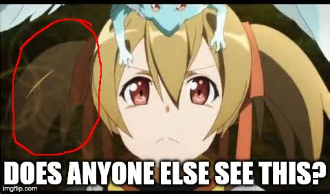
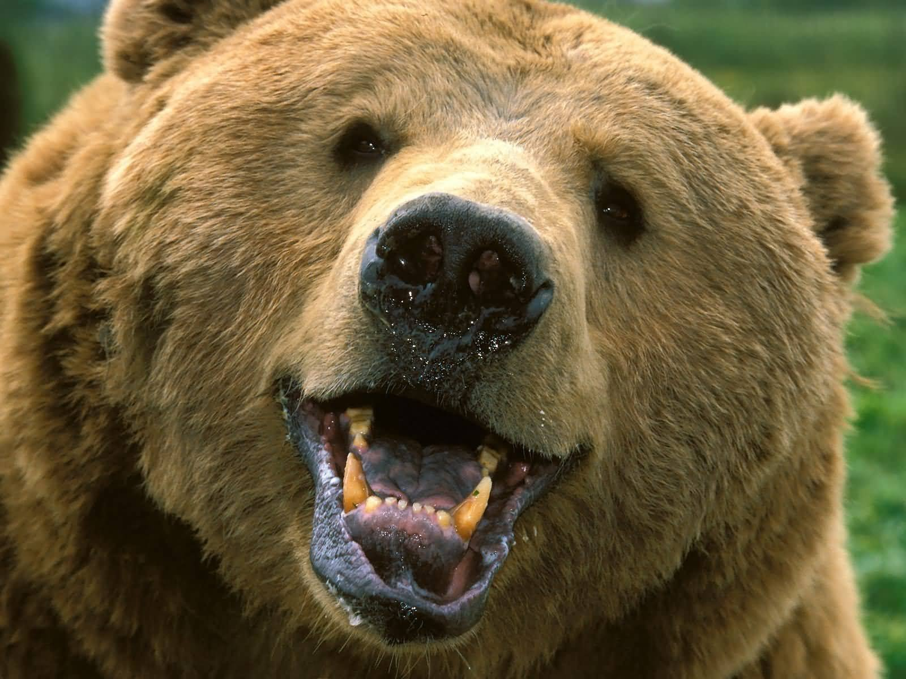

Wyatt Jones
Stuff I like
- Video Games
- Bears
- Pokemon Go
- Youtube
- Hanging out with my Firends

Bears Bears Bears Bears Bears Bears Bears Bears Bears Bears Bears Bears Bears Bears Bears Bears Bears Bears Bears Bears Bears BearsBears Bears Bears Bears Bears Bears Bears Bears Bears Bears Bears Bears Bears Bears Bears Bears Bears Bears Bears Bears Bears BearsBears Bears Bears Bears Bears Bears Bears Bears Bears Bears Bears Bears Bears Bears Bears Bears Bears Bears Bears Bears Bears BearsBears Bears Bears Bears Bears Bears Bears Bears Bears Bears Bears Bears Bears Bears Bears Bears Bears Bears Bears Bears Bears BearsBears Bears Bears Bears Bears Bears Bears Bears Bears Bears Bears Bears Bears Bears Bears Bears Bears Bears Bears Bears Bears BearsBears Bears Bears Bears Bears Bears Bears Bears Bears Bears Bears Bears Bears Bears Bears Bears Bears Bears Bears Bears Bears BearsBears Bears Bears Bears Bears Bears Bears Bears Bears Bears Bears Bears Bears Bears Bears Bears Bears Bears Bears Bears Bears BearsBears Bears Bears Bears Bears Bears Bears Bears Bears Bears Bears Bears Bears Bears Bears Bears Bears Bears Bears Bears Bears BearsBears Bears Bears Bears Bears Bears Bears Bears Bears Bears Bears Bears Bears Bears Bears Bears Bears Bears Bears Bears Bears BearsBears Bears Bears Bears Bears Bears Bears Bears Bears Bears Bears Bears Bears Bears Bears Bears Bears Bears Bears Bears Bears BearsBears Bears Bears Bears Bears Bears Bears Bears Bears Bears Bears Bears Bears Bears Bears Bears Bears Bears Bears Bears Bears BearsBears Bears Bears Bears Bears Bears Bears Bears Bears Bears Bears Bears Bears Bears Bears Bears Bears Bears Bears Bears Bears BearsBears Bears Bears Bears Bears Bears Bears Bears Bears Bears Bears Bears Bears Bears Bears Bears Bears Bears Bears Bears Bears BearsBears Bears Bears Bears Bears Bears Bears Bears Bears Bears Bears Bears Bears Bears Bears Bears Bears Bears Bears Bears Bears BearsBears Bears Bears Bears Bears Bears Bears Bears Bears Bears Bears Bears Bears Bears Bears Bears Bears Bears Bears Bears Bears BearsBears Bears Bears Bears Bears Bears Bears Bears Bears Bears Bears Bears Bears Bears Bears Bears Bears Bears Bears Bears Bears Bears Bears Bears Bears Bears Bears Bears Bears Bears Bears Bears Bears Bears Bears Bears Bears Bears Bears Bears Bears Bears Bears Bears Bears Bears Bears Bears Bears Bears Bears Bears Bears Bears Bears Bears Bears Bears Bears Bears Bears Bears Bears Bears Bears BearsBears Bears Bears Bears Bears Bears Bears Bears Bears Bears Bears Bears Bears Bears Bears Bears Bears Bears Bears Bears Bears Bears Bears Bears Bears Bears Bears Bears Bears Bears Bears Bears Bears Bears Bears Bears Bears Bears Bears Bears Bears Bears Bears Bears Bears Bears Bears Bears Bears Bears Bears Bears Bears Bears Bears Bears Bears Bears Bears Bears Bears Bears Bears Bears Bears BearsBears Bears Bears Bears Bears Bears Bears Bears Bears Bears Bears Bears Bears Bears Bears Bears Bears Bears Bears Bears Bears BearsBears Bears Bears Bears Bears Bears Bears Bears Bears Bears Bears Bears Bears Bears Bears Bears Bears Bears Bears Bears Bears BearsBears Bears Bears Bears Bears Bears Bears Bears Bears Bears Bears Bears Bears Bears Bears Bears Bears Bears Bears Bears Bears Bears Bears Bears Bears Bears Bears Bears Bears Bears Bears Bears Bears Bears Bears Bears Bears Bears Bears Bears Bears Bears Bears BearsBears Bears Bears Bears Bears Bears Bears Bears Bears Bears Bears Bears Bears Bears Bears Bears Bears Bears Bears Bears Bears BearsBears Bears Bears Bears Bears Bears Bears Bears Bears Bears Bears Bears Bears Bears Bears Bears Bears Bears Bears Bears Bears BearsBears Bears Bears Bears Bears Bears Bears Bears Bears Bears Bears Bears Bears Bears Bears Bears Bears Bears Bears Bears Bears BearsBears Bears Bears Bears Bears Bears Bears Bears Bears Bears Bears Bears Bears Bears Bears Bears Bears Bears Bears Bears Bears BearsBears Bears Bears Bears Bears Bears Bears Bears Bears Bears Bears Bears Bears Bears Bears Bears Bears Bears Bears Bears Bears BearsBears Bears Bears Bears Bears Bears Bears Bears Bears Bears Bears Bears Bears Bears Bears Bears Bears Bears Bears Bears Bears BearsBears Bears Bears Bears Bears Bears Bears Bears Bears Bears Bears Bears Bears Bears Bears Bears Bears Bears Bears Bears Bears BearsBears Bears Bears Bears Bears Bears Bears Bears Bears Bears Bears Bears Bears Bears Bears Bears Bears Bears Bears Bears Bears BearsBears Bears Bears Bears Bears Bears Bears Bears Bears Bears Bears Bears Bears Bears Bears Bears Bears Bears Bears Bears Bears BearsBears Bears Bears Bears Bears Bears Bears Bears Bears Bears Bears Bears Bears Bears Bears Bears Bears Bears Bears Bears Bears BearsBears Bears Bears Bears Bears Bears Bears Bears Bears Bears Bears Bears Bears Bears Bears Bears Bears Bears Bears Bears Bears BearsBears Bears Bears Bears Bears Bears Bears Bears Bears Bears Bears Bears Bears Bears Bears Bears Bears Bears Bears Bears Bears BearsBears Bears Bears Bears Bears Bears Bears Bears Bears Bears Bears Bears Bears Bears Bears Bears Bears Bears Bears Bears Bears BearsBears Bears Bears Bears Bears Bears Bears Bears Bears Bears Bears Bears Bears Bears Bears Bears Bears Bears Bears Bears Bears BearsBears Bears Bears Bears Bears Bears Bears Bears Bears Bears Bears Bears Bears Bears Bears Bears Bears Bears Bears Bears Bears BearsBears Bears Bears Bears Bears Bears Bears Bears Bears Bears Bears Bears Bears Bears Bears Bears Bears Bears Bears Bears Bears Bears Bears Bears Bears Bears Bears Bears Bears Bears Bears Bears Bears Bears Bears Bears Bears Bears Bears Bears Bears Bears Bears Bears Bears Bears Bears Bears Bears Bears Bears Bears Bears Bears Bears Bears Bears Bears Bears Bears Bears Bears Bears Bears Bears BearsBears Bears Bears Bears Bears Bears Bears Bears Bears Bears Bears Bears Bears Bears Bears Bears Bears Bears Bears Bears Bears Bears Bears Bears Bears Bears Bears Bears Bears Bears Bears Bears Bears Bears Bears Bears Bears Bears Bears Bears Bears Bears Bears Bears Bears Bears Bears Bears Bears Bears Bears Bears Bears Bears Bears Bears Bears Bears Bears Bears Bears Bears Bears Bears Bears BearsBears Bears Bears Bears Bears Bears Bears Bears Bears Bears Bears Bears Bears Bears Bears Bears Bears Bears Bears Bears Bears BearsBears Bears Bears Bears Bears Bears Bears Bears Bears Bears Bears Bears Bears Bears Bears Bears Bears Bears Bears Bears Bears BearsBears Bears Bears Bears Bears Bears Bears Bears Bears Bears Bears Bears Bears Bears Bears Bears Bears Bears Bears Bears Bears Bears Bears Bears Bears Bears Bears Bears Bears Bears Bears Bears Bears Bears Bears Bears Bears Bears Bears Bears Bears Bears Bears BearsBears Bears Bears Bears Bears Bears Bears Bears Bears Bears Bears Bears Bears Bears Bears Bears Bears Bears Bears Bears Bears BearsBears Bears Bears Bears Bears Bears Bears Bears Bears Bears Bears Bears Bears Bears Bears Bears Bears Bears Bears Bears Bears BearsBears Bears Bears Bears Bears Bears Bears Bears Bears Bears Bears Bears Bears Bears Bears Bears Bears Bears Bears Bears Bears BearsBears Bears Bears Bears Bears Bears Bears Bears Bears Bears Bears Bears Bears Bears Bears Bears Bears Bears Bears Bears Bears BearsBears Bears Bears Bears Bears Bears Bears Bears Bears Bears Bears Bears Bears Bears Bears Bears Bears Bears Bears Bears Bears BearsBears Bears Bears Bears Bears Bears Bears Bears Bears Bears Bears Bears Bears Bears Bears Bears Bears Bears Bears Bears Bears BearsBears Bears Bears Bears Bears Bears Bears Bears Bears Bears Bears Bears Bears Bears Bears Bears Bears Bears Bears Bears Bears BearsBears Bears Bears Bears Bears Bears Bears Bears Bears Bears Bears Bears Bears Bears Bears Bears Bears Bears Bears Bears Bears BearsBears Bears Bears Bears Bears Bears Bears Bears Bears Bears Bears Bears Bears Bears Bears Bears Bears Bears Bears Bears Bears BearsBears Bears Bears Bears Bears Bears Bears Bears Bears Bears Bears Bears Bears Bears Bears Bears Bears Bears Bears Bears Bears BearsBears Bears Bears Bears Bears Bears Bears Bears Bears Bears Bears Bears Bears Bears Bears Bears Bears Bears Bears Bears Bears BearsBears Bears Bears Bears Bears Bears Bears Bears Bears Bears Bears Bears Bears Bears Bears Bears Bears Bears Bears Bears Bears BearsBears Bears Bears Bears Bears Bears Bears Bears Bears Bears Bears Bears Bears Bears Bears Bears Bears Bears Bears Bears Bears BearsBears Bears Bears Bears Bears Bears Bears Bears Bears Bears Bears Bears Bears Bears Bears Bears Bears Bears Bears Bears Bears BearsBears Bears Bears Bears Bears Bears Bears Bears Bears Bears Bears Bears Bears Bears Bears Bears Bears Bears Bears Bears Bears BearsBears Bears Bears Bears Bears Bears Bears Bears Bears Bears Bears Bears Bears Bears Bears Bears Bears Bears Bears Bears Bears Bears Bears Bears Bears Bears Bears Bears Bears Bears Bears Bears Bears Bears Bears Bears Bears Bears Bears Bears Bears Bears Bears Bears Bears Bears Bears Bears Bears Bears Bears Bears Bears Bears Bears Bears Bears Bears Bears Bears Bears Bears Bears Bears Bears BearsBears Bears Bears Bears Bears Bears Bears Bears Bears Bears Bears Bears Bears Bears Bears Bears Bears Bears Bears Bears Bears Bears Bears Bears Bears Bears Bears Bears Bears Bears Bears Bears Bears Bears Bears Bears Bears Bears Bears Bears Bears Bears Bears Bears Bears Bears Bears Bears Bears Bears Bears Bears Bears Bears Bears Bears Bears Bears Bears Bears Bears Bears Bears Bears Bears BearsBears Bears Bears Bears Bears Bears Bears Bears Bears Bears Bears Bears Bears Bears Bears Bears Bears Bears Bears Bears Bears BearsBears Bears Bears Bears Bears Bears Bears Bears Bears Bears Bears Bears Bears Bears Bears Bears Bears Bears Bears Bears Bears BearsBears Bears Bears Bears Bears Bears Bears Bears Bears Bears Bears Bears Bears Bears Bears Bears Bears Bears Bears Bears Bears Bears Bears Bears Bears Bears Bears Bears Bears Bears Bears Bears Bears Bears Bears Bears Bears Bears Bears Bears Bears Bears Bears BearsBears Bears Bears Bears Bears Bears Bears Bears Bears Bears Bears Bears Bears Bears Bears Bears Bears Bears Bears Bears Bears BearsBears Bears Bears Bears Bears Bears Bears Bears Bears Bears Bears Bears Bears Bears Bears Bears Bears Bears Bears Bears Bears BearsBears Bears Bears Bears Bears Bears Bears Bears Bears Bears Bears Bears Bears Bears Bears Bears Bears Bears Bears Bears Bears BearsBears Bears Bears Bears Bears Bears Bears Bears Bears Bears Bears Bears Bears Bears Bears Bears Bears Bears Bears Bears Bears BearsBears Bears Bears Bears Bears Bears Bears Bears Bears Bears Bears Bears Bears Bears Bears Bears Bears Bears Bears Bears Bears BearsBears Bears Bears Bears Bears Bears Bears Bears Bears Bears Bears Bears Bears Bears Bears Bears Bears Bears Bears Bears Bears BearsBears Bears Bears Bears Bears Bears Bears Bears Bears Bears Bears Bears Bears Bears Bears Bears Bears Bears Bears Bears Bears BearsBears Bears Bears Bears Bears Bears Bears Bears Bears Bears Bears Bears Bears Bears Bears Bears Bears Bears Bears Bears Bears BearsBears Bears Bears Bears Bears Bears Bears Bears Bears Bears Bears Bears Bears Bears Bears Bears Bears Bears Bears Bears Bears BearsBears Bears Bears Bears Bears Bears Bears Bears Bears Bears Bears Bears Bears Bears Bears Bears Bears Bears Bears Bears Bears BearsBears Bears Bears Bears Bears Bears Bears Bears Bears Bears Bears Bears Bears Bears Bears Bears Bears Bears Bears Bears Bears BearsBears Bears Bears Bears Bears Bears Bears Bears Bears Bears Bears Bears Bears Bears Bears Bears Bears Bears Bears Bears Bears BearsBears Bears Bears Bears Bears Bears Bears Bears Bears Bears Bears Bears Bears Bears Bears Bears Bears Bears Bears Bears Bears BearsBears Bears Bears Bears Bears Bears Bears Bears Bears Bears Bears Bears Bears Bears Bears Bears Bears Bears Bears Bears Bears BearsBears Bears Bears Bears Bears Bears Bears Bears Bears Bears Bears Bears Bears Bears Bears Bears Bears Bears Bears Bears Bears BearsBears Bears Bears Bears Bears Bears Bears Bears Bears Bears Bears Bears Bears Bears Bears Bears Bears Bears Bears Bears Bears Bears Bears Bears Bears Bears Bears Bears Bears Bears Bears Bears Bears Bears Bears Bears Bears Bears Bears Bears Bears Bears Bears Bears Bears Bears Bears Bears Bears Bears Bears Bears Bears Bears Bears Bears Bears Bears Bears Bears Bears Bears Bears Bears Bears BearsBears Bears Bears Bears Bears Bears Bears Bears Bears Bears Bears Bears Bears Bears Bears Bears Bears Bears Bears Bears Bears Bears Bears Bears Bears Bears Bears Bears Bears Bears Bears Bears Bears Bears Bears Bears Bears Bears Bears Bears Bears Bears Bears Bears Bears Bears Bears Bears Bears Bears Bears Bears Bears Bears Bears Bears Bears Bears Bears Bears Bears Bears Bears Bears Bears BearsBears Bears Bears Bears Bears Bears Bears Bears Bears Bears Bears Bears Bears Bears Bears Bears Bears Bears Bears Bears Bears BearsBears Bears Bears Bears Bears Bears Bears Bears Bears Bears Bears Bears Bears Bears Bears Bears Bears Bears Bears Bears Bears BearsBears Bears Bears Bears Bears Bears Bears Bears Bears Bears Bears Bears Bears Bears Bears Bears Bears Bears Bears Bears Bears Bears Bears Bears Bears Bears Bears Bears Bears Bears Bears Bears Bears Bears Bears Bears Bears Bears Bears Bears Bears Bears Bears BearsBears Bears Bears Bears Bears Bears Bears Bears Bears Bears Bears Bears Bears Bears Bears Bears Bears Bears Bears Bears Bears BearsBears Bears Bears Bears Bears Bears Bears Bears Bears Bears Bears Bears Bears Bears Bears Bears Bears Bears Bears Bears Bears BearsBears Bears Bears Bears Bears Bears Bears Bears Bears Bears Bears Bears Bears Bears Bears Bears Bears Bears Bears Bears Bears BearsBears Bears Bears Bears Bears Bears Bears Bears Bears Bears Bears Bears Bears Bears Bears Bears Bears Bears Bears Bears Bears BearsBears Bears Bears Bears Bears Bears Bears Bears Bears Bears Bears Bears Bears Bears Bears Bears Bears Bears Bears Bears Bears BearsBears Bears Bears Bears Bears Bears Bears Bears Bears Bears Bears Bears Bears Bears Bears Bears Bears Bears Bears Bears Bears BearsBears Bears Bears Bears Bears Bears Bears Bears Bears Bears Bears Bears Bears Bears Bears Bears Bears Bears Bears Bears Bears BearsBears Bears Bears Bears Bears Bears Bears Bears Bears Bears Bears Bears Bears Bears Bears Bears Bears Bears Bears Bears Bears BearsBears Bears Bears Bears Bears Bears Bears Bears Bears Bears Bears Bears Bears Bears Bears Bears Bears Bears Bears Bears Bears BearsBears Bears Bears Bears Bears Bears Bears Bears Bears Bears Bears Bears Bears Bears Bears Bears Bears Bears Bears Bears Bears BearsBears Bears Bears Bears Bears Bears Bears Bears Bears Bears Bears Bears Bears Bears Bears Bears Bears Bears Bears Bears Bears BearsBears Bears Bears Bears Bears Bears Bears Bears Bears Bears Bears Bears Bears Bears Bears Bears Bears Bears Bears Bears Bears BearsBears Bears Bears Bears Bears Bears Bears Bears Bears Bears Bears Bears Bears Bears Bears Bears Bears Bears Bears Bears Bears BearsBears Bears Bears Bears Bears Bears Bears Bears Bears Bears Bears Bears Bears Bears Bears Bears Bears Bears Bears Bears Bears BearsBears Bears Bears Bears Bears Bears Bears Bears Bears Bears Bears Bears Bears Bears Bears Bears Bears Bears Bears Bears Bears BearsBears Bears Bears Bears Bears Bears Bears Bears Bears Bears Bears Bears Bears Bears Bears Bears Bears Bears Bears Bears Bears Bears Bears Bears Bears Bears Bears Bears Bears Bears Bears Bears Bears Bears Bears Bears Bears Bears Bears Bears Bears Bears Bears Bears Bears Bears Bears Bears Bears Bears Bears Bears Bears Bears Bears Bears Bears Bears Bears Bears Bears Bears Bears Bears Bears BearsBears Bears Bears Bears Bears Bears Bears Bears Bears Bears Bears Bears Bears Bears Bears Bears Bears Bears Bears Bears Bears Bears Bears Bears Bears Bears Bears Bears Bears Bears Bears Bears Bears Bears Bears Bears Bears Bears Bears Bears Bears Bears Bears Bears Bears Bears Bears Bears Bears Bears Bears Bears Bears Bears Bears Bears Bears Bears Bears Bears Bears Bears Bears Bears Bears BearsBears Bears Bears Bears Bears Bears Bears Bears Bears Bears Bears Bears Bears Bears Bears Bears Bears Bears Bears Bears Bears BearsBears Bears Bears Bears Bears Bears Bears Bears Bears Bears Bears Bears Bears Bears Bears Bears Bears Bears Bears Bears Bears BearsBears Bears Bears Bears Bears Bears Bears Bears Bears Bears Bears Bears Bears Bears Bears Bears Bears Bears Bears Bears Bears Bears Bears Bears Bears Bears Bears Bears Bears Bears Bears Bears Bears Bears Bears Bears Bears Bears Bears Bears Bears Bears Bears BearsBears Bears Bears Bears Bears Bears Bears Bears Bears Bears Bears Bears Bears Bears Bears Bears Bears Bears Bears Bears Bears BearsBears Bears Bears Bears Bears Bears Bears Bears Bears Bears Bears Bears Bears Bears Bears Bears Bears Bears Bears Bears Bears BearsBears Bears Bears Bears Bears Bears Bears Bears Bears Bears Bears Bears Bears Bears Bears Bears Bears Bears Bears Bears Bears BearsBears Bears Bears Bears Bears Bears Bears Bears Bears Bears Bears Bears Bears Bears Bears Bears Bears Bears Bears Bears Bears BearsBears Bears Bears Bears Bears Bears Bears Bears Bears Bears Bears Bears Bears Bears Bears Bears Bears Bears Bears Bears Bears BearsBears Bears Bears Bears Bears Bears Bears Bears Bears Bears Bears Bears Bears Bears Bears Bears Bears Bears Bears Bears Bears BearsBears Bears Bears Bears Bears Bears Bears Bears Bears Bears Bears Bears Bears Bears Bears Bears Bears Bears Bears Bears Bears BearsBears Bears Bears Bears Bears Bears Bears Bears Bears Bears Bears Bears Bears Bears Bears Bears Bears Bears Bears Bears Bears BearsBears Bears Bears Bears Bears Bears Bears Bears Bears Bears Bears Bears Bears Bears Bears Bears Bears Bears Bears Bears Bears BearsBears Bears Bears Bears Bears Bears Bears Bears Bears Bears Bears Bears Bears Bears Bears Bears Bears Bears Bears Bears Bears BearsBears Bears Bears Bears Bears Bears Bears Bears Bears Bears Bears Bears Bears Bears Bears Bears Bears Bears Bears Bears Bears BearsBears Bears Bears Bears Bears Bears Bears Bears Bears Bears Bears Bears Bears Bears Bears Bears Bears Bears Bears Bears Bears BearsBears Bears Bears Bears Bears Bears Bears Bears Bears Bears Bears Bears Bears Bears Bears Bears Bears Bears Bears Bears Bears BearsBears Bears Bears Bears Bears Bears Bears Bears Bears Bears Bears Bears Bears Bears Bears Bears Bears Bears Bears Bears Bears BearsBears Bears Bears Bears Bears Bears Bears Bears Bears Bears Bears Bears Bears Bears Bears Bears Bears Bears Bears Bears Bears BearsBears Bears Bears Bears Bears Bears Bears Bears Bears Bears Bears Bears Bears Bears Bears Bears Bears Bears Bears Bears Bears Bears Bears Bears Bears Bears Bears Bears Bears Bears Bears Bears Bears Bears Bears Bears Bears Bears Bears Bears Bears Bears Bears Bears Bears Bears Bears Bears Bears Bears Bears Bears Bears Bears Bears Bears Bears Bears Bears Bears Bears Bears Bears Bears Bears BearsBears Bears Bears Bears Bears Bears Bears Bears Bears Bears Bears Bears Bears Bears Bears Bears Bears Bears Bears Bears Bears Bears Bears Bears Bears Bears Bears Bears Bears Bears Bears Bears Bears Bears Bears Bears Bears Bears Bears Bears Bears Bears Bears Bears Bears Bears Bears Bears Bears Bears Bears Bears Bears Bears Bears Bears Bears Bears Bears Bears Bears Bears Bears Bears Bears BearsBears Bears Bears Bears Bears Bears Bears Bears Bears Bears Bears Bears Bears Bears Bears Bears Bears Bears Bears Bears Bears BearsBears Bears Bears Bears Bears Bears Bears Bears Bears Bears Bears Bears Bears Bears Bears Bears Bears Bears Bears Bears Bears BearsBears Bears Bears Bears Bears Bears Bears Bears Bears Bears Bears Bears Bears Bears Bears Bears Bears Bears Bears Bears Bears Bears Bears Bears Bears Bears Bears Bears Bears Bears Bears Bears Bears Bears Bears Bears Bears Bears Bears Bears Bears Bears Bears BearsBears Bears Bears Bears Bears Bears Bears Bears Bears Bears Bears Bears Bears Bears Bears Bears Bears Bears Bears Bears Bears BearsBears Bears Bears Bears Bears Bears Bears Bears Bears Bears Bears Bears Bears Bears Bears Bears Bears Bears Bears Bears Bears BearsBears Bears Bears Bears Bears Bears Bears Bears Bears Bears Bears Bears Bears Bears Bears Bears Bears Bears Bears Bears Bears BearsBears Bears Bears Bears Bears Bears Bears Bears Bears Bears Bears Bears Bears Bears Bears Bears Bears Bears Bears Bears Bears BearsBears Bears Bears Bears Bears Bears Bears Bears Bears Bears Bears Bears Bears Bears Bears Bears Bears Bears Bears Bears Bears BearsBears Bears Bears Bears Bears Bears Bears Bears Bears Bears Bears Bears Bears Bears Bears Bears Bears Bears Bears Bears Bears BearsBears Bears Bears Bears Bears Bears Bears Bears Bears Bears Bears Bears Bears Bears Bears Bears Bears Bears Bears Bears Bears BearsBears Bears Bears Bears Bears Bears Bears Bears Bears Bears Bears Bears Bears Bears Bears Bears Bears Bears Bears Bears Bears BearsBears Bears Bears Bears Bears Bears Bears Bears Bears Bears Bears Bears Bears Bears Bears Bears Bears Bears Bears Bears Bears BearsBears Bears Bears Bears Bears Bears Bears Bears Bears Bears Bears Bears Bears Bears Bears Bears Bears Bears Bears Bears Bears BearsBears Bears Bears Bears Bears Bears Bears Bears Bears Bears Bears Bears Bears Bears Bears Bears Bears Bears Bears Bears Bears BearsBears Bears Bears Bears Bears Bears Bears Bears Bears Bears Bears Bears Bears Bears Bears Bears Bears Bears Bears Bears Bears BearsBears Bears Bears Bears Bears Bears Bears Bears Bears Bears Bears Bears Bears Bears Bears Bears Bears Bears Bears Bears Bears BearsBears Bears Bears Bears Bears Bears Bears Bears Bears Bears Bears Bears Bears Bears Bears Bears Bears Bears Bears Bears Bears BearsBears Bears Bears Bears Bears Bears Bears Bears Bears Bears Bears Bears Bears Bears Bears Bears Bears Bears Bears Bears Bears BearsBears Bears Bears Bears Bears Bears Bears Bears Bears Bears Bears Bears Bears Bears Bears Bears Bears Bears Bears Bears Bears Bears Bears Bears Bears Bears Bears Bears Bears Bears Bears Bears Bears Bears Bears Bears Bears Bears Bears Bears Bears Bears Bears Bears Bears Bears Bears Bears Bears Bears Bears Bears Bears Bears Bears Bears Bears Bears Bears Bears Bears Bears Bears Bears Bears BearsBears Bears Bears Bears Bears Bears Bears Bears Bears Bears Bears Bears Bears Bears Bears Bears Bears Bears Bears Bears Bears Bears Bears Bears Bears Bears Bears Bears Bears Bears Bears Bears Bears Bears Bears Bears Bears Bears Bears Bears Bears Bears Bears Bears Bears Bears Bears Bears Bears Bears Bears Bears Bears Bears Bears Bears Bears Bears Bears Bears Bears Bears Bears Bears Bears BearsBears Bears Bears Bears Bears Bears Bears Bears Bears Bears Bears Bears Bears Bears Bears Bears Bears Bears Bears Bears Bears BearsBears Bears Bears Bears Bears Bears Bears Bears Bears Bears Bears Bears Bears Bears Bears Bears Bears Bears Bears Bears Bears BearsBears Bears Bears Bears Bears Bears Bears Bears Bears Bears Bears Bears Bears Bears Bears Bears Bears Bears Bears Bears Bears Bears Bears Bears Bears Bears Bears Bears Bears Bears Bears Bears Bears Bears Bears Bears Bears Bears Bears Bears Bears Bears Bears BearsBears Bears Bears Bears Bears Bears Bears Bears Bears Bears Bears Bears Bears Bears Bears Bears Bears Bears Bears Bears Bears BearsBears Bears Bears Bears Bears Bears Bears Bears Bears Bears Bears Bears Bears Bears Bears Bears Bears Bears Bears Bears Bears BearsBears Bears Bears Bears Bears Bears Bears Bears Bears Bears Bears Bears Bears Bears Bears Bears Bears Bears Bears Bears Bears BearsBears Bears Bears Bears Bears Bears Bears Bears Bears Bears Bears Bears Bears Bears Bears Bears Bears Bears Bears Bears Bears BearsBears Bears Bears Bears Bears Bears Bears Bears Bears Bears Bears Bears Bears Bears Bears Bears Bears Bears Bears Bears Bears BearsBears Bears Bears Bears Bears Bears Bears Bears Bears Bears Bears Bears Bears Bears Bears Bears Bears Bears Bears Bears Bears BearsBears Bears Bears Bears Bears Bears Bears Bears Bears Bears Bears Bears Bears Bears Bears Bears Bears Bears Bears Bears Bears BearsBears Bears Bears Bears Bears Bears Bears Bears Bears Bears Bears Bears Bears Bears Bears Bears Bears Bears Bears Bears Bears BearsBears Bears Bears Bears Bears Bears Bears Bears Bears Bears Bears Bears Bears Bears Bears Bears Bears Bears Bears Bears Bears BearsBears Bears Bears Bears Bears Bears Bears Bears Bears Bears Bears Bears Bears Bears Bears Bears Bears Bears Bears Bears Bears BearsBears Bears Bears Bears Bears Bears Bears Bears Bears Bears Bears Bears Bears Bears Bears Bears Bears Bears Bears Bears Bears BearsBears Bears Bears Bears Bears Bears Bears Bears Bears Bears Bears Bears Bears Bears Bears Bears Bears Bears Bears Bears Bears BearsBears Bears Bears Bears Bears Bears Bears Bears Bears Bears Bears Bears Bears Bears Bears Bears Bears Bears Bears Bears Bears BearsBears Bears Bears Bears Bears Bears Bears Bears Bears Bears Bears Bears Bears Bears Bears Bears Bears Bears Bears Bears Bears BearsBears Bears Bears Bears Bears Bears Bears Bears Bears Bears Bears Bears Bears Bears Bears Bears Bears Bears Bears Bears Bears BearsBears Bears Bears Bears Bears Bears Bears Bears Bears Bears Bears Bears Bears Bears Bears Bears Bears Bears Bears Bears Bears Bears Bears Bears Bears Bears Bears Bears Bears Bears Bears Bears Bears Bears Bears Bears Bears Bears Bears Bears Bears Bears Bears Bears Bears Bears Bears Bears Bears Bears Bears Bears Bears Bears Bears Bears Bears Bears Bears Bears Bears Bears Bears Bears Bears BearsBears Bears Bears Bears Bears Bears Bears Bears Bears Bears Bears Bears Bears Bears Bears Bears Bears Bears Bears Bears Bears Bears Bears Bears Bears Bears Bears Bears Bears Bears Bears Bears Bears Bears Bears Bears Bears Bears Bears Bears Bears Bears Bears Bears Bears Bears Bears Bears Bears Bears Bears Bears Bears Bears Bears Bears Bears Bears Bears Bears Bears Bears Bears Bears Bears BearsBears Bears Bears Bears Bears Bears Bears Bears Bears Bears Bears Bears Bears Bears Bears Bears Bears Bears Bears Bears Bears BearsBears Bears Bears Bears Bears Bears Bears Bears Bears Bears Bears Bears Bears Bears Bears Bears Bears Bears Bears Bears Bears BearsBears Bears Bears Bears Bears Bears Bears Bears Bears Bears Bears Bears Bears Bears Bears Bears Bears Bears Bears Bears Bears Bears Bears Bears Bears Bears Bears Bears Bears Bears Bears Bears Bears Bears Bears Bears Bears Bears Bears Bears Bears Bears Bears BearsBears Bears Bears Bears Bears Bears Bears Bears Bears Bears Bears Bears Bears Bears Bears Bears Bears Bears Bears Bears Bears BearsBears Bears Bears Bears Bears Bears Bears Bears Bears Bears Bears Bears Bears Bears Bears Bears Bears Bears Bears Bears Bears BearsBears Bears Bears Bears Bears Bears Bears Bears Bears Bears Bears Bears Bears Bears Bears Bears Bears Bears Bears Bears Bears BearsBears Bears Bears Bears Bears Bears Bears Bears Bears Bears Bears Bears Bears Bears Bears Bears Bears Bears Bears Bears Bears BearsBears Bears Bears Bears Bears Bears Bears Bears Bears Bears Bears Bears Bears Bears Bears Bears Bears Bears Bears Bears Bears BearsBears Bears Bears Bears Bears Bears Bears Bears Bears Bears Bears Bears Bears Bears Bears Bears Bears Bears Bears Bears Bears BearsBears Bears Bears Bears Bears Bears Bears Bears Bears Bears Bears Bears Bears Bears Bears Bears Bears Bears Bears Bears Bears BearsBears Bears Bears Bears Bears Bears Bears Bears Bears Bears Bears Bears Bears Bears Bears Bears Bears Bears Bears Bears Bears BearsBears Bears Bears Bears Bears Bears Bears Bears Bears Bears Bears Bears Bears Bears Bears Bears Bears Bears Bears Bears Bears BearsBears Bears Bears Bears Bears Bears Bears Bears Bears Bears Bears Bears Bears Bears Bears Bears Bears Bears Bears Bears Bears BearsBears Bears Bears Bears Bears Bears Bears Bears Bears Bears Bears Bears Bears Bears Bears Bears Bears Bears Bears Bears Bears BearsBears Bears Bears Bears Bears Bears Bears Bears Bears Bears Bears Bears Bears Bears Bears Bears Bears Bears Bears Bears Bears BearsBears Bears Bears Bears Bears Bears Bears Bears Bears Bears Bears Bears Bears Bears Bears Bears Bears Bears Bears Bears Bears BearsBears Bears Bears Bears Bears Bears Bears Bears Bears Bears Bears Bears Bears Bears Bears Bears Bears Bears Bears Bears Bears BearsBears Bears Bears Bears Bears Bears Bears Bears Bears Bears Bears Bears Bears Bears Bears Bears Bears Bears Bears Bears Bears BearsBears Bears Bears Bears Bears Bears Bears Bears Bears Bears Bears Bears Bears Bears Bears Bears Bears Bears Bears Bears Bears Bears Bears Bears Bears Bears Bears Bears Bears Bears Bears Bears Bears Bears Bears Bears Bears Bears Bears Bears Bears Bears Bears Bears Bears Bears Bears Bears Bears Bears Bears Bears Bears Bears Bears Bears Bears Bears Bears Bears Bears Bears Bears Bears Bears BearsBears Bears Bears Bears Bears Bears Bears Bears Bears Bears Bears Bears Bears Bears Bears Bears Bears Bears Bears Bears Bears Bears Bears Bears Bears Bears Bears Bears Bears Bears Bears Bears Bears Bears Bears Bears Bears Bears Bears Bears Bears Bears Bears Bears Bears Bears Bears Bears Bears Bears Bears Bears Bears Bears Bears Bears Bears Bears Bears Bears Bears Bears Bears Bears Bears BearsBears Bears Bears Bears Bears Bears Bears Bears Bears Bears Bears Bears Bears Bears Bears Bears Bears Bears Bears Bears Bears BearsBears Bears Bears Bears Bears Bears Bears Bears Bears Bears Bears Bears Bears Bears Bears Bears Bears Bears Bears Bears Bears BearsBears Bears Bears Bears Bears Bears Bears Bears Bears Bears Bears Bears Bears Bears Bears Bears Bears Bears Bears Bears Bears Bears Bears Bears Bears Bears Bears Bears Bears Bears Bears Bears Bears Bears Bears Bears Bears Bears Bears Bears Bears Bears Bears BearsBears Bears Bears Bears Bears Bears Bears Bears Bears Bears Bears Bears Bears Bears Bears Bears Bears Bears Bears Bears Bears BearsBears Bears Bears Bears Bears Bears Bears Bears Bears Bears Bears Bears Bears Bears Bears Bears Bears Bears Bears Bears Bears BearsBears Bears Bears Bears Bears Bears Bears Bears Bears Bears Bears Bears Bears Bears Bears Bears Bears Bears Bears Bears Bears BearsBears Bears Bears Bears Bears Bears Bears Bears Bears Bears Bears Bears Bears Bears Bears Bears Bears Bears Bears Bears Bears BearsBears Bears Bears Bears Bears Bears Bears Bears Bears Bears Bears Bears Bears Bears Bears Bears Bears Bears Bears Bears Bears BearsBears Bears Bears Bears Bears Bears Bears Bears Bears Bears Bears Bears Bears Bears Bears Bears Bears Bears Bears Bears Bears BearsBears Bears Bears Bears Bears Bears Bears Bears Bears Bears Bears Bears Bears Bears Bears Bears Bears Bears Bears Bears Bears BearsBears Bears Bears Bears Bears Bears Bears Bears Bears Bears Bears Bears Bears Bears Bears Bears Bears Bears Bears Bears Bears BearsBears Bears Bears Bears Bears Bears Bears Bears Bears Bears Bears Bears Bears Bears Bears Bears Bears Bears Bears Bears Bears BearsBears Bears Bears Bears Bears Bears Bears Bears Bears Bears Bears Bears Bears Bears Bears Bears Bears Bears Bears Bears Bears BearsBears Bears Bears Bears Bears Bears Bears Bears Bears Bears Bears Bears Bears Bears Bears Bears Bears Bears Bears Bears Bears BearsBears Bears Bears Bears Bears Bears Bears Bears Bears Bears Bears Bears Bears Bears Bears Bears Bears Bears Bears Bears Bears BearsBears Bears Bears Bears Bears Bears Bears Bears Bears Bears Bears Bears Bears Bears Bears Bears Bears Bears Bears Bears Bears BearsBears Bears Bears Bears Bears Bears Bears Bears Bears Bears Bears Bears Bears Bears Bears Bears Bears Bears Bears Bears Bears BearsBears Bears Bears Bears Bears Bears Bears Bears Bears Bears Bears Bears Bears Bears Bears Bears Bears Bears Bears Bears Bears BearsBears Bears Bears Bears Bears Bears Bears Bears Bears Bears Bears Bears Bears Bears Bears Bears Bears Bears Bears Bears Bears Bears Bears Bears Bears Bears Bears Bears Bears Bears Bears Bears Bears Bears Bears Bears Bears Bears Bears Bears Bears Bears Bears Bears Bears Bears Bears Bears Bears Bears Bears Bears Bears Bears Bears Bears Bears Bears Bears Bears Bears Bears Bears Bears Bears BearsBears Bears Bears Bears Bears Bears Bears Bears Bears Bears Bears Bears Bears Bears Bears Bears Bears Bears Bears Bears Bears Bears Bears Bears Bears Bears Bears Bears Bears Bears Bears Bears Bears Bears Bears Bears Bears Bears Bears Bears Bears Bears Bears Bears Bears Bears Bears Bears Bears Bears Bears Bears Bears Bears Bears Bears Bears Bears Bears Bears Bears Bears Bears Bears Bears BearsBears Bears Bears Bears Bears Bears Bears Bears Bears Bears Bears Bears Bears Bears Bears Bears Bears Bears Bears Bears Bears BearsBears Bears Bears Bears Bears Bears Bears Bears Bears Bears Bears Bears Bears Bears Bears Bears Bears Bears Bears Bears Bears BearsBears Bears Bears Bears Bears Bears Bears Bears Bears Bears Bears Bears Bears Bears Bears Bears Bears Bears Bears Bears Bears Bears Bears Bears Bears Bears Bears Bears Bears Bears Bears Bears Bears Bears Bears Bears Bears Bears Bears Bears Bears Bears Bears BearsBears Bears Bears Bears Bears Bears Bears Bears Bears Bears Bears Bears Bears Bears Bears Bears Bears Bears Bears Bears Bears BearsBears Bears Bears Bears Bears Bears Bears Bears Bears Bears Bears Bears Bears Bears Bears Bears Bears Bears Bears Bears Bears BearsBears Bears Bears Bears Bears Bears Bears Bears Bears Bears Bears Bears Bears Bears Bears Bears Bears Bears Bears Bears Bears BearsBears Bears Bears Bears Bears Bears Bears Bears Bears Bears Bears Bears Bears Bears Bears Bears Bears Bears Bears Bears Bears BearsBears Bears Bears Bears Bears Bears Bears Bears Bears Bears Bears Bears Bears Bears Bears Bears Bears Bears Bears Bears Bears BearsBears Bears Bears Bears Bears Bears Bears Bears Bears Bears Bears Bears Bears Bears Bears Bears Bears Bears Bears Bears Bears BearsBears Bears Bears Bears Bears Bears Bears Bears Bears Bears Bears Bears Bears Bears Bears Bears Bears Bears Bears Bears Bears BearsBears Bears Bears Bears Bears Bears Bears Bears Bears Bears Bears Bears Bears Bears Bears Bears Bears Bears Bears Bears Bears BearsBears Bears Bears Bears Bears Bears Bears Bears Bears Bears Bears Bears Bears Bears Bears Bears Bears Bears Bears Bears Bears BearsBears Bears Bears Bears Bears Bears Bears Bears Bears Bears Bears Bears Bears Bears Bears Bears Bears Bears Bears Bears Bears BearsBears Bears Bears Bears Bears Bears Bears Bears Bears Bears Bears Bears Bears Bears Bears Bears Bears Bears Bears Bears Bears BearsBears Bears Bears Bears Bears Bears Bears Bears Bears Bears Bears Bears Bears Bears Bears Bears Bears Bears Bears Bears Bears BearsBears Bears Bears Bears Bears Bears Bears Bears Bears Bears Bears Bears Bears Bears Bears Bears Bears Bears Bears Bears Bears BearsBears Bears Bears Bears Bears Bears Bears Bears Bears Bears Bears Bears Bears Bears Bears Bears Bears Bears Bears Bears Bears BearsBears Bears Bears Bears Bears Bears Bears Bears Bears Bears Bears Bears Bears Bears Bears Bears Bears Bears Bears Bears Bears BearsBears Bears Bears Bears Bears Bears Bears Bears Bears Bears Bears Bears Bears Bears Bears Bears Bears Bears Bears Bears Bears Bears Bears Bears Bears Bears Bears Bears Bears Bears Bears Bears Bears Bears Bears Bears Bears Bears Bears Bears Bears Bears Bears Bears Bears Bears Bears Bears Bears Bears Bears Bears Bears Bears Bears Bears Bears Bears Bears Bears Bears Bears Bears Bears Bears BearsBears Bears Bears Bears Bears Bears Bears Bears Bears Bears Bears Bears Bears Bears Bears Bears Bears Bears Bears Bears Bears Bears Bears Bears Bears Bears Bears Bears Bears Bears Bears Bears Bears Bears Bears Bears Bears Bears Bears Bears Bears Bears Bears Bears Bears Bears Bears Bears Bears Bears Bears Bears Bears Bears Bears Bears Bears Bears Bears Bears Bears Bears Bears Bears Bears BearsBears Bears Bears Bears Bears Bears Bears Bears Bears Bears Bears Bears Bears Bears Bears Bears Bears Bears Bears Bears Bears BearsBears Bears Bears Bears Bears Bears Bears Bears Bears Bears Bears Bears Bears Bears Bears Bears Bears Bears Bears Bears Bears BearsBears Bears Bears Bears Bears Bears Bears Bears Bears Bears Bears Bears Bears Bears Bears Bears Bears Bears Bears Bears Bears Bears Bears Bears Bears Bears Bears Bears Bears Bears Bears Bears Bears Bears Bears Bears Bears Bears Bears Bears Bears Bears Bears BearsBears Bears Bears Bears Bears Bears Bears Bears Bears Bears Bears Bears Bears Bears Bears Bears Bears Bears Bears Bears Bears BearsBears Bears Bears Bears Bears Bears Bears Bears Bears Bears Bears Bears Bears Bears Bears Bears Bears Bears Bears Bears Bears BearsBears Bears Bears Bears Bears Bears Bears Bears Bears Bears Bears Bears Bears Bears Bears Bears Bears Bears Bears Bears Bears BearsBears Bears Bears Bears Bears Bears Bears Bears Bears Bears Bears Bears Bears Bears Bears Bears Bears Bears Bears Bears Bears BearsBears Bears Bears Bears Bears Bears Bears Bears Bears Bears Bears Bears Bears Bears Bears Bears Bears Bears Bears Bears Bears BearsBears Bears Bears Bears Bears Bears Bears Bears Bears Bears Bears Bears Bears Bears Bears Bears Bears Bears Bears Bears Bears BearsBears Bears Bears Bears Bears Bears Bears Bears Bears Bears Bears Bears Bears Bears Bears Bears Bears Bears Bears Bears Bears BearsBears Bears Bears Bears Bears Bears Bears Bears Bears Bears Bears Bears Bears Bears Bears Bears Bears Bears Bears Bears Bears BearsBears Bears Bears Bears Bears Bears Bears Bears Bears Bears Bears Bears Bears Bears Bears Bears Bears Bears Bears Bears Bears BearsBears Bears Bears Bears Bears Bears Bears Bears Bears Bears Bears Bears Bears Bears Bears Bears Bears Bears Bears Bears Bears BearsBears Bears Bears Bears Bears Bears Bears Bears Bears Bears Bears Bears Bears Bears Bears Bears Bears Bears Bears Bears Bears BearsBears Bears Bears Bears Bears Bears Bears Bears Bears Bears Bears Bears Bears Bears Bears Bears Bears Bears Bears Bears Bears BearsBears Bears Bears Bears Bears Bears Bears Bears Bears Bears Bears Bears Bears Bears Bears Bears Bears Bears Bears Bears Bears BearsBears Bears Bears Bears Bears Bears Bears Bears Bears Bears Bears Bears Bears Bears Bears Bears Bears Bears Bears Bears Bears BearsBears Bears Bears Bears Bears Bears Bears Bears Bears Bears Bears Bears Bears Bears Bears Bears Bears Bears Bears Bears Bears BearsBears Bears Bears Bears Bears Bears Bears Bears Bears Bears Bears Bears Bears Bears Bears Bears Bears Bears Bears Bears Bears Bears Bears Bears Bears Bears Bears Bears Bears Bears Bears Bears Bears Bears Bears Bears Bears Bears Bears Bears Bears Bears Bears Bears Bears Bears Bears Bears Bears Bears Bears Bears Bears Bears Bears Bears Bears Bears Bears Bears Bears Bears Bears Bears Bears BearsBears Bears Bears Bears Bears Bears Bears Bears Bears Bears Bears Bears Bears Bears Bears Bears Bears Bears Bears Bears Bears Bears Bears Bears Bears Bears Bears Bears Bears Bears Bears Bears Bears Bears Bears Bears Bears Bears Bears Bears Bears Bears Bears Bears Bears Bears Bears Bears Bears Bears Bears Bears Bears Bears Bears Bears Bears Bears Bears Bears Bears Bears Bears Bears Bears BearsBears Bears Bears Bears Bears Bears Bears Bears Bears Bears Bears Bears Bears Bears Bears Bears Bears Bears Bears Bears Bears BearsBears Bears Bears Bears Bears Bears Bears Bears Bears Bears Bears Bears Bears Bears Bears Bears Bears Bears Bears Bears Bears BearsBears Bears Bears Bears Bears Bears Bears Bears Bears Bears Bears Bears Bears Bears Bears Bears Bears Bears Bears Bears Bears Bears Bears Bears Bears Bears Bears Bears Bears Bears Bears Bears Bears Bears Bears Bears Bears Bears Bears Bears Bears Bears Bears BearsBears Bears Bears Bears Bears Bears Bears Bears Bears Bears Bears Bears Bears Bears Bears Bears Bears Bears Bears Bears Bears BearsBears Bears Bears Bears Bears Bears Bears Bears Bears Bears Bears Bears Bears Bears Bears Bears Bears Bears Bears Bears Bears BearsBears Bears Bears Bears Bears Bears Bears Bears Bears Bears Bears Bears Bears Bears Bears Bears Bears Bears Bears Bears Bears BearsBears Bears Bears Bears Bears Bears Bears Bears Bears Bears Bears Bears Bears Bears Bears Bears Bears Bears Bears Bears Bears BearsBears Bears Bears Bears Bears Bears Bears Bears Bears Bears Bears Bears Bears Bears Bears Bears Bears Bears Bears Bears Bears BearsBears Bears Bears Bears Bears Bears Bears Bears Bears Bears Bears Bears Bears Bears Bears Bears Bears Bears Bears Bears Bears BearsBears Bears Bears Bears Bears Bears Bears Bears Bears Bears Bears Bears Bears Bears Bears Bears Bears Bears Bears Bears Bears BearsBears Bears Bears Bears Bears Bears Bears Bears Bears Bears Bears Bears Bears Bears Bears Bears Bears Bears Bears Bears Bears BearsBears Bears Bears Bears Bears Bears Bears Bears Bears Bears Bears Bears Bears Bears Bears Bears Bears Bears Bears Bears Bears BearsBears Bears Bears Bears Bears Bears Bears Bears Bears Bears Bears Bears Bears Bears Bears Bears Bears Bears Bears Bears Bears BearsBears Bears Bears Bears Bears Bears Bears Bears Bears Bears Bears Bears Bears Bears Bears Bears Bears Bears Bears Bears Bears BearsBears Bears Bears Bears Bears Bears Bears Bears Bears Bears Bears Bears Bears Bears Bears Bears Bears Bears Bears Bears Bears BearsBears Bears Bears Bears Bears Bears Bears Bears Bears Bears Bears Bears Bears Bears Bears Bears Bears Bears Bears Bears Bears BearsBears Bears Bears Bears Bears Bears Bears Bears Bears Bears Bears Bears Bears Bears Bears Bears Bears Bears Bears Bears Bears BearsBears Bears Bears Bears Bears Bears Bears Bears Bears Bears Bears Bears Bears Bears Bears Bears Bears Bears Bears Bears Bears BearsBears Bears Bears Bears Bears Bears Bears Bears Bears Bears Bears Bears Bears Bears Bears Bears Bears Bears Bears Bears Bears Bears Bears Bears Bears Bears Bears Bears Bears Bears Bears Bears Bears Bears Bears Bears Bears Bears Bears Bears Bears Bears Bears Bears Bears Bears Bears Bears Bears Bears Bears Bears Bears Bears Bears Bears Bears Bears Bears Bears Bears Bears Bears Bears Bears BearsBears Bears Bears Bears Bears Bears Bears Bears Bears Bears Bears Bears Bears Bears Bears Bears Bears Bears Bears Bears Bears Bears Bears Bears Bears Bears Bears Bears Bears Bears Bears Bears Bears Bears Bears Bears Bears Bears Bears Bears Bears Bears Bears Bears Bears Bears Bears Bears Bears Bears Bears Bears Bears Bears Bears Bears Bears Bears Bears Bears Bears Bears Bears Bears Bears BearsBears Bears Bears Bears Bears Bears Bears Bears Bears Bears Bears Bears Bears Bears Bears Bears Bears Bears Bears Bears Bears BearsBears Bears Bears Bears Bears Bears Bears Bears Bears Bears Bears Bears Bears Bears Bears Bears Bears Bears Bears Bears Bears BearsBears Bears Bears Bears Bears Bears Bears Bears Bears Bears Bears Bears Bears Bears Bears Bears Bears Bears Bears Bears Bears Bears Bears Bears Bears Bears Bears Bears Bears Bears Bears Bears Bears Bears Bears Bears Bears Bears Bears Bears Bears Bears Bears BearsBears Bears Bears Bears Bears Bears Bears Bears Bears Bears Bears Bears Bears Bears Bears Bears Bears Bears Bears Bears Bears BearsBears Bears Bears Bears Bears Bears Bears Bears Bears Bears Bears Bears Bears Bears Bears Bears Bears Bears Bears Bears Bears BearsBears Bears Bears Bears Bears Bears Bears Bears Bears Bears Bears Bears Bears Bears Bears Bears Bears Bears Bears Bears Bears BearsBears Bears Bears Bears Bears Bears Bears Bears Bears Bears Bears Bears Bears Bears Bears Bears Bears Bears Bears Bears Bears BearsBears Bears Bears Bears Bears Bears Bears Bears Bears Bears Bears Bears Bears Bears Bears Bears Bears Bears Bears Bears Bears BearsBears Bears Bears Bears Bears Bears Bears Bears Bears Bears Bears Bears Bears Bears Bears Bears Bears Bears Bears Bears Bears BearsBears Bears Bears Bears Bears Bears Bears Bears Bears Bears Bears Bears Bears Bears Bears Bears Bears Bears Bears Bears Bears BearsBears Bears Bears Bears Bears Bears Bears Bears Bears Bears Bears Bears Bears Bears Bears Bears Bears Bears Bears Bears Bears BearsBears Bears Bears Bears Bears Bears Bears Bears Bears Bears Bears Bears Bears Bears Bears Bears Bears Bears Bears Bears Bears BearsBears Bears Bears Bears Bears Bears Bears Bears Bears Bears Bears Bears Bears Bears Bears Bears Bears Bears Bears Bears Bears BearsBears Bears Bears Bears Bears Bears Bears Bears Bears Bears Bears Bears Bears Bears Bears Bears Bears Bears Bears Bears Bears BearsBears Bears Bears Bears Bears Bears Bears Bears Bears Bears Bears Bears Bears Bears Bears Bears Bears Bears Bears Bears Bears BearsBears Bears Bears Bears Bears Bears Bears Bears Bears Bears Bears Bears Bears Bears Bears Bears Bears Bears Bears Bears Bears BearsBears Bears Bears Bears Bears Bears Bears Bears Bears Bears Bears Bears Bears Bears Bears Bears Bears Bears Bears Bears Bears BearsBears Bears Bears Bears Bears Bears Bears Bears Bears Bears Bears Bears Bears Bears Bears Bears Bears Bears Bears Bears Bears BearsBears Bears Bears Bears Bears Bears Bears Bears Bears Bears Bears Bears Bears Bears Bears Bears Bears Bears Bears Bears Bears Bears Bears Bears Bears Bears Bears Bears Bears Bears Bears Bears Bears Bears Bears Bears Bears Bears Bears Bears Bears Bears Bears Bears Bears Bears Bears Bears Bears Bears Bears Bears Bears Bears Bears Bears Bears Bears Bears Bears Bears Bears Bears Bears Bears BearsBears Bears Bears Bears Bears Bears Bears Bears Bears Bears Bears Bears Bears Bears Bears Bears Bears Bears Bears Bears Bears Bears Bears Bears Bears Bears Bears Bears Bears Bears Bears Bears Bears Bears Bears Bears Bears Bears Bears Bears Bears Bears Bears Bears Bears Bears Bears Bears Bears Bears Bears Bears Bears Bears Bears Bears Bears Bears Bears Bears Bears Bears Bears Bears Bears BearsBears Bears Bears Bears Bears Bears Bears Bears Bears Bears Bears Bears Bears Bears Bears Bears Bears Bears Bears Bears Bears BearsBears Bears Bears Bears Bears Bears Bears Bears Bears Bears Bears Bears Bears Bears Bears Bears Bears Bears Bears Bears Bears BearsBears Bears Bears Bears Bears Bears Bears Bears Bears Bears Bears Bears Bears Bears Bears Bears Bears Bears Bears Bears Bears Bears Bears Bears Bears Bears Bears Bears Bears Bears Bears Bears Bears Bears Bears Bears Bears Bears Bears Bears Bears Bears Bears BearsBears Bears Bears Bears Bears Bears Bears Bears Bears Bears Bears Bears Bears Bears Bears Bears Bears Bears Bears Bears Bears BearsBears Bears Bears Bears Bears Bears Bears Bears Bears Bears Bears Bears Bears Bears Bears Bears Bears Bears Bears Bears Bears BearsBears Bears Bears Bears Bears Bears Bears Bears Bears Bears Bears Bears Bears Bears Bears Bears Bears Bears Bears Bears Bears BearsBears Bears Bears Bears Bears Bears Bears Bears Bears Bears Bears Bears Bears Bears Bears Bears Bears Bears Bears Bears Bears BearsBears Bears Bears Bears Bears Bears Bears Bears Bears Bears Bears Bears Bears Bears Bears Bears Bears Bears Bears Bears Bears BearsBears Bears Bears Bears Bears Bears Bears Bears Bears Bears Bears Bears Bears Bears Bears Bears Bears Bears Bears Bears Bears BearsBears Bears Bears Bears Bears Bears Bears Bears Bears Bears Bears Bears Bears Bears Bears Bears Bears Bears Bears Bears Bears BearsBears Bears Bears Bears Bears Bears Bears Bears Bears Bears Bears Bears Bears Bears Bears Bears Bears Bears Bears Bears Bears BearsBears Bears Bears Bears Bears Bears Bears Bears Bears Bears Bears Bears Bears Bears Bears Bears Bears Bears Bears Bears Bears BearsBears Bears Bears Bears Bears Bears Bears Bears Bears Bears Bears Bears Bears Bears Bears Bears Bears Bears Bears Bears Bears BearsBears Bears Bears Bears Bears Bears Bears Bears Bears Bears Bears Bears Bears Bears Bears Bears Bears Bears Bears Bears Bears BearsBears Bears Bears Bears Bears Bears Bears Bears Bears Bears Bears Bears Bears Bears Bears Bears Bears Bears Bears Bears Bears BearsBears Bears Bears Bears Bears Bears Bears Bears Bears Bears Bears Bears Bears Bears Bears Bears Bears Bears Bears Bears Bears BearsBears Bears Bears Bears Bears Bears Bears Bears Bears Bears Bears Bears Bears Bears Bears Bears Bears Bears Bears Bears Bears BearsBears Bears Bears Bears Bears Bears Bears Bears Bears Bears Bears Bears Bears Bears Bears Bears Bears Bears Bears Bears Bears BearsBears Bears Bears Bears Bears Bears Bears Bears Bears Bears Bears Bears Bears Bears Bears Bears Bears Bears Bears Bears Bears Bears Bears Bears Bears Bears Bears Bears Bears Bears Bears Bears Bears Bears Bears Bears Bears Bears Bears Bears Bears Bears Bears Bears Bears Bears Bears Bears Bears Bears Bears Bears Bears Bears Bears Bears Bears Bears Bears Bears Bears Bears Bears Bears Bears BearsBears Bears Bears Bears Bears Bears Bears Bears Bears Bears Bears Bears Bears Bears Bears Bears Bears Bears Bears Bears Bears Bears Bears Bears Bears Bears Bears Bears Bears Bears Bears Bears Bears Bears Bears Bears Bears Bears Bears Bears Bears Bears Bears Bears Bears Bears Bears Bears Bears Bears Bears Bears Bears Bears Bears Bears Bears Bears Bears Bears Bears Bears Bears Bears Bears BearsBears Bears Bears Bears Bears Bears Bears Bears Bears Bears Bears Bears Bears Bears Bears Bears Bears Bears Bears Bears Bears BearsBears Bears Bears Bears Bears Bears Bears Bears Bears Bears Bears Bears Bears Bears Bears Bears Bears Bears Bears Bears Bears BearsBears Bears Bears Bears Bears Bears Bears Bears Bears Bears Bears Bears Bears Bears Bears Bears Bears Bears Bears Bears Bears Bears Bears Bears Bears Bears Bears Bears Bears Bears Bears Bears Bears Bears Bears Bears Bears Bears Bears Bears Bears Bears Bears BearsBears Bears Bears Bears Bears Bears Bears Bears Bears Bears Bears Bears Bears Bears Bears Bears Bears Bears Bears Bears Bears BearsBears Bears Bears Bears Bears Bears Bears Bears Bears Bears Bears Bears Bears Bears Bears Bears Bears Bears Bears Bears Bears BearsBears Bears Bears Bears Bears Bears Bears Bears Bears Bears Bears Bears Bears Bears Bears Bears Bears Bears Bears Bears Bears BearsBears Bears Bears Bears Bears Bears Bears Bears Bears Bears Bears Bears Bears Bears Bears Bears Bears Bears Bears Bears Bears BearsBears Bears Bears Bears Bears Bears Bears Bears Bears Bears Bears Bears Bears Bears Bears Bears Bears Bears Bears Bears Bears BearsBears Bears Bears Bears Bears Bears Bears Bears Bears Bears Bears Bears Bears Bears Bears Bears Bears Bears Bears Bears Bears BearsBears Bears Bears Bears Bears Bears Bears Bears Bears Bears Bears Bears Bears Bears Bears Bears Bears Bears Bears Bears Bears BearsBears Bears Bears Bears Bears Bears Bears Bears Bears Bears Bears Bears Bears Bears Bears Bears Bears Bears Bears Bears Bears BearsBears Bears Bears Bears Bears Bears Bears Bears Bears Bears Bears Bears Bears Bears Bears Bears Bears Bears Bears Bears Bears BearsBears Bears Bears Bears Bears Bears Bears Bears Bears Bears Bears Bears Bears Bears Bears Bears Bears Bears Bears Bears Bears BearsBears Bears Bears Bears Bears Bears Bears Bears Bears Bears Bears Bears Bears Bears Bears Bears Bears Bears Bears Bears Bears BearsBears Bears Bears Bears Bears Bears Bears Bears Bears Bears Bears Bears Bears Bears Bears Bears Bears Bears Bears Bears Bears BearsBears Bears Bears Bears Bears Bears Bears Bears Bears Bears Bears Bears Bears Bears Bears Bears Bears Bears Bears Bears Bears BearsBears Bears Bears Bears Bears Bears Bears Bears Bears Bears Bears Bears Bears Bears Bears Bears Bears Bears Bears Bears Bears BearsBears Bears Bears Bears Bears Bears Bears Bears Bears Bears Bears Bears Bears Bears Bears Bears Bears Bears Bears Bears Bears BearsBears Bears Bears Bears Bears Bears Bears Bears Bears Bears Bears Bears Bears Bears Bears Bears Bears Bears Bears Bears Bears Bears Bears Bears Bears Bears Bears Bears Bears Bears Bears Bears Bears Bears Bears Bears Bears Bears Bears Bears Bears Bears Bears Bears Bears Bears Bears Bears Bears Bears Bears Bears Bears Bears Bears Bears Bears Bears Bears Bears Bears Bears Bears Bears Bears BearsBears Bears Bears Bears Bears Bears Bears Bears Bears Bears Bears Bears Bears Bears Bears Bears Bears Bears Bears Bears Bears Bears Bears Bears Bears Bears Bears Bears Bears Bears Bears Bears Bears Bears Bears Bears Bears Bears Bears Bears Bears Bears Bears Bears Bears Bears Bears Bears Bears Bears Bears Bears Bears Bears Bears Bears Bears Bears Bears Bears Bears Bears Bears Bears Bears BearsBears Bears Bears Bears Bears Bears Bears Bears Bears Bears Bears Bears Bears Bears Bears Bears Bears Bears Bears Bears Bears BearsBears Bears Bears Bears Bears Bears Bears Bears Bears Bears Bears Bears Bears Bears Bears Bears Bears Bears Bears Bears Bears BearsBears Bears Bears Bears Bears Bears Bears Bears Bears Bears Bears Bears Bears Bears Bears Bears Bears Bears Bears Bears Bears Bears Bears Bears Bears Bears Bears Bears Bears Bears Bears Bears Bears Bears Bears Bears Bears Bears Bears Bears Bears Bears Bears BearsBears Bears Bears Bears Bears Bears Bears Bears Bears Bears Bears Bears Bears Bears Bears Bears Bears Bears Bears Bears Bears BearsBears Bears Bears Bears Bears Bears Bears Bears Bears Bears Bears Bears Bears Bears Bears Bears Bears Bears Bears Bears Bears BearsBears Bears Bears Bears Bears Bears Bears Bears Bears Bears Bears Bears Bears Bears Bears Bears Bears Bears Bears Bears Bears BearsBears Bears Bears Bears Bears Bears Bears Bears Bears Bears Bears Bears Bears Bears Bears Bears Bears Bears Bears Bears Bears BearsBears Bears Bears Bears Bears Bears Bears Bears Bears Bears Bears Bears Bears Bears Bears Bears Bears Bears Bears Bears Bears BearsBears Bears Bears Bears Bears Bears Bears Bears Bears Bears Bears Bears Bears Bears Bears Bears Bears Bears Bears Bears Bears BearsBears Bears Bears Bears Bears Bears Bears Bears Bears Bears Bears Bears Bears Bears Bears Bears Bears Bears Bears Bears Bears BearsBears Bears Bears Bears Bears Bears Bears Bears Bears Bears Bears Bears Bears Bears Bears Bears Bears Bears Bears Bears Bears BearsBears Bears Bears Bears Bears Bears Bears Bears Bears Bears Bears Bears Bears Bears Bears Bears Bears Bears Bears Bears Bears BearsBears Bears Bears Bears Bears Bears Bears Bears Bears Bears Bears Bears Bears Bears Bears Bears Bears Bears Bears Bears Bears BearsBears Bears Bears Bears Bears Bears Bears Bears Bears Bears Bears Bears Bears Bears Bears Bears Bears Bears Bears Bears Bears BearsBears Bears Bears Bears Bears Bears Bears Bears Bears Bears Bears Bears Bears Bears Bears Bears Bears Bears Bears Bears Bears BearsBears Bears Bears Bears Bears Bears Bears Bears Bears Bears Bears Bears Bears Bears Bears Bears Bears Bears Bears Bears Bears BearsBears Bears Bears Bears Bears Bears Bears Bears Bears Bears Bears Bears Bears Bears Bears Bears Bears Bears Bears Bears Bears BearsBears Bears Bears Bears Bears Bears Bears Bears Bears Bears Bears Bears Bears Bears Bears Bears Bears Bears Bears Bears Bears BearsBears Bears Bears Bears Bears Bears Bears Bears Bears Bears Bears Bears Bears Bears Bears Bears Bears Bears Bears Bears Bears Bears Bears Bears Bears Bears Bears Bears Bears Bears Bears Bears Bears Bears Bears Bears Bears Bears Bears Bears Bears Bears Bears Bears Bears Bears Bears Bears Bears Bears Bears Bears Bears Bears Bears Bears Bears Bears Bears Bears Bears Bears Bears Bears Bears BearsBears Bears Bears Bears Bears Bears Bears Bears Bears Bears Bears Bears Bears Bears Bears Bears Bears Bears Bears Bears Bears Bears Bears Bears Bears Bears Bears Bears Bears Bears Bears Bears Bears Bears Bears Bears Bears Bears Bears Bears Bears Bears Bears Bears Bears Bears Bears Bears Bears Bears Bears Bears Bears Bears Bears Bears Bears Bears Bears Bears Bears Bears Bears Bears Bears BearsBears Bears Bears Bears Bears Bears Bears Bears Bears Bears Bears Bears Bears Bears Bears Bears Bears Bears Bears Bears Bears BearsBears Bears Bears Bears Bears Bears Bears Bears Bears Bears Bears Bears Bears Bears Bears Bears Bears Bears Bears Bears Bears BearsBears Bears Bears Bears Bears Bears Bears Bears Bears Bears Bears Bears Bears Bears Bears Bears Bears Bears Bears Bears Bears Bears Bears Bears Bears Bears Bears Bears Bears Bears Bears Bears Bears Bears Bears Bears Bears Bears Bears Bears Bears Bears Bears BearsBears Bears Bears Bears Bears Bears Bears Bears Bears Bears Bears Bears Bears Bears Bears Bears Bears Bears Bears Bears Bears BearsBears Bears Bears Bears Bears Bears Bears Bears Bears Bears Bears Bears Bears Bears Bears Bears Bears Bears Bears Bears Bears BearsBears Bears Bears Bears Bears Bears Bears Bears Bears Bears Bears Bears Bears Bears Bears Bears Bears Bears Bears Bears Bears BearsBears Bears Bears Bears Bears Bears Bears Bears Bears Bears Bears Bears Bears Bears Bears Bears Bears Bears Bears Bears Bears BearsBears Bears Bears Bears Bears Bears Bears Bears Bears Bears Bears Bears Bears Bears Bears Bears Bears Bears Bears Bears Bears BearsBears Bears Bears Bears Bears Bears Bears Bears Bears Bears Bears Bears Bears Bears Bears Bears Bears Bears Bears Bears Bears BearsBears Bears Bears Bears Bears Bears Bears Bears Bears Bears Bears Bears Bears Bears Bears Bears Bears Bears Bears Bears Bears BearsBears Bears Bears Bears Bears Bears Bears Bears Bears Bears Bears Bears Bears Bears Bears Bears Bears Bears Bears Bears Bears BearsBears Bears Bears Bears Bears Bears Bears Bears Bears Bears Bears Bears Bears Bears Bears Bears Bears Bears Bears Bears Bears BearsBears Bears Bears Bears Bears Bears Bears Bears Bears Bears Bears Bears Bears Bears Bears Bears Bears Bears Bears Bears Bears BearsBears Bears Bears Bears Bears Bears Bears Bears Bears Bears Bears Bears Bears Bears Bears Bears Bears Bears Bears Bears Bears BearsBears Bears Bears Bears Bears Bears Bears Bears Bears Bears Bears Bears Bears Bears Bears Bears Bears Bears Bears Bears Bears BearsBears Bears Bears Bears Bears Bears Bears Bears Bears Bears Bears Bears Bears Bears Bears Bears Bears Bears Bears Bears Bears BearsBears Bears Bears Bears Bears Bears Bears Bears Bears Bears Bears Bears Bears Bears Bears Bears Bears Bears Bears Bears Bears BearsBears Bears Bears Bears Bears Bears Bears Bears Bears Bears Bears Bears Bears Bears Bears Bears Bears Bears Bears Bears Bears BearsBears Bears Bears Bears Bears Bears Bears Bears Bears Bears Bears Bears Bears Bears Bears Bears Bears Bears Bears Bears Bears Bears Bears Bears Bears Bears Bears Bears Bears Bears Bears Bears Bears Bears Bears Bears Bears Bears Bears Bears Bears Bears Bears Bears Bears Bears Bears Bears Bears Bears Bears Bears Bears Bears Bears Bears Bears Bears Bears Bears Bears Bears Bears Bears Bears BearsBears Bears Bears Bears Bears Bears Bears Bears Bears Bears Bears Bears Bears Bears Bears Bears Bears Bears Bears Bears Bears Bears Bears Bears Bears Bears Bears Bears Bears Bears Bears Bears Bears Bears Bears Bears Bears Bears Bears Bears Bears Bears Bears Bears Bears Bears Bears Bears Bears Bears Bears Bears Bears Bears Bears Bears Bears Bears Bears Bears Bears Bears Bears Bears Bears BearsBears Bears Bears Bears Bears Bears Bears Bears Bears Bears Bears Bears Bears Bears Bears Bears Bears Bears Bears Bears Bears BearsBears Bears Bears Bears Bears Bears Bears Bears Bears Bears Bears Bears Bears Bears Bears Bears Bears Bears Bears Bears Bears BearsBears Bears Bears Bears Bears Bears Bears Bears Bears Bears Bears Bears Bears Bears Bears Bears Bears Bears Bears Bears Bears Bears Bears Bears Bears Bears Bears Bears Bears Bears Bears Bears Bears Bears Bears Bears Bears Bears Bears Bears Bears Bears Bears BearsBears Bears Bears Bears Bears Bears Bears Bears Bears Bears Bears Bears Bears Bears Bears Bears Bears Bears Bears Bears Bears BearsBears Bears Bears Bears Bears Bears Bears Bears Bears Bears Bears Bears Bears Bears Bears Bears Bears Bears Bears Bears Bears BearsBears Bears Bears Bears Bears Bears Bears Bears Bears Bears Bears Bears Bears Bears Bears Bears Bears Bears Bears Bears Bears BearsBears Bears Bears Bears Bears Bears Bears Bears Bears Bears Bears Bears Bears Bears Bears Bears Bears Bears Bears Bears Bears BearsBears Bears Bears Bears Bears Bears Bears Bears Bears Bears Bears Bears Bears Bears Bears Bears Bears Bears Bears Bears Bears BearsBears Bears Bears Bears Bears Bears Bears Bears Bears Bears Bears Bears Bears Bears Bears Bears Bears Bears Bears Bears Bears BearsBears Bears Bears Bears Bears Bears Bears Bears Bears Bears Bears Bears Bears Bears Bears Bears Bears Bears Bears Bears Bears BearsBears Bears Bears Bears Bears Bears Bears Bears Bears Bears Bears Bears Bears Bears Bears Bears Bears Bears Bears Bears Bears BearsBears Bears Bears Bears Bears Bears Bears Bears Bears Bears Bears Bears Bears Bears Bears Bears Bears Bears Bears Bears Bears BearsBears Bears Bears Bears Bears Bears Bears Bears Bears Bears Bears Bears Bears Bears Bears Bears Bears Bears Bears Bears Bears BearsBears Bears Bears Bears Bears Bears Bears Bears Bears Bears Bears Bears Bears Bears Bears Bears Bears Bears Bears Bears Bears BearsBears Bears Bears Bears Bears Bears Bears Bears Bears Bears Bears Bears Bears Bears Bears Bears Bears Bears Bears Bears Bears BearsBears Bears Bears Bears Bears Bears Bears Bears Bears Bears Bears Bears Bears Bears Bears Bears Bears Bears Bears Bears Bears BearsBears Bears Bears Bears Bears Bears Bears Bears Bears Bears Bears Bears Bears Bears Bears Bears Bears Bears Bears Bears Bears BearsBears Bears Bears Bears Bears Bears Bears Bears Bears Bears Bears Bears Bears Bears Bears Bears Bears Bears Bears Bears Bears BearsBears Bears Bears Bears Bears Bears Bears Bears Bears Bears Bears Bears Bears Bears Bears Bears Bears Bears Bears Bears Bears Bears Bears Bears Bears Bears Bears Bears Bears Bears Bears Bears Bears Bears Bears Bears Bears Bears Bears Bears Bears Bears Bears Bears Bears Bears Bears Bears Bears Bears Bears Bears Bears Bears Bears Bears Bears Bears Bears Bears Bears Bears Bears Bears Bears BearsBears Bears Bears Bears Bears Bears Bears Bears Bears Bears Bears Bears Bears Bears Bears Bears Bears Bears Bears Bears Bears Bears Bears Bears Bears Bears Bears Bears Bears Bears Bears Bears Bears Bears Bears Bears Bears Bears Bears Bears Bears Bears Bears Bears Bears Bears Bears Bears Bears Bears Bears Bears Bears Bears Bears Bears Bears Bears Bears Bears Bears Bears Bears Bears Bears BearsBears Bears Bears Bears Bears Bears Bears Bears Bears Bears Bears Bears Bears Bears Bears Bears Bears Bears Bears Bears Bears BearsBears Bears Bears Bears Bears Bears Bears Bears Bears Bears Bears Bears Bears Bears Bears Bears Bears Bears Bears Bears Bears BearsBears Bears Bears Bears Bears Bears Bears Bears Bears Bears Bears Bears Bears Bears Bears Bears Bears Bears Bears Bears Bears Bears Bears Bears Bears Bears Bears Bears Bears Bears Bears Bears Bears Bears Bears Bears Bears Bears Bears Bears Bears Bears Bears BearsBears Bears Bears Bears Bears Bears Bears Bears Bears Bears Bears Bears Bears Bears Bears Bears Bears Bears Bears Bears Bears BearsBears Bears Bears Bears Bears Bears Bears Bears Bears Bears Bears Bears Bears Bears Bears Bears Bears Bears Bears Bears Bears BearsBears Bears Bears Bears Bears Bears Bears Bears Bears Bears Bears Bears Bears Bears Bears Bears Bears Bears Bears Bears Bears BearsBears Bears Bears Bears Bears Bears Bears Bears Bears Bears Bears Bears Bears Bears Bears Bears Bears Bears Bears Bears Bears BearsBears Bears Bears Bears Bears Bears Bears Bears Bears Bears Bears Bears Bears Bears Bears Bears Bears Bears Bears Bears Bears BearsBears Bears Bears Bears Bears Bears Bears Bears Bears Bears Bears Bears Bears Bears Bears Bears Bears Bears Bears Bears Bears BearsBears Bears Bears Bears Bears Bears Bears Bears Bears Bears Bears Bears Bears Bears Bears Bears Bears Bears Bears Bears Bears BearsBears Bears Bears Bears Bears Bears Bears Bears Bears Bears Bears Bears Bears Bears Bears Bears Bears Bears Bears Bears Bears BearsBears Bears Bears Bears Bears Bears Bears Bears Bears Bears Bears Bears Bears Bears Bears Bears Bears Bears Bears Bears Bears BearsBears Bears Bears Bears Bears Bears Bears Bears Bears Bears Bears Bears Bears Bears Bears Bears Bears Bears Bears Bears Bears BearsBears Bears Bears Bears Bears Bears Bears Bears Bears Bears Bears Bears Bears Bears Bears Bears Bears Bears Bears Bears Bears BearsBears Bears Bears Bears Bears Bears Bears Bears Bears Bears Bears Bears Bears Bears Bears Bears Bears Bears Bears Bears Bears BearsBears Bears Bears Bears Bears Bears Bears Bears Bears Bears Bears Bears Bears Bears Bears Bears Bears Bears Bears Bears Bears BearsBears Bears Bears Bears Bears Bears Bears Bears Bears Bears Bears Bears Bears Bears Bears Bears Bears Bears Bears Bears Bears BearsBears Bears Bears Bears Bears Bears Bears Bears Bears Bears Bears Bears Bears Bears Bears Bears Bears Bears Bears Bears Bears BearsBears Bears Bears Bears Bears Bears Bears Bears Bears Bears Bears Bears Bears Bears Bears Bears Bears Bears Bears Bears Bears Bears Bears Bears Bears Bears Bears Bears Bears Bears Bears Bears Bears Bears Bears Bears Bears Bears Bears Bears Bears Bears Bears Bears Bears Bears Bears Bears Bears Bears Bears Bears Bears Bears Bears Bears Bears Bears Bears Bears Bears Bears Bears Bears Bears BearsBears Bears Bears Bears Bears Bears Bears Bears Bears Bears Bears Bears Bears Bears Bears Bears Bears Bears Bears Bears Bears Bears Bears Bears Bears Bears Bears Bears Bears Bears Bears Bears Bears Bears Bears Bears Bears Bears Bears Bears Bears Bears Bears Bears Bears Bears Bears Bears Bears Bears Bears Bears Bears Bears Bears Bears Bears Bears Bears Bears Bears Bears Bears Bears Bears BearsBears Bears Bears Bears Bears Bears Bears Bears Bears Bears Bears Bears Bears Bears Bears Bears Bears Bears Bears Bears Bears BearsBears Bears Bears Bears Bears Bears Bears Bears Bears Bears Bears Bears Bears Bears Bears Bears Bears Bears Bears Bears Bears BearsBears Bears Bears Bears Bears Bears Bears Bears Bears Bears Bears Bears Bears Bears Bears Bears Bears Bears Bears Bears Bears Bears Bears Bears Bears Bears Bears Bears Bears Bears Bears Bears Bears Bears Bears Bears Bears Bears Bears Bears Bears Bears Bears BearsBears Bears Bears Bears Bears Bears Bears Bears Bears Bears Bears Bears Bears Bears Bears Bears Bears Bears Bears Bears Bears BearsBears Bears Bears Bears Bears Bears Bears Bears Bears Bears Bears Bears Bears Bears Bears Bears Bears Bears Bears Bears Bears BearsBears Bears Bears Bears Bears Bears Bears Bears Bears Bears Bears Bears Bears Bears Bears Bears Bears Bears Bears Bears Bears BearsBears Bears Bears Bears Bears Bears Bears Bears Bears Bears Bears Bears Bears Bears Bears Bears Bears Bears Bears Bears Bears BearsBears Bears Bears Bears Bears Bears Bears Bears Bears Bears Bears Bears Bears Bears Bears Bears Bears Bears Bears Bears Bears BearsBears Bears Bears Bears Bears Bears Bears Bears Bears Bears Bears Bears Bears Bears Bears Bears Bears Bears Bears Bears Bears BearsBears Bears Bears Bears Bears Bears Bears Bears Bears Bears Bears Bears Bears Bears Bears Bears Bears Bears Bears Bears Bears BearsBears Bears Bears Bears Bears Bears Bears Bears Bears Bears Bears Bears Bears Bears Bears Bears Bears Bears Bears Bears Bears BearsBears Bears Bears Bears Bears Bears Bears Bears Bears Bears Bears Bears Bears Bears Bears Bears Bears Bears Bears Bears Bears BearsBears Bears Bears Bears Bears Bears Bears Bears Bears Bears Bears Bears Bears Bears Bears Bears Bears Bears Bears Bears Bears BearsBears Bears Bears Bears Bears Bears Bears Bears Bears Bears Bears Bears Bears Bears Bears Bears Bears Bears Bears Bears Bears BearsBears Bears Bears Bears Bears Bears Bears Bears Bears Bears Bears Bears Bears Bears Bears Bears Bears Bears Bears Bears Bears BearsBears Bears Bears Bears Bears Bears Bears Bears Bears Bears Bears Bears Bears Bears Bears Bears Bears Bears Bears Bears Bears BearsBears Bears Bears Bears Bears Bears Bears Bears Bears Bears Bears Bears Bears Bears Bears Bears Bears Bears Bears Bears Bears BearsBears Bears Bears Bears Bears Bears Bears Bears Bears Bears Bears Bears Bears Bears Bears Bears Bears Bears Bears Bears Bears BearsBears Bears Bears Bears Bears Bears Bears Bears Bears Bears Bears Bears Bears Bears Bears Bears Bears Bears Bears Bears Bears Bears Bears Bears Bears Bears Bears Bears Bears Bears Bears Bears Bears Bears Bears Bears Bears Bears Bears Bears Bears Bears Bears Bears Bears Bears Bears Bears Bears Bears Bears Bears Bears Bears Bears Bears Bears Bears Bears Bears Bears Bears Bears Bears Bears BearsBears Bears Bears Bears Bears Bears Bears Bears Bears Bears Bears Bears Bears Bears Bears Bears Bears Bears Bears Bears Bears Bears Bears Bears Bears Bears Bears Bears Bears Bears Bears Bears Bears Bears Bears Bears Bears Bears Bears Bears Bears Bears Bears Bears Bears Bears Bears Bears Bears Bears Bears Bears Bears Bears Bears Bears Bears Bears Bears Bears Bears Bears Bears Bears Bears BearsBears Bears Bears Bears Bears Bears Bears Bears Bears Bears Bears Bears Bears Bears Bears Bears Bears Bears Bears Bears Bears BearsBears Bears Bears Bears Bears Bears Bears Bears Bears Bears Bears Bears Bears Bears Bears Bears Bears Bears Bears Bears Bears BearsBears Bears Bears Bears Bears Bears Bears Bears Bears Bears Bears Bears Bears Bears Bears Bears Bears Bears Bears Bears Bears Bears Bears Bears Bears Bears Bears Bears Bears Bears Bears Bears Bears Bears Bears Bears Bears Bears Bears Bears Bears Bears Bears BearsBears Bears Bears Bears Bears Bears Bears Bears Bears Bears Bears Bears Bears Bears Bears Bears Bears Bears Bears Bears Bears BearsBears Bears Bears Bears Bears Bears Bears Bears Bears Bears Bears Bears Bears Bears Bears Bears Bears Bears Bears Bears Bears BearsBears Bears Bears Bears Bears Bears Bears Bears Bears Bears Bears Bears Bears Bears Bears Bears Bears Bears Bears Bears Bears BearsBears Bears Bears Bears Bears Bears Bears Bears Bears Bears Bears Bears Bears Bears Bears Bears Bears Bears Bears Bears Bears BearsBears Bears Bears Bears Bears Bears Bears Bears Bears Bears Bears Bears Bears Bears Bears Bears Bears Bears Bears Bears Bears BearsBears Bears Bears Bears Bears Bears Bears Bears Bears Bears Bears Bears Bears Bears Bears Bears Bears Bears Bears Bears Bears BearsBears Bears Bears Bears Bears Bears Bears Bears Bears Bears Bears Bears Bears Bears Bears Bears Bears Bears Bears Bears Bears BearsBears Bears Bears Bears Bears Bears Bears Bears Bears Bears Bears Bears Bears Bears Bears Bears Bears Bears Bears Bears Bears BearsBears Bears Bears Bears Bears Bears Bears Bears Bears Bears Bears Bears Bears Bears Bears Bears Bears Bears Bears Bears Bears BearsBears Bears Bears Bears Bears Bears Bears Bears Bears Bears Bears Bears Bears Bears Bears Bears Bears Bears Bears Bears Bears BearsBears Bears Bears Bears Bears Bears Bears Bears Bears Bears Bears Bears Bears Bears Bears Bears Bears Bears Bears Bears Bears BearsBears Bears Bears Bears Bears Bears Bears Bears Bears Bears Bears Bears Bears Bears Bears Bears Bears Bears Bears Bears Bears BearsBears Bears Bears Bears Bears Bears Bears Bears Bears Bears Bears Bears Bears Bears Bears Bears Bears Bears Bears Bears Bears BearsBears Bears Bears Bears Bears Bears Bears Bears Bears Bears Bears Bears Bears Bears Bears Bears Bears Bears Bears Bears Bears BearsBears Bears Bears Bears Bears Bears Bears Bears Bears Bears Bears Bears Bears Bears Bears Bears Bears Bears Bears Bears Bears BearsBears Bears Bears Bears Bears Bears Bears Bears Bears Bears Bears Bears Bears Bears Bears Bears Bears Bears Bears Bears Bears Bears Bears Bears Bears Bears Bears Bears Bears Bears Bears Bears Bears Bears Bears Bears Bears Bears Bears Bears Bears Bears Bears Bears Bears Bears Bears Bears Bears Bears Bears Bears Bears Bears Bears Bears Bears Bears Bears Bears Bears Bears Bears Bears Bears BearsBears Bears Bears Bears Bears Bears Bears Bears Bears Bears Bears Bears Bears Bears Bears Bears Bears Bears Bears Bears Bears Bears Bears Bears Bears Bears Bears Bears Bears Bears Bears Bears Bears Bears Bears Bears Bears Bears Bears Bears Bears Bears Bears Bears Bears Bears Bears Bears Bears Bears Bears Bears Bears Bears Bears Bears Bears Bears Bears Bears Bears Bears Bears Bears Bears BearsBears Bears Bears Bears Bears Bears Bears Bears Bears Bears Bears Bears Bears Bears Bears Bears Bears Bears Bears Bears Bears BearsBears Bears Bears Bears Bears Bears Bears Bears Bears Bears Bears Bears Bears Bears Bears Bears Bears Bears Bears Bears Bears BearsBears Bears Bears Bears Bears Bears Bears Bears Bears Bears Bears Bears Bears Bears Bears Bears Bears Bears Bears Bears Bears Bears Bears Bears Bears Bears Bears Bears Bears Bears Bears Bears Bears Bears Bears Bears Bears Bears Bears Bears Bears Bears Bears BearsBears Bears Bears Bears Bears Bears Bears Bears Bears Bears Bears Bears Bears Bears Bears Bears Bears Bears Bears Bears Bears BearsBears Bears Bears Bears Bears Bears Bears Bears Bears Bears Bears Bears Bears Bears Bears Bears Bears Bears Bears Bears Bears BearsBears Bears Bears Bears Bears Bears Bears Bears Bears Bears Bears Bears Bears Bears Bears Bears Bears Bears Bears Bears Bears BearsBears Bears Bears Bears Bears Bears Bears Bears Bears Bears Bears Bears Bears Bears Bears Bears Bears Bears Bears Bears Bears BearsBears Bears Bears Bears Bears Bears Bears Bears Bears Bears Bears Bears Bears Bears Bears Bears Bears Bears Bears Bears Bears BearsBears Bears Bears Bears Bears Bears Bears Bears Bears Bears Bears Bears Bears Bears Bears Bears Bears Bears Bears Bears Bears BearsBears Bears Bears Bears Bears Bears Bears Bears Bears Bears Bears Bears Bears Bears Bears Bears Bears Bears Bears Bears Bears BearsBears Bears Bears Bears Bears Bears Bears Bears Bears Bears Bears Bears Bears Bears Bears Bears Bears Bears Bears Bears Bears BearsBears Bears Bears Bears Bears Bears Bears Bears Bears Bears Bears Bears Bears Bears Bears Bears Bears Bears Bears Bears Bears BearsBears Bears Bears Bears Bears Bears Bears Bears Bears Bears Bears Bears Bears Bears Bears Bears Bears Bears Bears Bears Bears BearsBears Bears Bears Bears Bears Bears Bears Bears Bears Bears Bears Bears Bears Bears Bears Bears Bears Bears Bears Bears Bears BearsBears Bears Bears Bears Bears Bears Bears Bears Bears Bears Bears Bears Bears Bears Bears Bears Bears Bears Bears Bears Bears BearsBears Bears Bears Bears Bears Bears Bears Bears Bears Bears Bears Bears Bears Bears Bears Bears Bears Bears Bears Bears Bears BearsBears Bears Bears Bears Bears Bears Bears Bears Bears Bears Bears Bears Bears Bears Bears Bears Bears Bears Bears Bears Bears BearsBears Bears Bears Bears Bears Bears Bears Bears Bears Bears Bears Bears Bears Bears Bears Bears Bears Bears Bears Bears Bears BearsBears Bears Bears Bears Bears Bears Bears Bears Bears Bears Bears Bears Bears Bears Bears Bears Bears Bears Bears Bears Bears Bears Bears Bears Bears Bears Bears Bears Bears Bears Bears Bears Bears Bears Bears Bears Bears Bears Bears Bears Bears Bears Bears Bears Bears Bears Bears Bears Bears Bears Bears Bears Bears Bears Bears Bears Bears Bears Bears Bears Bears Bears Bears Bears Bears BearsBears Bears Bears Bears Bears Bears Bears Bears Bears Bears Bears Bears Bears Bears Bears Bears Bears Bears Bears Bears Bears Bears Bears Bears Bears Bears Bears Bears Bears Bears Bears Bears Bears Bears Bears Bears Bears Bears Bears Bears Bears Bears Bears Bears Bears Bears Bears Bears Bears Bears Bears Bears Bears Bears Bears Bears Bears Bears Bears Bears Bears Bears Bears Bears Bears BearsBears Bears Bears Bears Bears Bears Bears Bears Bears Bears Bears Bears Bears Bears Bears Bears Bears Bears Bears Bears Bears BearsBears Bears Bears Bears Bears Bears Bears Bears Bears Bears Bears Bears Bears Bears Bears Bears Bears Bears Bears Bears Bears BearsBears Bears Bears Bears Bears Bears Bears Bears Bears Bears Bears Bears Bears Bears Bears Bears Bears Bears Bears Bears Bears Bears Bears Bears Bears Bears Bears Bears Bears Bears Bears Bears Bears Bears Bears Bears Bears Bears Bears Bears Bears Bears Bears BearsBears Bears Bears Bears Bears Bears Bears Bears Bears Bears Bears Bears Bears Bears Bears Bears Bears Bears Bears Bears Bears BearsBears Bears Bears Bears Bears Bears Bears Bears Bears Bears Bears Bears Bears Bears Bears Bears Bears Bears Bears Bears Bears BearsBears Bears Bears Bears Bears Bears Bears Bears Bears Bears Bears Bears Bears Bears Bears Bears Bears Bears Bears Bears Bears BearsBears Bears Bears Bears Bears Bears Bears Bears Bears Bears Bears Bears Bears Bears Bears Bears Bears Bears Bears Bears Bears BearsBears Bears Bears Bears Bears Bears Bears Bears Bears Bears Bears Bears Bears Bears Bears Bears Bears Bears Bears Bears Bears BearsBears Bears Bears Bears Bears Bears Bears Bears Bears Bears Bears Bears Bears Bears Bears Bears Bears Bears Bears Bears Bears BearsBears Bears Bears Bears Bears Bears Bears Bears Bears Bears Bears Bears Bears Bears Bears Bears Bears Bears Bears Bears Bears BearsBears Bears Bears Bears Bears Bears Bears Bears Bears Bears Bears Bears Bears Bears Bears Bears Bears Bears Bears Bears Bears BearsBears Bears Bears Bears Bears Bears Bears Bears Bears Bears Bears Bears Bears Bears Bears Bears Bears Bears Bears Bears Bears BearsBears Bears Bears Bears Bears Bears Bears Bears Bears Bears Bears Bears Bears Bears Bears Bears Bears Bears Bears Bears Bears BearsBears Bears Bears Bears Bears Bears Bears Bears Bears Bears Bears Bears Bears Bears Bears Bears Bears Bears Bears Bears Bears BearsBears Bears Bears Bears Bears Bears Bears Bears Bears Bears Bears Bears Bears Bears Bears Bears Bears Bears Bears Bears Bears BearsBears Bears Bears Bears Bears Bears Bears Bears Bears Bears Bears Bears Bears Bears Bears Bears Bears Bears Bears Bears Bears BearsBears Bears Bears Bears Bears Bears Bears Bears Bears Bears Bears Bears Bears Bears Bears Bears Bears Bears Bears Bears Bears BearsBears Bears Bears Bears Bears Bears Bears Bears Bears Bears Bears Bears Bears Bears Bears Bears Bears Bears Bears Bears Bears BearsBears Bears Bears Bears Bears Bears Bears Bears Bears Bears Bears Bears Bears Bears Bears Bears Bears Bears Bears Bears Bears Bears Bears Bears Bears Bears Bears Bears Bears Bears Bears Bears Bears Bears Bears Bears Bears Bears Bears Bears Bears Bears Bears Bears Bears Bears Bears Bears Bears Bears Bears Bears Bears Bears Bears Bears Bears Bears Bears Bears Bears Bears Bears Bears Bears BearsBears Bears Bears Bears Bears Bears Bears Bears Bears Bears Bears Bears Bears Bears Bears Bears Bears Bears Bears Bears Bears Bears Bears Bears Bears Bears Bears Bears Bears Bears Bears Bears Bears Bears Bears Bears Bears Bears Bears Bears Bears Bears Bears Bears Bears Bears Bears Bears Bears Bears Bears Bears Bears Bears Bears Bears Bears Bears Bears Bears Bears Bears Bears Bears Bears BearsBears Bears Bears Bears Bears Bears Bears Bears Bears Bears Bears Bears Bears Bears Bears Bears Bears Bears Bears Bears Bears BearsBears Bears Bears Bears Bears Bears Bears Bears Bears Bears Bears Bears Bears Bears Bears Bears Bears Bears Bears Bears Bears BearsBears Bears Bears Bears Bears Bears Bears Bears Bears Bears Bears Bears Bears Bears Bears Bears Bears Bears Bears Bears Bears Bears Bears Bears Bears Bears Bears Bears Bears Bears Bears Bears Bears Bears Bears Bears Bears Bears Bears Bears Bears Bears Bears BearsBears Bears Bears Bears Bears Bears Bears Bears Bears Bears Bears Bears Bears Bears Bears Bears Bears Bears Bears Bears Bears BearsBears Bears Bears Bears Bears Bears Bears Bears Bears Bears Bears Bears Bears Bears Bears Bears Bears Bears Bears Bears Bears BearsBears Bears Bears Bears Bears Bears Bears Bears Bears Bears Bears Bears Bears Bears Bears Bears Bears Bears Bears Bears Bears BearsBears Bears Bears Bears Bears Bears Bears Bears Bears Bears Bears Bears Bears Bears Bears Bears Bears Bears Bears Bears Bears BearsBears Bears Bears Bears Bears Bears Bears Bears Bears Bears Bears Bears Bears Bears Bears Bears Bears Bears Bears Bears Bears BearsBears Bears Bears Bears Bears Bears Bears Bears Bears Bears Bears Bears Bears Bears Bears Bears Bears Bears Bears Bears Bears BearsBears Bears Bears Bears Bears Bears Bears Bears Bears Bears Bears Bears Bears Bears Bears Bears Bears Bears Bears Bears Bears BearsBears Bears Bears Bears Bears Bears Bears Bears Bears Bears Bears Bears Bears Bears Bears Bears Bears Bears Bears Bears Bears BearsBears Bears Bears Bears Bears Bears Bears Bears Bears Bears Bears Bears Bears Bears Bears Bears Bears Bears Bears Bears Bears BearsBears Bears Bears Bears Bears Bears Bears Bears Bears Bears Bears Bears Bears Bears Bears Bears Bears Bears Bears Bears Bears BearsBears Bears Bears Bears Bears Bears Bears Bears Bears Bears Bears Bears Bears Bears Bears Bears Bears Bears Bears Bears Bears BearsBears Bears Bears Bears Bears Bears Bears Bears Bears Bears Bears Bears Bears Bears Bears Bears Bears Bears Bears Bears Bears BearsBears Bears Bears Bears Bears Bears Bears Bears Bears Bears Bears Bears Bears Bears Bears Bears Bears Bears Bears Bears Bears BearsBears Bears Bears Bears Bears Bears Bears Bears Bears Bears Bears Bears Bears Bears Bears Bears Bears Bears Bears Bears Bears BearsBears Bears Bears Bears Bears Bears Bears Bears Bears Bears Bears Bears Bears Bears Bears Bears Bears Bears Bears Bears Bears BearsBears Bears Bears Bears Bears Bears Bears Bears Bears Bears Bears Bears Bears Bears Bears Bears Bears Bears Bears Bears Bears Bears Bears Bears Bears Bears Bears Bears Bears Bears Bears Bears Bears Bears Bears Bears Bears Bears Bears Bears Bears Bears Bears Bears Bears Bears Bears Bears Bears Bears Bears Bears Bears Bears Bears Bears Bears Bears Bears Bears Bears Bears Bears Bears Bears BearsBears Bears Bears Bears Bears Bears Bears Bears Bears Bears Bears Bears Bears Bears Bears Bears Bears Bears Bears Bears Bears Bears Bears Bears Bears Bears Bears Bears Bears Bears Bears Bears Bears Bears Bears Bears Bears Bears Bears Bears Bears Bears Bears Bears Bears Bears Bears Bears Bears Bears Bears Bears Bears Bears Bears Bears Bears Bears Bears Bears Bears Bears Bears Bears Bears BearsBears Bears Bears Bears Bears Bears Bears Bears Bears Bears Bears Bears Bears Bears Bears Bears Bears Bears Bears Bears Bears BearsBears Bears Bears Bears Bears Bears Bears Bears Bears Bears Bears Bears Bears Bears Bears Bears Bears Bears Bears Bears Bears BearsBears Bears Bears Bears Bears Bears Bears Bears Bears Bears Bears Bears Bears Bears Bears Bears Bears Bears Bears Bears Bears Bears Bears Bears Bears Bears Bears Bears Bears Bears Bears Bears Bears Bears Bears Bears Bears Bears Bears Bears Bears Bears Bears BearsBears Bears Bears Bears Bears Bears Bears Bears Bears Bears Bears Bears Bears Bears Bears Bears Bears Bears Bears Bears Bears BearsBears Bears Bears Bears Bears Bears Bears Bears Bears Bears Bears Bears Bears Bears Bears Bears Bears Bears Bears Bears Bears BearsBears Bears Bears Bears Bears Bears Bears Bears Bears Bears Bears Bears Bears Bears Bears Bears Bears Bears Bears Bears Bears BearsBears Bears Bears Bears Bears Bears Bears Bears Bears Bears Bears Bears Bears Bears Bears Bears Bears Bears Bears Bears Bears BearsBears Bears Bears Bears Bears Bears Bears Bears Bears Bears Bears Bears Bears Bears Bears Bears Bears Bears Bears Bears Bears BearsBears Bears Bears Bears Bears Bears Bears Bears Bears Bears Bears Bears Bears Bears Bears Bears Bears Bears Bears Bears Bears BearsBears Bears Bears Bears Bears Bears Bears Bears Bears Bears Bears Bears Bears Bears Bears Bears Bears Bears Bears Bears Bears BearsBears Bears Bears Bears Bears Bears Bears Bears Bears Bears Bears Bears Bears Bears Bears Bears Bears Bears Bears Bears Bears BearsBears Bears Bears Bears Bears Bears Bears Bears Bears Bears Bears Bears Bears Bears Bears Bears Bears Bears Bears Bears Bears BearsBears Bears Bears Bears Bears Bears Bears Bears Bears Bears Bears Bears Bears Bears Bears Bears Bears Bears Bears Bears Bears BearsBears Bears Bears Bears Bears Bears Bears Bears Bears Bears Bears Bears Bears Bears Bears Bears Bears Bears Bears Bears Bears BearsBears Bears Bears Bears Bears Bears Bears Bears Bears Bears Bears Bears Bears Bears Bears Bears Bears Bears Bears Bears Bears BearsBears Bears Bears Bears Bears Bears Bears Bears Bears Bears Bears Bears Bears Bears Bears Bears Bears Bears Bears Bears Bears BearsBears Bears Bears Bears Bears Bears Bears Bears Bears Bears Bears Bears Bears Bears Bears Bears Bears Bears Bears Bears Bears BearsBears Bears Bears Bears Bears Bears Bears Bears Bears Bears Bears Bears Bears Bears Bears Bears Bears Bears Bears Bears Bears BearsBears Bears Bears Bears Bears Bears Bears Bears Bears Bears Bears Bears Bears Bears Bears Bears Bears Bears Bears Bears Bears Bears Bears Bears Bears Bears Bears Bears Bears Bears Bears Bears Bears Bears Bears Bears Bears Bears Bears Bears Bears Bears Bears Bears Bears Bears Bears Bears Bears Bears Bears Bears Bears Bears Bears Bears Bears Bears Bears Bears Bears Bears Bears Bears Bears BearsBears Bears Bears Bears Bears Bears Bears Bears Bears Bears Bears Bears Bears Bears Bears Bears Bears Bears Bears Bears Bears Bears Bears Bears Bears Bears Bears Bears Bears Bears Bears Bears Bears Bears Bears Bears Bears Bears Bears Bears Bears Bears Bears Bears Bears Bears Bears Bears Bears Bears Bears Bears Bears Bears Bears Bears Bears Bears Bears Bears Bears Bears Bears Bears Bears BearsBears Bears Bears Bears Bears Bears Bears Bears Bears Bears Bears Bears Bears Bears Bears Bears Bears Bears Bears Bears Bears BearsBears Bears Bears Bears Bears Bears Bears Bears Bears Bears Bears Bears Bears Bears Bears Bears Bears Bears Bears Bears Bears BearsBears Bears Bears Bears Bears Bears Bears Bears Bears Bears Bears Bears Bears Bears Bears Bears Bears Bears Bears Bears Bears Bears Bears Bears Bears Bears Bears Bears Bears Bears Bears Bears Bears Bears Bears Bears Bears Bears Bears Bears Bears Bears Bears BearsBears Bears Bears Bears Bears Bears Bears Bears Bears Bears Bears Bears Bears Bears Bears Bears Bears Bears Bears Bears Bears BearsBears Bears Bears Bears Bears Bears Bears Bears Bears Bears Bears Bears Bears Bears Bears Bears Bears Bears Bears Bears Bears BearsBears Bears Bears Bears Bears Bears Bears Bears Bears Bears Bears Bears Bears Bears Bears Bears Bears Bears Bears Bears Bears BearsBears Bears Bears Bears Bears Bears Bears Bears Bears Bears Bears Bears Bears Bears Bears Bears Bears Bears Bears Bears Bears BearsBears Bears Bears Bears Bears Bears Bears Bears Bears Bears Bears Bears Bears Bears Bears Bears Bears Bears Bears Bears Bears BearsBears Bears Bears Bears Bears Bears Bears Bears Bears Bears Bears Bears Bears Bears Bears Bears Bears Bears Bears Bears Bears BearsBears Bears Bears Bears Bears Bears Bears Bears Bears Bears Bears Bears Bears Bears Bears Bears Bears Bears Bears Bears Bears BearsBears Bears Bears Bears Bears Bears Bears Bears Bears Bears Bears Bears Bears Bears Bears Bears Bears Bears Bears Bears Bears BearsBears Bears Bears Bears Bears Bears Bears Bears Bears Bears Bears Bears Bears Bears Bears Bears Bears Bears Bears Bears Bears BearsBears Bears Bears Bears Bears Bears Bears Bears Bears Bears Bears Bears Bears Bears Bears Bears Bears Bears Bears Bears Bears BearsBears Bears Bears Bears Bears Bears Bears Bears Bears Bears Bears Bears Bears Bears Bears Bears Bears Bears Bears Bears Bears BearsBears Bears Bears Bears Bears Bears Bears Bears Bears Bears Bears Bears Bears Bears Bears Bears Bears Bears Bears Bears Bears BearsBears Bears Bears Bears Bears Bears Bears Bears Bears Bears Bears Bears Bears Bears Bears Bears Bears Bears Bears Bears Bears BearsBears Bears Bears Bears Bears Bears Bears Bears Bears Bears Bears Bears Bears Bears Bears Bears Bears Bears Bears Bears Bears BearsBears Bears Bears Bears Bears Bears Bears Bears Bears Bears Bears Bears Bears Bears Bears Bears Bears Bears Bears Bears Bears BearsBears Bears Bears Bears Bears Bears Bears Bears Bears Bears Bears Bears Bears Bears Bears Bears Bears Bears Bears Bears Bears Bears Bears Bears Bears Bears Bears Bears Bears Bears Bears Bears Bears Bears Bears Bears Bears Bears Bears Bears Bears Bears Bears Bears Bears Bears Bears Bears Bears Bears Bears Bears Bears Bears Bears Bears Bears Bears Bears Bears Bears Bears Bears Bears Bears BearsBears Bears Bears Bears Bears Bears Bears Bears Bears Bears Bears Bears Bears Bears Bears Bears Bears Bears Bears Bears Bears Bears Bears Bears Bears Bears Bears Bears Bears Bears Bears Bears Bears Bears Bears Bears Bears Bears Bears Bears Bears Bears Bears Bears Bears Bears Bears Bears Bears Bears Bears Bears Bears Bears Bears Bears Bears Bears Bears Bears Bears Bears Bears Bears Bears BearsBears Bears Bears Bears Bears Bears Bears Bears Bears Bears Bears Bears Bears Bears Bears Bears Bears Bears Bears Bears Bears BearsBears Bears Bears Bears Bears Bears Bears Bears Bears Bears Bears Bears Bears Bears Bears Bears Bears Bears Bears Bears Bears BearsBears Bears Bears Bears Bears Bears Bears Bears Bears Bears Bears Bears Bears Bears Bears Bears Bears Bears Bears Bears Bears Bears Bears Bears Bears Bears Bears Bears Bears Bears Bears Bears Bears Bears Bears Bears Bears Bears Bears Bears Bears Bears Bears BearsBears Bears Bears Bears Bears Bears Bears Bears Bears Bears Bears Bears Bears Bears Bears Bears Bears Bears Bears Bears Bears BearsBears Bears Bears Bears Bears Bears Bears Bears Bears Bears Bears Bears Bears Bears Bears Bears Bears Bears Bears Bears Bears BearsBears Bears Bears Bears Bears Bears Bears Bears Bears Bears Bears Bears Bears Bears Bears Bears Bears Bears Bears Bears Bears BearsBears Bears Bears Bears Bears Bears Bears Bears Bears Bears Bears Bears Bears Bears Bears Bears Bears Bears Bears Bears Bears BearsBears Bears Bears Bears Bears Bears Bears Bears Bears Bears Bears Bears Bears Bears Bears Bears Bears Bears Bears Bears Bears BearsBears Bears Bears Bears Bears Bears Bears Bears Bears Bears Bears Bears Bears Bears Bears Bears Bears Bears Bears Bears Bears BearsBears Bears Bears Bears Bears Bears Bears Bears Bears Bears Bears Bears Bears Bears Bears Bears Bears Bears Bears Bears Bears BearsBears Bears Bears Bears Bears Bears Bears Bears Bears Bears Bears Bears Bears Bears Bears Bears Bears Bears Bears Bears Bears BearsBears Bears Bears Bears Bears Bears Bears Bears Bears Bears Bears Bears Bears Bears Bears Bears Bears Bears Bears Bears Bears BearsBears Bears Bears Bears Bears Bears Bears Bears Bears Bears Bears Bears Bears Bears Bears Bears Bears Bears Bears Bears Bears BearsBears Bears Bears Bears Bears Bears Bears Bears Bears Bears Bears Bears Bears Bears Bears Bears Bears Bears Bears Bears Bears BearsBears Bears Bears Bears Bears Bears Bears Bears Bears Bears Bears Bears Bears Bears Bears Bears Bears Bears Bears Bears Bears BearsBears Bears Bears Bears Bears Bears Bears Bears Bears Bears Bears Bears Bears Bears Bears Bears Bears Bears Bears Bears Bears BearsBears Bears Bears Bears Bears Bears Bears Bears Bears Bears Bears Bears Bears Bears Bears Bears Bears Bears Bears Bears Bears BearsBears Bears Bears Bears Bears Bears Bears Bears Bears Bears Bears Bears Bears Bears Bears Bears Bears Bears Bears Bears Bears BearsBears Bears Bears Bears Bears Bears Bears Bears Bears Bears Bears Bears Bears Bears Bears Bears Bears Bears Bears Bears Bears Bears Bears Bears Bears Bears Bears Bears Bears Bears Bears Bears Bears Bears Bears Bears Bears Bears Bears Bears Bears Bears Bears Bears Bears Bears Bears Bears Bears Bears Bears Bears Bears Bears Bears Bears Bears Bears Bears Bears Bears Bears Bears Bears Bears BearsBears Bears Bears Bears Bears Bears Bears Bears Bears Bears Bears Bears Bears Bears Bears Bears Bears Bears Bears Bears Bears Bears Bears Bears Bears Bears Bears Bears Bears Bears Bears Bears Bears Bears Bears Bears Bears Bears Bears Bears Bears Bears Bears Bears Bears Bears Bears Bears Bears Bears Bears Bears Bears Bears Bears Bears Bears Bears Bears Bears Bears Bears Bears Bears Bears BearsBears Bears Bears Bears Bears Bears Bears Bears Bears Bears Bears Bears Bears Bears Bears Bears Bears Bears Bears Bears Bears BearsBears Bears Bears Bears Bears Bears Bears Bears Bears Bears Bears Bears Bears Bears Bears Bears Bears Bears Bears Bears Bears BearsBears Bears Bears Bears Bears Bears Bears Bears Bears Bears Bears Bears Bears Bears Bears Bears Bears Bears Bears Bears Bears Bears Bears Bears Bears Bears Bears Bears Bears Bears Bears Bears Bears Bears Bears Bears Bears Bears Bears Bears Bears Bears Bears BearsBears Bears Bears Bears Bears Bears Bears Bears Bears Bears Bears Bears Bears Bears Bears Bears Bears Bears Bears Bears Bears BearsBears Bears Bears Bears Bears Bears Bears Bears Bears Bears Bears Bears Bears Bears Bears Bears Bears Bears Bears Bears Bears BearsBears Bears Bears Bears Bears Bears Bears Bears Bears Bears Bears Bears Bears Bears Bears Bears Bears Bears Bears Bears Bears BearsBears Bears Bears Bears Bears Bears Bears Bears Bears Bears Bears Bears Bears Bears Bears Bears Bears Bears Bears Bears Bears BearsBears Bears Bears Bears Bears Bears Bears Bears Bears Bears Bears Bears Bears Bears Bears Bears Bears Bears Bears Bears Bears BearsBears Bears Bears Bears Bears Bears Bears Bears Bears Bears Bears Bears Bears Bears Bears Bears Bears Bears Bears Bears Bears BearsBears Bears Bears Bears Bears Bears Bears Bears Bears Bears Bears Bears Bears Bears Bears Bears Bears Bears Bears Bears Bears BearsBears Bears Bears Bears Bears Bears Bears Bears Bears Bears Bears Bears Bears Bears Bears Bears Bears Bears Bears Bears Bears BearsBears Bears Bears Bears Bears Bears Bears Bears Bears Bears Bears Bears Bears Bears Bears Bears Bears Bears Bears Bears Bears BearsBears Bears Bears Bears Bears Bears Bears Bears Bears Bears Bears Bears Bears Bears Bears Bears Bears Bears Bears Bears Bears BearsBears Bears Bears Bears Bears Bears Bears Bears Bears Bears Bears Bears Bears Bears Bears Bears Bears Bears Bears Bears Bears BearsBears Bears Bears Bears Bears Bears Bears Bears Bears Bears Bears Bears Bears Bears Bears Bears Bears Bears Bears Bears Bears BearsBears Bears Bears Bears Bears Bears Bears Bears Bears Bears Bears Bears Bears Bears Bears Bears Bears Bears Bears Bears Bears BearsBears Bears Bears Bears Bears Bears Bears Bears Bears Bears Bears Bears Bears Bears Bears Bears Bears Bears Bears Bears Bears BearsBears Bears Bears Bears Bears Bears Bears Bears Bears Bears Bears Bears Bears Bears Bears Bears Bears Bears Bears Bears Bears BearsBears Bears Bears Bears Bears Bears Bears Bears Bears Bears Bears Bears Bears Bears Bears Bears Bears Bears Bears Bears Bears Bears Bears Bears Bears Bears Bears Bears Bears Bears Bears Bears Bears Bears Bears Bears Bears Bears Bears Bears Bears Bears Bears Bears Bears Bears Bears Bears Bears Bears Bears Bears Bears Bears Bears Bears Bears Bears Bears Bears Bears Bears Bears Bears Bears BearsBears Bears Bears Bears Bears Bears Bears Bears Bears Bears Bears Bears Bears Bears Bears Bears Bears Bears Bears Bears Bears Bears Bears Bears Bears Bears Bears Bears Bears Bears Bears Bears Bears Bears Bears Bears Bears Bears Bears Bears Bears Bears Bears Bears Bears Bears Bears Bears Bears Bears Bears Bears Bears Bears Bears Bears Bears Bears Bears Bears Bears Bears Bears Bears Bears BearsBears Bears Bears Bears Bears Bears Bears Bears Bears Bears Bears Bears Bears Bears Bears Bears Bears Bears Bears Bears Bears BearsBears Bears Bears Bears Bears Bears Bears Bears Bears Bears Bears Bears Bears Bears Bears Bears Bears Bears Bears Bears Bears BearsBears Bears Bears Bears Bears Bears Bears Bears Bears Bears Bears Bears Bears Bears Bears Bears Bears Bears Bears Bears Bears Bears Bears Bears Bears Bears Bears Bears Bears Bears Bears Bears Bears Bears Bears Bears Bears Bears Bears Bears Bears Bears Bears BearsBears Bears Bears Bears Bears Bears Bears Bears Bears Bears Bears Bears Bears Bears Bears Bears Bears Bears Bears Bears Bears BearsBears Bears Bears Bears Bears Bears Bears Bears Bears Bears Bears Bears Bears Bears Bears Bears Bears Bears Bears Bears Bears BearsBears Bears Bears Bears Bears Bears Bears Bears Bears Bears Bears Bears Bears Bears Bears Bears Bears Bears Bears Bears Bears BearsBears Bears Bears Bears Bears Bears Bears Bears Bears Bears Bears Bears Bears Bears Bears Bears Bears Bears Bears Bears Bears BearsBears Bears Bears Bears Bears Bears Bears Bears Bears Bears Bears Bears Bears Bears Bears Bears Bears Bears Bears Bears Bears BearsBears Bears Bears Bears Bears Bears Bears Bears Bears Bears Bears Bears Bears Bears Bears Bears Bears Bears Bears Bears Bears BearsBears Bears Bears Bears Bears Bears Bears Bears Bears Bears Bears Bears Bears Bears Bears Bears Bears Bears Bears Bears Bears BearsBears Bears Bears Bears Bears Bears Bears Bears Bears Bears Bears Bears Bears Bears Bears Bears Bears Bears Bears Bears Bears BearsBears Bears Bears Bears Bears Bears Bears Bears Bears Bears Bears Bears Bears Bears Bears Bears Bears Bears Bears Bears Bears BearsBears Bears Bears Bears Bears Bears Bears Bears Bears Bears Bears Bears Bears Bears Bears Bears Bears Bears Bears Bears Bears BearsBears Bears Bears Bears Bears Bears Bears Bears Bears Bears Bears Bears Bears Bears Bears Bears Bears Bears Bears Bears Bears BearsBears Bears Bears Bears Bears Bears Bears Bears Bears Bears Bears Bears Bears Bears Bears Bears Bears Bears Bears Bears Bears BearsBears Bears Bears Bears Bears Bears Bears Bears Bears Bears Bears Bears Bears Bears Bears Bears Bears Bears Bears Bears Bears BearsBears Bears Bears Bears Bears Bears Bears Bears Bears Bears Bears Bears Bears Bears Bears Bears Bears Bears Bears Bears Bears BearsBears Bears Bears Bears Bears Bears Bears Bears Bears Bears Bears Bears Bears Bears Bears Bears Bears Bears Bears Bears Bears BearsBears Bears Bears Bears Bears Bears Bears Bears Bears Bears Bears Bears Bears Bears Bears Bears Bears Bears Bears Bears Bears Bears Bears Bears Bears Bears Bears Bears Bears Bears Bears Bears Bears Bears Bears Bears Bears Bears Bears Bears Bears Bears Bears Bears Bears Bears Bears Bears Bears Bears Bears Bears Bears Bears Bears Bears Bears Bears Bears Bears Bears Bears Bears Bears Bears BearsBears Bears Bears Bears Bears Bears Bears Bears Bears Bears Bears Bears Bears Bears Bears Bears Bears Bears Bears Bears Bears Bears Bears Bears Bears Bears Bears Bears Bears Bears Bears Bears Bears Bears Bears Bears Bears Bears Bears Bears Bears Bears Bears Bears Bears Bears Bears Bears Bears Bears Bears Bears Bears Bears Bears Bears Bears Bears Bears Bears Bears Bears Bears Bears Bears BearsBears Bears Bears Bears Bears Bears Bears Bears Bears Bears Bears Bears Bears Bears Bears Bears Bears Bears Bears Bears Bears BearsBears Bears Bears Bears Bears Bears Bears Bears Bears Bears Bears Bears Bears Bears Bears Bears Bears Bears Bears Bears Bears BearsBears Bears Bears Bears Bears Bears Bears Bears Bears Bears Bears Bears Bears Bears Bears Bears Bears Bears Bears Bears Bears Bears Bears Bears Bears Bears Bears Bears Bears Bears Bears Bears Bears Bears Bears Bears Bears Bears Bears Bears Bears Bears Bears BearsBears Bears Bears Bears Bears Bears Bears Bears Bears Bears Bears Bears Bears Bears Bears Bears Bears Bears Bears Bears Bears BearsBears Bears Bears Bears Bears Bears Bears Bears Bears Bears Bears Bears Bears Bears Bears Bears Bears Bears Bears Bears Bears BearsBears Bears Bears Bears Bears Bears Bears Bears Bears Bears Bears Bears Bears Bears Bears Bears Bears Bears Bears Bears Bears BearsBears Bears Bears Bears Bears Bears Bears Bears Bears Bears Bears Bears Bears Bears Bears Bears Bears Bears Bears Bears Bears BearsBears Bears Bears Bears Bears Bears Bears Bears Bears Bears Bears Bears Bears Bears Bears Bears Bears Bears Bears Bears Bears BearsBears Bears Bears Bears Bears Bears Bears Bears Bears Bears Bears Bears Bears Bears Bears Bears Bears Bears Bears Bears Bears BearsBears Bears Bears Bears Bears Bears Bears Bears Bears Bears Bears Bears Bears Bears Bears Bears Bears Bears Bears Bears Bears BearsBears Bears Bears Bears Bears Bears Bears Bears Bears Bears Bears Bears Bears Bears Bears Bears Bears Bears Bears Bears Bears BearsBears Bears Bears Bears Bears Bears Bears Bears Bears Bears Bears Bears Bears Bears Bears Bears Bears Bears Bears Bears Bears BearsBears Bears Bears Bears Bears Bears Bears Bears Bears Bears Bears Bears Bears Bears Bears Bears Bears Bears Bears Bears Bears BearsBears Bears Bears Bears Bears Bears Bears Bears Bears Bears Bears Bears Bears Bears Bears Bears Bears Bears Bears Bears Bears BearsBears Bears Bears Bears Bears Bears Bears Bears Bears Bears Bears Bears Bears Bears Bears Bears Bears Bears Bears Bears Bears BearsBears Bears Bears Bears Bears Bears Bears Bears Bears Bears Bears Bears Bears Bears Bears Bears Bears Bears Bears Bears Bears BearsBears Bears Bears Bears Bears Bears Bears Bears Bears Bears Bears Bears Bears Bears Bears Bears Bears Bears Bears Bears Bears BearsBears Bears Bears Bears Bears Bears Bears Bears Bears Bears Bears Bears Bears Bears Bears Bears Bears Bears Bears Bears Bears BearsBears Bears Bears Bears Bears Bears Bears Bears Bears Bears Bears Bears Bears Bears Bears Bears Bears Bears Bears Bears Bears Bears Bears Bears Bears Bears Bears Bears Bears Bears Bears Bears Bears Bears Bears Bears Bears Bears Bears Bears Bears Bears Bears Bears Bears Bears Bears Bears Bears Bears Bears Bears Bears Bears Bears Bears Bears Bears Bears Bears Bears Bears Bears Bears Bears BearsBears Bears Bears Bears Bears Bears Bears Bears Bears Bears Bears Bears Bears Bears Bears Bears Bears Bears Bears Bears Bears Bears Bears Bears Bears Bears Bears Bears Bears Bears Bears Bears Bears Bears Bears Bears Bears Bears Bears Bears Bears Bears Bears Bears Bears Bears Bears Bears Bears Bears Bears Bears Bears Bears Bears Bears Bears Bears Bears Bears Bears Bears Bears Bears Bears BearsBears Bears Bears Bears Bears Bears Bears Bears Bears Bears Bears Bears Bears Bears Bears Bears Bears Bears Bears Bears Bears BearsBears Bears Bears Bears Bears Bears Bears Bears Bears Bears Bears Bears Bears Bears Bears Bears Bears Bears Bears Bears Bears BearsBears Bears Bears Bears Bears Bears Bears Bears Bears Bears Bears Bears Bears Bears Bears Bears Bears Bears Bears Bears Bears Bears Bears Bears Bears Bears Bears Bears Bears Bears Bears Bears Bears Bears Bears Bears Bears Bears Bears Bears Bears Bears Bears BearsBears Bears Bears Bears Bears Bears Bears Bears Bears Bears Bears Bears Bears Bears Bears Bears Bears Bears Bears Bears Bears BearsBears Bears Bears Bears Bears Bears Bears Bears Bears Bears Bears Bears Bears Bears Bears Bears Bears Bears Bears Bears Bears BearsBears Bears Bears Bears Bears Bears Bears Bears Bears Bears Bears Bears Bears Bears Bears Bears Bears Bears Bears Bears Bears BearsBears Bears Bears Bears Bears Bears Bears Bears Bears Bears Bears Bears Bears Bears Bears Bears Bears Bears Bears Bears Bears BearsBears Bears Bears Bears Bears Bears Bears Bears Bears Bears Bears Bears Bears Bears Bears Bears Bears Bears Bears Bears Bears BearsBears Bears Bears Bears Bears Bears Bears Bears Bears Bears Bears Bears Bears Bears Bears Bears Bears Bears Bears Bears Bears BearsBears Bears Bears Bears Bears Bears Bears Bears Bears Bears Bears Bears Bears Bears Bears Bears Bears Bears Bears Bears Bears BearsBears Bears Bears Bears Bears Bears Bears Bears Bears Bears Bears Bears Bears Bears Bears Bears Bears Bears Bears Bears Bears BearsBears Bears Bears Bears Bears Bears Bears Bears Bears Bears Bears Bears Bears Bears Bears Bears Bears Bears Bears Bears Bears BearsBears Bears Bears Bears Bears Bears Bears Bears Bears Bears Bears Bears Bears Bears Bears Bears Bears Bears Bears Bears Bears BearsBears Bears Bears Bears Bears Bears Bears Bears Bears Bears Bears Bears Bears Bears Bears Bears Bears Bears Bears Bears Bears BearsBears Bears Bears Bears Bears Bears Bears Bears Bears Bears Bears Bears Bears Bears Bears Bears Bears Bears Bears Bears Bears BearsBears Bears Bears Bears Bears Bears Bears Bears Bears Bears Bears Bears Bears Bears Bears Bears Bears Bears Bears Bears Bears BearsBears Bears Bears Bears Bears Bears Bears Bears Bears Bears Bears Bears Bears Bears Bears Bears Bears Bears Bears Bears Bears BearsBears Bears Bears Bears Bears Bears Bears Bears Bears Bears Bears Bears Bears Bears Bears Bears Bears Bears Bears Bears Bears BearsBears Bears Bears Bears Bears Bears Bears Bears Bears Bears Bears Bears Bears Bears Bears Bears Bears Bears Bears Bears Bears Bears Bears Bears Bears Bears Bears Bears Bears Bears Bears Bears Bears Bears Bears Bears Bears Bears Bears Bears Bears Bears Bears Bears Bears Bears Bears Bears Bears Bears Bears Bears Bears Bears Bears Bears Bears Bears Bears Bears Bears Bears Bears Bears Bears BearsBears Bears Bears Bears Bears Bears Bears Bears Bears Bears Bears Bears Bears Bears Bears Bears Bears Bears Bears Bears Bears Bears Bears Bears Bears Bears Bears Bears Bears Bears Bears Bears Bears Bears Bears Bears Bears Bears Bears Bears Bears Bears Bears Bears Bears Bears Bears Bears Bears Bears Bears Bears Bears Bears Bears Bears Bears Bears Bears Bears Bears Bears Bears Bears Bears BearsBears Bears Bears Bears Bears Bears Bears Bears Bears Bears Bears Bears Bears Bears Bears Bears Bears Bears Bears Bears Bears BearsBears Bears Bears Bears Bears Bears Bears Bears Bears Bears Bears Bears Bears Bears Bears Bears Bears Bears Bears Bears Bears BearsBears Bears Bears Bears Bears Bears Bears Bears Bears Bears Bears Bears Bears Bears Bears Bears Bears Bears Bears Bears Bears Bears Bears Bears Bears Bears Bears Bears Bears Bears Bears Bears Bears Bears Bears Bears Bears Bears Bears Bears Bears Bears Bears BearsBears Bears Bears Bears Bears Bears Bears Bears Bears Bears Bears Bears Bears Bears Bears Bears Bears Bears Bears Bears Bears BearsBears Bears Bears Bears Bears Bears Bears Bears Bears Bears Bears Bears Bears Bears Bears Bears Bears Bears Bears Bears Bears BearsBears Bears Bears Bears Bears Bears Bears Bears Bears Bears Bears Bears Bears Bears Bears Bears Bears Bears Bears Bears Bears BearsBears Bears Bears Bears Bears Bears Bears Bears Bears Bears Bears Bears Bears Bears Bears Bears Bears Bears Bears Bears Bears BearsBears Bears Bears Bears Bears Bears Bears Bears Bears Bears Bears Bears Bears Bears Bears Bears Bears Bears Bears Bears Bears BearsBears Bears Bears Bears Bears Bears Bears Bears Bears Bears Bears Bears Bears Bears Bears Bears Bears Bears Bears Bears Bears BearsBears Bears Bears Bears Bears Bears Bears Bears Bears Bears Bears Bears Bears Bears Bears Bears Bears Bears Bears Bears Bears BearsBears Bears Bears Bears Bears Bears Bears Bears Bears Bears Bears Bears Bears Bears Bears Bears Bears Bears Bears Bears Bears BearsBears Bears Bears Bears Bears Bears Bears Bears Bears Bears Bears Bears Bears Bears Bears Bears Bears Bears Bears Bears Bears BearsBears Bears Bears Bears Bears Bears Bears Bears Bears Bears Bears Bears Bears Bears Bears Bears Bears Bears Bears Bears Bears BearsBears Bears Bears Bears Bears Bears Bears Bears Bears Bears Bears Bears Bears Bears Bears Bears Bears Bears Bears Bears Bears BearsBears Bears Bears Bears Bears Bears Bears Bears Bears Bears Bears Bears Bears Bears Bears Bears Bears Bears Bears Bears Bears BearsBears Bears Bears Bears Bears Bears Bears Bears Bears Bears Bears Bears Bears Bears Bears Bears Bears Bears Bears Bears Bears BearsBears Bears Bears Bears Bears Bears Bears Bears Bears Bears Bears Bears Bears Bears Bears Bears Bears Bears Bears Bears Bears BearsBears Bears Bears Bears Bears Bears Bears Bears Bears Bears Bears Bears Bears Bears Bears Bears Bears Bears Bears Bears Bears BearsBears Bears Bears Bears Bears Bears Bears Bears Bears Bears Bears Bears Bears Bears Bears Bears Bears Bears Bears Bears Bears Bears Bears Bears Bears Bears Bears Bears Bears Bears Bears Bears Bears Bears Bears Bears Bears Bears Bears Bears Bears Bears Bears Bears Bears Bears Bears Bears Bears Bears Bears Bears Bears Bears Bears Bears Bears Bears Bears Bears Bears Bears Bears Bears Bears BearsBears Bears Bears Bears Bears Bears Bears Bears Bears Bears Bears Bears Bears Bears Bears Bears Bears Bears Bears Bears Bears Bears Bears Bears Bears Bears Bears Bears Bears Bears Bears Bears Bears Bears Bears Bears Bears Bears Bears Bears Bears Bears Bears Bears Bears Bears Bears Bears Bears Bears Bears Bears Bears Bears Bears Bears Bears Bears Bears Bears Bears Bears Bears Bears Bears BearsBears Bears Bears Bears Bears Bears Bears Bears Bears Bears Bears Bears Bears Bears Bears Bears Bears Bears Bears Bears Bears BearsBears Bears Bears Bears Bears Bears Bears Bears Bears Bears Bears Bears Bears Bears Bears Bears Bears Bears Bears Bears Bears BearsBears Bears Bears Bears Bears Bears Bears Bears Bears Bears Bears Bears Bears Bears Bears Bears Bears Bears Bears Bears Bears Bears Bears Bears Bears Bears Bears Bears Bears Bears Bears Bears Bears Bears Bears Bears Bears Bears Bears Bears Bears Bears Bears BearsBears Bears Bears Bears Bears Bears Bears Bears Bears Bears Bears Bears Bears Bears Bears Bears Bears Bears Bears Bears Bears BearsBears Bears Bears Bears Bears Bears Bears Bears Bears Bears Bears Bears Bears Bears Bears Bears Bears Bears Bears Bears Bears BearsBears Bears Bears Bears Bears Bears Bears Bears Bears Bears Bears Bears Bears Bears Bears Bears Bears Bears Bears Bears Bears BearsBears Bears Bears Bears Bears Bears Bears Bears Bears Bears Bears Bears Bears Bears Bears Bears Bears Bears Bears Bears Bears BearsBears Bears Bears Bears Bears Bears Bears Bears Bears Bears Bears Bears Bears Bears Bears Bears Bears Bears Bears Bears Bears BearsBears Bears Bears Bears Bears Bears Bears Bears Bears Bears Bears Bears Bears Bears Bears Bears Bears Bears Bears Bears Bears BearsBears Bears Bears Bears Bears Bears Bears Bears Bears Bears Bears Bears Bears Bears Bears Bears Bears Bears Bears Bears Bears BearsBears Bears Bears Bears Bears Bears Bears Bears Bears Bears Bears Bears Bears Bears Bears Bears Bears Bears Bears Bears Bears BearsBears Bears Bears Bears Bears Bears Bears Bears Bears Bears Bears Bears Bears Bears Bears Bears Bears Bears Bears Bears Bears BearsBears Bears Bears Bears Bears Bears Bears Bears Bears Bears Bears Bears Bears Bears Bears Bears Bears Bears Bears Bears Bears BearsBears Bears Bears Bears Bears Bears Bears Bears Bears Bears Bears Bears Bears Bears Bears Bears Bears Bears Bears Bears Bears BearsBears Bears Bears Bears Bears Bears Bears Bears Bears Bears Bears Bears Bears Bears Bears Bears Bears Bears Bears Bears Bears BearsBears Bears Bears Bears Bears Bears Bears Bears Bears Bears Bears Bears Bears Bears Bears Bears Bears Bears Bears Bears Bears BearsBears Bears Bears Bears Bears Bears Bears Bears Bears Bears Bears Bears Bears Bears Bears Bears Bears Bears Bears Bears Bears BearsBears Bears Bears Bears Bears Bears Bears Bears Bears Bears Bears Bears Bears Bears Bears Bears Bears Bears Bears Bears Bears BearsBears Bears Bears Bears Bears Bears Bears Bears Bears Bears Bears Bears Bears Bears Bears Bears Bears Bears Bears Bears Bears Bears Bears Bears Bears Bears Bears Bears Bears Bears Bears Bears Bears Bears Bears Bears Bears Bears Bears Bears Bears Bears Bears Bears Bears Bears Bears Bears Bears Bears Bears Bears Bears Bears Bears Bears Bears Bears Bears Bears Bears Bears Bears Bears Bears BearsBears Bears Bears Bears Bears Bears Bears Bears Bears Bears Bears Bears Bears Bears Bears Bears Bears Bears Bears Bears Bears Bears Bears Bears Bears Bears Bears Bears Bears Bears Bears Bears Bears Bears Bears Bears Bears Bears Bears Bears Bears Bears Bears Bears Bears Bears Bears Bears Bears Bears Bears Bears Bears Bears Bears Bears Bears Bears Bears Bears Bears Bears Bears Bears Bears BearsBears Bears Bears Bears Bears Bears Bears Bears Bears Bears Bears Bears Bears Bears Bears Bears Bears Bears Bears Bears Bears BearsBears Bears Bears Bears Bears Bears Bears Bears Bears Bears Bears Bears Bears Bears Bears Bears Bears Bears Bears Bears Bears BearsBears Bears Bears Bears Bears Bears Bears Bears Bears Bears Bears Bears Bears Bears Bears Bears Bears Bears Bears Bears Bears Bears Bears Bears Bears Bears Bears Bears Bears Bears Bears Bears Bears Bears Bears Bears Bears Bears Bears Bears Bears Bears Bears BearsBears Bears Bears Bears Bears Bears Bears Bears Bears Bears Bears Bears Bears Bears Bears Bears Bears Bears Bears Bears Bears BearsBears Bears Bears Bears Bears Bears Bears Bears Bears Bears Bears Bears Bears Bears Bears Bears Bears Bears Bears Bears Bears BearsBears Bears Bears Bears Bears Bears Bears Bears Bears Bears Bears Bears Bears Bears Bears Bears Bears Bears Bears Bears Bears BearsBears Bears Bears Bears Bears Bears Bears Bears Bears Bears Bears Bears Bears Bears Bears Bears Bears Bears Bears Bears Bears BearsBears Bears Bears Bears Bears Bears Bears Bears Bears Bears Bears Bears Bears Bears Bears Bears Bears Bears Bears Bears Bears BearsBears Bears Bears Bears Bears Bears Bears Bears Bears Bears Bears Bears Bears Bears Bears Bears Bears Bears Bears Bears Bears BearsBears Bears Bears Bears Bears Bears Bears Bears Bears Bears Bears Bears Bears Bears Bears Bears Bears Bears Bears Bears Bears BearsBears Bears Bears Bears Bears Bears Bears Bears Bears Bears Bears Bears Bears Bears Bears Bears Bears Bears Bears Bears Bears BearsBears Bears Bears Bears Bears Bears Bears Bears Bears Bears Bears Bears Bears Bears Bears Bears Bears Bears Bears Bears Bears BearsBears Bears Bears Bears Bears Bears Bears Bears Bears Bears Bears Bears Bears Bears Bears Bears Bears Bears Bears Bears Bears BearsBears Bears Bears Bears Bears Bears Bears Bears Bears Bears Bears Bears Bears Bears Bears Bears Bears Bears Bears Bears Bears BearsBears Bears Bears Bears Bears Bears Bears Bears Bears Bears Bears Bears Bears Bears Bears Bears Bears Bears Bears Bears Bears BearsBears Bears Bears Bears Bears Bears Bears Bears Bears Bears Bears Bears Bears Bears Bears Bears Bears Bears Bears Bears Bears BearsBears Bears Bears Bears Bears Bears Bears Bears Bears Bears Bears Bears Bears Bears Bears Bears Bears Bears Bears Bears Bears BearsBears Bears Bears Bears Bears Bears Bears Bears Bears Bears Bears Bears Bears Bears Bears Bears Bears Bears Bears Bears Bears BearsBears Bears Bears Bears Bears Bears Bears Bears Bears Bears Bears Bears Bears Bears Bears Bears Bears Bears Bears Bears Bears Bears Bears Bears Bears Bears Bears Bears Bears Bears Bears Bears Bears Bears Bears Bears Bears Bears Bears Bears Bears Bears Bears Bears Bears Bears Bears Bears Bears Bears Bears Bears Bears Bears Bears Bears Bears Bears Bears Bears Bears Bears Bears Bears Bears BearsBears Bears Bears Bears Bears Bears Bears Bears Bears Bears Bears Bears Bears Bears Bears Bears Bears Bears Bears Bears Bears Bears Bears Bears Bears Bears Bears Bears Bears Bears Bears Bears Bears Bears Bears Bears Bears Bears Bears Bears Bears Bears Bears Bears Bears Bears Bears Bears Bears Bears Bears Bears Bears Bears Bears Bears Bears Bears Bears Bears Bears Bears Bears Bears Bears BearsBears Bears Bears Bears Bears Bears Bears Bears Bears Bears Bears Bears Bears Bears Bears Bears Bears Bears Bears Bears Bears BearsBears Bears Bears Bears Bears Bears Bears Bears Bears Bears Bears Bears Bears Bears Bears Bears Bears Bears Bears Bears Bears BearsBears Bears Bears Bears Bears Bears Bears Bears Bears Bears Bears Bears Bears Bears Bears Bears Bears Bears Bears Bears Bears Bears Bears Bears Bears Bears Bears Bears Bears Bears Bears Bears Bears Bears Bears Bears Bears Bears Bears Bears Bears Bears Bears BearsBears Bears Bears Bears Bears Bears Bears Bears Bears Bears Bears Bears Bears Bears Bears Bears Bears Bears Bears Bears Bears BearsBears Bears Bears Bears Bears Bears Bears Bears Bears Bears Bears Bears Bears Bears Bears Bears Bears Bears Bears Bears Bears BearsBears Bears Bears Bears Bears Bears Bears Bears Bears Bears Bears Bears Bears Bears Bears Bears Bears Bears Bears Bears Bears BearsBears Bears Bears Bears Bears Bears Bears Bears Bears Bears Bears Bears Bears Bears Bears Bears Bears Bears Bears Bears Bears BearsBears Bears Bears Bears Bears Bears Bears Bears Bears Bears Bears Bears Bears Bears Bears Bears Bears Bears Bears Bears Bears BearsBears Bears Bears Bears Bears Bears Bears Bears Bears Bears Bears Bears Bears Bears Bears Bears Bears Bears Bears Bears Bears BearsBears Bears Bears Bears Bears Bears Bears Bears Bears Bears Bears Bears Bears Bears Bears Bears Bears Bears Bears Bears Bears BearsBears Bears Bears Bears Bears Bears Bears Bears Bears Bears Bears Bears Bears Bears Bears Bears Bears Bears Bears Bears Bears BearsBears Bears Bears Bears Bears Bears Bears Bears Bears Bears Bears Bears Bears Bears Bears Bears Bears Bears Bears Bears Bears BearsBears Bears Bears Bears Bears Bears Bears Bears Bears Bears Bears Bears Bears Bears Bears Bears Bears Bears Bears Bears Bears BearsBears Bears Bears Bears Bears Bears Bears Bears Bears Bears Bears Bears Bears Bears Bears Bears Bears Bears Bears Bears Bears BearsBears Bears Bears Bears Bears Bears Bears Bears Bears Bears Bears Bears Bears Bears Bears Bears Bears Bears Bears Bears Bears BearsBears Bears Bears Bears Bears Bears Bears Bears Bears Bears Bears Bears Bears Bears Bears Bears Bears Bears Bears Bears Bears BearsBears Bears Bears Bears Bears Bears Bears Bears Bears Bears Bears Bears Bears Bears Bears Bears Bears Bears Bears Bears Bears BearsBears Bears Bears Bears Bears Bears Bears Bears Bears Bears Bears Bears Bears Bears Bears Bears Bears Bears Bears Bears Bears BearsBears Bears Bears Bears Bears Bears Bears Bears Bears Bears Bears Bears Bears Bears Bears Bears Bears Bears Bears Bears Bears Bears Bears Bears Bears Bears Bears Bears Bears Bears Bears Bears Bears Bears Bears Bears Bears Bears Bears Bears Bears Bears Bears Bears Bears Bears Bears Bears Bears Bears Bears Bears Bears Bears Bears Bears Bears Bears Bears Bears Bears Bears Bears Bears Bears BearsBears Bears Bears Bears Bears Bears Bears Bears Bears Bears Bears Bears Bears Bears Bears Bears Bears Bears Bears Bears Bears Bears Bears Bears Bears Bears Bears Bears Bears Bears Bears Bears Bears Bears Bears Bears Bears Bears Bears Bears Bears Bears Bears Bears Bears Bears Bears Bears Bears Bears Bears Bears Bears Bears Bears Bears Bears Bears Bears Bears Bears Bears Bears Bears Bears BearsBears Bears Bears Bears Bears Bears Bears Bears Bears Bears Bears Bears Bears Bears Bears Bears Bears Bears Bears Bears Bears BearsBears Bears Bears Bears Bears Bears Bears Bears Bears Bears Bears Bears Bears Bears Bears Bears Bears Bears Bears Bears Bears BearsBears Bears Bears Bears Bears Bears Bears Bears Bears Bears Bears Bears Bears Bears Bears Bears Bears Bears Bears Bears Bears Bears Bears Bears Bears Bears Bears Bears Bears Bears Bears Bears Bears Bears Bears Bears Bears Bears Bears Bears Bears Bears Bears BearsBears Bears Bears Bears Bears Bears Bears Bears Bears Bears Bears Bears Bears Bears Bears Bears Bears Bears Bears Bears Bears BearsBears Bears Bears Bears Bears Bears Bears Bears Bears Bears Bears Bears Bears Bears Bears Bears Bears Bears Bears Bears Bears BearsBears Bears Bears Bears Bears Bears Bears Bears Bears Bears Bears Bears Bears Bears Bears Bears Bears Bears Bears Bears Bears BearsBears Bears Bears Bears Bears Bears Bears Bears Bears Bears Bears Bears Bears Bears Bears Bears Bears Bears Bears Bears Bears BearsBears Bears Bears Bears Bears Bears Bears Bears Bears Bears Bears Bears Bears Bears Bears Bears Bears Bears Bears Bears Bears BearsBears Bears Bears Bears Bears Bears Bears Bears Bears Bears Bears Bears Bears Bears Bears Bears Bears Bears Bears Bears Bears BearsBears Bears Bears Bears Bears Bears Bears Bears Bears Bears Bears Bears Bears Bears Bears Bears Bears Bears Bears Bears Bears BearsBears Bears Bears Bears Bears Bears Bears Bears Bears Bears Bears Bears Bears Bears Bears Bears Bears Bears Bears Bears Bears BearsBears Bears Bears Bears Bears Bears Bears Bears Bears Bears Bears Bears Bears Bears Bears Bears Bears Bears Bears Bears Bears BearsBears Bears Bears Bears Bears Bears Bears Bears Bears Bears Bears Bears Bears Bears Bears Bears Bears Bears Bears Bears Bears BearsBears Bears Bears Bears Bears Bears Bears Bears Bears Bears Bears Bears Bears Bears Bears Bears Bears Bears Bears Bears Bears BearsBears Bears Bears Bears Bears Bears Bears Bears Bears Bears Bears Bears Bears Bears Bears Bears Bears Bears Bears Bears Bears BearsBears Bears Bears Bears Bears Bears Bears Bears Bears Bears Bears Bears Bears Bears Bears Bears Bears Bears Bears Bears Bears BearsBears Bears Bears Bears Bears Bears Bears Bears Bears Bears Bears Bears Bears Bears Bears Bears Bears Bears Bears Bears Bears BearsBears Bears Bears Bears Bears Bears Bears Bears Bears Bears Bears Bears Bears Bears Bears Bears Bears Bears Bears Bears Bears BearsBears Bears Bears Bears Bears Bears Bears Bears Bears Bears Bears Bears Bears Bears Bears Bears Bears Bears Bears Bears Bears Bears Bears Bears Bears Bears Bears Bears Bears Bears Bears Bears Bears Bears Bears Bears Bears Bears Bears Bears Bears Bears Bears Bears Bears Bears Bears Bears Bears Bears Bears Bears Bears Bears Bears Bears Bears Bears Bears Bears Bears Bears Bears Bears Bears BearsBears Bears Bears Bears Bears Bears Bears Bears Bears Bears Bears Bears Bears Bears Bears Bears Bears Bears Bears Bears Bears Bears Bears Bears Bears Bears Bears Bears Bears Bears Bears Bears Bears Bears Bears Bears Bears Bears Bears Bears Bears Bears Bears Bears Bears Bears Bears Bears Bears Bears Bears Bears Bears Bears Bears Bears Bears Bears Bears Bears Bears Bears Bears Bears Bears BearsBears Bears Bears Bears Bears Bears Bears Bears Bears Bears Bears Bears Bears Bears Bears Bears Bears Bears Bears Bears Bears BearsBears Bears Bears Bears Bears Bears Bears Bears Bears Bears Bears Bears Bears Bears Bears Bears Bears Bears Bears Bears Bears BearsBears Bears Bears Bears Bears Bears Bears Bears Bears Bears Bears Bears Bears Bears Bears Bears Bears Bears Bears Bears Bears Bears Bears Bears Bears Bears Bears Bears Bears Bears Bears Bears Bears Bears Bears Bears Bears Bears Bears Bears Bears Bears Bears BearsBears Bears Bears Bears Bears Bears Bears Bears Bears Bears Bears Bears Bears Bears Bears Bears Bears Bears Bears Bears Bears BearsBears Bears Bears Bears Bears Bears Bears Bears Bears Bears Bears Bears Bears Bears Bears Bears Bears Bears Bears Bears Bears BearsBears Bears Bears Bears Bears Bears Bears Bears Bears Bears Bears Bears Bears Bears Bears Bears Bears Bears Bears Bears Bears BearsBears Bears Bears Bears Bears Bears Bears Bears Bears Bears Bears Bears Bears Bears Bears Bears Bears Bears Bears Bears Bears BearsBears Bears Bears Bears Bears Bears Bears Bears Bears Bears Bears Bears Bears Bears Bears Bears Bears Bears Bears Bears Bears BearsBears Bears Bears Bears Bears Bears Bears Bears Bears Bears Bears Bears Bears Bears Bears Bears Bears Bears Bears Bears Bears BearsBears Bears Bears Bears Bears Bears Bears Bears Bears Bears Bears Bears Bears Bears Bears Bears Bears Bears Bears Bears Bears BearsBears Bears Bears Bears Bears Bears Bears Bears Bears Bears Bears Bears Bears Bears Bears Bears Bears Bears Bears Bears Bears BearsBears Bears Bears Bears Bears Bears Bears Bears Bears Bears Bears Bears Bears Bears Bears Bears Bears Bears Bears Bears Bears BearsBears Bears Bears Bears Bears Bears Bears Bears Bears Bears Bears Bears Bears Bears Bears Bears Bears Bears Bears Bears Bears BearsBears Bears Bears Bears Bears Bears Bears Bears Bears Bears Bears Bears Bears Bears Bears Bears Bears Bears Bears Bears Bears BearsBears Bears Bears Bears Bears Bears Bears Bears Bears Bears Bears Bears Bears Bears Bears Bears Bears Bears Bears Bears Bears BearsBears Bears Bears Bears Bears Bears Bears Bears Bears Bears Bears Bears Bears Bears Bears Bears Bears Bears Bears Bears Bears BearsBears Bears Bears Bears Bears Bears Bears Bears Bears Bears Bears Bears Bears Bears Bears Bears Bears Bears Bears Bears Bears BearsBears Bears Bears Bears Bears Bears Bears Bears Bears Bears Bears Bears Bears Bears Bears Bears Bears Bears Bears Bears Bears BearsBears Bears Bears Bears Bears Bears Bears Bears Bears Bears Bears Bears Bears Bears Bears Bears Bears Bears Bears Bears Bears Bears Bears Bears Bears Bears Bears Bears Bears Bears Bears Bears Bears Bears Bears Bears Bears Bears Bears Bears Bears Bears Bears Bears Bears Bears Bears Bears Bears Bears Bears Bears Bears Bears Bears Bears Bears Bears Bears Bears Bears Bears Bears Bears Bears BearsBears Bears Bears Bears Bears Bears Bears Bears Bears Bears Bears Bears Bears Bears Bears Bears Bears Bears Bears Bears Bears Bears Bears Bears Bears Bears Bears Bears Bears Bears Bears Bears Bears Bears Bears Bears Bears Bears Bears Bears Bears Bears Bears Bears Bears Bears Bears Bears Bears Bears Bears Bears Bears Bears Bears Bears Bears Bears Bears Bears Bears Bears Bears Bears Bears BearsBears Bears Bears Bears Bears Bears Bears Bears Bears Bears Bears Bears Bears Bears Bears Bears Bears Bears Bears Bears Bears BearsBears Bears Bears Bears Bears Bears Bears Bears Bears Bears Bears Bears Bears Bears Bears Bears Bears Bears Bears Bears Bears BearsBears Bears Bears Bears Bears Bears Bears Bears Bears Bears Bears Bears Bears Bears Bears Bears Bears Bears Bears Bears Bears Bears Bears Bears Bears Bears Bears Bears Bears Bears Bears Bears Bears Bears Bears Bears Bears Bears Bears Bears Bears Bears Bears BearsBears Bears Bears Bears Bears Bears Bears Bears Bears Bears Bears Bears Bears Bears Bears Bears Bears Bears Bears Bears Bears BearsBears Bears Bears Bears Bears Bears Bears Bears Bears Bears Bears Bears Bears Bears Bears Bears Bears Bears Bears Bears Bears BearsBears Bears Bears Bears Bears Bears Bears Bears Bears Bears Bears Bears Bears Bears Bears Bears Bears Bears Bears Bears Bears BearsBears Bears Bears Bears Bears Bears Bears Bears Bears Bears Bears Bears Bears Bears Bears Bears Bears Bears Bears Bears Bears BearsBears Bears Bears Bears Bears Bears Bears Bears Bears Bears Bears Bears Bears Bears Bears Bears Bears Bears Bears Bears Bears BearsBears Bears Bears Bears Bears Bears Bears Bears Bears Bears Bears Bears Bears Bears Bears Bears Bears Bears Bears Bears Bears BearsBears Bears Bears Bears Bears Bears Bears Bears Bears Bears Bears Bears Bears Bears Bears Bears Bears Bears Bears Bears Bears BearsBears Bears Bears Bears Bears Bears Bears Bears Bears Bears Bears Bears Bears Bears Bears Bears Bears Bears Bears Bears Bears BearsBears Bears Bears Bears Bears Bears Bears Bears Bears Bears Bears Bears Bears Bears Bears Bears Bears Bears Bears Bears Bears BearsBears Bears Bears Bears Bears Bears Bears Bears Bears Bears Bears Bears Bears Bears Bears Bears Bears Bears Bears Bears Bears BearsBears Bears Bears Bears Bears Bears Bears Bears Bears Bears Bears Bears Bears Bears Bears Bears Bears Bears Bears Bears Bears BearsBears Bears Bears Bears Bears Bears Bears Bears Bears Bears Bears Bears Bears Bears Bears Bears Bears Bears Bears Bears Bears BearsBears Bears Bears Bears Bears Bears Bears Bears Bears Bears Bears Bears Bears Bears Bears Bears Bears Bears Bears Bears Bears BearsBears Bears Bears Bears Bears Bears Bears Bears Bears Bears Bears Bears Bears Bears Bears Bears Bears Bears Bears Bears Bears BearsBears Bears Bears Bears Bears Bears Bears Bears Bears Bears Bears Bears Bears Bears Bears Bears Bears Bears Bears Bears Bears BearsBears Bears Bears Bears Bears Bears Bears Bears Bears Bears Bears Bears Bears Bears Bears Bears Bears Bears Bears Bears Bears Bears Bears Bears Bears Bears Bears Bears Bears Bears Bears Bears Bears Bears Bears Bears Bears Bears Bears Bears Bears Bears Bears Bears Bears Bears Bears Bears Bears Bears Bears Bears Bears Bears Bears Bears Bears Bears Bears Bears Bears Bears Bears Bears Bears BearsBears Bears Bears Bears Bears Bears Bears Bears Bears Bears Bears Bears Bears Bears Bears Bears Bears Bears Bears Bears Bears Bears Bears Bears Bears Bears Bears Bears Bears Bears Bears Bears Bears Bears Bears Bears Bears Bears Bears Bears Bears Bears Bears Bears Bears Bears Bears Bears Bears Bears Bears Bears Bears Bears Bears Bears Bears Bears Bears Bears Bears Bears Bears Bears Bears BearsBears Bears Bears Bears Bears Bears Bears Bears Bears Bears Bears Bears Bears Bears Bears Bears Bears Bears Bears Bears Bears BearsBears Bears Bears Bears Bears Bears Bears Bears Bears Bears Bears Bears Bears Bears Bears Bears Bears Bears Bears Bears Bears BearsBears Bears Bears Bears Bears Bears Bears Bears Bears Bears Bears Bears Bears Bears Bears Bears Bears Bears Bears Bears Bears Bears Bears Bears Bears Bears Bears Bears Bears Bears Bears Bears Bears Bears Bears Bears Bears Bears Bears Bears Bears Bears Bears BearsBears Bears Bears Bears Bears Bears Bears Bears Bears Bears Bears Bears Bears Bears Bears Bears Bears Bears Bears Bears Bears BearsBears Bears Bears Bears Bears Bears Bears Bears Bears Bears Bears Bears Bears Bears Bears Bears Bears Bears Bears Bears Bears BearsBears Bears Bears Bears Bears Bears Bears Bears Bears Bears Bears Bears Bears Bears Bears Bears Bears Bears Bears Bears Bears BearsBears Bears Bears Bears Bears Bears Bears Bears Bears Bears Bears Bears Bears Bears Bears Bears Bears Bears Bears Bears Bears BearsBears Bears Bears Bears Bears Bears Bears Bears Bears Bears Bears Bears Bears Bears Bears Bears Bears Bears Bears Bears Bears BearsBears Bears Bears Bears Bears Bears Bears Bears Bears Bears Bears Bears Bears Bears Bears Bears Bears Bears Bears Bears Bears BearsBears Bears Bears Bears Bears Bears Bears Bears Bears Bears Bears Bears Bears Bears Bears Bears Bears Bears Bears Bears Bears BearsBears Bears Bears Bears Bears Bears Bears Bears Bears Bears Bears Bears Bears Bears Bears Bears Bears Bears Bears Bears Bears BearsBears Bears Bears Bears Bears Bears Bears Bears Bears Bears Bears Bears Bears Bears Bears Bears Bears Bears Bears Bears Bears BearsBears Bears Bears Bears Bears Bears Bears Bears Bears Bears Bears Bears Bears Bears Bears Bears Bears Bears Bears Bears Bears BearsBears Bears Bears Bears Bears Bears Bears Bears Bears Bears Bears Bears Bears Bears Bears Bears Bears Bears Bears Bears Bears BearsBears Bears Bears Bears Bears Bears Bears Bears Bears Bears Bears Bears Bears Bears Bears Bears Bears Bears Bears Bears Bears BearsBears Bears Bears Bears Bears Bears Bears Bears Bears Bears Bears Bears Bears Bears Bears Bears Bears Bears Bears Bears Bears BearsBears Bears Bears Bears Bears Bears Bears Bears Bears Bears Bears Bears Bears Bears Bears Bears Bears Bears Bears Bears Bears BearsBears Bears Bears Bears Bears Bears Bears Bears Bears Bears Bears Bears Bears Bears Bears Bears Bears Bears Bears Bears Bears BearsBears Bears Bears Bears Bears Bears Bears Bears Bears Bears Bears Bears Bears Bears Bears Bears Bears Bears Bears Bears Bears Bears Bears Bears Bears Bears Bears Bears Bears Bears Bears Bears Bears Bears Bears Bears Bears Bears Bears Bears Bears Bears Bears Bears Bears Bears Bears Bears Bears Bears Bears Bears Bears Bears Bears Bears Bears Bears Bears Bears Bears Bears Bears Bears Bears BearsBears Bears Bears Bears Bears Bears Bears Bears Bears Bears Bears Bears Bears Bears Bears Bears Bears Bears Bears Bears Bears Bears Bears Bears Bears Bears Bears Bears Bears Bears Bears Bears Bears Bears Bears Bears Bears Bears Bears Bears Bears Bears Bears Bears Bears Bears Bears Bears Bears Bears Bears Bears Bears Bears Bears Bears Bears Bears Bears Bears Bears Bears Bears Bears Bears BearsBears Bears Bears Bears Bears Bears Bears Bears Bears Bears Bears Bears Bears Bears Bears Bears Bears Bears Bears Bears Bears BearsBears Bears Bears Bears Bears Bears Bears Bears Bears Bears Bears Bears Bears Bears Bears Bears Bears Bears Bears Bears Bears BearsBears Bears Bears Bears Bears Bears Bears Bears Bears Bears Bears Bears Bears Bears Bears Bears Bears Bears Bears Bears Bears Bears Bears Bears Bears Bears Bears Bears Bears Bears Bears Bears Bears Bears Bears Bears Bears Bears Bears Bears Bears Bears Bears BearsBears Bears Bears Bears Bears Bears Bears Bears Bears Bears Bears Bears Bears Bears Bears Bears Bears Bears Bears Bears Bears BearsBears Bears Bears Bears Bears Bears Bears Bears Bears Bears Bears Bears Bears Bears Bears Bears Bears Bears Bears Bears Bears BearsBears Bears Bears Bears Bears Bears Bears Bears Bears Bears Bears Bears Bears Bears Bears Bears Bears Bears Bears Bears Bears BearsBears Bears Bears Bears Bears Bears Bears Bears Bears Bears Bears Bears Bears Bears Bears Bears Bears Bears Bears Bears Bears BearsBears Bears Bears Bears Bears Bears Bears Bears Bears Bears Bears Bears Bears Bears Bears Bears Bears Bears Bears Bears Bears BearsBears Bears Bears Bears Bears Bears Bears Bears Bears Bears Bears Bears Bears Bears Bears Bears Bears Bears Bears Bears Bears BearsBears Bears Bears Bears Bears Bears Bears Bears Bears Bears Bears Bears Bears Bears Bears Bears Bears Bears Bears Bears Bears BearsBears Bears Bears Bears Bears Bears Bears Bears Bears Bears Bears Bears Bears Bears Bears Bears Bears Bears Bears Bears Bears BearsBears Bears Bears Bears Bears Bears Bears Bears Bears Bears Bears Bears Bears Bears Bears Bears Bears Bears Bears Bears Bears BearsBears Bears Bears Bears Bears Bears Bears Bears Bears Bears Bears Bears Bears Bears Bears Bears Bears Bears Bears Bears Bears BearsBears Bears Bears Bears Bears Bears Bears Bears Bears Bears Bears Bears Bears Bears Bears Bears Bears Bears Bears Bears Bears BearsBears Bears Bears Bears Bears Bears Bears Bears Bears Bears Bears Bears Bears Bears Bears Bears Bears Bears Bears Bears Bears BearsBears Bears Bears Bears Bears Bears Bears Bears Bears Bears Bears Bears Bears Bears Bears Bears Bears Bears Bears Bears Bears BearsBears Bears Bears Bears Bears Bears Bears Bears Bears Bears Bears Bears Bears Bears Bears Bears Bears Bears Bears Bears Bears BearsBears Bears Bears Bears Bears Bears Bears Bears Bears Bears Bears Bears Bears Bears Bears Bears Bears Bears Bears Bears Bears BearsBears Bears Bears Bears Bears Bears Bears Bears Bears Bears Bears Bears Bears Bears Bears Bears Bears Bears Bears Bears Bears Bears Bears Bears Bears Bears Bears Bears Bears Bears Bears Bears Bears Bears Bears Bears Bears Bears Bears Bears Bears Bears Bears Bears Bears Bears Bears Bears Bears Bears Bears Bears Bears Bears Bears Bears Bears Bears Bears Bears Bears Bears Bears Bears Bears BearsBears Bears Bears Bears Bears Bears Bears Bears Bears Bears Bears Bears Bears Bears Bears Bears Bears Bears Bears Bears Bears Bears Bears Bears Bears Bears Bears Bears Bears Bears Bears Bears Bears Bears Bears Bears Bears Bears Bears Bears Bears Bears Bears Bears Bears Bears Bears Bears Bears Bears Bears Bears Bears Bears Bears Bears Bears Bears Bears Bears Bears Bears Bears Bears Bears BearsBears Bears Bears Bears Bears Bears Bears Bears Bears Bears Bears Bears Bears Bears Bears Bears Bears Bears Bears Bears Bears BearsBears Bears Bears Bears Bears Bears Bears Bears Bears Bears Bears Bears Bears Bears Bears Bears Bears Bears Bears Bears Bears BearsBears Bears Bears Bears Bears Bears Bears Bears Bears Bears Bears Bears Bears Bears Bears Bears Bears Bears Bears Bears Bears Bears Bears Bears Bears Bears Bears Bears Bears Bears Bears Bears Bears Bears Bears Bears Bears Bears Bears Bears Bears Bears Bears BearsBears Bears Bears Bears Bears Bears Bears Bears Bears Bears Bears Bears Bears Bears Bears Bears Bears Bears Bears Bears Bears BearsBears Bears Bears Bears Bears Bears Bears Bears Bears Bears Bears Bears Bears Bears Bears Bears Bears Bears Bears Bears Bears BearsBears Bears Bears Bears Bears Bears Bears Bears Bears Bears Bears Bears Bears Bears Bears Bears Bears Bears Bears Bears Bears BearsBears Bears Bears Bears Bears Bears Bears Bears Bears Bears Bears Bears Bears Bears Bears Bears Bears Bears Bears Bears Bears BearsBears Bears Bears Bears Bears Bears Bears Bears Bears Bears Bears Bears Bears Bears Bears Bears Bears Bears Bears Bears Bears BearsBears Bears Bears Bears Bears Bears Bears Bears Bears Bears Bears Bears Bears Bears Bears Bears Bears Bears Bears Bears Bears BearsBears Bears Bears Bears Bears Bears Bears Bears Bears Bears Bears Bears Bears Bears Bears Bears Bears Bears Bears Bears Bears BearsBears Bears Bears Bears Bears Bears Bears Bears Bears Bears Bears Bears Bears Bears Bears Bears Bears Bears Bears Bears Bears BearsBears Bears Bears Bears Bears Bears Bears Bears Bears Bears Bears Bears Bears Bears Bears Bears Bears Bears Bears Bears Bears BearsBears Bears Bears Bears Bears Bears Bears Bears Bears Bears Bears Bears Bears Bears Bears Bears Bears Bears Bears Bears Bears BearsBears Bears Bears Bears Bears Bears Bears Bears Bears Bears Bears Bears Bears Bears Bears Bears Bears Bears Bears Bears Bears BearsBears Bears Bears Bears Bears Bears Bears Bears Bears Bears Bears Bears Bears Bears Bears Bears Bears Bears Bears Bears Bears BearsBears Bears Bears Bears Bears Bears Bears Bears Bears Bears Bears Bears Bears Bears Bears Bears Bears Bears Bears Bears Bears BearsBears Bears Bears Bears Bears Bears Bears Bears Bears Bears Bears Bears Bears Bears Bears Bears Bears Bears Bears Bears Bears BearsBears Bears Bears Bears Bears Bears Bears Bears Bears Bears Bears Bears Bears Bears Bears Bears Bears Bears Bears Bears Bears BearsBears Bears Bears Bears Bears Bears Bears Bears Bears Bears Bears Bears Bears Bears Bears Bears Bears Bears Bears Bears Bears Bears Bears Bears Bears Bears Bears Bears Bears Bears Bears Bears Bears Bears Bears Bears Bears Bears Bears Bears Bears Bears Bears Bears Bears Bears Bears Bears Bears Bears Bears Bears Bears Bears Bears Bears Bears Bears Bears Bears Bears Bears Bears Bears Bears BearsBears Bears Bears Bears Bears Bears Bears Bears Bears Bears Bears Bears Bears Bears Bears Bears Bears Bears Bears Bears Bears Bears Bears Bears Bears Bears Bears Bears Bears Bears Bears Bears Bears Bears Bears Bears Bears Bears Bears Bears Bears Bears Bears Bears Bears Bears Bears Bears Bears Bears Bears Bears Bears Bears Bears Bears Bears Bears Bears Bears Bears Bears Bears Bears Bears BearsBears Bears Bears Bears Bears Bears Bears Bears Bears Bears Bears Bears Bears Bears Bears Bears Bears Bears Bears Bears Bears BearsBears Bears Bears Bears Bears Bears Bears Bears Bears Bears Bears Bears Bears Bears Bears Bears Bears Bears Bears Bears Bears BearsBears Bears Bears Bears Bears Bears Bears Bears Bears Bears Bears Bears Bears Bears Bears Bears Bears Bears Bears Bears Bears Bears Bears Bears Bears Bears Bears Bears Bears Bears Bears Bears Bears Bears Bears Bears Bears Bears Bears Bears Bears Bears Bears BearsBears Bears Bears Bears Bears Bears Bears Bears Bears Bears Bears Bears Bears Bears Bears Bears Bears Bears Bears Bears Bears BearsBears Bears Bears Bears Bears Bears Bears Bears Bears Bears Bears Bears Bears Bears Bears Bears Bears Bears Bears Bears Bears BearsBears Bears Bears Bears Bears Bears Bears Bears Bears Bears Bears Bears Bears Bears Bears Bears Bears Bears Bears Bears Bears BearsBears Bears Bears Bears Bears Bears Bears Bears Bears Bears Bears Bears Bears Bears Bears Bears Bears Bears Bears Bears Bears BearsBears Bears Bears Bears Bears Bears Bears Bears Bears Bears Bears Bears Bears Bears Bears Bears Bears Bears Bears Bears Bears BearsBears Bears Bears Bears Bears Bears Bears Bears Bears Bears Bears Bears Bears Bears Bears Bears Bears Bears Bears Bears Bears BearsBears Bears Bears Bears Bears Bears Bears Bears Bears Bears Bears Bears Bears Bears Bears Bears Bears Bears Bears Bears Bears BearsBears Bears Bears Bears Bears Bears Bears Bears Bears Bears Bears Bears Bears Bears Bears Bears Bears Bears Bears Bears Bears BearsBears Bears Bears Bears Bears Bears Bears Bears Bears Bears Bears Bears Bears Bears Bears Bears Bears Bears Bears Bears Bears BearsBears Bears Bears Bears Bears Bears Bears Bears Bears Bears Bears Bears Bears Bears Bears Bears Bears Bears Bears Bears Bears BearsBears Bears Bears Bears Bears Bears Bears Bears Bears Bears Bears Bears Bears Bears Bears Bears Bears Bears Bears Bears Bears BearsBears Bears Bears Bears Bears Bears Bears Bears Bears Bears Bears Bears Bears Bears Bears Bears Bears Bears Bears Bears Bears BearsBears Bears Bears Bears Bears Bears Bears Bears Bears Bears Bears Bears Bears Bears Bears Bears Bears Bears Bears Bears Bears BearsBears Bears Bears Bears Bears Bears Bears Bears Bears Bears Bears Bears Bears Bears Bears Bears Bears Bears Bears Bears Bears BearsBears Bears Bears Bears Bears Bears Bears Bears Bears Bears Bears Bears Bears Bears Bears Bears Bears Bears Bears Bears Bears BearsBears Bears Bears Bears Bears Bears Bears Bears Bears Bears Bears Bears Bears Bears Bears Bears Bears Bears Bears Bears Bears Bears Bears Bears Bears Bears Bears Bears Bears Bears Bears Bears Bears Bears Bears Bears Bears Bears Bears Bears Bears Bears Bears Bears Bears Bears Bears Bears Bears Bears Bears Bears Bears Bears Bears Bears Bears Bears Bears Bears Bears Bears Bears Bears Bears BearsBears Bears Bears Bears Bears Bears Bears Bears Bears Bears Bears Bears Bears Bears Bears Bears Bears Bears Bears Bears Bears Bears Bears Bears Bears Bears Bears Bears Bears Bears Bears Bears Bears Bears Bears Bears Bears Bears Bears Bears Bears Bears Bears Bears Bears Bears Bears Bears Bears Bears Bears Bears Bears Bears Bears Bears Bears Bears Bears Bears Bears Bears Bears Bears Bears BearsBears Bears Bears Bears Bears Bears Bears Bears Bears Bears Bears Bears Bears Bears Bears Bears Bears Bears Bears Bears Bears BearsBears Bears Bears Bears Bears Bears Bears Bears Bears Bears Bears Bears Bears Bears Bears Bears Bears Bears Bears Bears Bears BearsBears Bears Bears Bears Bears Bears Bears Bears Bears Bears Bears Bears Bears Bears Bears Bears Bears Bears Bears Bears Bears Bears Bears Bears Bears Bears Bears Bears Bears Bears Bears Bears Bears Bears Bears Bears Bears Bears Bears Bears Bears Bears Bears BearsBears Bears Bears Bears Bears Bears Bears Bears Bears Bears Bears Bears Bears Bears Bears Bears Bears Bears Bears Bears Bears BearsBears Bears Bears Bears Bears Bears Bears Bears Bears Bears Bears Bears Bears Bears Bears Bears Bears Bears Bears Bears Bears BearsBears Bears Bears Bears Bears Bears Bears Bears Bears Bears Bears Bears Bears Bears Bears Bears Bears Bears Bears Bears Bears BearsBears Bears Bears Bears Bears Bears Bears Bears Bears Bears Bears Bears Bears Bears Bears Bears Bears Bears Bears Bears Bears BearsBears Bears Bears Bears Bears Bears Bears Bears Bears Bears Bears Bears Bears Bears Bears Bears Bears Bears Bears Bears Bears BearsBears Bears Bears Bears Bears Bears Bears Bears Bears Bears Bears Bears Bears Bears Bears Bears Bears Bears Bears Bears Bears BearsBears Bears Bears Bears Bears Bears Bears Bears Bears Bears Bears Bears Bears Bears Bears Bears Bears Bears Bears Bears Bears BearsBears Bears Bears Bears Bears Bears Bears Bears Bears Bears Bears Bears Bears Bears Bears Bears Bears Bears Bears Bears Bears BearsBears Bears Bears Bears Bears Bears Bears Bears Bears Bears Bears Bears Bears Bears Bears Bears Bears Bears Bears Bears Bears BearsBears Bears Bears Bears Bears Bears Bears Bears Bears Bears Bears Bears Bears Bears Bears Bears Bears Bears Bears Bears Bears BearsBears Bears Bears Bears Bears Bears Bears Bears Bears Bears Bears Bears Bears Bears Bears Bears Bears Bears Bears Bears Bears BearsBears Bears Bears Bears Bears Bears Bears Bears Bears Bears Bears Bears Bears Bears Bears Bears Bears Bears Bears Bears Bears BearsBears Bears Bears Bears Bears Bears Bears Bears Bears Bears Bears Bears Bears Bears Bears Bears Bears Bears Bears Bears Bears BearsBears Bears Bears Bears Bears Bears Bears Bears Bears Bears Bears Bears Bears Bears Bears Bears Bears Bears Bears Bears Bears BearsBears Bears Bears Bears Bears Bears Bears Bears Bears Bears Bears Bears Bears Bears Bears Bears Bears Bears Bears Bears Bears BearsBears Bears Bears Bears Bears Bears Bears Bears Bears Bears Bears Bears Bears Bears Bears Bears Bears Bears Bears Bears Bears Bears Bears Bears Bears Bears Bears Bears Bears Bears Bears Bears Bears Bears Bears Bears Bears Bears Bears Bears Bears Bears Bears Bears Bears Bears Bears Bears Bears Bears Bears Bears Bears Bears Bears Bears Bears Bears Bears Bears Bears Bears Bears Bears Bears BearsBears Bears Bears Bears Bears Bears Bears Bears Bears Bears Bears Bears Bears Bears Bears Bears Bears Bears Bears Bears Bears Bears Bears Bears Bears Bears Bears Bears Bears Bears Bears Bears Bears Bears Bears Bears Bears Bears Bears Bears Bears Bears Bears Bears Bears Bears Bears Bears Bears Bears Bears Bears Bears Bears Bears Bears Bears Bears Bears Bears Bears Bears Bears Bears Bears BearsBears Bears Bears Bears Bears Bears Bears Bears Bears Bears Bears Bears Bears Bears Bears Bears Bears Bears Bears Bears Bears BearsBears Bears Bears Bears Bears Bears Bears Bears Bears Bears Bears Bears Bears Bears Bears Bears Bears Bears Bears Bears Bears BearsBears Bears Bears Bears Bears Bears Bears Bears Bears Bears Bears Bears Bears Bears Bears Bears Bears Bears Bears Bears Bears Bears Bears Bears Bears Bears Bears Bears Bears Bears Bears Bears Bears Bears Bears Bears Bears Bears Bears Bears Bears Bears Bears BearsBears Bears Bears Bears Bears Bears Bears Bears Bears Bears Bears Bears Bears Bears Bears Bears Bears Bears Bears Bears Bears BearsBears Bears Bears Bears Bears Bears Bears Bears Bears Bears Bears Bears Bears Bears Bears Bears Bears Bears Bears Bears Bears BearsBears Bears Bears Bears Bears Bears Bears Bears Bears Bears Bears Bears Bears Bears Bears Bears Bears Bears Bears Bears Bears BearsBears Bears Bears Bears Bears Bears Bears Bears Bears Bears Bears Bears Bears Bears Bears Bears Bears Bears Bears Bears Bears BearsBears Bears Bears Bears Bears Bears Bears Bears Bears Bears Bears Bears Bears Bears Bears Bears Bears Bears Bears Bears Bears BearsBears Bears Bears Bears Bears Bears Bears Bears Bears Bears Bears Bears Bears Bears Bears Bears Bears Bears Bears Bears Bears BearsBears Bears Bears Bears Bears Bears Bears Bears Bears Bears Bears Bears Bears Bears Bears Bears Bears Bears Bears Bears Bears BearsBears Bears Bears Bears Bears Bears Bears Bears Bears Bears Bears Bears Bears Bears Bears Bears Bears Bears Bears Bears Bears BearsBears Bears Bears Bears Bears Bears Bears Bears Bears Bears Bears Bears Bears Bears Bears Bears Bears Bears Bears Bears Bears BearsBears Bears Bears Bears Bears Bears Bears Bears Bears Bears Bears Bears Bears Bears Bears Bears Bears Bears Bears Bears Bears BearsBears Bears Bears Bears Bears Bears Bears Bears Bears Bears Bears Bears Bears Bears Bears Bears Bears Bears Bears Bears Bears BearsBears Bears Bears Bears Bears Bears Bears Bears Bears Bears Bears Bears Bears Bears Bears Bears Bears Bears Bears Bears Bears BearsBears Bears Bears Bears Bears Bears Bears Bears Bears Bears Bears Bears Bears Bears Bears Bears Bears Bears Bears Bears Bears BearsBears Bears Bears Bears Bears Bears Bears Bears Bears Bears Bears Bears Bears Bears Bears Bears Bears Bears Bears Bears Bears BearsBears Bears Bears Bears Bears Bears Bears Bears Bears Bears Bears Bears Bears Bears Bears Bears Bears Bears Bears Bears Bears BearsBears Bears Bears Bears Bears Bears Bears Bears Bears Bears Bears Bears Bears Bears Bears Bears Bears Bears Bears Bears Bears Bears Bears Bears Bears Bears Bears Bears Bears Bears Bears Bears Bears Bears Bears Bears Bears Bears Bears Bears Bears Bears Bears Bears Bears Bears Bears Bears Bears Bears Bears Bears Bears Bears Bears Bears Bears Bears Bears Bears Bears Bears Bears Bears Bears BearsBears Bears Bears Bears Bears Bears Bears Bears Bears Bears Bears Bears Bears Bears Bears Bears Bears Bears Bears Bears Bears Bears Bears Bears Bears Bears Bears Bears Bears Bears Bears Bears Bears Bears Bears Bears Bears Bears Bears Bears Bears Bears Bears Bears Bears Bears Bears Bears Bears Bears Bears Bears Bears Bears Bears Bears Bears Bears Bears Bears Bears Bears Bears Bears Bears BearsBears Bears Bears Bears Bears Bears Bears Bears Bears Bears Bears Bears Bears Bears Bears Bears Bears Bears Bears Bears Bears BearsBears Bears Bears Bears Bears Bears Bears Bears Bears Bears Bears Bears Bears Bears Bears Bears Bears Bears Bears Bears Bears BearsBears Bears Bears Bears Bears Bears Bears Bears Bears Bears Bears Bears Bears Bears Bears Bears Bears Bears Bears Bears Bears Bears Bears Bears Bears Bears Bears Bears Bears Bears Bears Bears Bears Bears Bears Bears Bears Bears Bears Bears Bears Bears Bears BearsBears Bears Bears Bears Bears Bears Bears Bears Bears Bears Bears Bears Bears Bears Bears Bears Bears Bears Bears Bears Bears BearsBears Bears Bears Bears Bears Bears Bears Bears Bears Bears Bears Bears Bears Bears Bears Bears Bears Bears Bears Bears Bears BearsBears Bears Bears Bears Bears Bears Bears Bears Bears Bears Bears Bears Bears Bears Bears Bears Bears Bears Bears Bears Bears BearsBears Bears Bears Bears Bears Bears Bears Bears Bears Bears Bears Bears Bears Bears Bears Bears Bears Bears Bears Bears Bears BearsBears Bears Bears Bears Bears Bears Bears Bears Bears Bears Bears Bears Bears Bears Bears Bears Bears Bears Bears Bears Bears BearsBears Bears Bears Bears Bears Bears Bears Bears Bears Bears Bears Bears Bears Bears Bears Bears Bears Bears Bears Bears Bears BearsBears Bears Bears Bears Bears Bears Bears Bears Bears Bears Bears Bears Bears Bears Bears Bears Bears Bears Bears Bears Bears BearsBears Bears Bears Bears Bears Bears Bears Bears Bears Bears Bears Bears Bears Bears Bears Bears Bears Bears Bears Bears Bears BearsBears Bears Bears Bears Bears Bears Bears Bears Bears Bears Bears Bears Bears Bears Bears Bears Bears Bears Bears Bears Bears BearsBears Bears Bears Bears Bears Bears Bears Bears Bears Bears Bears Bears Bears Bears Bears Bears Bears Bears Bears Bears Bears BearsBears Bears Bears Bears Bears Bears Bears Bears Bears Bears Bears Bears Bears Bears Bears Bears Bears Bears Bears Bears Bears BearsBears Bears Bears Bears Bears Bears Bears Bears Bears Bears Bears Bears Bears Bears Bears Bears Bears Bears Bears Bears Bears BearsBears Bears Bears Bears Bears Bears Bears Bears Bears Bears Bears Bears Bears Bears Bears Bears Bears Bears Bears Bears Bears BearsBears Bears Bears Bears Bears Bears Bears Bears Bears Bears Bears Bears Bears Bears Bears Bears Bears Bears Bears Bears Bears BearsBears Bears Bears Bears Bears Bears Bears Bears Bears Bears Bears Bears Bears Bears Bears Bears Bears Bears Bears Bears Bears BearsBears Bears Bears Bears Bears Bears Bears Bears Bears Bears Bears Bears Bears Bears Bears Bears Bears Bears Bears Bears Bears Bears Bears Bears Bears Bears Bears Bears Bears Bears Bears Bears Bears Bears Bears Bears Bears Bears Bears Bears Bears Bears Bears Bears Bears Bears Bears Bears Bears Bears Bears Bears Bears Bears Bears Bears Bears Bears Bears Bears Bears Bears Bears Bears Bears BearsBears Bears Bears Bears Bears Bears Bears Bears Bears Bears Bears Bears Bears Bears Bears Bears Bears Bears Bears Bears Bears Bears Bears Bears Bears Bears Bears Bears Bears Bears Bears Bears Bears Bears Bears Bears Bears Bears Bears Bears Bears Bears Bears Bears Bears Bears Bears Bears Bears Bears Bears Bears Bears Bears Bears Bears Bears Bears Bears Bears Bears Bears Bears Bears Bears BearsBears Bears Bears Bears Bears Bears Bears Bears Bears Bears Bears Bears Bears Bears Bears Bears Bears Bears Bears Bears Bears BearsBears Bears Bears Bears Bears Bears Bears Bears Bears Bears Bears Bears Bears Bears Bears Bears Bears Bears Bears Bears Bears BearsBears Bears Bears Bears Bears Bears Bears Bears Bears Bears Bears Bears Bears Bears Bears Bears Bears Bears Bears Bears Bears Bears Bears Bears Bears Bears Bears Bears Bears Bears Bears Bears Bears Bears Bears Bears Bears Bears Bears Bears Bears Bears Bears BearsBears Bears Bears Bears Bears Bears Bears Bears Bears Bears Bears Bears Bears Bears Bears Bears Bears Bears Bears Bears Bears BearsBears Bears Bears Bears Bears Bears Bears Bears Bears Bears Bears Bears Bears Bears Bears Bears Bears Bears Bears Bears Bears BearsBears Bears Bears Bears Bears Bears Bears Bears Bears Bears Bears Bears Bears Bears Bears Bears Bears Bears Bears Bears Bears BearsBears Bears Bears Bears Bears Bears Bears Bears Bears Bears Bears Bears Bears Bears Bears Bears Bears Bears Bears Bears Bears BearsBears Bears Bears Bears Bears Bears Bears Bears Bears Bears Bears Bears Bears Bears Bears Bears Bears Bears Bears Bears Bears BearsBears Bears Bears Bears Bears Bears Bears Bears Bears Bears Bears Bears Bears Bears Bears Bears Bears Bears Bears Bears Bears BearsBears Bears Bears Bears Bears Bears Bears Bears Bears Bears Bears Bears Bears Bears Bears Bears Bears Bears Bears Bears Bears BearsBears Bears Bears Bears Bears Bears Bears Bears Bears Bears Bears Bears Bears Bears Bears Bears Bears Bears Bears Bears Bears BearsBears Bears Bears Bears Bears Bears Bears Bears Bears Bears Bears Bears Bears Bears Bears Bears Bears Bears Bears Bears Bears BearsBears Bears Bears Bears Bears Bears Bears Bears Bears Bears Bears Bears Bears Bears Bears Bears Bears Bears Bears Bears Bears BearsBears Bears Bears Bears Bears Bears Bears Bears Bears Bears Bears Bears Bears Bears Bears Bears Bears Bears Bears Bears Bears BearsBears Bears Bears Bears Bears Bears Bears Bears Bears Bears Bears Bears Bears Bears Bears Bears Bears Bears Bears Bears Bears BearsBears Bears Bears Bears Bears Bears Bears Bears Bears Bears Bears Bears Bears Bears Bears Bears Bears Bears Bears Bears Bears BearsBears Bears Bears Bears Bears Bears Bears Bears Bears Bears Bears Bears Bears Bears Bears Bears Bears Bears Bears Bears Bears BearsBears Bears Bears Bears Bears Bears Bears Bears Bears Bears Bears Bears Bears Bears Bears Bears Bears Bears Bears Bears Bears BearsBears Bears Bears Bears Bears Bears Bears Bears Bears Bears Bears Bears Bears Bears Bears Bears Bears Bears Bears Bears Bears Bears Bears Bears Bears Bears Bears Bears Bears Bears Bears Bears Bears Bears Bears Bears Bears Bears Bears Bears Bears Bears Bears Bears Bears Bears Bears Bears Bears Bears Bears Bears Bears Bears Bears Bears Bears Bears Bears Bears Bears Bears Bears Bears Bears BearsBears Bears Bears Bears Bears Bears Bears Bears Bears Bears Bears Bears Bears Bears Bears Bears Bears Bears Bears Bears Bears Bears Bears Bears Bears Bears Bears Bears Bears Bears Bears Bears Bears Bears Bears Bears Bears Bears Bears Bears Bears Bears Bears Bears Bears Bears Bears Bears Bears Bears Bears Bears Bears Bears Bears Bears Bears Bears Bears Bears Bears Bears Bears Bears Bears BearsBears Bears Bears Bears Bears Bears Bears Bears Bears Bears Bears Bears Bears Bears Bears Bears Bears Bears Bears Bears Bears BearsBears Bears Bears Bears Bears Bears Bears Bears Bears Bears Bears Bears Bears Bears Bears Bears Bears Bears Bears Bears Bears BearsBears Bears Bears Bears Bears Bears Bears Bears Bears Bears Bears Bears Bears Bears Bears Bears Bears Bears Bears Bears Bears Bears Bears Bears Bears Bears Bears Bears Bears Bears Bears Bears Bears Bears Bears Bears Bears Bears Bears Bears Bears Bears Bears BearsBears Bears Bears Bears Bears Bears Bears Bears Bears Bears Bears Bears Bears Bears Bears Bears Bears Bears Bears Bears Bears BearsBears Bears Bears Bears Bears Bears Bears Bears Bears Bears Bears Bears Bears Bears Bears Bears Bears Bears Bears Bears Bears BearsBears Bears Bears Bears Bears Bears Bears Bears Bears Bears Bears Bears Bears Bears Bears Bears Bears Bears Bears Bears Bears BearsBears Bears Bears Bears Bears Bears Bears Bears Bears Bears Bears Bears Bears Bears Bears Bears Bears Bears Bears Bears Bears BearsBears Bears Bears Bears Bears Bears Bears Bears Bears Bears Bears Bears Bears Bears Bears Bears Bears Bears Bears Bears Bears BearsBears Bears Bears Bears Bears Bears Bears Bears Bears Bears Bears Bears Bears Bears Bears Bears Bears Bears Bears Bears Bears BearsBears Bears Bears Bears Bears Bears Bears Bears Bears Bears Bears Bears Bears Bears Bears Bears Bears Bears Bears Bears Bears BearsBears Bears Bears Bears Bears Bears Bears Bears Bears Bears Bears Bears Bears Bears Bears Bears Bears Bears Bears Bears Bears BearsBears Bears Bears Bears Bears Bears Bears Bears Bears Bears Bears Bears Bears Bears Bears Bears Bears Bears Bears Bears Bears BearsBears Bears Bears Bears Bears Bears Bears Bears Bears Bears Bears Bears Bears Bears Bears Bears Bears Bears Bears Bears Bears BearsBears Bears Bears Bears Bears Bears Bears Bears Bears Bears Bears Bears Bears Bears Bears Bears Bears Bears Bears Bears Bears BearsBears Bears Bears Bears Bears Bears Bears Bears Bears Bears Bears Bears Bears Bears Bears Bears Bears Bears Bears Bears Bears BearsBears Bears Bears Bears Bears Bears Bears Bears Bears Bears Bears Bears Bears Bears Bears Bears Bears Bears Bears Bears Bears BearsBears Bears Bears Bears Bears Bears Bears Bears Bears Bears Bears Bears Bears Bears Bears Bears Bears Bears Bears Bears Bears BearsBears Bears Bears Bears Bears Bears Bears Bears Bears Bears Bears Bears Bears Bears Bears Bears Bears Bears Bears Bears Bears BearsBears Bears Bears Bears Bears Bears Bears Bears Bears Bears Bears Bears Bears Bears Bears Bears Bears Bears Bears Bears Bears Bears Bears Bears Bears Bears Bears Bears Bears Bears Bears Bears Bears Bears Bears Bears Bears Bears Bears Bears Bears Bears Bears Bears Bears Bears Bears Bears Bears Bears Bears Bears Bears Bears Bears Bears Bears Bears Bears Bears Bears Bears Bears Bears Bears BearsBears Bears Bears Bears Bears Bears Bears Bears Bears Bears Bears Bears Bears Bears Bears Bears Bears Bears Bears Bears Bears Bears Bears Bears Bears Bears Bears Bears Bears Bears Bears Bears Bears Bears Bears Bears Bears Bears Bears Bears Bears Bears Bears Bears Bears Bears Bears Bears Bears Bears Bears Bears Bears Bears Bears Bears Bears Bears Bears Bears Bears Bears Bears Bears Bears BearsBears Bears Bears Bears Bears Bears Bears Bears Bears Bears Bears Bears Bears Bears Bears Bears Bears Bears Bears Bears Bears BearsBears Bears Bears Bears Bears Bears Bears Bears Bears Bears Bears Bears Bears Bears Bears Bears Bears Bears Bears Bears Bears BearsBears Bears Bears Bears Bears Bears Bears Bears Bears Bears Bears Bears Bears Bears Bears Bears Bears Bears Bears Bears Bears Bears Bears Bears Bears Bears Bears Bears Bears Bears Bears Bears Bears Bears Bears Bears Bears Bears Bears Bears Bears Bears Bears BearsBears Bears Bears Bears Bears Bears Bears Bears Bears Bears Bears Bears Bears Bears Bears Bears Bears Bears Bears Bears Bears BearsBears Bears Bears Bears Bears Bears Bears Bears Bears Bears Bears Bears Bears Bears Bears Bears Bears Bears Bears Bears Bears BearsBears Bears Bears Bears Bears Bears Bears Bears Bears Bears Bears Bears Bears Bears Bears Bears Bears Bears Bears Bears Bears BearsBears Bears Bears Bears Bears Bears Bears Bears Bears Bears Bears Bears Bears Bears Bears Bears Bears Bears Bears Bears Bears BearsBears Bears Bears Bears Bears Bears Bears Bears Bears Bears Bears Bears Bears Bears Bears Bears Bears Bears Bears Bears Bears BearsBears Bears Bears Bears Bears Bears Bears Bears Bears Bears Bears Bears Bears Bears Bears Bears Bears Bears Bears Bears Bears BearsBears Bears Bears Bears Bears Bears Bears Bears Bears Bears Bears Bears Bears Bears Bears Bears Bears Bears Bears Bears Bears BearsBears Bears Bears Bears Bears Bears Bears Bears Bears Bears Bears Bears Bears Bears Bears Bears Bears Bears Bears Bears Bears BearsBears Bears Bears Bears Bears Bears Bears Bears Bears Bears Bears Bears Bears Bears Bears Bears Bears Bears Bears Bears Bears BearsBears Bears Bears Bears Bears Bears Bears Bears Bears Bears Bears Bears Bears Bears Bears Bears Bears Bears Bears Bears Bears BearsBears Bears Bears Bears Bears Bears Bears Bears Bears Bears Bears Bears Bears Bears Bears Bears Bears Bears Bears Bears Bears BearsBears Bears Bears Bears Bears Bears Bears Bears Bears Bears Bears Bears Bears Bears Bears Bears Bears Bears Bears Bears Bears BearsBears Bears Bears Bears Bears Bears Bears Bears Bears Bears Bears Bears Bears Bears Bears Bears Bears Bears Bears Bears Bears BearsBears Bears Bears Bears Bears Bears Bears Bears Bears Bears Bears Bears Bears Bears Bears Bears Bears Bears Bears Bears Bears BearsBears Bears Bears Bears Bears Bears Bears Bears Bears Bears Bears Bears Bears Bears Bears Bears Bears Bears Bears Bears Bears BearsBears Bears Bears Bears Bears Bears Bears Bears Bears Bears Bears Bears Bears Bears Bears Bears Bears Bears Bears Bears Bears Bears Bears Bears Bears Bears Bears Bears Bears Bears Bears Bears Bears Bears Bears Bears Bears Bears Bears Bears Bears Bears Bears Bears Bears Bears Bears Bears Bears Bears Bears Bears Bears Bears Bears Bears Bears Bears Bears Bears Bears Bears Bears Bears Bears BearsBears Bears Bears Bears Bears Bears Bears Bears Bears Bears Bears Bears Bears Bears Bears Bears Bears Bears Bears Bears Bears Bears Bears Bears Bears Bears Bears Bears Bears Bears Bears Bears Bears Bears Bears Bears Bears Bears Bears Bears Bears Bears Bears Bears Bears Bears Bears Bears Bears Bears Bears Bears Bears Bears Bears Bears Bears Bears Bears Bears Bears Bears Bears Bears Bears BearsBears Bears Bears Bears Bears Bears Bears Bears Bears Bears Bears Bears Bears Bears Bears Bears Bears Bears Bears Bears Bears BearsBears Bears Bears Bears Bears Bears Bears Bears Bears Bears Bears Bears Bears Bears Bears Bears Bears Bears Bears Bears Bears BearsBears Bears Bears Bears Bears Bears Bears Bears Bears Bears Bears Bears Bears Bears Bears Bears Bears Bears Bears Bears Bears Bears Bears Bears Bears Bears Bears Bears Bears Bears Bears Bears Bears Bears Bears Bears Bears Bears Bears Bears Bears Bears Bears BearsBears Bears Bears Bears Bears Bears Bears Bears Bears Bears Bears Bears Bears Bears Bears Bears Bears Bears Bears Bears Bears BearsBears Bears Bears Bears Bears Bears Bears Bears Bears Bears Bears Bears Bears Bears Bears Bears Bears Bears Bears Bears Bears BearsBears Bears Bears Bears Bears Bears Bears Bears Bears Bears Bears Bears Bears Bears Bears Bears Bears Bears Bears Bears Bears BearsBears Bears Bears Bears Bears Bears Bears Bears Bears Bears Bears Bears Bears Bears Bears Bears Bears Bears Bears Bears Bears BearsBears Bears Bears Bears Bears Bears Bears Bears Bears Bears Bears Bears Bears Bears Bears Bears Bears Bears Bears Bears Bears BearsBears Bears Bears Bears Bears Bears Bears Bears Bears Bears Bears Bears Bears Bears Bears Bears Bears Bears Bears Bears Bears BearsBears Bears Bears Bears Bears Bears Bears Bears Bears Bears Bears Bears Bears Bears Bears Bears Bears Bears Bears Bears Bears BearsBears Bears Bears Bears Bears Bears Bears Bears Bears Bears Bears Bears Bears Bears Bears Bears Bears Bears Bears Bears Bears BearsBears Bears Bears Bears Bears Bears Bears Bears Bears Bears Bears Bears Bears Bears Bears Bears Bears Bears Bears Bears Bears BearsBears Bears Bears Bears Bears Bears Bears Bears Bears Bears Bears Bears Bears Bears Bears Bears Bears Bears Bears Bears Bears BearsBears Bears Bears Bears Bears Bears Bears Bears Bears Bears Bears Bears Bears Bears Bears Bears Bears Bears Bears Bears Bears BearsBears Bears Bears Bears Bears Bears Bears Bears Bears Bears Bears Bears Bears Bears Bears Bears Bears Bears Bears Bears Bears BearsBears Bears Bears Bears Bears Bears Bears Bears Bears Bears Bears Bears Bears Bears Bears Bears Bears Bears Bears Bears Bears BearsBears Bears Bears Bears Bears Bears Bears Bears Bears Bears Bears Bears Bears Bears Bears Bears Bears Bears Bears Bears Bears BearsBears Bears Bears Bears Bears Bears Bears Bears Bears Bears Bears Bears Bears Bears Bears Bears Bears Bears Bears Bears Bears BearsBears Bears Bears Bears Bears Bears Bears Bears Bears Bears Bears Bears Bears Bears Bears Bears Bears Bears Bears Bears Bears Bears Bears Bears Bears Bears Bears Bears Bears Bears Bears Bears Bears Bears Bears Bears Bears Bears Bears Bears Bears Bears Bears Bears Bears Bears Bears Bears Bears Bears Bears Bears Bears Bears Bears Bears Bears Bears Bears Bears Bears Bears Bears Bears Bears BearsBears Bears Bears Bears Bears Bears Bears Bears Bears Bears Bears Bears Bears Bears Bears Bears Bears Bears Bears Bears Bears Bears Bears Bears Bears Bears Bears Bears Bears Bears Bears Bears Bears Bears Bears Bears Bears Bears Bears Bears Bears Bears Bears Bears Bears Bears Bears Bears Bears Bears Bears Bears Bears Bears Bears Bears Bears Bears Bears Bears Bears Bears Bears Bears Bears BearsBears Bears Bears Bears Bears Bears Bears Bears Bears Bears Bears Bears Bears Bears Bears Bears Bears Bears Bears Bears Bears BearsBears Bears Bears Bears Bears Bears Bears Bears Bears Bears Bears Bears Bears Bears Bears Bears Bears Bears Bears Bears Bears BearsBears Bears Bears Bears Bears Bears Bears Bears Bears Bears Bears Bears Bears Bears Bears Bears Bears Bears Bears Bears Bears Bears Bears Bears Bears Bears Bears Bears Bears Bears Bears Bears Bears Bears Bears Bears Bears Bears Bears Bears Bears Bears Bears BearsBears Bears Bears Bears Bears Bears Bears Bears Bears Bears Bears Bears Bears Bears Bears Bears Bears Bears Bears Bears Bears BearsBears Bears Bears Bears Bears Bears Bears Bears Bears Bears Bears Bears Bears Bears Bears Bears Bears Bears Bears Bears Bears BearsBears Bears Bears Bears Bears Bears Bears Bears Bears Bears Bears Bears Bears Bears Bears Bears Bears Bears Bears Bears Bears BearsBears Bears Bears Bears Bears Bears Bears Bears Bears Bears Bears Bears Bears Bears Bears Bears Bears Bears Bears Bears Bears BearsBears Bears Bears Bears Bears Bears Bears Bears Bears Bears Bears Bears Bears Bears Bears Bears Bears Bears Bears Bears Bears BearsBears Bears Bears Bears Bears Bears Bears Bears Bears Bears Bears Bears Bears Bears Bears Bears Bears Bears Bears Bears Bears BearsBears Bears Bears Bears Bears Bears Bears Bears Bears Bears Bears Bears Bears Bears Bears Bears Bears Bears Bears Bears Bears BearsBears Bears Bears Bears Bears Bears Bears Bears Bears Bears Bears Bears Bears Bears Bears Bears Bears Bears Bears Bears Bears BearsBears Bears Bears Bears Bears Bears Bears Bears Bears Bears Bears Bears Bears Bears Bears Bears Bears Bears Bears Bears Bears BearsBears Bears Bears Bears Bears Bears Bears Bears Bears Bears Bears Bears Bears Bears Bears Bears Bears Bears Bears Bears Bears BearsBears Bears Bears Bears Bears Bears Bears Bears Bears Bears Bears Bears Bears Bears Bears Bears Bears Bears Bears Bears Bears BearsBears Bears Bears Bears Bears Bears Bears Bears Bears Bears Bears Bears Bears Bears Bears Bears Bears Bears Bears Bears Bears BearsBears Bears Bears Bears Bears Bears Bears Bears Bears Bears Bears Bears Bears Bears Bears Bears Bears Bears Bears Bears Bears BearsBears Bears Bears Bears Bears Bears Bears Bears Bears Bears Bears Bears Bears Bears Bears Bears Bears Bears Bears Bears Bears BearsBears Bears Bears Bears Bears Bears Bears Bears Bears Bears Bears Bears Bears Bears Bears Bears Bears Bears Bears Bears Bears BearsBears Bears Bears Bears Bears Bears Bears Bears Bears Bears Bears Bears Bears Bears Bears Bears Bears Bears Bears Bears Bears Bears Bears Bears Bears Bears Bears Bears Bears Bears Bears Bears Bears Bears Bears Bears Bears Bears Bears Bears Bears Bears Bears Bears Bears Bears Bears Bears Bears Bears Bears Bears Bears Bears Bears Bears Bears Bears Bears Bears Bears Bears Bears Bears Bears BearsBears Bears Bears Bears Bears Bears Bears Bears Bears Bears Bears Bears Bears Bears Bears Bears Bears Bears Bears Bears Bears Bears Bears Bears Bears Bears Bears Bears Bears Bears Bears Bears Bears Bears Bears Bears Bears Bears Bears Bears Bears Bears Bears Bears Bears Bears Bears Bears Bears Bears Bears Bears Bears Bears Bears Bears Bears Bears Bears Bears Bears Bears Bears Bears Bears BearsBears Bears Bears Bears Bears Bears Bears Bears Bears Bears Bears Bears Bears Bears Bears Bears Bears Bears Bears Bears Bears BearsBears Bears Bears Bears Bears Bears Bears Bears Bears Bears Bears Bears Bears Bears Bears Bears Bears Bears Bears Bears Bears BearsBears Bears Bears Bears Bears Bears Bears Bears Bears Bears Bears Bears Bears Bears Bears Bears Bears Bears Bears Bears Bears Bears Bears Bears Bears Bears Bears Bears Bears Bears Bears Bears Bears Bears Bears Bears Bears Bears Bears Bears Bears Bears Bears BearsBears Bears Bears Bears Bears Bears Bears Bears Bears Bears Bears Bears Bears Bears Bears Bears Bears Bears Bears Bears Bears BearsBears Bears Bears Bears Bears Bears Bears Bears Bears Bears Bears Bears Bears Bears Bears Bears Bears Bears Bears Bears Bears BearsBears Bears Bears Bears Bears Bears Bears Bears Bears Bears Bears Bears Bears Bears Bears Bears Bears Bears Bears Bears Bears BearsBears Bears Bears Bears Bears Bears Bears Bears Bears Bears Bears Bears Bears Bears Bears Bears Bears Bears Bears Bears Bears BearsBears Bears Bears Bears Bears Bears Bears Bears Bears Bears Bears Bears Bears Bears Bears Bears Bears Bears Bears Bears Bears BearsBears Bears Bears Bears Bears Bears Bears Bears Bears Bears Bears Bears Bears Bears Bears Bears Bears Bears Bears Bears Bears BearsBears Bears Bears Bears Bears Bears Bears Bears Bears Bears Bears Bears Bears Bears Bears Bears Bears Bears Bears Bears Bears BearsBears Bears Bears Bears Bears Bears Bears Bears Bears Bears Bears Bears Bears Bears Bears Bears Bears Bears Bears Bears Bears BearsBears Bears Bears Bears Bears Bears Bears Bears Bears Bears Bears Bears Bears Bears Bears Bears Bears Bears Bears Bears Bears BearsBears Bears Bears Bears Bears Bears Bears Bears Bears Bears Bears Bears Bears Bears Bears Bears Bears Bears Bears Bears Bears BearsBears Bears Bears Bears Bears Bears Bears Bears Bears Bears Bears Bears Bears Bears Bears Bears Bears Bears Bears Bears Bears BearsBears Bears Bears Bears Bears Bears Bears Bears Bears Bears Bears Bears Bears Bears Bears Bears Bears Bears Bears Bears Bears BearsBears Bears Bears Bears Bears Bears Bears Bears Bears Bears Bears Bears Bears Bears Bears Bears Bears Bears Bears Bears Bears BearsBears Bears Bears Bears Bears Bears Bears Bears Bears Bears Bears Bears Bears Bears Bears Bears Bears Bears Bears Bears Bears BearsBears Bears Bears Bears Bears Bears Bears Bears Bears Bears Bears Bears Bears Bears Bears Bears Bears Bears Bears Bears Bears BearsBears Bears Bears Bears Bears Bears Bears Bears Bears Bears Bears Bears Bears Bears Bears Bears Bears Bears Bears Bears Bears Bears Bears Bears Bears Bears Bears Bears Bears Bears Bears Bears Bears Bears Bears Bears Bears Bears Bears Bears Bears Bears Bears Bears Bears Bears Bears Bears Bears Bears Bears Bears Bears Bears Bears Bears Bears Bears Bears Bears Bears Bears Bears Bears Bears BearsBears Bears Bears Bears Bears Bears Bears Bears Bears Bears Bears Bears Bears Bears Bears Bears Bears Bears Bears Bears Bears Bears Bears Bears Bears Bears Bears Bears Bears Bears Bears Bears Bears Bears Bears Bears Bears Bears Bears Bears Bears Bears Bears Bears Bears Bears Bears Bears Bears Bears Bears Bears Bears Bears Bears Bears Bears Bears Bears Bears Bears Bears Bears Bears Bears BearsBears Bears Bears Bears Bears Bears Bears Bears Bears Bears Bears Bears Bears Bears Bears Bears Bears Bears Bears Bears Bears BearsBears Bears Bears Bears Bears Bears Bears Bears Bears Bears Bears Bears Bears Bears Bears Bears Bears Bears Bears Bears Bears BearsBears Bears Bears Bears Bears Bears Bears Bears Bears Bears Bears Bears Bears Bears Bears Bears Bears Bears Bears Bears Bears Bears Bears Bears Bears Bears Bears Bears Bears Bears Bears Bears Bears Bears Bears Bears Bears Bears Bears Bears Bears Bears Bears BearsBears Bears Bears Bears Bears Bears Bears Bears Bears Bears Bears Bears Bears Bears Bears Bears Bears Bears Bears Bears Bears BearsBears Bears Bears Bears Bears Bears Bears Bears Bears Bears Bears Bears Bears Bears Bears Bears Bears Bears Bears Bears Bears BearsBears Bears Bears Bears Bears Bears Bears Bears Bears Bears Bears Bears Bears Bears Bears Bears Bears Bears Bears Bears Bears BearsBears Bears Bears Bears Bears Bears Bears Bears Bears Bears Bears Bears Bears Bears Bears Bears Bears Bears Bears Bears Bears BearsBears Bears Bears Bears Bears Bears Bears Bears Bears Bears Bears Bears Bears Bears Bears Bears Bears Bears Bears Bears Bears BearsBears Bears Bears Bears Bears Bears Bears Bears Bears Bears Bears Bears Bears Bears Bears Bears Bears Bears Bears Bears Bears BearsBears Bears Bears Bears Bears Bears Bears Bears Bears Bears Bears Bears Bears Bears Bears Bears Bears Bears Bears Bears Bears BearsBears Bears Bears Bears Bears Bears Bears Bears Bears Bears Bears Bears Bears Bears Bears Bears Bears Bears Bears Bears Bears BearsBears Bears Bears Bears Bears Bears Bears Bears Bears Bears Bears Bears Bears Bears Bears Bears Bears Bears Bears Bears Bears BearsBears Bears Bears Bears Bears Bears Bears Bears Bears Bears Bears Bears Bears Bears Bears Bears Bears Bears Bears Bears Bears BearsBears Bears Bears Bears Bears Bears Bears Bears Bears Bears Bears Bears Bears Bears Bears Bears Bears Bears Bears Bears Bears BearsBears Bears Bears Bears Bears Bears Bears Bears Bears Bears Bears Bears Bears Bears Bears Bears Bears Bears Bears Bears Bears BearsBears Bears Bears Bears Bears Bears Bears Bears Bears Bears Bears Bears Bears Bears Bears Bears Bears Bears Bears Bears Bears BearsBears Bears Bears Bears Bears Bears Bears Bears Bears Bears Bears Bears Bears Bears Bears Bears Bears Bears Bears Bears Bears BearsBears Bears Bears Bears Bears Bears Bears Bears Bears Bears Bears Bears Bears Bears Bears Bears Bears Bears Bears Bears Bears BearsBears Bears Bears Bears Bears Bears Bears Bears Bears Bears Bears Bears Bears Bears Bears Bears Bears Bears Bears Bears Bears Bears Bears Bears Bears Bears Bears Bears Bears Bears Bears Bears Bears Bears Bears Bears Bears Bears Bears Bears Bears Bears Bears Bears Bears Bears Bears Bears Bears Bears Bears Bears Bears Bears Bears Bears Bears Bears Bears Bears Bears Bears Bears Bears Bears BearsBears Bears Bears Bears Bears Bears Bears Bears Bears Bears Bears Bears Bears Bears Bears Bears Bears Bears Bears Bears Bears Bears Bears Bears Bears Bears Bears Bears Bears Bears Bears Bears Bears Bears Bears Bears Bears Bears Bears Bears Bears Bears Bears Bears Bears Bears Bears Bears Bears Bears Bears Bears Bears Bears Bears Bears Bears Bears Bears Bears Bears Bears Bears Bears Bears BearsBears Bears Bears Bears Bears Bears Bears Bears Bears Bears Bears Bears Bears Bears Bears Bears Bears Bears Bears Bears Bears BearsBears Bears Bears Bears Bears Bears Bears Bears Bears Bears Bears Bears Bears Bears Bears Bears Bears Bears Bears Bears Bears BearsBears Bears Bears Bears Bears Bears Bears Bears Bears Bears Bears Bears Bears Bears Bears Bears Bears Bears Bears Bears Bears Bears Bears Bears Bears Bears Bears Bears Bears Bears Bears Bears Bears Bears Bears Bears Bears Bears Bears Bears Bears Bears Bears BearsBears Bears Bears Bears Bears Bears Bears Bears Bears Bears Bears Bears Bears Bears Bears Bears Bears Bears Bears Bears Bears BearsBears Bears Bears Bears Bears Bears Bears Bears Bears Bears Bears Bears Bears Bears Bears Bears Bears Bears Bears Bears Bears BearsBears Bears Bears Bears Bears Bears Bears Bears Bears Bears Bears Bears Bears Bears Bears Bears Bears Bears Bears Bears Bears BearsBears Bears Bears Bears Bears Bears Bears Bears Bears Bears Bears Bears Bears Bears Bears Bears Bears Bears Bears Bears Bears BearsBears Bears Bears Bears Bears Bears Bears Bears Bears Bears Bears Bears Bears Bears Bears Bears Bears Bears Bears Bears Bears BearsBears Bears Bears Bears Bears Bears Bears Bears Bears Bears Bears Bears Bears Bears Bears Bears Bears Bears Bears Bears Bears BearsBears Bears Bears Bears Bears Bears Bears Bears Bears Bears Bears Bears Bears Bears Bears Bears Bears Bears Bears Bears Bears BearsBears Bears Bears Bears Bears Bears Bears Bears Bears Bears Bears Bears Bears Bears Bears Bears Bears Bears Bears Bears Bears BearsBears Bears Bears Bears Bears Bears Bears Bears Bears Bears Bears Bears Bears Bears Bears Bears Bears Bears Bears Bears Bears BearsBears Bears Bears Bears Bears Bears Bears Bears Bears Bears Bears Bears Bears Bears Bears Bears Bears Bears Bears Bears Bears BearsBears Bears Bears Bears Bears Bears Bears Bears Bears Bears Bears Bears Bears Bears Bears Bears Bears Bears Bears Bears Bears BearsBears Bears Bears Bears Bears Bears Bears Bears Bears Bears Bears Bears Bears Bears Bears Bears Bears Bears Bears Bears Bears BearsBears Bears Bears Bears Bears Bears Bears Bears Bears Bears Bears Bears Bears Bears Bears Bears Bears Bears Bears Bears Bears BearsBears Bears Bears Bears Bears Bears Bears Bears Bears Bears Bears Bears Bears Bears Bears Bears Bears Bears Bears Bears Bears BearsBears Bears Bears Bears Bears Bears Bears Bears Bears Bears Bears Bears Bears Bears Bears Bears Bears Bears Bears Bears Bears BearsBears Bears Bears Bears Bears Bears Bears Bears Bears Bears Bears Bears Bears Bears Bears Bears Bears Bears Bears Bears Bears Bears Bears Bears Bears Bears Bears Bears Bears Bears Bears Bears Bears Bears Bears Bears Bears Bears Bears Bears Bears Bears Bears Bears Bears Bears Bears Bears Bears Bears Bears Bears Bears Bears Bears Bears Bears Bears Bears Bears Bears Bears Bears Bears Bears BearsBears Bears Bears Bears Bears Bears Bears Bears Bears Bears Bears Bears Bears Bears Bears Bears Bears Bears Bears Bears Bears Bears Bears Bears Bears Bears Bears Bears Bears Bears Bears Bears Bears Bears Bears Bears Bears Bears Bears Bears Bears Bears Bears Bears Bears Bears Bears Bears Bears Bears Bears Bears Bears Bears Bears Bears Bears Bears Bears Bears Bears Bears Bears Bears Bears BearsBears Bears Bears Bears Bears Bears Bears Bears Bears Bears Bears Bears Bears Bears Bears Bears Bears Bears Bears Bears Bears BearsBears Bears Bears Bears Bears Bears Bears Bears Bears Bears Bears Bears Bears Bears Bears Bears Bears Bears Bears Bears Bears BearsBears Bears Bears Bears Bears Bears Bears Bears Bears Bears Bears Bears Bears Bears Bears Bears Bears Bears Bears Bears Bears Bears Bears Bears Bears Bears Bears Bears Bears Bears Bears Bears Bears Bears Bears Bears Bears Bears Bears Bears Bears Bears Bears BearsBears Bears Bears Bears Bears Bears Bears Bears Bears Bears Bears Bears Bears Bears Bears Bears Bears Bears Bears Bears Bears BearsBears Bears Bears Bears Bears Bears Bears Bears Bears Bears Bears Bears Bears Bears Bears Bears Bears Bears Bears Bears Bears BearsBears Bears Bears Bears Bears Bears Bears Bears Bears Bears Bears Bears Bears Bears Bears Bears Bears Bears Bears Bears Bears BearsBears Bears Bears Bears Bears Bears Bears Bears Bears Bears Bears Bears Bears Bears Bears Bears Bears Bears Bears Bears Bears BearsBears Bears Bears Bears Bears Bears Bears Bears Bears Bears Bears Bears Bears Bears Bears Bears Bears Bears Bears Bears Bears BearsBears Bears Bears Bears Bears Bears Bears Bears Bears Bears Bears Bears Bears Bears Bears Bears Bears Bears Bears Bears Bears BearsBears Bears Bears Bears Bears Bears Bears Bears Bears Bears Bears Bears Bears Bears Bears Bears Bears Bears Bears Bears Bears BearsBears Bears Bears Bears Bears Bears Bears Bears Bears Bears Bears Bears Bears Bears Bears Bears Bears Bears Bears Bears Bears BearsBears Bears Bears Bears Bears Bears Bears Bears Bears Bears Bears Bears Bears Bears Bears Bears Bears Bears Bears Bears Bears BearsBears Bears Bears Bears Bears Bears Bears Bears Bears Bears Bears Bears Bears Bears Bears Bears Bears Bears Bears Bears Bears BearsBears Bears Bears Bears Bears Bears Bears Bears Bears Bears Bears Bears Bears Bears Bears Bears Bears Bears Bears Bears Bears BearsBears Bears Bears Bears Bears Bears Bears Bears Bears Bears Bears Bears Bears Bears Bears Bears Bears Bears Bears Bears Bears BearsBears Bears Bears Bears Bears Bears Bears Bears Bears Bears Bears Bears Bears Bears Bears Bears Bears Bears Bears Bears Bears BearsBears Bears Bears Bears Bears Bears Bears Bears Bears Bears Bears Bears Bears Bears Bears Bears Bears Bears Bears Bears Bears BearsBears Bears Bears Bears Bears Bears Bears Bears Bears Bears Bears Bears Bears Bears Bears Bears Bears Bears Bears Bears Bears BearsBears Bears Bears Bears Bears Bears Bears Bears Bears Bears Bears Bears Bears Bears Bears Bears Bears Bears Bears Bears Bears Bears Bears Bears Bears Bears Bears Bears Bears Bears Bears Bears Bears Bears Bears Bears Bears Bears Bears Bears Bears Bears Bears Bears Bears Bears Bears Bears Bears Bears Bears Bears Bears Bears Bears Bears Bears Bears Bears Bears Bears Bears Bears Bears Bears BearsBears Bears Bears Bears Bears Bears Bears Bears Bears Bears Bears Bears Bears Bears Bears Bears Bears Bears Bears Bears Bears Bears Bears Bears Bears Bears Bears Bears Bears Bears Bears Bears Bears Bears Bears Bears Bears Bears Bears Bears Bears Bears Bears Bears Bears Bears Bears Bears Bears Bears Bears Bears Bears Bears Bears Bears Bears Bears Bears Bears Bears Bears Bears Bears Bears BearsBears Bears Bears Bears Bears Bears Bears Bears Bears Bears Bears Bears Bears Bears Bears Bears Bears Bears Bears Bears Bears BearsBears Bears Bears Bears Bears Bears Bears Bears Bears Bears Bears Bears Bears Bears Bears Bears Bears Bears Bears Bears Bears BearsBears Bears Bears Bears Bears Bears Bears Bears Bears Bears Bears Bears Bears Bears Bears Bears Bears Bears Bears Bears Bears Bears Bears Bears Bears Bears Bears Bears Bears Bears Bears Bears Bears Bears Bears Bears Bears Bears Bears Bears Bears Bears Bears BearsBears Bears Bears Bears Bears Bears Bears Bears Bears Bears Bears Bears Bears Bears Bears Bears Bears Bears Bears Bears Bears BearsBears Bears Bears Bears Bears Bears Bears Bears Bears Bears Bears Bears Bears Bears Bears Bears Bears Bears Bears Bears Bears BearsBears Bears Bears Bears Bears Bears Bears Bears Bears Bears Bears Bears Bears Bears Bears Bears Bears Bears Bears Bears Bears BearsBears Bears Bears Bears Bears Bears Bears Bears Bears Bears Bears Bears Bears Bears Bears Bears Bears Bears Bears Bears Bears BearsBears Bears Bears Bears Bears Bears Bears Bears Bears Bears Bears Bears Bears Bears Bears Bears Bears Bears Bears Bears Bears BearsBears Bears Bears Bears Bears Bears Bears Bears Bears Bears Bears Bears Bears Bears Bears Bears Bears Bears Bears Bears Bears BearsBears Bears Bears Bears Bears Bears Bears Bears Bears Bears Bears Bears Bears Bears Bears Bears Bears Bears Bears Bears Bears BearsBears Bears Bears Bears Bears Bears Bears Bears Bears Bears Bears Bears Bears Bears Bears Bears Bears Bears Bears Bears Bears BearsBears Bears Bears Bears Bears Bears Bears Bears Bears Bears Bears Bears Bears Bears Bears Bears Bears Bears Bears Bears Bears BearsBears Bears Bears Bears Bears Bears Bears Bears Bears Bears Bears Bears Bears Bears Bears Bears Bears Bears Bears Bears Bears BearsBears Bears Bears Bears Bears Bears Bears Bears Bears Bears Bears Bears Bears Bears Bears Bears Bears Bears Bears Bears Bears BearsBears Bears Bears Bears Bears Bears Bears Bears Bears Bears Bears Bears Bears Bears Bears Bears Bears Bears Bears Bears Bears BearsBears Bears Bears Bears Bears Bears Bears Bears Bears Bears Bears Bears Bears Bears Bears Bears Bears Bears Bears Bears Bears BearsBears Bears Bears Bears Bears Bears Bears Bears Bears Bears Bears Bears Bears Bears Bears Bears Bears Bears Bears Bears Bears BearsBears Bears Bears Bears Bears Bears Bears Bears Bears Bears Bears Bears Bears Bears Bears Bears Bears Bears Bears Bears Bears BearsBears Bears Bears Bears Bears Bears Bears Bears Bears Bears Bears Bears Bears Bears Bears Bears Bears Bears Bears Bears Bears Bears Bears Bears Bears Bears Bears Bears Bears Bears Bears Bears Bears Bears Bears Bears Bears Bears Bears Bears Bears Bears Bears Bears Bears Bears Bears Bears Bears Bears Bears Bears Bears Bears Bears Bears Bears Bears Bears Bears Bears Bears Bears Bears Bears BearsBears Bears Bears Bears Bears Bears Bears Bears Bears Bears Bears Bears Bears Bears Bears Bears Bears Bears Bears Bears Bears Bears Bears Bears Bears Bears Bears Bears Bears Bears Bears Bears Bears Bears Bears Bears Bears Bears Bears Bears Bears Bears Bears Bears Bears Bears Bears Bears Bears Bears Bears Bears Bears Bears Bears Bears Bears Bears Bears Bears Bears Bears Bears Bears Bears BearsBears Bears Bears Bears Bears Bears Bears Bears Bears Bears Bears Bears Bears Bears Bears Bears Bears Bears Bears Bears Bears BearsBears Bears Bears Bears Bears Bears Bears Bears Bears Bears Bears Bears Bears Bears Bears Bears Bears Bears Bears Bears Bears BearsBears Bears Bears Bears Bears Bears Bears Bears Bears Bears Bears Bears Bears Bears Bears Bears Bears Bears Bears Bears Bears Bears Bears Bears Bears Bears Bears Bears Bears Bears Bears Bears Bears Bears Bears Bears Bears Bears Bears Bears Bears Bears Bears BearsBears Bears Bears Bears Bears Bears Bears Bears Bears Bears Bears Bears Bears Bears Bears Bears Bears Bears Bears Bears Bears BearsBears Bears Bears Bears Bears Bears Bears Bears Bears Bears Bears Bears Bears Bears Bears Bears Bears Bears Bears Bears Bears BearsBears Bears Bears Bears Bears Bears Bears Bears Bears Bears Bears Bears Bears Bears Bears Bears Bears Bears Bears Bears Bears BearsBears Bears Bears Bears Bears Bears Bears Bears Bears Bears Bears Bears Bears Bears Bears Bears Bears Bears Bears Bears Bears BearsBears Bears Bears Bears Bears Bears Bears Bears Bears Bears Bears Bears Bears Bears Bears Bears Bears Bears Bears Bears Bears BearsBears Bears Bears Bears Bears Bears Bears Bears Bears Bears Bears Bears Bears Bears Bears Bears Bears Bears Bears Bears Bears BearsBears Bears Bears Bears Bears Bears Bears Bears Bears Bears Bears Bears Bears Bears Bears Bears Bears Bears Bears Bears Bears BearsBears Bears Bears Bears Bears Bears Bears Bears Bears Bears Bears Bears Bears Bears Bears Bears Bears Bears Bears Bears Bears BearsBears Bears Bears Bears Bears Bears Bears Bears Bears Bears Bears Bears Bears Bears Bears Bears Bears Bears Bears Bears Bears BearsBears Bears Bears Bears Bears Bears Bears Bears Bears Bears Bears Bears Bears Bears Bears Bears Bears Bears Bears Bears Bears BearsBears Bears Bears Bears Bears Bears Bears Bears Bears Bears Bears Bears Bears Bears Bears Bears Bears Bears Bears Bears Bears BearsBears Bears Bears Bears Bears Bears Bears Bears Bears Bears Bears Bears Bears Bears Bears Bears Bears Bears Bears Bears Bears BearsBears Bears Bears Bears Bears Bears Bears Bears Bears Bears Bears Bears Bears Bears Bears Bears Bears Bears Bears Bears Bears BearsBears Bears Bears Bears Bears Bears Bears Bears Bears Bears Bears Bears Bears Bears Bears Bears Bears Bears Bears Bears Bears BearsBears Bears Bears Bears Bears Bears Bears Bears Bears Bears Bears Bears Bears Bears Bears Bears Bears Bears Bears Bears Bears BearsBears Bears Bears Bears Bears Bears Bears Bears Bears Bears Bears Bears Bears Bears Bears Bears Bears Bears Bears Bears Bears Bears Bears Bears Bears Bears Bears Bears Bears Bears Bears Bears Bears Bears Bears Bears Bears Bears Bears Bears Bears Bears Bears Bears Bears Bears Bears Bears Bears Bears Bears Bears Bears Bears Bears Bears Bears Bears Bears Bears Bears Bears Bears Bears Bears BearsBears Bears Bears Bears Bears Bears Bears Bears Bears Bears Bears Bears Bears Bears Bears Bears Bears Bears Bears Bears Bears Bears Bears Bears Bears Bears Bears Bears Bears Bears Bears Bears Bears Bears Bears Bears Bears Bears Bears Bears Bears Bears Bears Bears Bears Bears Bears Bears Bears Bears Bears Bears Bears Bears Bears Bears Bears Bears Bears Bears Bears Bears Bears Bears Bears BearsBears Bears Bears Bears Bears Bears Bears Bears Bears Bears Bears Bears Bears Bears Bears Bears Bears Bears Bears Bears Bears BearsBears Bears Bears Bears Bears Bears Bears Bears Bears Bears Bears Bears Bears Bears Bears Bears Bears Bears Bears Bears Bears BearsBears Bears Bears Bears Bears Bears Bears Bears Bears Bears Bears Bears Bears Bears Bears Bears Bears Bears Bears Bears Bears Bears Bears Bears Bears Bears Bears Bears Bears Bears Bears Bears Bears Bears Bears Bears Bears Bears Bears Bears Bears Bears Bears BearsBears Bears Bears Bears Bears Bears Bears Bears Bears Bears Bears Bears Bears Bears Bears Bears Bears Bears Bears Bears Bears BearsBears Bears Bears Bears Bears Bears Bears Bears Bears Bears Bears Bears Bears Bears Bears Bears Bears Bears Bears Bears Bears BearsBears Bears Bears Bears Bears Bears Bears Bears Bears Bears Bears Bears Bears Bears Bears Bears Bears Bears Bears Bears Bears BearsBears Bears Bears Bears Bears Bears Bears Bears Bears Bears Bears Bears Bears Bears Bears Bears Bears Bears Bears Bears Bears BearsBears Bears Bears Bears Bears Bears Bears Bears Bears Bears Bears Bears Bears Bears Bears Bears Bears Bears Bears Bears Bears BearsBears Bears Bears Bears Bears Bears Bears Bears Bears Bears Bears Bears Bears Bears Bears Bears Bears Bears Bears Bears Bears BearsBears Bears Bears Bears Bears Bears Bears Bears Bears Bears Bears Bears Bears Bears Bears Bears Bears Bears Bears Bears Bears BearsBears Bears Bears Bears Bears Bears Bears Bears Bears Bears Bears Bears Bears Bears Bears Bears Bears Bears Bears Bears Bears BearsBears Bears Bears Bears Bears Bears Bears Bears Bears Bears Bears Bears Bears Bears Bears Bears Bears Bears Bears Bears Bears BearsBears Bears Bears Bears Bears Bears Bears Bears Bears Bears Bears Bears Bears Bears Bears Bears Bears Bears Bears Bears Bears BearsBears Bears Bears Bears Bears Bears Bears Bears Bears Bears Bears Bears Bears Bears Bears Bears Bears Bears Bears Bears Bears BearsBears Bears Bears Bears Bears Bears Bears Bears Bears Bears Bears Bears Bears Bears Bears Bears Bears Bears Bears Bears Bears BearsBears Bears Bears Bears Bears Bears Bears Bears Bears Bears Bears Bears Bears Bears Bears Bears Bears Bears Bears Bears Bears BearsBears Bears Bears Bears Bears Bears Bears Bears Bears Bears Bears Bears Bears Bears Bears Bears Bears Bears Bears Bears Bears BearsBears Bears Bears Bears Bears Bears Bears Bears Bears Bears Bears Bears Bears Bears Bears Bears Bears Bears Bears Bears Bears BearsBears Bears Bears Bears Bears Bears Bears Bears Bears Bears Bears Bears Bears Bears Bears Bears Bears Bears Bears Bears Bears Bears Bears Bears Bears Bears Bears Bears Bears Bears Bears Bears Bears Bears Bears Bears Bears Bears Bears Bears Bears Bears Bears Bears Bears Bears Bears Bears Bears Bears Bears Bears Bears Bears Bears Bears Bears Bears Bears Bears Bears Bears Bears Bears Bears BearsBears Bears Bears Bears Bears Bears Bears Bears Bears Bears Bears Bears Bears Bears Bears Bears Bears Bears Bears Bears Bears Bears Bears Bears Bears Bears Bears Bears Bears Bears Bears Bears Bears Bears Bears Bears Bears Bears Bears Bears Bears Bears Bears Bears Bears Bears Bears Bears Bears Bears Bears Bears Bears Bears Bears Bears Bears Bears Bears Bears Bears Bears Bears Bears Bears BearsBears Bears Bears Bears Bears Bears Bears Bears Bears Bears Bears Bears Bears Bears Bears Bears Bears Bears Bears Bears Bears BearsBears Bears Bears Bears Bears Bears Bears Bears Bears Bears Bears Bears Bears Bears Bears Bears Bears Bears Bears Bears Bears BearsBears Bears Bears Bears Bears Bears Bears Bears Bears Bears Bears Bears Bears Bears Bears Bears Bears Bears Bears Bears Bears Bears Bears Bears Bears Bears Bears Bears Bears Bears Bears Bears Bears Bears Bears Bears Bears Bears Bears Bears Bears Bears Bears BearsBears Bears Bears Bears Bears Bears Bears Bears Bears Bears Bears Bears Bears Bears Bears Bears Bears Bears Bears Bears Bears BearsBears Bears Bears Bears Bears Bears Bears Bears Bears Bears Bears Bears Bears Bears Bears Bears Bears Bears Bears Bears Bears BearsBears Bears Bears Bears Bears Bears Bears Bears Bears Bears Bears Bears Bears Bears Bears Bears Bears Bears Bears Bears Bears BearsBears Bears Bears Bears Bears Bears Bears Bears Bears Bears Bears Bears Bears Bears Bears Bears Bears Bears Bears Bears Bears BearsBears Bears Bears Bears Bears Bears Bears Bears Bears Bears Bears Bears Bears Bears Bears Bears Bears Bears Bears Bears Bears BearsBears Bears Bears Bears Bears Bears Bears Bears Bears Bears Bears Bears Bears Bears Bears Bears Bears Bears Bears Bears Bears BearsBears Bears Bears Bears Bears Bears Bears Bears Bears Bears Bears Bears Bears Bears Bears Bears Bears Bears Bears Bears Bears BearsBears Bears Bears Bears Bears Bears Bears Bears Bears Bears Bears Bears Bears Bears Bears Bears Bears Bears Bears Bears Bears BearsBears Bears Bears Bears Bears Bears Bears Bears Bears Bears Bears Bears Bears Bears Bears Bears Bears Bears Bears Bears Bears BearsBears Bears Bears Bears Bears Bears Bears Bears Bears Bears Bears Bears Bears Bears Bears Bears Bears Bears Bears Bears Bears BearsBears Bears Bears Bears Bears Bears Bears Bears Bears Bears Bears Bears Bears Bears Bears Bears Bears Bears Bears Bears Bears BearsBears Bears Bears Bears Bears Bears Bears Bears Bears Bears Bears Bears Bears Bears Bears Bears Bears Bears Bears Bears Bears BearsBears Bears Bears Bears Bears Bears Bears Bears Bears Bears Bears Bears Bears Bears Bears Bears Bears Bears Bears Bears Bears BearsBears Bears Bears Bears Bears Bears Bears Bears Bears Bears Bears Bears Bears Bears Bears Bears Bears Bears Bears Bears Bears BearsBears Bears Bears Bears Bears Bears Bears Bears Bears Bears Bears Bears Bears Bears Bears Bears Bears Bears Bears Bears Bears BearsBears Bears Bears Bears Bears Bears Bears Bears Bears Bears Bears Bears Bears Bears Bears Bears Bears Bears Bears Bears Bears Bears Bears Bears Bears Bears Bears Bears Bears Bears Bears Bears Bears Bears Bears Bears Bears Bears Bears Bears Bears Bears Bears Bears Bears Bears Bears Bears Bears Bears Bears Bears Bears Bears Bears Bears Bears Bears Bears Bears Bears Bears Bears Bears Bears BearsBears Bears Bears Bears Bears Bears Bears Bears Bears Bears Bears Bears Bears Bears Bears Bears Bears Bears Bears Bears Bears Bears Bears Bears Bears Bears Bears Bears Bears Bears Bears Bears Bears Bears Bears Bears Bears Bears Bears Bears Bears Bears Bears Bears Bears Bears Bears Bears Bears Bears Bears Bears Bears Bears Bears Bears Bears Bears Bears Bears Bears Bears Bears Bears Bears BearsBears Bears Bears Bears Bears Bears Bears Bears Bears Bears Bears Bears Bears Bears Bears Bears Bears Bears Bears Bears Bears BearsBears Bears Bears Bears Bears Bears Bears Bears Bears Bears Bears Bears Bears Bears Bears Bears Bears Bears Bears Bears Bears BearsBears Bears Bears Bears Bears Bears Bears Bears Bears Bears Bears Bears Bears Bears Bears Bears Bears Bears Bears Bears Bears Bears Bears Bears Bears Bears Bears Bears Bears Bears Bears Bears Bears Bears Bears Bears Bears Bears Bears Bears Bears Bears Bears BearsBears Bears Bears Bears Bears Bears Bears Bears Bears Bears Bears Bears Bears Bears Bears Bears Bears Bears Bears Bears Bears BearsBears Bears Bears Bears Bears Bears Bears Bears Bears Bears Bears Bears Bears Bears Bears Bears Bears Bears Bears Bears Bears BearsBears Bears Bears Bears Bears Bears Bears Bears Bears Bears Bears Bears Bears Bears Bears Bears Bears Bears Bears Bears Bears BearsBears Bears Bears Bears Bears Bears Bears Bears Bears Bears Bears Bears Bears Bears Bears Bears Bears Bears Bears Bears Bears BearsBears Bears Bears Bears Bears Bears Bears Bears Bears Bears Bears Bears Bears Bears Bears Bears Bears Bears Bears Bears Bears BearsBears Bears Bears Bears Bears Bears Bears Bears Bears Bears Bears Bears Bears Bears Bears Bears Bears Bears Bears Bears Bears BearsBears Bears Bears Bears Bears Bears Bears Bears Bears Bears Bears Bears Bears Bears Bears Bears Bears Bears Bears Bears Bears BearsBears Bears Bears Bears Bears Bears Bears Bears Bears Bears Bears Bears Bears Bears Bears Bears Bears Bears Bears Bears Bears BearsBears Bears Bears Bears Bears Bears Bears Bears Bears Bears Bears Bears Bears Bears Bears Bears Bears Bears Bears Bears Bears BearsBears Bears Bears Bears Bears Bears Bears Bears Bears Bears Bears Bears Bears Bears Bears Bears Bears Bears Bears Bears Bears BearsBears Bears Bears Bears Bears Bears Bears Bears Bears Bears Bears Bears Bears Bears Bears Bears Bears Bears Bears Bears Bears BearsBears Bears Bears Bears Bears Bears Bears Bears Bears Bears Bears Bears Bears Bears Bears Bears Bears Bears Bears Bears Bears BearsBears Bears Bears Bears Bears Bears Bears Bears Bears Bears Bears Bears Bears Bears Bears Bears Bears Bears Bears Bears Bears BearsBears Bears Bears Bears Bears Bears Bears Bears Bears Bears Bears Bears Bears Bears Bears Bears Bears Bears Bears Bears Bears BearsBears Bears Bears Bears Bears Bears Bears Bears Bears Bears Bears Bears Bears Bears Bears Bears Bears Bears Bears Bears Bears BearsBears Bears Bears Bears Bears Bears Bears Bears Bears Bears Bears Bears Bears Bears Bears Bears Bears Bears Bears Bears Bears Bears Bears Bears Bears Bears Bears Bears Bears Bears Bears Bears Bears Bears Bears Bears Bears Bears Bears Bears Bears Bears Bears Bears Bears Bears Bears Bears Bears Bears Bears Bears Bears Bears Bears Bears Bears Bears Bears Bears Bears Bears Bears Bears Bears BearsBears Bears Bears Bears Bears Bears Bears Bears Bears Bears Bears Bears Bears Bears Bears Bears Bears Bears Bears Bears Bears Bears Bears Bears Bears Bears Bears Bears Bears Bears Bears Bears Bears Bears Bears Bears Bears Bears Bears Bears Bears Bears Bears Bears Bears Bears Bears Bears Bears Bears Bears Bears Bears Bears Bears Bears Bears Bears Bears Bears Bears Bears Bears Bears Bears BearsBears Bears Bears Bears Bears Bears Bears Bears Bears Bears Bears Bears Bears Bears Bears Bears Bears Bears Bears Bears Bears BearsBears Bears Bears Bears Bears Bears Bears Bears Bears Bears Bears Bears Bears Bears Bears Bears Bears Bears Bears Bears Bears BearsBears Bears Bears Bears Bears Bears Bears Bears Bears Bears Bears Bears Bears Bears Bears Bears Bears Bears Bears Bears Bears Bears Bears Bears Bears Bears Bears Bears Bears Bears Bears Bears Bears Bears Bears Bears Bears Bears Bears Bears Bears Bears Bears BearsBears Bears Bears Bears Bears Bears Bears Bears Bears Bears Bears Bears Bears Bears Bears Bears Bears Bears Bears Bears Bears BearsBears Bears Bears Bears Bears Bears Bears Bears Bears Bears Bears Bears Bears Bears Bears Bears Bears Bears Bears Bears Bears BearsBears Bears Bears Bears Bears Bears Bears Bears Bears Bears Bears Bears Bears Bears Bears Bears Bears Bears Bears Bears Bears BearsBears Bears Bears Bears Bears Bears Bears Bears Bears Bears Bears Bears Bears Bears Bears Bears Bears Bears Bears Bears Bears BearsBears Bears Bears Bears Bears Bears Bears Bears Bears Bears Bears Bears Bears Bears Bears Bears Bears Bears Bears Bears Bears BearsBears Bears Bears Bears Bears Bears Bears Bears Bears Bears Bears Bears Bears Bears Bears Bears Bears Bears Bears Bears Bears BearsBears Bears Bears Bears Bears Bears Bears Bears Bears Bears Bears Bears Bears Bears Bears Bears Bears Bears Bears Bears Bears BearsBears Bears Bears Bears Bears Bears Bears Bears Bears Bears Bears Bears Bears Bears Bears Bears Bears Bears Bears Bears Bears BearsBears Bears Bears Bears Bears Bears Bears Bears Bears Bears Bears Bears Bears Bears Bears Bears Bears Bears Bears Bears Bears BearsBears Bears Bears Bears Bears Bears Bears Bears Bears Bears Bears Bears Bears Bears Bears Bears Bears Bears Bears Bears Bears BearsBears Bears Bears Bears Bears Bears Bears Bears Bears Bears Bears Bears Bears Bears Bears Bears Bears Bears Bears Bears Bears BearsBears Bears Bears Bears Bears Bears Bears Bears Bears Bears Bears Bears Bears Bears Bears Bears Bears Bears Bears Bears Bears BearsBears Bears Bears Bears Bears Bears Bears Bears Bears Bears Bears Bears Bears Bears Bears Bears Bears Bears Bears Bears Bears BearsBears Bears Bears Bears Bears Bears Bears Bears Bears Bears Bears Bears Bears Bears Bears Bears Bears Bears Bears Bears Bears BearsBears Bears Bears Bears Bears Bears Bears Bears Bears Bears Bears Bears Bears Bears Bears Bears Bears Bears Bears Bears Bears BearsBears Bears Bears Bears Bears Bears Bears Bears Bears Bears Bears Bears Bears Bears Bears Bears Bears Bears Bears Bears Bears Bears Bears Bears Bears Bears Bears Bears Bears Bears Bears Bears Bears Bears Bears Bears Bears Bears Bears Bears Bears Bears Bears Bears Bears Bears Bears Bears Bears Bears Bears Bears Bears Bears Bears Bears Bears Bears Bears Bears Bears Bears Bears Bears Bears BearsBears Bears Bears Bears Bears Bears Bears Bears Bears Bears Bears Bears Bears Bears Bears Bears Bears Bears Bears Bears Bears Bears Bears Bears Bears Bears Bears Bears Bears Bears Bears Bears Bears Bears Bears Bears Bears Bears Bears Bears Bears Bears Bears Bears Bears Bears Bears Bears Bears Bears Bears Bears Bears Bears Bears Bears Bears Bears Bears Bears Bears Bears Bears Bears Bears BearsBears Bears Bears Bears Bears Bears Bears Bears Bears Bears Bears Bears Bears Bears Bears Bears Bears Bears Bears Bears Bears BearsBears Bears Bears Bears Bears Bears Bears Bears Bears Bears Bears Bears Bears Bears Bears Bears Bears Bears Bears Bears Bears BearsBears Bears Bears Bears Bears Bears Bears Bears Bears Bears Bears Bears Bears Bears Bears Bears Bears Bears Bears Bears Bears Bears Bears Bears Bears Bears Bears Bears Bears Bears Bears Bears Bears Bears Bears Bears Bears Bears Bears Bears Bears Bears Bears BearsBears Bears Bears Bears Bears Bears Bears Bears Bears Bears Bears Bears Bears Bears Bears Bears Bears Bears Bears Bears Bears BearsBears Bears Bears Bears Bears Bears Bears Bears Bears Bears Bears Bears Bears Bears Bears Bears Bears Bears Bears Bears Bears BearsBears Bears Bears Bears Bears Bears Bears Bears Bears Bears Bears Bears Bears Bears Bears Bears Bears Bears Bears Bears Bears BearsBears Bears Bears Bears Bears Bears Bears Bears Bears Bears Bears Bears Bears Bears Bears Bears Bears Bears Bears Bears Bears BearsBears Bears Bears Bears Bears Bears Bears Bears Bears Bears Bears Bears Bears Bears Bears Bears Bears Bears Bears Bears Bears BearsBears Bears Bears Bears Bears Bears Bears Bears Bears Bears Bears Bears Bears Bears Bears Bears Bears Bears Bears Bears Bears BearsBears Bears Bears Bears Bears Bears Bears Bears Bears Bears Bears Bears Bears Bears Bears Bears Bears Bears Bears Bears Bears BearsBears Bears Bears Bears Bears Bears Bears Bears Bears Bears Bears Bears Bears Bears Bears Bears Bears Bears Bears Bears Bears BearsBears Bears Bears Bears Bears Bears Bears Bears Bears Bears Bears Bears Bears Bears Bears Bears Bears Bears Bears Bears Bears BearsBears Bears Bears Bears Bears Bears Bears Bears Bears Bears Bears Bears Bears Bears Bears Bears Bears Bears Bears Bears Bears BearsBears Bears Bears Bears Bears Bears Bears Bears Bears Bears Bears Bears Bears Bears Bears Bears Bears Bears Bears Bears Bears BearsBears Bears Bears Bears Bears Bears Bears Bears Bears Bears Bears Bears Bears Bears Bears Bears Bears Bears Bears Bears Bears BearsBears Bears Bears Bears Bears Bears Bears Bears Bears Bears Bears Bears Bears Bears Bears Bears Bears Bears Bears Bears Bears BearsBears Bears Bears Bears Bears Bears Bears Bears Bears Bears Bears Bears Bears Bears Bears Bears Bears Bears Bears Bears Bears BearsBears Bears Bears Bears Bears Bears Bears Bears Bears Bears Bears Bears Bears Bears Bears Bears Bears Bears Bears Bears Bears BearsBears Bears Bears Bears Bears Bears Bears Bears Bears Bears Bears Bears Bears Bears Bears Bears Bears Bears Bears Bears Bears Bears Bears Bears Bears Bears Bears Bears Bears Bears Bears Bears Bears Bears Bears Bears Bears Bears Bears Bears Bears Bears Bears Bears Bears Bears Bears Bears Bears Bears Bears Bears Bears Bears Bears Bears Bears Bears Bears Bears Bears Bears Bears Bears Bears BearsBears Bears Bears Bears Bears Bears Bears Bears Bears Bears Bears Bears Bears Bears Bears Bears Bears Bears Bears Bears Bears Bears Bears Bears Bears Bears Bears Bears Bears Bears Bears Bears Bears Bears Bears Bears Bears Bears Bears Bears Bears Bears Bears Bears Bears Bears Bears Bears Bears Bears Bears Bears Bears Bears Bears Bears Bears Bears Bears Bears Bears Bears Bears Bears Bears BearsBears Bears Bears Bears Bears Bears Bears Bears Bears Bears Bears Bears Bears Bears Bears Bears Bears Bears Bears Bears Bears BearsBears Bears Bears Bears Bears Bears Bears Bears Bears Bears Bears Bears Bears Bears Bears Bears Bears Bears Bears Bears Bears BearsBears Bears Bears Bears Bears Bears Bears Bears Bears Bears Bears Bears Bears Bears Bears Bears Bears Bears Bears Bears Bears Bears Bears Bears Bears Bears Bears Bears Bears Bears Bears Bears Bears Bears Bears Bears Bears Bears Bears Bears Bears Bears Bears BearsBears Bears Bears Bears Bears Bears Bears Bears Bears Bears Bears Bears Bears Bears Bears Bears Bears Bears Bears Bears Bears BearsBears Bears Bears Bears Bears Bears Bears Bears Bears Bears Bears Bears Bears Bears Bears Bears Bears Bears Bears Bears Bears BearsBears Bears Bears Bears Bears Bears Bears Bears Bears Bears Bears Bears Bears Bears Bears Bears Bears Bears Bears Bears Bears BearsBears Bears Bears Bears Bears Bears Bears Bears Bears Bears Bears Bears Bears Bears Bears Bears Bears Bears Bears Bears Bears BearsBears Bears Bears Bears Bears Bears Bears Bears Bears Bears Bears Bears Bears Bears Bears Bears Bears Bears Bears Bears Bears BearsBears Bears Bears Bears Bears Bears Bears Bears Bears Bears Bears Bears Bears Bears Bears Bears Bears Bears Bears Bears Bears BearsBears Bears Bears Bears Bears Bears Bears Bears Bears Bears Bears Bears Bears Bears Bears Bears Bears Bears Bears Bears Bears BearsBears Bears Bears Bears Bears Bears Bears Bears Bears Bears Bears Bears Bears Bears Bears Bears Bears Bears Bears Bears Bears BearsBears Bears Bears Bears Bears Bears Bears Bears Bears Bears Bears Bears Bears Bears Bears Bears Bears Bears Bears Bears Bears BearsBears Bears Bears Bears Bears Bears Bears Bears Bears Bears Bears Bears Bears Bears Bears Bears Bears Bears Bears Bears Bears BearsBears Bears Bears Bears Bears Bears Bears Bears Bears Bears Bears Bears Bears Bears Bears Bears Bears Bears Bears Bears Bears BearsBears Bears Bears Bears Bears Bears Bears Bears Bears Bears Bears Bears Bears Bears Bears Bears Bears Bears Bears Bears Bears BearsBears Bears Bears Bears Bears Bears Bears Bears Bears Bears Bears Bears Bears Bears Bears Bears Bears Bears Bears Bears Bears BearsBears Bears Bears Bears Bears Bears Bears Bears Bears Bears Bears Bears Bears Bears Bears Bears Bears Bears Bears Bears Bears BearsBears Bears Bears Bears Bears Bears Bears Bears Bears Bears Bears Bears Bears Bears Bears Bears Bears Bears Bears Bears Bears BearsBears Bears Bears Bears Bears Bears Bears Bears Bears Bears Bears Bears Bears Bears Bears Bears Bears Bears Bears Bears Bears Bears Bears Bears Bears Bears Bears Bears Bears Bears Bears Bears Bears Bears Bears Bears Bears Bears Bears Bears Bears Bears Bears Bears Bears Bears Bears Bears Bears Bears Bears Bears Bears Bears Bears Bears Bears Bears Bears Bears Bears Bears Bears Bears Bears BearsBears Bears Bears Bears Bears Bears Bears Bears Bears Bears Bears Bears Bears Bears Bears Bears Bears Bears Bears Bears Bears Bears Bears Bears Bears Bears Bears Bears Bears Bears Bears Bears Bears Bears Bears Bears Bears Bears Bears Bears Bears Bears Bears Bears Bears Bears Bears Bears Bears Bears Bears Bears Bears Bears Bears Bears Bears Bears Bears Bears Bears Bears Bears Bears Bears BearsBears Bears Bears Bears Bears Bears Bears Bears Bears Bears Bears Bears Bears Bears Bears Bears Bears Bears Bears Bears Bears BearsBears Bears Bears Bears Bears Bears Bears Bears Bears Bears Bears Bears Bears Bears Bears Bears Bears Bears Bears Bears Bears BearsBears Bears Bears Bears Bears Bears Bears Bears Bears Bears Bears Bears Bears Bears Bears Bears Bears Bears Bears Bears Bears Bears Bears Bears Bears Bears Bears Bears Bears Bears Bears Bears Bears Bears Bears Bears Bears Bears Bears Bears Bears Bears Bears BearsBears Bears Bears Bears Bears Bears Bears Bears Bears Bears Bears Bears Bears Bears Bears Bears Bears Bears Bears Bears Bears BearsBears Bears Bears Bears Bears Bears Bears Bears Bears Bears Bears Bears Bears Bears Bears Bears Bears Bears Bears Bears Bears BearsBears Bears Bears Bears Bears Bears Bears Bears Bears Bears Bears Bears Bears Bears Bears Bears Bears Bears Bears Bears Bears BearsBears Bears Bears Bears Bears Bears Bears Bears Bears Bears Bears Bears Bears Bears Bears Bears Bears Bears Bears Bears Bears BearsBears Bears Bears Bears Bears Bears Bears Bears Bears Bears Bears Bears Bears Bears Bears Bears Bears Bears Bears Bears Bears BearsBears Bears Bears Bears Bears Bears Bears Bears Bears Bears Bears Bears Bears Bears Bears Bears Bears Bears Bears Bears Bears BearsBears Bears Bears Bears Bears Bears Bears Bears Bears Bears Bears Bears Bears Bears Bears Bears Bears Bears Bears Bears Bears BearsBears Bears Bears Bears Bears Bears Bears Bears Bears Bears Bears Bears Bears Bears Bears Bears Bears Bears Bears Bears Bears BearsBears Bears Bears Bears Bears Bears Bears Bears Bears Bears Bears Bears Bears Bears Bears Bears Bears Bears Bears Bears Bears BearsBears Bears Bears Bears Bears Bears Bears Bears Bears Bears Bears Bears Bears Bears Bears Bears Bears Bears Bears Bears Bears BearsBears Bears Bears Bears Bears Bears Bears Bears Bears Bears Bears Bears Bears Bears Bears Bears Bears Bears Bears Bears Bears BearsBears Bears Bears Bears Bears Bears Bears Bears Bears Bears Bears Bears Bears Bears Bears Bears Bears Bears Bears Bears Bears BearsBears Bears Bears Bears Bears Bears Bears Bears Bears Bears Bears Bears Bears Bears Bears Bears Bears Bears Bears Bears Bears BearsBears Bears Bears Bears Bears Bears Bears Bears Bears Bears Bears Bears Bears Bears Bears Bears Bears Bears Bears Bears Bears BearsBears Bears Bears Bears Bears Bears Bears Bears Bears Bears Bears Bears Bears Bears Bears Bears Bears Bears Bears Bears Bears BearsBears Bears Bears Bears Bears Bears Bears Bears Bears Bears Bears Bears Bears Bears Bears Bears Bears Bears Bears Bears Bears Bears Bears Bears Bears Bears Bears Bears Bears Bears Bears Bears Bears Bears Bears Bears Bears Bears Bears Bears Bears Bears Bears Bears Bears Bears Bears Bears Bears Bears Bears Bears Bears Bears Bears Bears Bears Bears Bears Bears Bears Bears Bears Bears Bears BearsBears Bears Bears Bears Bears Bears Bears Bears Bears Bears Bears Bears Bears Bears Bears Bears Bears Bears Bears Bears Bears Bears Bears Bears Bears Bears Bears Bears Bears Bears Bears Bears Bears Bears Bears Bears Bears Bears Bears Bears Bears Bears Bears Bears Bears Bears Bears Bears Bears Bears Bears Bears Bears Bears Bears Bears Bears Bears Bears Bears Bears Bears Bears Bears Bears BearsBears Bears Bears Bears Bears Bears Bears Bears Bears Bears Bears Bears Bears Bears Bears Bears Bears Bears Bears Bears Bears BearsBears Bears Bears Bears Bears Bears Bears Bears Bears Bears Bears Bears Bears Bears Bears Bears Bears Bears Bears Bears Bears BearsBears Bears Bears Bears Bears Bears Bears Bears Bears Bears Bears Bears Bears Bears Bears Bears Bears Bears Bears Bears Bears Bears Bears Bears Bears Bears Bears Bears Bears Bears Bears Bears Bears Bears Bears Bears Bears Bears Bears Bears Bears Bears Bears BearsBears Bears Bears Bears Bears Bears Bears Bears Bears Bears Bears Bears Bears Bears Bears Bears Bears Bears Bears Bears Bears BearsBears Bears Bears Bears Bears Bears Bears Bears Bears Bears Bears Bears Bears Bears Bears Bears Bears Bears Bears Bears Bears BearsBears Bears Bears Bears Bears Bears Bears Bears Bears Bears Bears Bears Bears Bears Bears Bears Bears Bears Bears Bears Bears BearsBears Bears Bears Bears Bears Bears Bears Bears Bears Bears Bears Bears Bears Bears Bears Bears Bears Bears Bears Bears Bears BearsBears Bears Bears Bears Bears Bears Bears Bears Bears Bears Bears Bears Bears Bears Bears Bears Bears Bears Bears Bears Bears BearsBears Bears Bears Bears Bears Bears Bears Bears Bears Bears Bears Bears Bears Bears Bears Bears Bears Bears Bears Bears Bears BearsBears Bears Bears Bears Bears Bears Bears Bears Bears Bears Bears Bears Bears Bears Bears Bears Bears Bears Bears Bears Bears BearsBears Bears Bears Bears Bears Bears Bears Bears Bears Bears Bears Bears Bears Bears Bears Bears Bears Bears Bears Bears Bears BearsBears Bears Bears Bears Bears Bears Bears Bears Bears Bears Bears Bears Bears Bears Bears Bears Bears Bears Bears Bears Bears BearsBears Bears Bears Bears Bears Bears Bears Bears Bears Bears Bears Bears Bears Bears Bears Bears Bears Bears Bears Bears Bears BearsBears Bears Bears Bears Bears Bears Bears Bears Bears Bears Bears Bears Bears Bears Bears Bears Bears Bears Bears Bears Bears BearsBears Bears Bears Bears Bears Bears Bears Bears Bears Bears Bears Bears Bears Bears Bears Bears Bears Bears Bears Bears Bears BearsBears Bears Bears Bears Bears Bears Bears Bears Bears Bears Bears Bears Bears Bears Bears Bears Bears Bears Bears Bears Bears BearsBears Bears Bears Bears Bears Bears Bears Bears Bears Bears Bears Bears Bears Bears Bears Bears Bears Bears Bears Bears Bears BearsBears Bears Bears Bears Bears Bears Bears Bears Bears Bears Bears Bears Bears Bears Bears Bears Bears Bears Bears Bears Bears BearsBears Bears Bears Bears Bears Bears Bears Bears Bears Bears Bears Bears Bears Bears Bears Bears Bears Bears Bears Bears Bears Bears Bears Bears Bears Bears Bears Bears Bears Bears Bears Bears Bears Bears Bears Bears Bears Bears Bears Bears Bears Bears Bears Bears Bears Bears Bears Bears Bears Bears Bears Bears Bears Bears Bears Bears Bears Bears Bears Bears Bears Bears Bears Bears Bears BearsBears Bears Bears Bears Bears Bears Bears Bears Bears Bears Bears Bears Bears Bears Bears Bears Bears Bears Bears Bears Bears Bears Bears Bears Bears Bears Bears Bears Bears Bears Bears Bears Bears Bears Bears Bears Bears Bears Bears Bears Bears Bears Bears Bears Bears Bears Bears Bears Bears Bears Bears Bears Bears Bears Bears Bears Bears Bears Bears Bears Bears Bears Bears Bears Bears BearsBears Bears Bears Bears Bears Bears Bears Bears Bears Bears Bears Bears Bears Bears Bears Bears Bears Bears Bears Bears Bears BearsBears Bears Bears Bears Bears Bears Bears Bears Bears Bears Bears Bears Bears Bears Bears Bears Bears Bears Bears Bears Bears BearsBears Bears Bears Bears Bears Bears Bears Bears Bears Bears Bears Bears Bears Bears Bears Bears Bears Bears Bears Bears Bears Bears Bears Bears Bears Bears Bears Bears Bears Bears Bears Bears Bears Bears Bears Bears Bears Bears Bears Bears Bears Bears Bears BearsBears Bears Bears Bears Bears Bears Bears Bears Bears Bears Bears Bears Bears Bears Bears Bears Bears Bears Bears Bears Bears BearsBears Bears Bears Bears Bears Bears Bears Bears Bears Bears Bears Bears Bears Bears Bears Bears Bears Bears Bears Bears Bears BearsBears Bears Bears Bears Bears Bears Bears Bears Bears Bears Bears Bears Bears Bears Bears Bears Bears Bears Bears Bears Bears BearsBears Bears Bears Bears Bears Bears Bears Bears Bears Bears Bears Bears Bears Bears Bears Bears Bears Bears Bears Bears Bears BearsBears Bears Bears Bears Bears Bears Bears Bears Bears Bears Bears Bears Bears Bears Bears Bears Bears Bears Bears Bears Bears BearsBears Bears Bears Bears Bears Bears Bears Bears Bears Bears Bears Bears Bears Bears Bears Bears Bears Bears Bears Bears Bears BearsBears Bears Bears Bears Bears Bears Bears Bears Bears Bears Bears Bears Bears Bears Bears Bears Bears Bears Bears Bears Bears BearsBears Bears Bears Bears Bears Bears Bears Bears Bears Bears Bears Bears Bears Bears Bears Bears Bears Bears Bears Bears Bears BearsBears Bears Bears Bears Bears Bears Bears Bears Bears Bears Bears Bears Bears Bears Bears Bears Bears Bears Bears Bears Bears BearsBears Bears Bears Bears Bears Bears Bears Bears Bears Bears Bears Bears Bears Bears Bears Bears Bears Bears Bears Bears Bears BearsBears Bears Bears Bears Bears Bears Bears Bears Bears Bears Bears Bears Bears Bears Bears Bears Bears Bears Bears Bears Bears BearsBears Bears Bears Bears Bears Bears Bears Bears Bears Bears Bears Bears Bears Bears Bears Bears Bears Bears Bears Bears Bears BearsBears Bears Bears Bears Bears Bears Bears Bears Bears Bears Bears Bears Bears Bears Bears Bears Bears Bears Bears Bears Bears BearsBears Bears Bears Bears Bears Bears Bears Bears Bears Bears Bears Bears Bears Bears Bears Bears Bears Bears Bears Bears Bears BearsBears Bears Bears Bears Bears Bears Bears Bears Bears Bears Bears Bears Bears Bears Bears Bears Bears Bears Bears Bears Bears BearsBears Bears Bears Bears Bears Bears Bears Bears Bears Bears Bears Bears Bears Bears Bears Bears Bears Bears Bears Bears Bears Bears Bears Bears Bears Bears Bears Bears Bears Bears Bears Bears Bears Bears Bears Bears Bears Bears Bears Bears Bears Bears Bears Bears Bears Bears Bears Bears Bears Bears Bears Bears Bears Bears Bears Bears Bears Bears Bears Bears Bears Bears Bears Bears Bears BearsBears Bears Bears Bears Bears Bears Bears Bears Bears Bears Bears Bears Bears Bears Bears Bears Bears Bears Bears Bears Bears Bears Bears Bears Bears Bears Bears Bears Bears Bears Bears Bears Bears Bears Bears Bears Bears Bears Bears Bears Bears Bears Bears Bears Bears Bears Bears Bears Bears Bears Bears Bears Bears Bears Bears Bears Bears Bears Bears Bears Bears Bears Bears Bears Bears BearsBears Bears Bears Bears Bears Bears Bears Bears Bears Bears Bears Bears Bears Bears Bears Bears Bears Bears Bears Bears Bears BearsBears Bears Bears Bears Bears Bears Bears Bears Bears Bears Bears Bears Bears Bears Bears Bears Bears Bears Bears Bears Bears BearsBears Bears Bears Bears Bears Bears Bears Bears Bears Bears Bears Bears Bears Bears Bears Bears Bears Bears Bears Bears Bears Bears Bears Bears Bears Bears Bears Bears Bears Bears Bears Bears Bears Bears Bears Bears Bears Bears Bears Bears Bears Bears Bears BearsBears Bears Bears Bears Bears Bears Bears Bears Bears Bears Bears Bears Bears Bears Bears Bears Bears Bears Bears Bears Bears BearsBears Bears Bears Bears Bears Bears Bears Bears Bears Bears Bears Bears Bears Bears Bears Bears Bears Bears Bears Bears Bears BearsBears Bears Bears Bears Bears Bears Bears Bears Bears Bears Bears Bears Bears Bears Bears Bears Bears Bears Bears Bears Bears BearsBears Bears Bears Bears Bears Bears Bears Bears Bears Bears Bears Bears Bears Bears Bears Bears Bears Bears Bears Bears Bears BearsBears Bears Bears Bears Bears Bears Bears Bears Bears Bears Bears Bears Bears Bears Bears Bears Bears Bears Bears Bears Bears BearsBears Bears Bears Bears Bears Bears Bears Bears Bears Bears Bears Bears Bears Bears Bears Bears Bears Bears Bears Bears Bears BearsBears Bears Bears Bears Bears Bears Bears Bears Bears Bears Bears Bears Bears Bears Bears Bears Bears Bears Bears Bears Bears BearsBears Bears Bears Bears Bears Bears Bears Bears Bears Bears Bears Bears Bears Bears Bears Bears Bears Bears Bears Bears Bears BearsBears Bears Bears Bears Bears Bears Bears Bears Bears Bears Bears Bears Bears Bears Bears Bears Bears Bears Bears Bears Bears BearsBears Bears Bears Bears Bears Bears Bears Bears Bears Bears Bears Bears Bears Bears Bears Bears Bears Bears Bears Bears Bears BearsBears Bears Bears Bears Bears Bears Bears Bears Bears Bears Bears Bears Bears Bears Bears Bears Bears Bears Bears Bears Bears BearsBears Bears Bears Bears Bears Bears Bears Bears Bears Bears Bears Bears Bears Bears Bears Bears Bears Bears Bears Bears Bears BearsBears Bears Bears Bears Bears Bears Bears Bears Bears Bears Bears Bears Bears Bears Bears Bears Bears Bears Bears Bears Bears BearsBears Bears Bears Bears Bears Bears Bears Bears Bears Bears Bears Bears Bears Bears Bears Bears Bears Bears Bears Bears Bears BearsBears Bears Bears Bears Bears Bears Bears Bears Bears Bears Bears Bears Bears Bears Bears Bears Bears Bears Bears Bears Bears BearsBears Bears Bears Bears Bears Bears Bears Bears Bears Bears Bears Bears Bears Bears Bears Bears Bears Bears Bears Bears Bears Bears Bears Bears Bears Bears Bears Bears Bears Bears Bears Bears Bears Bears Bears Bears Bears Bears Bears Bears Bears Bears Bears Bears Bears Bears Bears Bears Bears Bears Bears Bears Bears Bears Bears Bears Bears Bears Bears Bears Bears Bears Bears Bears Bears BearsBears Bears Bears Bears Bears Bears Bears Bears Bears Bears Bears Bears Bears Bears Bears Bears Bears Bears Bears Bears Bears Bears Bears Bears Bears Bears Bears Bears Bears Bears Bears Bears Bears Bears Bears Bears Bears Bears Bears Bears Bears Bears Bears Bears Bears Bears Bears Bears Bears Bears Bears Bears Bears Bears Bears Bears Bears Bears Bears Bears Bears Bears Bears Bears Bears BearsBears Bears Bears Bears Bears Bears Bears Bears Bears Bears Bears Bears Bears Bears Bears Bears Bears Bears Bears Bears Bears BearsBears Bears Bears Bears Bears Bears Bears Bears Bears Bears Bears Bears Bears Bears Bears Bears Bears Bears Bears Bears Bears BearsBears Bears Bears Bears Bears Bears Bears Bears Bears Bears Bears Bears Bears Bears Bears Bears Bears Bears Bears Bears Bears Bears Bears Bears Bears Bears Bears Bears Bears Bears Bears Bears Bears Bears Bears Bears Bears Bears Bears Bears Bears Bears Bears BearsBears Bears Bears Bears Bears Bears Bears Bears Bears Bears Bears Bears Bears Bears Bears Bears Bears Bears Bears Bears Bears BearsBears Bears Bears Bears Bears Bears Bears Bears Bears Bears Bears Bears Bears Bears Bears Bears Bears Bears Bears Bears Bears BearsBears Bears Bears Bears Bears Bears Bears Bears Bears Bears Bears Bears Bears Bears Bears Bears Bears Bears Bears Bears Bears BearsBears Bears Bears Bears Bears Bears Bears Bears Bears Bears Bears Bears Bears Bears Bears Bears Bears Bears Bears Bears Bears BearsBears Bears Bears Bears Bears Bears Bears Bears Bears Bears Bears Bears Bears Bears Bears Bears Bears Bears Bears Bears Bears BearsBears Bears Bears Bears Bears Bears Bears Bears Bears Bears Bears Bears Bears Bears Bears Bears Bears Bears Bears Bears Bears BearsBears Bears Bears Bears Bears Bears Bears Bears Bears Bears Bears Bears Bears Bears Bears Bears Bears Bears Bears Bears Bears BearsBears Bears Bears Bears Bears Bears Bears Bears Bears Bears Bears Bears Bears Bears Bears Bears Bears Bears Bears Bears Bears BearsBears Bears Bears Bears Bears Bears Bears Bears Bears Bears Bears Bears Bears Bears Bears Bears Bears Bears Bears Bears Bears BearsBears Bears Bears Bears Bears Bears Bears Bears Bears Bears Bears Bears Bears Bears Bears Bears Bears Bears Bears Bears Bears BearsBears Bears Bears Bears Bears Bears Bears Bears Bears Bears Bears Bears Bears Bears Bears Bears Bears Bears Bears Bears Bears BearsBears Bears Bears Bears Bears Bears Bears Bears Bears Bears Bears Bears Bears Bears Bears Bears Bears Bears Bears Bears Bears BearsBears Bears Bears Bears Bears Bears Bears Bears Bears Bears Bears Bears Bears Bears Bears Bears Bears Bears Bears Bears Bears BearsBears Bears Bears Bears Bears Bears Bears Bears Bears Bears Bears Bears Bears Bears Bears Bears Bears Bears Bears Bears Bears BearsBears Bears Bears Bears Bears Bears Bears Bears Bears Bears Bears Bears Bears Bears Bears Bears Bears Bears Bears Bears Bears BearsBears Bears Bears Bears Bears Bears Bears Bears Bears Bears Bears Bears Bears Bears Bears Bears Bears Bears Bears Bears Bears Bears Bears Bears Bears Bears Bears Bears Bears Bears Bears Bears Bears Bears Bears Bears Bears Bears Bears Bears Bears Bears Bears Bears Bears Bears Bears Bears Bears Bears Bears Bears Bears Bears Bears Bears Bears Bears Bears Bears Bears Bears Bears Bears Bears BearsBears Bears Bears Bears Bears Bears Bears Bears Bears Bears Bears Bears Bears Bears Bears Bears Bears Bears Bears Bears Bears Bears Bears Bears Bears Bears Bears Bears Bears Bears Bears Bears Bears Bears Bears Bears Bears Bears Bears Bears Bears Bears Bears Bears Bears Bears Bears Bears Bears Bears Bears Bears Bears Bears Bears Bears Bears Bears Bears Bears Bears Bears Bears Bears Bears BearsBears Bears Bears Bears Bears Bears Bears Bears Bears Bears Bears Bears Bears Bears Bears Bears Bears Bears Bears Bears Bears BearsBears Bears Bears Bears Bears Bears Bears Bears Bears Bears Bears Bears Bears Bears Bears Bears Bears Bears Bears Bears Bears BearsBears Bears Bears Bears Bears Bears Bears Bears Bears Bears Bears Bears Bears Bears Bears Bears Bears Bears Bears Bears Bears Bears Bears Bears Bears Bears Bears Bears Bears Bears Bears Bears Bears Bears Bears Bears Bears Bears Bears Bears Bears Bears Bears BearsBears Bears Bears Bears Bears Bears Bears Bears Bears Bears Bears Bears Bears Bears Bears Bears Bears Bears Bears Bears Bears BearsBears Bears Bears Bears Bears Bears Bears Bears Bears Bears Bears Bears Bears Bears Bears Bears Bears Bears Bears Bears Bears BearsBears Bears Bears Bears Bears Bears Bears Bears Bears Bears Bears Bears Bears Bears Bears Bears Bears Bears Bears Bears Bears BearsBears Bears Bears Bears Bears Bears Bears Bears Bears Bears Bears Bears Bears Bears Bears Bears Bears Bears Bears Bears Bears BearsBears Bears Bears Bears Bears Bears Bears Bears Bears Bears Bears Bears Bears Bears Bears Bears Bears Bears Bears Bears Bears BearsBears Bears Bears Bears Bears Bears Bears Bears Bears Bears Bears Bears Bears Bears Bears Bears Bears Bears Bears Bears Bears BearsBears Bears Bears Bears Bears Bears Bears Bears Bears Bears Bears Bears Bears Bears Bears Bears Bears Bears Bears Bears Bears BearsBears Bears Bears Bears Bears Bears Bears Bears Bears Bears Bears Bears Bears Bears Bears Bears Bears Bears Bears Bears Bears BearsBears Bears Bears Bears Bears Bears Bears Bears Bears Bears Bears Bears Bears Bears Bears Bears Bears Bears Bears Bears Bears BearsBears Bears Bears Bears Bears Bears Bears Bears Bears Bears Bears Bears Bears Bears Bears Bears Bears Bears Bears Bears Bears BearsBears Bears Bears Bears Bears Bears Bears Bears Bears Bears Bears Bears Bears Bears Bears Bears Bears Bears Bears Bears Bears BearsBears Bears Bears Bears Bears Bears Bears Bears Bears Bears Bears Bears Bears Bears Bears Bears Bears Bears Bears Bears Bears BearsBears Bears Bears Bears Bears Bears Bears Bears Bears Bears Bears Bears Bears Bears Bears Bears Bears Bears Bears Bears Bears BearsBears Bears Bears Bears Bears Bears Bears Bears Bears Bears Bears Bears Bears Bears Bears Bears Bears Bears Bears Bears Bears BearsBears Bears Bears Bears Bears Bears Bears Bears Bears Bears Bears Bears Bears Bears Bears Bears Bears Bears Bears Bears Bears BearsBears Bears Bears Bears Bears Bears Bears Bears Bears Bears Bears Bears Bears Bears Bears Bears Bears Bears Bears Bears Bears Bears Bears Bears Bears Bears Bears Bears Bears Bears Bears Bears Bears Bears Bears Bears Bears Bears Bears Bears Bears Bears Bears Bears Bears Bears Bears Bears Bears Bears Bears Bears Bears Bears Bears Bears Bears Bears Bears Bears Bears Bears Bears Bears Bears BearsBears Bears Bears Bears Bears Bears Bears Bears Bears Bears Bears Bears Bears Bears Bears Bears Bears Bears Bears Bears Bears Bears Bears Bears Bears Bears Bears Bears Bears Bears Bears Bears Bears Bears Bears Bears Bears Bears Bears Bears Bears Bears Bears Bears Bears Bears Bears Bears Bears Bears Bears Bears Bears Bears Bears Bears Bears Bears Bears Bears Bears Bears Bears Bears Bears BearsBears Bears Bears Bears Bears Bears Bears Bears Bears Bears Bears Bears Bears Bears Bears Bears Bears Bears Bears Bears Bears BearsBears Bears Bears Bears Bears Bears Bears Bears Bears Bears Bears Bears Bears Bears Bears Bears Bears Bears Bears Bears Bears BearsBears Bears Bears Bears Bears Bears Bears Bears Bears Bears Bears Bears Bears Bears Bears Bears Bears Bears Bears Bears Bears Bears Bears Bears Bears Bears Bears Bears Bears Bears Bears Bears Bears Bears Bears Bears Bears Bears Bears Bears Bears Bears Bears BearsBears Bears Bears Bears Bears Bears Bears Bears Bears Bears Bears Bears Bears Bears Bears Bears Bears Bears Bears Bears Bears BearsBears Bears Bears Bears Bears Bears Bears Bears Bears Bears Bears Bears Bears Bears Bears Bears Bears Bears Bears Bears Bears BearsBears Bears Bears Bears Bears Bears Bears Bears Bears Bears Bears Bears Bears Bears Bears Bears Bears Bears Bears Bears Bears BearsBears Bears Bears Bears Bears Bears Bears Bears Bears Bears Bears Bears Bears Bears Bears Bears Bears Bears Bears Bears Bears BearsBears Bears Bears Bears Bears Bears Bears Bears Bears Bears Bears Bears Bears Bears Bears Bears Bears Bears Bears Bears Bears BearsBears Bears Bears Bears Bears Bears Bears Bears Bears Bears Bears Bears Bears Bears Bears Bears Bears Bears Bears Bears Bears BearsBears Bears Bears Bears Bears Bears Bears Bears Bears Bears Bears Bears Bears Bears Bears Bears Bears Bears Bears Bears Bears BearsBears Bears Bears Bears Bears Bears Bears Bears Bears Bears Bears Bears Bears Bears Bears Bears Bears Bears Bears Bears Bears BearsBears Bears Bears Bears Bears Bears Bears Bears Bears Bears Bears Bears Bears Bears Bears Bears Bears Bears Bears Bears Bears BearsBears Bears Bears Bears Bears Bears Bears Bears Bears Bears Bears Bears Bears Bears Bears Bears Bears Bears Bears Bears Bears BearsBears Bears Bears Bears Bears Bears Bears Bears Bears Bears Bears Bears Bears Bears Bears Bears Bears Bears Bears Bears Bears BearsBears Bears Bears Bears Bears Bears Bears Bears Bears Bears Bears Bears Bears Bears Bears Bears Bears Bears Bears Bears Bears BearsBears Bears Bears Bears Bears Bears Bears Bears Bears Bears Bears Bears Bears Bears Bears Bears Bears Bears Bears Bears Bears BearsBears Bears Bears Bears Bears Bears Bears Bears Bears Bears Bears Bears Bears Bears Bears Bears Bears Bears Bears Bears Bears BearsBears Bears Bears Bears Bears Bears Bears Bears Bears Bears Bears Bears Bears Bears Bears Bears Bears Bears Bears Bears Bears BearsBears Bears Bears Bears Bears Bears Bears Bears Bears Bears Bears Bears Bears Bears Bears Bears Bears Bears Bears Bears Bears Bears Bears Bears Bears Bears Bears Bears Bears Bears Bears Bears Bears Bears Bears Bears Bears Bears Bears Bears Bears Bears Bears Bears Bears Bears Bears Bears Bears Bears Bears Bears Bears Bears Bears Bears Bears Bears Bears Bears Bears Bears Bears Bears Bears BearsBears Bears Bears Bears Bears Bears Bears Bears Bears Bears Bears Bears Bears Bears Bears Bears Bears Bears Bears Bears Bears Bears Bears Bears Bears Bears Bears Bears Bears Bears Bears Bears Bears Bears Bears Bears Bears Bears Bears Bears Bears Bears Bears Bears Bears Bears Bears Bears Bears Bears Bears Bears Bears Bears Bears Bears Bears Bears Bears Bears Bears Bears Bears Bears Bears BearsBears Bears Bears Bears Bears Bears Bears Bears Bears Bears Bears Bears Bears Bears Bears Bears Bears Bears Bears Bears Bears BearsBears Bears Bears Bears Bears Bears Bears Bears Bears Bears Bears Bears Bears Bears Bears Bears Bears Bears Bears Bears Bears BearsBears Bears Bears Bears Bears Bears Bears Bears Bears Bears Bears Bears Bears Bears Bears Bears Bears Bears Bears Bears Bears Bears Bears Bears Bears Bears Bears Bears Bears Bears Bears Bears Bears Bears Bears Bears Bears Bears Bears Bears Bears Bears Bears BearsBears Bears Bears Bears Bears Bears Bears Bears Bears Bears Bears Bears Bears Bears Bears Bears Bears Bears Bears Bears Bears BearsBears Bears Bears Bears Bears Bears Bears Bears Bears Bears Bears Bears Bears Bears Bears Bears Bears Bears Bears Bears Bears BearsBears Bears Bears Bears Bears Bears Bears Bears Bears Bears Bears Bears Bears Bears Bears Bears Bears Bears Bears Bears Bears BearsBears Bears Bears Bears Bears Bears Bears Bears Bears Bears Bears Bears Bears Bears Bears Bears Bears Bears Bears Bears Bears BearsBears Bears Bears Bears Bears Bears Bears Bears Bears Bears Bears Bears Bears Bears Bears Bears Bears Bears Bears Bears Bears BearsBears Bears Bears Bears Bears Bears Bears Bears Bears Bears Bears Bears Bears Bears Bears Bears Bears Bears Bears Bears Bears BearsBears Bears Bears Bears Bears Bears Bears Bears Bears Bears Bears Bears Bears Bears Bears Bears Bears Bears Bears Bears Bears BearsBears Bears Bears Bears Bears Bears Bears Bears Bears Bears Bears Bears Bears Bears Bears Bears Bears Bears Bears Bears Bears BearsBears Bears Bears Bears Bears Bears Bears Bears Bears Bears Bears Bears Bears Bears Bears Bears Bears Bears Bears Bears Bears BearsBears Bears Bears Bears Bears Bears Bears Bears Bears Bears Bears Bears Bears Bears Bears Bears Bears Bears Bears Bears Bears BearsBears Bears Bears Bears Bears Bears Bears Bears Bears Bears Bears Bears Bears Bears Bears Bears Bears Bears Bears Bears Bears BearsBears Bears Bears Bears Bears Bears Bears Bears Bears Bears Bears Bears Bears Bears Bears Bears Bears Bears Bears Bears Bears BearsBears Bears Bears Bears Bears Bears Bears Bears Bears Bears Bears Bears Bears Bears Bears Bears Bears Bears Bears Bears Bears BearsBears Bears Bears Bears Bears Bears Bears Bears Bears Bears Bears Bears Bears Bears Bears Bears Bears Bears Bears Bears Bears BearsBears Bears Bears Bears Bears Bears Bears Bears Bears Bears Bears Bears Bears Bears Bears Bears Bears Bears Bears Bears Bears BearsBears Bears Bears Bears Bears Bears Bears Bears Bears Bears Bears Bears Bears Bears Bears Bears Bears Bears Bears Bears Bears Bears Bears Bears Bears Bears Bears Bears Bears Bears Bears Bears Bears Bears Bears Bears Bears Bears Bears Bears Bears Bears Bears Bears Bears Bears Bears Bears Bears Bears Bears Bears Bears Bears Bears Bears Bears Bears Bears Bears Bears Bears Bears Bears Bears BearsBears Bears Bears Bears Bears Bears Bears Bears Bears Bears Bears Bears Bears Bears Bears Bears Bears Bears Bears Bears Bears Bears Bears Bears Bears Bears Bears Bears Bears Bears Bears Bears Bears Bears Bears Bears Bears Bears Bears Bears Bears Bears Bears Bears Bears Bears Bears Bears Bears Bears Bears Bears Bears Bears Bears Bears Bears Bears Bears Bears Bears Bears Bears Bears Bears BearsBears Bears Bears Bears Bears Bears Bears Bears Bears Bears Bears Bears Bears Bears Bears Bears Bears Bears Bears Bears Bears BearsBears Bears Bears Bears Bears Bears Bears Bears Bears Bears Bears Bears Bears Bears Bears Bears Bears Bears Bears Bears Bears BearsBears Bears Bears Bears Bears Bears Bears Bears Bears Bears Bears Bears Bears Bears Bears Bears Bears Bears Bears Bears Bears Bears Bears Bears Bears Bears Bears Bears Bears Bears Bears Bears Bears Bears Bears Bears Bears Bears Bears Bears Bears Bears Bears BearsBears Bears Bears Bears Bears Bears Bears Bears Bears Bears Bears Bears Bears Bears Bears Bears Bears Bears Bears Bears Bears BearsBears Bears Bears Bears Bears Bears Bears Bears Bears Bears Bears Bears Bears Bears Bears Bears Bears Bears Bears Bears Bears BearsBears Bears Bears Bears Bears Bears Bears Bears Bears Bears Bears Bears Bears Bears Bears Bears Bears Bears Bears Bears Bears BearsBears Bears Bears Bears Bears Bears Bears Bears Bears Bears Bears Bears Bears Bears Bears Bears Bears Bears Bears Bears Bears BearsBears Bears Bears Bears Bears Bears Bears Bears Bears Bears Bears Bears Bears Bears Bears Bears Bears Bears Bears Bears Bears BearsBears Bears Bears Bears Bears Bears Bears Bears Bears Bears Bears Bears Bears Bears Bears Bears Bears Bears Bears Bears Bears BearsBears Bears Bears Bears Bears Bears Bears Bears Bears Bears Bears Bears Bears Bears Bears Bears Bears Bears Bears Bears Bears BearsBears Bears Bears Bears Bears Bears Bears Bears Bears Bears Bears Bears Bears Bears Bears Bears Bears Bears Bears Bears Bears BearsBears Bears Bears Bears Bears Bears Bears Bears Bears Bears Bears Bears Bears Bears Bears Bears Bears Bears Bears Bears Bears BearsBears Bears Bears Bears Bears Bears Bears Bears Bears Bears Bears Bears Bears Bears Bears Bears Bears Bears Bears Bears Bears BearsBears Bears Bears Bears Bears Bears Bears Bears Bears Bears Bears Bears Bears Bears Bears Bears Bears Bears Bears Bears Bears BearsBears Bears Bears Bears Bears Bears Bears Bears Bears Bears Bears Bears Bears Bears Bears Bears Bears Bears Bears Bears Bears BearsBears Bears Bears Bears Bears Bears Bears Bears Bears Bears Bears Bears Bears Bears Bears Bears Bears Bears Bears Bears Bears BearsBears Bears Bears Bears Bears Bears Bears Bears Bears Bears Bears Bears Bears Bears Bears Bears Bears Bears Bears Bears Bears BearsBears Bears Bears Bears Bears Bears Bears Bears Bears Bears Bears Bears Bears Bears Bears Bears Bears Bears Bears Bears Bears BearsBears Bears Bears Bears Bears Bears Bears Bears Bears Bears Bears Bears Bears Bears Bears Bears Bears Bears Bears Bears Bears Bears Bears Bears Bears Bears Bears Bears Bears Bears Bears Bears Bears Bears Bears Bears Bears Bears Bears Bears Bears Bears Bears Bears Bears Bears Bears Bears Bears Bears Bears Bears Bears Bears Bears Bears Bears Bears Bears Bears Bears Bears Bears Bears Bears BearsBears Bears Bears Bears Bears Bears Bears Bears Bears Bears Bears Bears Bears Bears Bears Bears Bears Bears Bears Bears Bears Bears Bears Bears Bears Bears Bears Bears Bears Bears Bears Bears Bears Bears Bears Bears Bears Bears Bears Bears Bears Bears Bears Bears Bears Bears Bears Bears Bears Bears Bears Bears Bears Bears Bears Bears Bears Bears Bears Bears Bears Bears Bears Bears Bears BearsBears Bears Bears Bears Bears Bears Bears Bears Bears Bears Bears Bears Bears Bears Bears Bears Bears Bears Bears Bears Bears BearsBears Bears Bears Bears Bears Bears Bears Bears Bears Bears Bears Bears Bears Bears Bears Bears Bears Bears Bears Bears Bears BearsBears Bears Bears Bears Bears Bears Bears Bears Bears Bears Bears Bears Bears Bears Bears Bears Bears Bears Bears Bears Bears Bears Bears Bears Bears Bears Bears Bears Bears Bears Bears Bears Bears Bears Bears Bears Bears Bears Bears Bears Bears Bears Bears BearsBears Bears Bears Bears Bears Bears Bears Bears Bears Bears Bears Bears Bears Bears Bears Bears Bears Bears Bears Bears Bears BearsBears Bears Bears Bears Bears Bears Bears Bears Bears Bears Bears Bears Bears Bears Bears Bears Bears Bears Bears Bears Bears BearsBears Bears Bears Bears Bears Bears Bears Bears Bears Bears Bears Bears Bears Bears Bears Bears Bears Bears Bears Bears Bears BearsBears Bears Bears Bears Bears Bears Bears Bears Bears Bears Bears Bears Bears Bears Bears Bears Bears Bears Bears Bears Bears BearsBears Bears Bears Bears Bears Bears Bears Bears Bears Bears Bears Bears Bears Bears Bears Bears Bears Bears Bears Bears Bears BearsBears Bears Bears Bears Bears Bears Bears Bears Bears Bears Bears Bears Bears Bears Bears Bears Bears Bears Bears Bears Bears BearsBears Bears Bears Bears Bears Bears Bears Bears Bears Bears Bears Bears Bears Bears Bears Bears Bears Bears Bears Bears Bears BearsBears Bears Bears Bears Bears Bears Bears Bears Bears Bears Bears Bears Bears Bears Bears Bears Bears Bears Bears Bears Bears BearsBears Bears Bears Bears Bears Bears Bears Bears Bears Bears Bears Bears Bears Bears Bears Bears Bears Bears Bears Bears Bears BearsBears Bears Bears Bears Bears Bears Bears Bears Bears Bears Bears Bears Bears Bears Bears Bears Bears Bears Bears Bears Bears BearsBears Bears Bears Bears Bears Bears Bears Bears Bears Bears Bears Bears Bears Bears Bears Bears Bears Bears Bears Bears Bears BearsBears Bears Bears Bears Bears Bears Bears Bears Bears Bears Bears Bears Bears Bears Bears Bears Bears Bears Bears Bears Bears BearsBears Bears Bears Bears Bears Bears Bears Bears Bears Bears Bears Bears Bears Bears Bears Bears Bears Bears Bears Bears Bears BearsBears Bears Bears Bears Bears Bears Bears Bears Bears Bears Bears Bears Bears Bears Bears Bears Bears Bears Bears Bears Bears BearsBears Bears Bears Bears Bears Bears Bears Bears Bears Bears Bears Bears Bears Bears Bears Bears Bears Bears Bears Bears Bears BearsBears Bears Bears Bears Bears Bears Bears Bears Bears Bears Bears Bears Bears Bears Bears Bears Bears Bears Bears Bears Bears Bears Bears Bears Bears Bears Bears Bears Bears Bears Bears Bears Bears Bears Bears Bears Bears Bears Bears Bears Bears Bears Bears Bears Bears Bears Bears Bears Bears Bears Bears Bears Bears Bears Bears Bears Bears Bears Bears Bears Bears Bears Bears Bears Bears BearsBears Bears Bears Bears Bears Bears Bears Bears Bears Bears Bears Bears Bears Bears Bears Bears Bears Bears Bears Bears Bears Bears Bears Bears Bears Bears Bears Bears Bears Bears Bears Bears Bears Bears Bears Bears Bears Bears Bears Bears Bears Bears Bears Bears Bears Bears Bears Bears Bears Bears Bears Bears Bears Bears Bears Bears Bears Bears Bears Bears Bears Bears Bears Bears Bears BearsBears Bears Bears Bears Bears Bears Bears Bears Bears Bears Bears Bears Bears Bears Bears Bears Bears Bears Bears Bears Bears BearsBears Bears Bears Bears Bears Bears Bears Bears Bears Bears Bears Bears Bears Bears Bears Bears Bears Bears Bears Bears Bears BearsBears Bears Bears Bears Bears Bears Bears Bears Bears Bears Bears Bears Bears Bears Bears Bears Bears Bears Bears Bears Bears Bears Bears Bears Bears Bears Bears Bears Bears Bears Bears Bears Bears Bears Bears Bears Bears Bears Bears Bears Bears Bears Bears BearsBears Bears Bears Bears Bears Bears Bears Bears Bears Bears Bears Bears Bears Bears Bears Bears Bears Bears Bears Bears Bears BearsBears Bears Bears Bears Bears Bears Bears Bears Bears Bears Bears Bears Bears Bears Bears Bears Bears Bears Bears Bears Bears BearsBears Bears Bears Bears Bears Bears Bears Bears Bears Bears Bears Bears Bears Bears Bears Bears Bears Bears Bears Bears Bears BearsBears Bears Bears Bears Bears Bears Bears Bears Bears Bears Bears Bears Bears Bears Bears Bears Bears Bears Bears Bears Bears BearsBears Bears Bears Bears Bears Bears Bears Bears Bears Bears Bears Bears Bears Bears Bears Bears Bears Bears Bears Bears Bears BearsBears Bears Bears Bears Bears Bears Bears Bears Bears Bears Bears Bears Bears Bears Bears Bears Bears Bears Bears Bears Bears BearsBears Bears Bears Bears Bears Bears Bears Bears Bears Bears Bears Bears Bears Bears Bears Bears Bears Bears Bears Bears Bears BearsBears Bears Bears Bears Bears Bears Bears Bears Bears Bears Bears Bears Bears Bears Bears Bears Bears Bears Bears Bears Bears BearsBears Bears Bears Bears Bears Bears Bears Bears Bears Bears Bears Bears Bears Bears Bears Bears Bears Bears Bears Bears Bears BearsBears Bears Bears Bears Bears Bears Bears Bears Bears Bears Bears Bears Bears Bears Bears Bears Bears Bears Bears Bears Bears BearsBears Bears Bears Bears Bears Bears Bears Bears Bears Bears Bears Bears Bears Bears Bears Bears Bears Bears Bears Bears Bears BearsBears Bears Bears Bears Bears Bears Bears Bears Bears Bears Bears Bears Bears Bears Bears Bears Bears Bears Bears Bears Bears BearsBears Bears Bears Bears Bears Bears Bears Bears Bears Bears Bears Bears Bears Bears Bears Bears Bears Bears Bears Bears Bears BearsBears Bears Bears Bears Bears Bears Bears Bears Bears Bears Bears Bears Bears Bears Bears Bears Bears Bears Bears Bears Bears BearsBears Bears Bears Bears Bears Bears Bears Bears Bears Bears Bears Bears Bears Bears Bears Bears Bears Bears Bears Bears Bears BearsBears Bears Bears Bears Bears Bears Bears Bears Bears Bears Bears Bears Bears Bears Bears Bears Bears Bears Bears Bears Bears Bears Bears Bears Bears Bears Bears Bears Bears Bears Bears Bears Bears Bears Bears Bears Bears Bears Bears Bears Bears Bears Bears Bears Bears Bears Bears Bears Bears Bears Bears Bears Bears Bears Bears Bears Bears Bears Bears Bears Bears Bears Bears Bears Bears BearsBears Bears Bears Bears Bears Bears Bears Bears Bears Bears Bears Bears Bears Bears Bears Bears Bears Bears Bears Bears Bears Bears Bears Bears Bears Bears Bears Bears Bears Bears Bears Bears Bears Bears Bears Bears Bears Bears Bears Bears Bears Bears Bears Bears Bears Bears Bears Bears Bears Bears Bears Bears Bears Bears Bears Bears Bears Bears Bears Bears Bears Bears Bears Bears Bears BearsBears Bears Bears Bears Bears Bears Bears Bears Bears Bears Bears Bears Bears Bears Bears Bears Bears Bears Bears Bears Bears BearsBears Bears Bears Bears Bears Bears Bears Bears Bears Bears Bears Bears Bears Bears Bears Bears Bears Bears Bears Bears Bears BearsBears Bears Bears Bears Bears Bears Bears Bears Bears Bears Bears Bears Bears Bears Bears Bears Bears Bears Bears Bears Bears Bears Bears Bears Bears Bears Bears Bears Bears Bears Bears Bears Bears Bears Bears Bears Bears Bears Bears Bears Bears Bears Bears BearsBears Bears Bears Bears Bears Bears Bears Bears Bears Bears Bears Bears Bears Bears Bears Bears Bears Bears Bears Bears Bears BearsBears Bears Bears Bears Bears Bears Bears Bears Bears Bears Bears Bears Bears Bears Bears Bears Bears Bears Bears Bears Bears BearsBears Bears Bears Bears Bears Bears Bears Bears Bears Bears Bears Bears Bears Bears Bears Bears Bears Bears Bears Bears Bears BearsBears Bears Bears Bears Bears Bears Bears Bears Bears Bears Bears Bears Bears Bears Bears Bears Bears Bears Bears Bears Bears BearsBears Bears Bears Bears Bears Bears Bears Bears Bears Bears Bears Bears Bears Bears Bears Bears Bears Bears Bears Bears Bears BearsBears Bears Bears Bears Bears Bears Bears Bears Bears Bears Bears Bears Bears Bears Bears Bears Bears Bears Bears Bears Bears BearsBears Bears Bears Bears Bears Bears Bears Bears Bears Bears Bears Bears Bears Bears Bears Bears Bears Bears Bears Bears Bears BearsBears Bears Bears Bears Bears Bears Bears Bears Bears Bears Bears Bears Bears Bears Bears Bears Bears Bears Bears Bears Bears BearsBears Bears Bears Bears Bears Bears Bears Bears Bears Bears Bears Bears Bears Bears Bears Bears Bears Bears Bears Bears Bears BearsBears Bears Bears Bears Bears Bears Bears Bears Bears Bears Bears Bears Bears Bears Bears Bears Bears Bears Bears Bears Bears BearsBears Bears Bears Bears Bears Bears Bears Bears Bears Bears Bears Bears Bears Bears Bears Bears Bears Bears Bears Bears Bears BearsBears Bears Bears Bears Bears Bears Bears Bears Bears Bears Bears Bears Bears Bears Bears Bears Bears Bears Bears Bears Bears BearsBears Bears Bears Bears Bears Bears Bears Bears Bears Bears Bears Bears Bears Bears Bears Bears Bears Bears Bears Bears Bears BearsBears Bears Bears Bears Bears Bears Bears Bears Bears Bears Bears Bears Bears Bears Bears Bears Bears Bears Bears Bears Bears BearsBears Bears Bears Bears Bears Bears Bears Bears Bears Bears Bears Bears Bears Bears Bears Bears Bears Bears Bears Bears Bears BearsBears Bears Bears Bears Bears Bears Bears Bears Bears Bears Bears Bears Bears Bears Bears Bears Bears Bears Bears Bears Bears Bears Bears Bears Bears Bears Bears Bears Bears Bears Bears Bears Bears Bears Bears Bears Bears Bears Bears Bears Bears Bears Bears Bears Bears Bears Bears Bears Bears Bears Bears Bears Bears Bears Bears Bears Bears Bears Bears Bears Bears Bears Bears Bears Bears BearsBears Bears Bears Bears Bears Bears Bears Bears Bears Bears Bears Bears Bears Bears Bears Bears Bears Bears Bears Bears Bears Bears Bears Bears Bears Bears Bears Bears Bears Bears Bears Bears Bears Bears Bears Bears Bears Bears Bears Bears Bears Bears Bears Bears Bears Bears Bears Bears Bears Bears Bears Bears Bears Bears Bears Bears Bears Bears Bears Bears Bears Bears Bears Bears Bears BearsBears Bears Bears Bears Bears Bears Bears Bears Bears Bears Bears Bears Bears Bears Bears Bears Bears Bears Bears Bears Bears BearsBears Bears Bears Bears Bears Bears Bears Bears Bears Bears Bears Bears Bears Bears Bears Bears Bears Bears Bears Bears Bears BearsBears Bears Bears Bears Bears Bears Bears Bears Bears Bears Bears Bears Bears Bears Bears Bears Bears Bears Bears Bears Bears Bears Bears Bears Bears Bears Bears Bears Bears Bears Bears Bears Bears Bears Bears Bears Bears Bears Bears Bears Bears Bears Bears BearsBears Bears Bears Bears Bears Bears Bears Bears Bears Bears Bears Bears Bears Bears Bears Bears Bears Bears Bears Bears Bears BearsBears Bears Bears Bears Bears Bears Bears Bears Bears Bears Bears Bears Bears Bears Bears Bears Bears Bears Bears Bears Bears BearsBears Bears Bears Bears Bears Bears Bears Bears Bears Bears Bears Bears Bears Bears Bears Bears Bears Bears Bears Bears Bears BearsBears Bears Bears Bears Bears Bears Bears Bears Bears Bears Bears Bears Bears Bears Bears Bears Bears Bears Bears Bears Bears BearsBears Bears Bears Bears Bears Bears Bears Bears Bears Bears Bears Bears Bears Bears Bears Bears Bears Bears Bears Bears Bears BearsBears Bears Bears Bears Bears Bears Bears Bears Bears Bears Bears Bears Bears Bears Bears Bears Bears Bears Bears Bears Bears BearsBears Bears Bears Bears Bears Bears Bears Bears Bears Bears Bears Bears Bears Bears Bears Bears Bears Bears Bears Bears Bears BearsBears Bears Bears Bears Bears Bears Bears Bears Bears Bears Bears Bears Bears Bears Bears Bears Bears Bears Bears Bears Bears BearsBears Bears Bears Bears Bears Bears Bears Bears Bears Bears Bears Bears Bears Bears Bears Bears Bears Bears Bears Bears Bears BearsBears Bears Bears Bears Bears Bears Bears Bears Bears Bears Bears Bears Bears Bears Bears Bears Bears Bears Bears Bears Bears BearsBears Bears Bears Bears Bears Bears Bears Bears Bears Bears Bears Bears Bears Bears Bears Bears Bears Bears Bears Bears Bears BearsBears Bears Bears Bears Bears Bears Bears Bears Bears Bears Bears Bears Bears Bears Bears Bears Bears Bears Bears Bears Bears BearsBears Bears Bears Bears Bears Bears Bears Bears Bears Bears Bears Bears Bears Bears Bears Bears Bears Bears Bears Bears Bears BearsBears Bears Bears Bears Bears Bears Bears Bears Bears Bears Bears Bears Bears Bears Bears Bears Bears Bears Bears Bears Bears BearsBears Bears Bears Bears Bears Bears Bears Bears Bears Bears Bears Bears Bears Bears Bears Bears Bears Bears Bears Bears Bears BearsBears Bears Bears Bears Bears Bears Bears Bears Bears Bears Bears Bears Bears Bears Bears Bears Bears Bears Bears Bears Bears Bears Bears Bears Bears Bears Bears Bears Bears Bears Bears Bears Bears Bears Bears Bears Bears Bears Bears Bears Bears Bears Bears Bears Bears Bears Bears Bears Bears Bears Bears Bears Bears Bears Bears Bears Bears Bears Bears Bears Bears Bears Bears Bears Bears BearsBears Bears Bears Bears Bears Bears Bears Bears Bears Bears Bears Bears Bears Bears Bears Bears Bears Bears Bears Bears Bears Bears Bears Bears Bears Bears Bears Bears Bears Bears Bears Bears Bears Bears Bears Bears Bears Bears Bears Bears Bears Bears Bears Bears Bears Bears Bears Bears Bears Bears Bears Bears Bears Bears Bears Bears Bears Bears Bears Bears Bears Bears Bears Bears Bears BearsBears Bears Bears Bears Bears Bears Bears Bears Bears Bears Bears Bears Bears Bears Bears Bears Bears Bears Bears Bears Bears BearsBears Bears Bears Bears Bears Bears Bears Bears Bears Bears Bears Bears Bears Bears Bears Bears Bears Bears Bears Bears Bears BearsBears Bears Bears Bears Bears Bears Bears Bears Bears Bears Bears Bears Bears Bears Bears Bears Bears Bears Bears Bears Bears Bears Bears Bears Bears Bears Bears Bears Bears Bears Bears Bears Bears Bears Bears Bears Bears Bears Bears Bears Bears Bears Bears BearsBears Bears Bears Bears Bears Bears Bears Bears Bears Bears Bears Bears Bears Bears Bears Bears Bears Bears Bears Bears Bears BearsBears Bears Bears Bears Bears Bears Bears Bears Bears Bears Bears Bears Bears Bears Bears Bears Bears Bears Bears Bears Bears BearsBears Bears Bears Bears Bears Bears Bears Bears Bears Bears Bears Bears Bears Bears Bears Bears Bears Bears Bears Bears Bears BearsBears Bears Bears Bears Bears Bears Bears Bears Bears Bears Bears Bears Bears Bears Bears Bears Bears Bears Bears Bears Bears BearsBears Bears Bears Bears Bears Bears Bears Bears Bears Bears Bears Bears Bears Bears Bears Bears Bears Bears Bears Bears Bears BearsBears Bears Bears Bears Bears Bears Bears Bears Bears Bears Bears Bears Bears Bears Bears Bears Bears Bears Bears Bears Bears BearsBears Bears Bears Bears Bears Bears Bears Bears Bears Bears Bears Bears Bears Bears Bears Bears Bears Bears Bears Bears Bears BearsBears Bears Bears Bears Bears Bears Bears Bears Bears Bears Bears Bears Bears Bears Bears Bears Bears Bears Bears Bears Bears BearsBears Bears Bears Bears Bears Bears Bears Bears Bears Bears Bears Bears Bears Bears Bears Bears Bears Bears Bears Bears Bears BearsBears Bears Bears Bears Bears Bears Bears Bears Bears Bears Bears Bears Bears Bears Bears Bears Bears Bears Bears Bears Bears BearsBears Bears Bears Bears Bears Bears Bears Bears Bears Bears Bears Bears Bears Bears Bears Bears Bears Bears Bears Bears Bears BearsBears Bears Bears Bears Bears Bears Bears Bears Bears Bears Bears Bears Bears Bears Bears Bears Bears Bears Bears Bears Bears BearsBears Bears Bears Bears Bears Bears Bears Bears Bears Bears Bears Bears Bears Bears Bears Bears Bears Bears Bears Bears Bears BearsBears Bears Bears Bears Bears Bears Bears Bears Bears Bears Bears Bears Bears Bears Bears Bears Bears Bears Bears Bears Bears BearsBears Bears Bears Bears Bears Bears Bears Bears Bears Bears Bears Bears Bears Bears Bears Bears Bears Bears Bears Bears Bears BearsBears Bears Bears Bears Bears Bears Bears Bears Bears Bears Bears Bears Bears Bears Bears Bears Bears Bears Bears Bears Bears Bears Bears Bears Bears Bears Bears Bears Bears Bears Bears Bears Bears Bears Bears Bears Bears Bears Bears Bears Bears Bears Bears Bears Bears Bears Bears Bears Bears Bears Bears Bears Bears Bears Bears Bears Bears Bears Bears Bears Bears Bears Bears Bears Bears BearsBears Bears Bears Bears Bears Bears Bears Bears Bears Bears Bears Bears Bears Bears Bears Bears Bears Bears Bears Bears Bears Bears Bears Bears Bears Bears Bears Bears Bears Bears Bears Bears Bears Bears Bears Bears Bears Bears Bears Bears Bears Bears Bears Bears Bears Bears Bears Bears Bears Bears Bears Bears Bears Bears Bears Bears Bears Bears Bears Bears Bears Bears Bears Bears Bears BearsBears Bears Bears Bears Bears Bears Bears Bears Bears Bears Bears Bears Bears Bears Bears Bears Bears Bears Bears Bears Bears BearsBears Bears Bears Bears Bears Bears Bears Bears Bears Bears Bears Bears Bears Bears Bears Bears Bears Bears Bears Bears Bears BearsBears Bears Bears Bears Bears Bears Bears Bears Bears Bears Bears Bears Bears Bears Bears Bears Bears Bears Bears Bears Bears Bears Bears Bears Bears Bears Bears Bears Bears Bears Bears Bears Bears Bears Bears Bears Bears Bears Bears Bears Bears Bears Bears BearsBears Bears Bears Bears Bears Bears Bears Bears Bears Bears Bears Bears Bears Bears Bears Bears Bears Bears Bears Bears Bears BearsBears Bears Bears Bears Bears Bears Bears Bears Bears Bears Bears Bears Bears Bears Bears Bears Bears Bears Bears Bears Bears BearsBears Bears Bears Bears Bears Bears Bears Bears Bears Bears Bears Bears Bears Bears Bears Bears Bears Bears Bears Bears Bears BearsBears Bears Bears Bears Bears Bears Bears Bears Bears Bears Bears Bears Bears Bears Bears Bears Bears Bears Bears Bears Bears BearsBears Bears Bears Bears Bears Bears Bears Bears Bears Bears Bears Bears Bears Bears Bears Bears Bears Bears Bears Bears Bears BearsBears Bears Bears Bears Bears Bears Bears Bears Bears Bears Bears Bears Bears Bears Bears Bears Bears Bears Bears Bears Bears BearsBears Bears Bears Bears Bears Bears Bears Bears Bears Bears Bears Bears Bears Bears Bears Bears Bears Bears Bears Bears Bears BearsBears Bears Bears Bears Bears Bears Bears Bears Bears Bears Bears Bears Bears Bears Bears Bears Bears Bears Bears Bears Bears BearsBears Bears Bears Bears Bears Bears Bears Bears Bears Bears Bears Bears Bears Bears Bears Bears Bears Bears Bears Bears Bears BearsBears Bears Bears Bears Bears Bears Bears Bears Bears Bears Bears Bears Bears Bears Bears Bears Bears Bears Bears Bears Bears BearsBears Bears Bears Bears Bears Bears Bears Bears Bears Bears Bears Bears Bears Bears Bears Bears Bears Bears Bears Bears Bears BearsBears Bears Bears Bears Bears Bears Bears Bears Bears Bears Bears Bears Bears Bears Bears Bears Bears Bears Bears Bears Bears BearsBears Bears Bears Bears Bears Bears Bears Bears Bears Bears Bears Bears Bears Bears Bears Bears Bears Bears Bears Bears Bears BearsBears Bears Bears Bears Bears Bears Bears Bears Bears Bears Bears Bears Bears Bears Bears Bears Bears Bears Bears Bears Bears BearsBears Bears Bears Bears Bears Bears Bears Bears Bears Bears Bears Bears Bears Bears Bears Bears Bears Bears Bears Bears Bears BearsBears Bears Bears Bears Bears Bears Bears Bears Bears Bears Bears Bears Bears Bears Bears Bears Bears Bears Bears Bears Bears Bears Bears Bears Bears Bears Bears Bears Bears Bears Bears Bears Bears Bears Bears Bears Bears Bears Bears Bears Bears Bears Bears Bears Bears Bears Bears Bears Bears Bears Bears Bears Bears Bears Bears Bears Bears Bears Bears Bears Bears Bears Bears Bears Bears BearsBears Bears Bears Bears Bears Bears Bears Bears Bears Bears Bears Bears Bears Bears Bears Bears Bears Bears Bears Bears Bears Bears Bears Bears Bears Bears Bears Bears Bears Bears Bears Bears Bears Bears Bears Bears Bears Bears Bears Bears Bears Bears Bears Bears Bears Bears Bears Bears Bears Bears Bears Bears Bears Bears Bears Bears Bears Bears Bears Bears Bears Bears Bears Bears Bears BearsBears Bears Bears Bears Bears Bears Bears Bears Bears Bears Bears Bears Bears Bears Bears Bears Bears Bears Bears Bears Bears BearsBears Bears Bears Bears Bears Bears Bears Bears Bears Bears Bears Bears Bears Bears Bears Bears Bears Bears Bears Bears Bears BearsBears Bears Bears Bears Bears Bears Bears Bears Bears Bears Bears Bears Bears Bears Bears Bears Bears Bears Bears Bears Bears Bears Bears Bears Bears Bears Bears Bears Bears Bears Bears Bears Bears Bears Bears Bears Bears Bears Bears Bears Bears Bears Bears BearsBears Bears Bears Bears Bears Bears Bears Bears Bears Bears Bears Bears Bears Bears Bears Bears Bears Bears Bears Bears Bears BearsBears Bears Bears Bears Bears Bears Bears Bears Bears Bears Bears Bears Bears Bears Bears Bears Bears Bears Bears Bears Bears BearsBears Bears Bears Bears Bears Bears Bears Bears Bears Bears Bears Bears Bears Bears Bears Bears Bears Bears Bears Bears Bears BearsBears Bears Bears Bears Bears Bears Bears Bears Bears Bears Bears Bears Bears Bears Bears Bears Bears Bears Bears Bears Bears BearsBears Bears Bears Bears Bears Bears Bears Bears Bears Bears Bears Bears Bears Bears Bears Bears Bears Bears Bears Bears Bears BearsBears Bears Bears Bears Bears Bears Bears Bears Bears Bears Bears Bears Bears Bears Bears Bears Bears Bears Bears Bears Bears BearsBears Bears Bears Bears Bears Bears Bears Bears Bears Bears Bears Bears Bears Bears Bears Bears Bears Bears Bears Bears Bears BearsBears Bears Bears Bears Bears Bears Bears Bears Bears Bears Bears Bears Bears Bears Bears Bears Bears Bears Bears Bears Bears BearsBears Bears Bears Bears Bears Bears Bears Bears Bears Bears Bears Bears Bears Bears Bears Bears Bears Bears Bears Bears Bears BearsBears Bears Bears Bears Bears Bears Bears Bears Bears Bears Bears Bears Bears Bears Bears Bears Bears Bears Bears Bears Bears BearsBears Bears Bears Bears Bears Bears Bears Bears Bears Bears Bears Bears Bears Bears Bears Bears Bears Bears Bears Bears Bears BearsBears Bears Bears Bears Bears Bears Bears Bears Bears Bears Bears Bears Bears Bears Bears Bears Bears Bears Bears Bears Bears BearsBears Bears Bears Bears Bears Bears Bears Bears Bears Bears Bears Bears Bears Bears Bears Bears Bears Bears Bears Bears Bears BearsBears Bears Bears Bears Bears Bears Bears Bears Bears Bears Bears Bears Bears Bears Bears Bears Bears Bears Bears Bears Bears BearsBears Bears Bears Bears Bears Bears Bears Bears Bears Bears Bears Bears Bears Bears Bears Bears Bears Bears Bears Bears Bears BearsBears Bears Bears Bears Bears Bears Bears Bears Bears Bears Bears Bears Bears Bears Bears Bears Bears Bears Bears Bears Bears Bears Bears Bears Bears Bears Bears Bears Bears Bears Bears Bears Bears Bears Bears Bears Bears Bears Bears Bears Bears Bears Bears Bears Bears Bears Bears Bears Bears Bears Bears Bears Bears Bears Bears Bears Bears Bears Bears Bears Bears Bears Bears Bears Bears BearsBears Bears Bears Bears Bears Bears Bears Bears Bears Bears Bears Bears Bears Bears Bears Bears Bears Bears Bears Bears Bears Bears Bears Bears Bears Bears Bears Bears Bears Bears Bears Bears Bears Bears Bears Bears Bears Bears Bears Bears Bears Bears Bears Bears Bears Bears Bears Bears Bears Bears Bears Bears Bears Bears Bears Bears Bears Bears Bears Bears Bears Bears Bears Bears Bears BearsBears Bears Bears Bears Bears Bears Bears Bears Bears Bears Bears Bears Bears Bears Bears Bears Bears Bears Bears Bears Bears BearsBears Bears Bears Bears Bears Bears Bears Bears Bears Bears Bears Bears Bears Bears Bears Bears Bears Bears Bears Bears Bears BearsBears Bears Bears Bears Bears Bears Bears Bears Bears Bears Bears Bears Bears Bears Bears Bears Bears Bears Bears Bears Bears Bears Bears Bears Bears Bears Bears Bears Bears Bears Bears Bears Bears Bears Bears Bears Bears Bears Bears Bears Bears Bears Bears BearsBears Bears Bears Bears Bears Bears Bears Bears Bears Bears Bears Bears Bears Bears Bears Bears Bears Bears Bears Bears Bears BearsBears Bears Bears Bears Bears Bears Bears Bears Bears Bears Bears Bears Bears Bears Bears Bears Bears Bears Bears Bears Bears BearsBears Bears Bears Bears Bears Bears Bears Bears Bears Bears Bears Bears Bears Bears Bears Bears Bears Bears Bears Bears Bears BearsBears Bears Bears Bears Bears Bears Bears Bears Bears Bears Bears Bears Bears Bears Bears Bears Bears Bears Bears Bears Bears BearsBears Bears Bears Bears Bears Bears Bears Bears Bears Bears Bears Bears Bears Bears Bears Bears Bears Bears Bears Bears Bears BearsBears Bears Bears Bears Bears Bears Bears Bears Bears Bears Bears Bears Bears Bears Bears Bears Bears Bears Bears Bears Bears BearsBears Bears Bears Bears Bears Bears Bears Bears Bears Bears Bears Bears Bears Bears Bears Bears Bears Bears Bears Bears Bears BearsBears Bears Bears Bears Bears Bears Bears Bears Bears Bears Bears Bears Bears Bears Bears Bears Bears Bears Bears Bears Bears BearsBears Bears Bears Bears Bears Bears Bears Bears Bears Bears Bears Bears Bears Bears Bears Bears Bears Bears Bears Bears Bears BearsBears Bears Bears Bears Bears Bears Bears Bears Bears Bears Bears Bears Bears Bears Bears Bears Bears Bears Bears Bears Bears BearsBears Bears Bears Bears Bears Bears Bears Bears Bears Bears Bears Bears Bears Bears Bears Bears Bears Bears Bears Bears Bears BearsBears Bears Bears Bears Bears Bears Bears Bears Bears Bears Bears Bears Bears Bears Bears Bears Bears Bears Bears Bears Bears BearsBears Bears Bears Bears Bears Bears Bears Bears Bears Bears Bears Bears Bears Bears Bears Bears Bears Bears Bears Bears Bears BearsBears Bears Bears Bears Bears Bears Bears Bears Bears Bears Bears Bears Bears Bears Bears Bears Bears Bears Bears Bears Bears BearsBears Bears Bears Bears Bears Bears Bears Bears Bears Bears Bears Bears Bears Bears Bears Bears Bears Bears Bears Bears Bears BearsBears Bears Bears Bears Bears Bears Bears Bears Bears Bears Bears Bears Bears Bears Bears Bears Bears Bears Bears Bears Bears Bears Bears Bears Bears Bears Bears Bears Bears Bears Bears Bears Bears Bears Bears Bears Bears Bears Bears Bears Bears Bears Bears Bears Bears Bears Bears Bears Bears Bears Bears Bears Bears Bears Bears Bears Bears Bears Bears Bears Bears Bears Bears Bears Bears BearsBears Bears Bears Bears Bears Bears Bears Bears Bears Bears Bears Bears Bears Bears Bears Bears Bears Bears Bears Bears Bears Bears Bears Bears Bears Bears Bears Bears Bears Bears Bears Bears Bears Bears Bears Bears Bears Bears Bears Bears Bears Bears Bears Bears Bears Bears Bears Bears Bears Bears Bears Bears Bears Bears Bears Bears Bears Bears Bears Bears Bears Bears Bears Bears Bears BearsBears Bears Bears Bears Bears Bears Bears Bears Bears Bears Bears Bears Bears Bears Bears Bears Bears Bears Bears Bears Bears BearsBears Bears Bears Bears Bears Bears Bears Bears Bears Bears Bears Bears Bears Bears Bears Bears Bears Bears Bears Bears Bears BearsBears Bears Bears Bears Bears Bears Bears Bears Bears Bears Bears Bears Bears Bears Bears Bears Bears Bears Bears Bears Bears Bears Bears Bears Bears Bears Bears Bears Bears Bears Bears Bears Bears Bears Bears Bears Bears Bears Bears Bears Bears Bears Bears BearsBears Bears Bears Bears Bears Bears Bears Bears Bears Bears Bears Bears Bears Bears Bears Bears Bears Bears Bears Bears Bears BearsBears Bears Bears Bears Bears Bears Bears Bears Bears Bears Bears Bears Bears Bears Bears Bears Bears Bears Bears Bears Bears BearsBears Bears Bears Bears Bears Bears Bears Bears Bears Bears Bears Bears Bears Bears Bears Bears Bears Bears Bears Bears Bears BearsBears Bears Bears Bears Bears Bears Bears Bears Bears Bears Bears Bears Bears Bears Bears Bears Bears Bears Bears Bears Bears BearsBears Bears Bears Bears Bears Bears Bears Bears Bears Bears Bears Bears Bears Bears Bears Bears Bears Bears Bears Bears Bears BearsBears Bears Bears Bears Bears Bears Bears Bears Bears Bears Bears Bears Bears Bears Bears Bears Bears Bears Bears Bears Bears BearsBears Bears Bears Bears Bears Bears Bears Bears Bears Bears Bears Bears Bears Bears Bears Bears Bears Bears Bears Bears Bears BearsBears Bears Bears Bears Bears Bears Bears Bears Bears Bears Bears Bears Bears Bears Bears Bears Bears Bears Bears Bears Bears BearsBears Bears Bears Bears Bears Bears Bears Bears Bears Bears Bears Bears Bears Bears Bears Bears Bears Bears Bears Bears Bears BearsBears Bears Bears Bears Bears Bears Bears Bears Bears Bears Bears Bears Bears Bears Bears Bears Bears Bears Bears Bears Bears BearsBears Bears Bears Bears Bears Bears Bears Bears Bears Bears Bears Bears Bears Bears Bears Bears Bears Bears Bears Bears Bears BearsBears Bears Bears Bears Bears Bears Bears Bears Bears Bears Bears Bears Bears Bears Bears Bears Bears Bears Bears Bears Bears BearsBears Bears Bears Bears Bears Bears Bears Bears Bears Bears Bears Bears Bears Bears Bears Bears Bears Bears Bears Bears Bears BearsBears Bears Bears Bears Bears Bears Bears Bears Bears Bears Bears Bears Bears Bears Bears Bears Bears Bears Bears Bears Bears BearsBears Bears Bears Bears Bears Bears Bears Bears Bears Bears Bears Bears Bears Bears Bears Bears Bears Bears Bears Bears Bears BearsBears Bears Bears Bears Bears Bears Bears Bears Bears Bears Bears Bears Bears Bears Bears Bears Bears Bears Bears Bears Bears Bears Bears Bears Bears Bears Bears Bears Bears Bears Bears Bears Bears Bears Bears Bears Bears Bears Bears Bears Bears Bears Bears Bears Bears Bears Bears Bears Bears Bears Bears Bears Bears Bears Bears Bears Bears Bears Bears Bears Bears Bears Bears Bears Bears BearsBears Bears Bears Bears Bears Bears Bears Bears Bears Bears Bears Bears Bears Bears Bears Bears Bears Bears Bears Bears Bears Bears Bears Bears Bears Bears Bears Bears Bears Bears Bears Bears Bears Bears Bears Bears Bears Bears Bears Bears Bears Bears Bears Bears Bears Bears Bears Bears Bears Bears Bears Bears Bears Bears Bears Bears Bears Bears Bears Bears Bears Bears Bears Bears Bears BearsBears Bears Bears Bears Bears Bears Bears Bears Bears Bears Bears Bears Bears Bears Bears Bears Bears Bears Bears Bears Bears BearsBears Bears Bears Bears Bears Bears Bears Bears Bears Bears Bears Bears Bears Bears Bears Bears Bears Bears Bears Bears Bears BearsBears Bears Bears Bears Bears Bears Bears Bears Bears Bears Bears Bears Bears Bears Bears Bears Bears Bears Bears Bears Bears Bears Bears Bears Bears Bears Bears Bears Bears Bears Bears Bears Bears Bears Bears Bears Bears Bears Bears Bears Bears Bears Bears BearsBears Bears Bears Bears Bears Bears Bears Bears Bears Bears Bears Bears Bears Bears Bears Bears Bears Bears Bears Bears Bears BearsBears Bears Bears Bears Bears Bears Bears Bears Bears Bears Bears Bears Bears Bears Bears Bears Bears Bears Bears Bears Bears BearsBears Bears Bears Bears Bears Bears Bears Bears Bears Bears Bears Bears Bears Bears Bears Bears Bears Bears Bears Bears Bears BearsBears Bears Bears Bears Bears Bears Bears Bears Bears Bears Bears Bears Bears Bears Bears Bears Bears Bears Bears Bears Bears BearsBears Bears Bears Bears Bears Bears Bears Bears Bears Bears Bears Bears Bears Bears Bears Bears Bears Bears Bears Bears Bears BearsBears Bears Bears Bears Bears Bears Bears Bears Bears Bears Bears Bears Bears Bears Bears Bears Bears Bears Bears Bears Bears BearsBears Bears Bears Bears Bears Bears Bears Bears Bears Bears Bears Bears Bears Bears Bears Bears Bears Bears Bears Bears Bears BearsBears Bears Bears Bears Bears Bears Bears Bears Bears Bears Bears Bears Bears Bears Bears Bears Bears Bears Bears Bears Bears BearsBears Bears Bears Bears Bears Bears Bears Bears Bears Bears Bears Bears Bears Bears Bears Bears Bears Bears Bears Bears Bears BearsBears Bears Bears Bears Bears Bears Bears Bears Bears Bears Bears Bears Bears Bears Bears Bears Bears Bears Bears Bears Bears BearsBears Bears Bears Bears Bears Bears Bears Bears Bears Bears Bears Bears Bears Bears Bears Bears Bears Bears Bears Bears Bears BearsBears Bears Bears Bears Bears Bears Bears Bears Bears Bears Bears Bears Bears Bears Bears Bears Bears Bears Bears Bears Bears BearsBears Bears Bears Bears Bears Bears Bears Bears Bears Bears Bears Bears Bears Bears Bears Bears Bears Bears Bears Bears Bears BearsBears Bears Bears Bears Bears Bears Bears Bears Bears Bears Bears Bears Bears Bears Bears Bears Bears Bears Bears Bears Bears BearsBears Bears Bears Bears Bears Bears Bears Bears Bears Bears Bears Bears Bears Bears Bears Bears Bears Bears Bears Bears Bears BearsBears Bears Bears Bears Bears Bears Bears Bears Bears Bears Bears Bears Bears Bears Bears Bears Bears Bears Bears Bears Bears Bears Bears Bears Bears Bears Bears Bears Bears Bears Bears Bears Bears Bears Bears Bears Bears Bears Bears Bears Bears Bears Bears Bears Bears Bears Bears Bears Bears Bears Bears Bears Bears Bears Bears Bears Bears Bears Bears Bears Bears Bears Bears Bears Bears BearsBears Bears Bears Bears Bears Bears Bears Bears Bears Bears Bears Bears Bears Bears Bears Bears Bears Bears Bears Bears Bears Bears Bears Bears Bears Bears Bears Bears Bears Bears Bears Bears Bears Bears Bears Bears Bears Bears Bears Bears Bears Bears Bears Bears Bears Bears Bears Bears Bears Bears Bears Bears Bears Bears Bears Bears Bears Bears Bears Bears Bears Bears Bears Bears Bears BearsBears Bears Bears Bears Bears Bears Bears Bears Bears Bears Bears Bears Bears Bears Bears Bears Bears Bears Bears Bears Bears BearsBears Bears Bears Bears Bears Bears Bears Bears Bears Bears Bears Bears Bears Bears Bears Bears Bears Bears Bears Bears Bears BearsBears Bears Bears Bears Bears Bears Bears Bears Bears Bears Bears Bears Bears Bears Bears Bears Bears Bears Bears Bears Bears Bears Bears Bears Bears Bears Bears Bears Bears Bears Bears Bears Bears Bears Bears Bears Bears Bears Bears Bears Bears Bears Bears BearsBears Bears Bears Bears Bears Bears Bears Bears Bears Bears Bears Bears Bears Bears Bears Bears Bears Bears Bears Bears Bears BearsBears Bears Bears Bears Bears Bears Bears Bears Bears Bears Bears Bears Bears Bears Bears Bears Bears Bears Bears Bears Bears BearsBears Bears Bears Bears Bears Bears Bears Bears Bears Bears Bears Bears Bears Bears Bears Bears Bears Bears Bears Bears Bears BearsBears Bears Bears Bears Bears Bears Bears Bears Bears Bears Bears Bears Bears Bears Bears Bears Bears Bears Bears Bears Bears BearsBears Bears Bears Bears Bears Bears Bears Bears Bears Bears Bears Bears Bears Bears Bears Bears Bears Bears Bears Bears Bears BearsBears Bears Bears Bears Bears Bears Bears Bears Bears Bears Bears Bears Bears Bears Bears Bears Bears Bears Bears Bears Bears BearsBears Bears Bears Bears Bears Bears Bears Bears Bears Bears Bears Bears Bears Bears Bears Bears Bears Bears Bears Bears Bears BearsBears Bears Bears Bears Bears Bears Bears Bears Bears Bears Bears Bears Bears Bears Bears Bears Bears Bears Bears Bears Bears BearsBears Bears Bears Bears Bears Bears Bears Bears Bears Bears Bears Bears Bears Bears Bears Bears Bears Bears Bears Bears Bears BearsBears Bears Bears Bears Bears Bears Bears Bears Bears Bears Bears Bears Bears Bears Bears Bears Bears Bears Bears Bears Bears BearsBears Bears Bears Bears Bears Bears Bears Bears Bears Bears Bears Bears Bears Bears Bears Bears Bears Bears Bears Bears Bears BearsBears Bears Bears Bears Bears Bears Bears Bears Bears Bears Bears Bears Bears Bears Bears Bears Bears Bears Bears Bears Bears BearsBears Bears Bears Bears Bears Bears Bears Bears Bears Bears Bears Bears Bears Bears Bears Bears Bears Bears Bears Bears Bears BearsBears Bears Bears Bears Bears Bears Bears Bears Bears Bears Bears Bears Bears Bears Bears Bears Bears Bears Bears Bears Bears BearsBears Bears Bears Bears Bears Bears Bears Bears Bears Bears Bears Bears Bears Bears Bears Bears Bears Bears Bears Bears Bears BearsBears Bears Bears Bears Bears Bears Bears Bears Bears Bears Bears Bears Bears Bears Bears Bears Bears Bears Bears Bears Bears Bears Bears Bears Bears Bears Bears Bears Bears Bears Bears Bears Bears Bears Bears Bears Bears Bears Bears Bears Bears Bears Bears Bears Bears Bears Bears Bears Bears Bears Bears Bears Bears Bears Bears Bears Bears Bears Bears Bears Bears Bears Bears Bears Bears BearsBears Bears Bears Bears Bears Bears Bears Bears Bears Bears Bears Bears Bears Bears Bears Bears Bears Bears Bears Bears Bears Bears Bears Bears Bears Bears Bears Bears Bears Bears Bears Bears Bears Bears Bears Bears Bears Bears Bears Bears Bears Bears Bears Bears Bears Bears Bears Bears Bears Bears Bears Bears Bears Bears Bears Bears Bears Bears Bears Bears Bears Bears Bears Bears Bears BearsBears Bears Bears Bears Bears Bears Bears Bears Bears Bears Bears Bears Bears Bears Bears Bears Bears Bears Bears Bears Bears BearsBears Bears Bears Bears Bears Bears Bears Bears Bears Bears Bears Bears Bears Bears Bears Bears Bears Bears Bears Bears Bears BearsBears Bears Bears Bears Bears Bears Bears Bears Bears Bears Bears Bears Bears Bears Bears Bears Bears Bears Bears Bears Bears Bears Bears Bears Bears Bears Bears Bears Bears Bears Bears Bears Bears Bears Bears Bears Bears Bears Bears Bears Bears Bears Bears BearsBears Bears Bears Bears Bears Bears Bears Bears Bears Bears Bears Bears Bears Bears Bears Bears Bears Bears Bears Bears Bears BearsBears Bears Bears Bears Bears Bears Bears Bears Bears Bears Bears Bears Bears Bears Bears Bears Bears Bears Bears Bears Bears BearsBears Bears Bears Bears Bears Bears Bears Bears Bears Bears Bears Bears Bears Bears Bears Bears Bears Bears Bears Bears Bears BearsBears Bears Bears Bears Bears Bears Bears Bears Bears Bears Bears Bears Bears Bears Bears Bears Bears Bears Bears Bears Bears BearsBears Bears Bears Bears Bears Bears Bears Bears Bears Bears Bears Bears Bears Bears Bears Bears Bears Bears Bears Bears Bears BearsBears Bears Bears Bears Bears Bears Bears Bears Bears Bears Bears Bears Bears Bears Bears Bears Bears Bears Bears Bears Bears BearsBears Bears Bears Bears Bears Bears Bears Bears Bears Bears Bears Bears Bears Bears Bears Bears Bears Bears Bears Bears Bears BearsBears Bears Bears Bears Bears Bears Bears Bears Bears Bears Bears Bears Bears Bears Bears Bears Bears Bears Bears Bears Bears BearsBears Bears Bears Bears Bears Bears Bears Bears Bears Bears Bears Bears Bears Bears Bears Bears Bears Bears Bears Bears Bears BearsBears Bears Bears Bears Bears Bears Bears Bears Bears Bears Bears Bears Bears Bears Bears Bears Bears Bears Bears Bears Bears BearsBears Bears Bears Bears Bears Bears Bears Bears Bears Bears Bears Bears Bears Bears Bears Bears Bears Bears Bears Bears Bears BearsBears Bears Bears Bears Bears Bears Bears Bears Bears Bears Bears Bears Bears Bears Bears Bears Bears Bears Bears Bears Bears BearsBears Bears Bears Bears Bears Bears Bears Bears Bears Bears Bears Bears Bears Bears Bears Bears Bears Bears Bears Bears Bears BearsBears Bears Bears Bears Bears Bears Bears Bears Bears Bears Bears Bears Bears Bears Bears Bears Bears Bears Bears Bears Bears BearsBears Bears Bears Bears Bears Bears Bears Bears Bears Bears Bears Bears Bears Bears Bears Bears Bears Bears Bears Bears Bears BearsBears Bears Bears Bears Bears Bears Bears Bears Bears Bears Bears Bears Bears Bears Bears Bears Bears Bears Bears Bears Bears Bears Bears Bears Bears Bears Bears Bears Bears Bears Bears Bears Bears Bears Bears Bears Bears Bears Bears Bears Bears Bears Bears Bears Bears Bears Bears Bears Bears Bears Bears Bears Bears Bears Bears Bears Bears Bears Bears Bears Bears Bears Bears Bears Bears BearsBears Bears Bears Bears Bears Bears Bears Bears Bears Bears Bears Bears Bears Bears Bears Bears Bears Bears Bears Bears Bears Bears Bears Bears Bears Bears Bears Bears Bears Bears Bears Bears Bears Bears Bears Bears Bears Bears Bears Bears Bears Bears Bears Bears Bears Bears Bears Bears Bears Bears Bears Bears Bears Bears Bears Bears Bears Bears Bears Bears Bears Bears Bears Bears Bears BearsBears Bears Bears Bears Bears Bears Bears Bears Bears Bears Bears Bears Bears Bears Bears Bears Bears Bears Bears Bears Bears BearsBears Bears Bears Bears Bears Bears Bears Bears Bears Bears Bears Bears Bears Bears Bears Bears Bears Bears Bears Bears Bears BearsBears Bears Bears Bears Bears Bears Bears Bears Bears Bears Bears Bears Bears Bears Bears Bears Bears Bears Bears Bears Bears Bears Bears Bears Bears Bears Bears Bears Bears Bears Bears Bears Bears Bears Bears Bears Bears Bears Bears Bears Bears Bears Bears BearsBears Bears Bears Bears Bears Bears Bears Bears Bears Bears Bears Bears Bears Bears Bears Bears Bears Bears Bears Bears Bears BearsBears Bears Bears Bears Bears Bears Bears Bears Bears Bears Bears Bears Bears Bears Bears Bears Bears Bears Bears Bears Bears BearsBears Bears Bears Bears Bears Bears Bears Bears Bears Bears Bears Bears Bears Bears Bears Bears Bears Bears Bears Bears Bears BearsBears Bears Bears Bears Bears Bears Bears Bears Bears Bears Bears Bears Bears Bears Bears Bears Bears Bears Bears Bears Bears BearsBears Bears Bears Bears Bears Bears Bears Bears Bears Bears Bears Bears Bears Bears Bears Bears Bears Bears Bears Bears Bears BearsBears Bears Bears Bears Bears Bears Bears Bears Bears Bears Bears Bears Bears Bears Bears Bears Bears Bears Bears Bears Bears BearsBears Bears Bears Bears Bears Bears Bears Bears Bears Bears Bears Bears Bears Bears Bears Bears Bears Bears Bears Bears Bears BearsBears Bears Bears Bears Bears Bears Bears Bears Bears Bears Bears Bears Bears Bears Bears Bears Bears Bears Bears Bears Bears BearsBears Bears Bears Bears Bears Bears Bears Bears Bears Bears Bears Bears Bears Bears Bears Bears Bears Bears Bears Bears Bears BearsBears Bears Bears Bears Bears Bears Bears Bears Bears Bears Bears Bears Bears Bears Bears Bears Bears Bears Bears Bears Bears BearsBears Bears Bears Bears Bears Bears Bears Bears Bears Bears Bears Bears Bears Bears Bears Bears Bears Bears Bears Bears Bears BearsBears Bears Bears Bears Bears Bears Bears Bears Bears Bears Bears Bears Bears Bears Bears Bears Bears Bears Bears Bears Bears BearsBears Bears Bears Bears Bears Bears Bears Bears Bears Bears Bears Bears Bears Bears Bears Bears Bears Bears Bears Bears Bears BearsBears Bears Bears Bears Bears Bears Bears Bears Bears Bears Bears Bears Bears Bears Bears Bears Bears Bears Bears Bears Bears BearsBears Bears Bears Bears Bears Bears Bears Bears Bears Bears Bears Bears Bears Bears Bears Bears Bears Bears Bears Bears Bears BearsBears Bears Bears Bears Bears Bears Bears Bears Bears Bears Bears Bears Bears Bears Bears Bears Bears Bears Bears Bears Bears Bears Bears Bears Bears Bears Bears Bears Bears Bears Bears Bears Bears Bears Bears Bears Bears Bears Bears Bears Bears Bears Bears Bears Bears Bears Bears Bears Bears Bears Bears Bears Bears Bears Bears Bears Bears Bears Bears Bears Bears Bears Bears Bears Bears BearsBears Bears Bears Bears Bears Bears Bears Bears Bears Bears Bears Bears Bears Bears Bears Bears Bears Bears Bears Bears Bears Bears Bears Bears Bears Bears Bears Bears Bears Bears Bears Bears Bears Bears Bears Bears Bears Bears Bears Bears Bears Bears Bears Bears Bears Bears Bears Bears Bears Bears Bears Bears Bears Bears Bears Bears Bears Bears Bears Bears Bears Bears Bears Bears Bears BearsBears Bears Bears Bears Bears Bears Bears Bears Bears Bears Bears Bears Bears Bears Bears Bears Bears Bears Bears Bears Bears BearsBears Bears Bears Bears Bears Bears Bears Bears Bears Bears Bears Bears Bears Bears Bears Bears Bears Bears Bears Bears Bears BearsBears Bears Bears Bears Bears Bears Bears Bears Bears Bears Bears Bears Bears Bears Bears Bears Bears Bears Bears Bears Bears Bears Bears Bears Bears Bears Bears Bears Bears Bears Bears Bears Bears Bears Bears Bears Bears Bears Bears Bears Bears Bears Bears BearsBears Bears Bears Bears Bears Bears Bears Bears Bears Bears Bears Bears Bears Bears Bears Bears Bears Bears Bears Bears Bears BearsBears Bears Bears Bears Bears Bears Bears Bears Bears Bears Bears Bears Bears Bears Bears Bears Bears Bears Bears Bears Bears BearsBears Bears Bears Bears Bears Bears Bears Bears Bears Bears Bears Bears Bears Bears Bears Bears Bears Bears Bears Bears Bears BearsBears Bears Bears Bears Bears Bears Bears Bears Bears Bears Bears Bears Bears Bears Bears Bears Bears Bears Bears Bears Bears BearsBears Bears Bears Bears Bears Bears Bears Bears Bears Bears Bears Bears Bears Bears Bears Bears Bears Bears Bears Bears Bears BearsBears Bears Bears Bears Bears Bears Bears Bears Bears Bears Bears Bears Bears Bears Bears Bears Bears Bears Bears Bears Bears BearsBears Bears Bears Bears Bears Bears Bears Bears Bears Bears Bears Bears Bears Bears Bears Bears Bears Bears Bears Bears Bears BearsBears Bears Bears Bears Bears Bears Bears Bears Bears Bears Bears Bears Bears Bears Bears Bears Bears Bears Bears Bears Bears BearsBears Bears Bears Bears Bears Bears Bears Bears Bears Bears Bears Bears Bears Bears Bears Bears Bears Bears Bears Bears Bears BearsBears Bears Bears Bears Bears Bears Bears Bears Bears Bears Bears Bears Bears Bears Bears Bears Bears Bears Bears Bears Bears BearsBears Bears Bears Bears Bears Bears Bears Bears Bears Bears Bears Bears Bears Bears Bears Bears Bears Bears Bears Bears Bears BearsBears Bears Bears Bears Bears Bears Bears Bears Bears Bears Bears Bears Bears Bears Bears Bears Bears Bears Bears Bears Bears BearsBears Bears Bears Bears Bears Bears Bears Bears Bears Bears Bears Bears Bears Bears Bears Bears Bears Bears Bears Bears Bears BearsBears Bears Bears Bears Bears Bears Bears Bears Bears Bears Bears Bears Bears Bears Bears Bears Bears Bears Bears Bears Bears BearsBears Bears Bears Bears Bears Bears Bears Bears Bears Bears Bears Bears Bears Bears Bears Bears Bears Bears Bears Bears Bears BearsBears Bears Bears Bears Bears Bears Bears Bears Bears Bears Bears Bears Bears Bears Bears Bears Bears Bears Bears Bears Bears Bears Bears Bears Bears Bears Bears Bears Bears Bears Bears Bears Bears Bears Bears Bears Bears Bears Bears Bears Bears Bears Bears Bears Bears Bears Bears Bears Bears Bears Bears Bears Bears Bears Bears Bears Bears Bears Bears Bears Bears Bears Bears Bears Bears BearsBears Bears Bears Bears Bears Bears Bears Bears Bears Bears Bears Bears Bears Bears Bears Bears Bears Bears Bears Bears Bears Bears Bears Bears Bears Bears Bears Bears Bears Bears Bears Bears Bears Bears Bears Bears Bears Bears Bears Bears Bears Bears Bears Bears Bears Bears Bears Bears Bears Bears Bears Bears Bears Bears Bears Bears Bears Bears Bears Bears Bears Bears Bears Bears Bears BearsBears Bears Bears Bears Bears Bears Bears Bears Bears Bears Bears Bears Bears Bears Bears Bears Bears Bears Bears Bears Bears BearsBears Bears Bears Bears Bears Bears Bears Bears Bears Bears Bears Bears Bears Bears Bears Bears Bears Bears Bears Bears Bears BearsBears Bears Bears Bears Bears Bears Bears Bears Bears Bears Bears Bears Bears Bears Bears Bears Bears Bears Bears Bears Bears Bears Bears Bears Bears Bears Bears Bears Bears Bears Bears Bears Bears Bears Bears Bears Bears Bears Bears Bears Bears Bears Bears BearsBears Bears Bears Bears Bears Bears Bears Bears Bears Bears Bears Bears Bears Bears Bears Bears Bears Bears Bears Bears Bears BearsBears Bears Bears Bears Bears Bears Bears Bears Bears Bears Bears Bears Bears Bears Bears Bears Bears Bears Bears Bears Bears BearsBears Bears Bears Bears Bears Bears Bears Bears Bears Bears Bears Bears Bears Bears Bears Bears Bears Bears Bears Bears Bears BearsBears Bears Bears Bears Bears Bears Bears Bears Bears Bears Bears Bears Bears Bears Bears Bears Bears Bears Bears Bears Bears BearsBears Bears Bears Bears Bears Bears Bears Bears Bears Bears Bears Bears Bears Bears Bears Bears Bears Bears Bears Bears Bears BearsBears Bears Bears Bears Bears Bears Bears Bears Bears Bears Bears Bears Bears Bears Bears Bears Bears Bears Bears Bears Bears BearsBears Bears Bears Bears Bears Bears Bears Bears Bears Bears Bears Bears Bears Bears Bears Bears Bears Bears Bears Bears Bears BearsBears Bears Bears Bears Bears Bears Bears Bears Bears Bears Bears Bears Bears Bears Bears Bears Bears Bears Bears Bears Bears BearsBears Bears Bears Bears Bears Bears Bears Bears Bears Bears Bears Bears Bears Bears Bears Bears Bears Bears Bears Bears Bears BearsBears Bears Bears Bears Bears Bears Bears Bears Bears Bears Bears Bears Bears Bears Bears Bears Bears Bears Bears Bears Bears BearsBears Bears Bears Bears Bears Bears Bears Bears Bears Bears Bears Bears Bears Bears Bears Bears Bears Bears Bears Bears Bears BearsBears Bears Bears Bears Bears Bears Bears Bears Bears Bears Bears Bears Bears Bears Bears Bears Bears Bears Bears Bears Bears BearsBears Bears Bears Bears Bears Bears Bears Bears Bears Bears Bears Bears Bears Bears Bears Bears Bears Bears Bears Bears Bears BearsBears Bears Bears Bears Bears Bears Bears Bears Bears Bears Bears Bears Bears Bears Bears Bears Bears Bears Bears Bears Bears BearsBears Bears Bears Bears Bears Bears Bears Bears Bears Bears Bears Bears Bears Bears Bears Bears Bears Bears Bears Bears Bears BearsBears Bears Bears Bears Bears Bears Bears Bears Bears Bears Bears Bears Bears Bears Bears Bears Bears Bears Bears Bears Bears Bears Bears Bears Bears Bears Bears Bears Bears Bears Bears Bears Bears Bears Bears Bears Bears Bears Bears Bears Bears Bears Bears Bears Bears Bears Bears Bears Bears Bears Bears Bears Bears Bears Bears Bears Bears Bears Bears Bears Bears Bears Bears Bears Bears BearsBears Bears Bears Bears Bears Bears Bears Bears Bears Bears Bears Bears Bears Bears Bears Bears Bears Bears Bears Bears Bears Bears Bears Bears Bears Bears Bears Bears Bears Bears Bears Bears Bears Bears Bears Bears Bears Bears Bears Bears Bears Bears Bears Bears Bears Bears Bears Bears Bears Bears Bears Bears Bears Bears Bears Bears Bears Bears Bears Bears Bears Bears Bears Bears Bears BearsBears Bears Bears Bears Bears Bears Bears Bears Bears Bears Bears Bears Bears Bears Bears Bears Bears Bears Bears Bears Bears BearsBears Bears Bears Bears Bears Bears Bears Bears Bears Bears Bears Bears Bears Bears Bears Bears Bears Bears Bears Bears Bears BearsBears Bears Bears Bears Bears Bears Bears Bears Bears Bears Bears Bears Bears Bears Bears Bears Bears Bears Bears Bears Bears Bears Bears Bears Bears Bears Bears Bears Bears Bears Bears Bears Bears Bears Bears Bears Bears Bears Bears Bears Bears Bears Bears BearsBears Bears Bears Bears Bears Bears Bears Bears Bears Bears Bears Bears Bears Bears Bears Bears Bears Bears Bears Bears Bears BearsBears Bears Bears Bears Bears Bears Bears Bears Bears Bears Bears Bears Bears Bears Bears Bears Bears Bears Bears Bears Bears BearsBears Bears Bears Bears Bears Bears Bears Bears Bears Bears Bears Bears Bears Bears Bears Bears Bears Bears Bears Bears Bears BearsBears Bears Bears Bears Bears Bears Bears Bears Bears Bears Bears Bears Bears Bears Bears Bears Bears Bears Bears Bears Bears BearsBears Bears Bears Bears Bears Bears Bears Bears Bears Bears Bears Bears Bears Bears Bears Bears Bears Bears Bears Bears Bears BearsBears Bears Bears Bears Bears Bears Bears Bears Bears Bears Bears Bears Bears Bears Bears Bears Bears Bears Bears Bears Bears BearsBears Bears Bears Bears Bears Bears Bears Bears Bears Bears Bears Bears Bears Bears Bears Bears Bears Bears Bears Bears Bears BearsBears Bears Bears Bears Bears Bears Bears Bears Bears Bears Bears Bears Bears Bears Bears Bears Bears Bears Bears Bears Bears BearsBears Bears Bears Bears Bears Bears Bears Bears Bears Bears Bears Bears Bears Bears Bears Bears Bears Bears Bears Bears Bears BearsBears Bears Bears Bears Bears Bears Bears Bears Bears Bears Bears Bears Bears Bears Bears Bears Bears Bears Bears Bears Bears BearsBears Bears Bears Bears Bears Bears Bears Bears Bears Bears Bears Bears Bears Bears Bears Bears Bears Bears Bears Bears Bears BearsBears Bears Bears Bears Bears Bears Bears Bears Bears Bears Bears Bears Bears Bears Bears Bears Bears Bears Bears Bears Bears BearsBears Bears Bears Bears Bears Bears Bears Bears Bears Bears Bears Bears Bears Bears Bears Bears Bears Bears Bears Bears Bears BearsBears Bears Bears Bears Bears Bears Bears Bears Bears Bears Bears Bears Bears Bears Bears Bears Bears Bears Bears Bears Bears BearsBears Bears Bears Bears Bears Bears Bears Bears Bears Bears Bears Bears Bears Bears Bears Bears Bears Bears Bears Bears Bears BearsBears Bears Bears Bears Bears Bears Bears Bears Bears Bears Bears Bears Bears Bears Bears Bears Bears Bears Bears Bears Bears Bears Bears Bears Bears Bears Bears Bears Bears Bears Bears Bears Bears Bears Bears Bears Bears Bears Bears Bears Bears Bears Bears Bears Bears Bears Bears Bears Bears Bears Bears Bears Bears Bears Bears Bears Bears Bears Bears Bears Bears Bears Bears Bears Bears BearsBears Bears Bears Bears Bears Bears Bears Bears Bears Bears Bears Bears Bears Bears Bears Bears Bears Bears Bears Bears Bears Bears Bears Bears Bears Bears Bears Bears Bears Bears Bears Bears Bears Bears Bears Bears Bears Bears Bears Bears Bears Bears Bears Bears Bears Bears Bears Bears Bears Bears Bears Bears Bears Bears Bears Bears Bears Bears Bears Bears Bears Bears Bears Bears Bears BearsBears Bears Bears Bears Bears Bears Bears Bears Bears Bears Bears Bears Bears Bears Bears Bears Bears Bears Bears Bears Bears BearsBears Bears Bears Bears Bears Bears Bears Bears Bears Bears Bears Bears Bears Bears Bears Bears Bears Bears Bears Bears Bears BearsBears Bears Bears Bears Bears Bears Bears Bears Bears Bears Bears Bears Bears Bears Bears Bears Bears Bears Bears Bears Bears Bears Bears Bears Bears Bears Bears Bears Bears Bears Bears Bears Bears Bears Bears Bears Bears Bears Bears Bears Bears Bears Bears BearsBears Bears Bears Bears Bears Bears Bears Bears Bears Bears Bears Bears Bears Bears Bears Bears Bears Bears Bears Bears Bears BearsBears Bears Bears Bears Bears Bears Bears Bears Bears Bears Bears Bears Bears Bears Bears Bears Bears Bears Bears Bears Bears BearsBears Bears Bears Bears Bears Bears Bears Bears Bears Bears Bears Bears Bears Bears Bears Bears Bears Bears Bears Bears Bears BearsBears Bears Bears Bears Bears Bears Bears Bears Bears Bears Bears Bears Bears Bears Bears Bears Bears Bears Bears Bears Bears BearsBears Bears Bears Bears Bears Bears Bears Bears Bears Bears Bears Bears Bears Bears Bears Bears Bears Bears Bears Bears Bears BearsBears Bears Bears Bears Bears Bears Bears Bears Bears Bears Bears Bears Bears Bears Bears Bears Bears Bears Bears Bears Bears BearsBears Bears Bears Bears Bears Bears Bears Bears Bears Bears Bears Bears Bears Bears Bears Bears Bears Bears Bears Bears Bears BearsBears Bears Bears Bears Bears Bears Bears Bears Bears Bears Bears Bears Bears Bears Bears Bears Bears Bears Bears Bears Bears BearsBears Bears Bears Bears Bears Bears Bears Bears Bears Bears Bears Bears Bears Bears Bears Bears Bears Bears Bears Bears Bears BearsBears Bears Bears Bears Bears Bears Bears Bears Bears Bears Bears Bears Bears Bears Bears Bears Bears Bears Bears Bears Bears BearsBears Bears Bears Bears Bears Bears Bears Bears Bears Bears Bears Bears Bears Bears Bears Bears Bears Bears Bears Bears Bears BearsBears Bears Bears Bears Bears Bears Bears Bears Bears Bears Bears Bears Bears Bears Bears Bears Bears Bears Bears Bears Bears BearsBears Bears Bears Bears Bears Bears Bears Bears Bears Bears Bears Bears Bears Bears Bears Bears Bears Bears Bears Bears Bears BearsBears Bears Bears Bears Bears Bears Bears Bears Bears Bears Bears Bears Bears Bears Bears Bears Bears Bears Bears Bears Bears BearsBears Bears Bears Bears Bears Bears Bears Bears Bears Bears Bears Bears Bears Bears Bears Bears Bears Bears Bears Bears Bears BearsBears Bears Bears Bears Bears Bears Bears Bears Bears Bears Bears Bears Bears Bears Bears Bears Bears Bears Bears Bears Bears Bears Bears Bears Bears Bears Bears Bears Bears Bears Bears Bears Bears Bears Bears Bears Bears Bears Bears Bears Bears Bears Bears Bears Bears Bears Bears Bears Bears Bears Bears Bears Bears Bears Bears Bears Bears Bears Bears Bears Bears Bears Bears Bears Bears BearsBears Bears Bears Bears Bears Bears Bears Bears Bears Bears Bears Bears Bears Bears Bears Bears Bears Bears Bears Bears Bears Bears Bears Bears Bears Bears Bears Bears Bears Bears Bears Bears Bears Bears Bears Bears Bears Bears Bears Bears Bears Bears Bears Bears Bears Bears Bears Bears Bears Bears Bears Bears Bears Bears Bears Bears Bears Bears Bears Bears Bears Bears Bears Bears Bears BearsBears Bears Bears Bears Bears Bears Bears Bears Bears Bears Bears Bears Bears Bears Bears Bears Bears Bears Bears Bears Bears BearsBears Bears Bears Bears Bears Bears Bears Bears Bears Bears Bears Bears Bears Bears Bears Bears Bears Bears Bears Bears Bears BearsBears Bears Bears Bears Bears Bears Bears Bears Bears Bears Bears Bears Bears Bears Bears Bears Bears Bears Bears Bears Bears Bears Bears Bears Bears Bears Bears Bears Bears Bears Bears Bears Bears Bears Bears Bears Bears Bears Bears Bears Bears Bears Bears BearsBears Bears Bears Bears Bears Bears Bears Bears Bears Bears Bears Bears Bears Bears Bears Bears Bears Bears Bears Bears Bears BearsBears Bears Bears Bears Bears Bears Bears Bears Bears Bears Bears Bears Bears Bears Bears Bears Bears Bears Bears Bears Bears BearsBears Bears Bears Bears Bears Bears Bears Bears Bears Bears Bears Bears Bears Bears Bears Bears Bears Bears Bears Bears Bears BearsBears Bears Bears Bears Bears Bears Bears Bears Bears Bears Bears Bears Bears Bears Bears Bears Bears Bears Bears Bears Bears BearsBears Bears Bears Bears Bears Bears Bears Bears Bears Bears Bears Bears Bears Bears Bears Bears Bears Bears Bears Bears Bears BearsBears Bears Bears Bears Bears Bears Bears Bears Bears Bears Bears Bears Bears Bears Bears Bears Bears Bears Bears Bears Bears BearsBears Bears Bears Bears Bears Bears Bears Bears Bears Bears Bears Bears Bears Bears Bears Bears Bears Bears Bears Bears Bears BearsBears Bears Bears Bears Bears Bears Bears Bears Bears Bears Bears Bears Bears Bears Bears Bears Bears Bears Bears Bears Bears BearsBears Bears Bears Bears Bears Bears Bears Bears Bears Bears Bears Bears Bears Bears Bears Bears Bears Bears Bears Bears Bears BearsBears Bears Bears Bears Bears Bears Bears Bears Bears Bears Bears Bears Bears Bears Bears Bears Bears Bears Bears Bears Bears BearsBears Bears Bears Bears Bears Bears Bears Bears Bears Bears Bears Bears Bears Bears Bears Bears Bears Bears Bears Bears Bears BearsBears Bears Bears Bears Bears Bears Bears Bears Bears Bears Bears Bears Bears Bears Bears Bears Bears Bears Bears Bears Bears BearsBears Bears Bears Bears Bears Bears Bears Bears Bears Bears Bears Bears Bears Bears Bears Bears Bears Bears Bears Bears Bears BearsBears Bears Bears Bears Bears Bears Bears Bears Bears Bears Bears Bears Bears Bears Bears Bears Bears Bears Bears Bears Bears BearsBears Bears Bears Bears Bears Bears Bears Bears Bears Bears Bears Bears Bears Bears Bears Bears Bears Bears Bears Bears Bears BearsBears Bears Bears Bears Bears Bears Bears Bears Bears Bears Bears Bears Bears Bears Bears Bears Bears Bears Bears Bears Bears Bears Bears Bears Bears Bears Bears Bears Bears Bears Bears Bears Bears Bears Bears Bears Bears Bears Bears Bears Bears Bears Bears Bears Bears Bears Bears Bears Bears Bears Bears Bears Bears Bears Bears Bears Bears Bears Bears Bears Bears Bears Bears Bears Bears BearsBears Bears Bears Bears Bears Bears Bears Bears Bears Bears Bears Bears Bears Bears Bears Bears Bears Bears Bears Bears Bears Bears Bears Bears Bears Bears Bears Bears Bears Bears Bears Bears Bears Bears Bears Bears Bears Bears Bears Bears Bears Bears Bears Bears Bears Bears Bears Bears Bears Bears Bears Bears Bears Bears Bears Bears Bears Bears Bears Bears Bears Bears Bears Bears Bears BearsBears Bears Bears Bears Bears Bears Bears Bears Bears Bears Bears Bears Bears Bears Bears Bears Bears Bears Bears Bears Bears BearsBears Bears Bears Bears Bears Bears Bears Bears Bears Bears Bears Bears Bears Bears Bears Bears Bears Bears Bears Bears Bears BearsBears Bears Bears Bears Bears Bears Bears Bears Bears Bears Bears Bears Bears Bears Bears Bears Bears Bears Bears Bears Bears Bears Bears Bears Bears Bears Bears Bears Bears Bears Bears Bears Bears Bears Bears Bears Bears Bears Bears Bears Bears Bears Bears BearsBears Bears Bears Bears Bears Bears Bears Bears Bears Bears Bears Bears Bears Bears Bears Bears Bears Bears Bears Bears Bears BearsBears Bears Bears Bears Bears Bears Bears Bears Bears Bears Bears Bears Bears Bears Bears Bears Bears Bears Bears Bears Bears BearsBears Bears Bears Bears Bears Bears Bears Bears Bears Bears Bears Bears Bears Bears Bears Bears Bears Bears Bears Bears Bears BearsBears Bears Bears Bears Bears Bears Bears Bears Bears Bears Bears Bears Bears Bears Bears Bears Bears Bears Bears Bears Bears BearsBears Bears Bears Bears Bears Bears Bears Bears Bears Bears Bears Bears Bears Bears Bears Bears Bears Bears Bears Bears Bears BearsBears Bears Bears Bears Bears Bears Bears Bears Bears Bears Bears Bears Bears Bears Bears Bears Bears Bears Bears Bears Bears BearsBears Bears Bears Bears Bears Bears Bears Bears Bears Bears Bears Bears Bears Bears Bears Bears Bears Bears Bears Bears Bears BearsBears Bears Bears Bears Bears Bears Bears Bears Bears Bears Bears Bears Bears Bears Bears Bears Bears Bears Bears Bears Bears BearsBears Bears Bears Bears Bears Bears Bears Bears Bears Bears Bears Bears Bears Bears Bears Bears Bears Bears Bears Bears Bears BearsBears Bears Bears Bears Bears Bears Bears Bears Bears Bears Bears Bears Bears Bears Bears Bears Bears Bears Bears Bears Bears BearsBears Bears Bears Bears Bears Bears Bears Bears Bears Bears Bears Bears Bears Bears Bears Bears Bears Bears Bears Bears Bears BearsBears Bears Bears Bears Bears Bears Bears Bears Bears Bears Bears Bears Bears Bears Bears Bears Bears Bears Bears Bears Bears BearsBears Bears Bears Bears Bears Bears Bears Bears Bears Bears Bears Bears Bears Bears Bears Bears Bears Bears Bears Bears Bears BearsBears Bears Bears Bears Bears Bears Bears Bears Bears Bears Bears Bears Bears Bears Bears Bears Bears Bears Bears Bears Bears BearsBears Bears Bears Bears Bears Bears Bears Bears Bears Bears Bears Bears Bears Bears Bears Bears Bears Bears Bears Bears Bears BearsBears Bears Bears Bears Bears Bears Bears Bears Bears Bears Bears Bears Bears Bears Bears Bears Bears Bears Bears Bears Bears Bears Bears Bears Bears Bears Bears Bears Bears Bears Bears Bears Bears Bears Bears Bears Bears Bears Bears Bears Bears Bears Bears Bears Bears Bears Bears Bears Bears Bears Bears Bears Bears Bears Bears Bears Bears Bears Bears Bears Bears Bears Bears Bears Bears BearsBears Bears Bears Bears Bears Bears Bears Bears Bears Bears Bears Bears Bears Bears Bears Bears Bears Bears Bears Bears Bears Bears Bears Bears Bears Bears Bears Bears Bears Bears Bears Bears Bears Bears Bears Bears Bears Bears Bears Bears Bears Bears Bears Bears Bears Bears Bears Bears Bears Bears Bears Bears Bears Bears Bears Bears Bears Bears Bears Bears Bears Bears Bears Bears Bears BearsBears Bears Bears Bears Bears Bears Bears Bears Bears Bears Bears Bears Bears Bears Bears Bears Bears Bears Bears Bears Bears BearsBears Bears Bears Bears Bears Bears Bears Bears Bears Bears Bears Bears Bears Bears Bears Bears Bears Bears Bears Bears Bears BearsBears Bears Bears Bears Bears Bears Bears Bears Bears Bears Bears Bears Bears Bears Bears Bears Bears Bears Bears Bears Bears Bears Bears Bears Bears Bears Bears Bears Bears Bears Bears Bears Bears Bears Bears Bears Bears Bears Bears Bears Bears Bears Bears BearsBears Bears Bears Bears Bears Bears Bears Bears Bears Bears Bears Bears Bears Bears Bears Bears Bears Bears Bears Bears Bears BearsBears Bears Bears Bears Bears Bears Bears Bears Bears Bears Bears Bears Bears Bears Bears Bears Bears Bears Bears Bears Bears BearsBears Bears Bears Bears Bears Bears Bears Bears Bears Bears Bears Bears Bears Bears Bears Bears Bears Bears Bears Bears Bears BearsBears Bears Bears Bears Bears Bears Bears Bears Bears Bears Bears Bears Bears Bears Bears Bears Bears Bears Bears Bears Bears BearsBears Bears Bears Bears Bears Bears Bears Bears Bears Bears Bears Bears Bears Bears Bears Bears Bears Bears Bears Bears Bears BearsBears Bears Bears Bears Bears Bears Bears Bears Bears Bears Bears Bears Bears Bears Bears Bears Bears Bears Bears Bears Bears BearsBears Bears Bears Bears Bears Bears Bears Bears Bears Bears Bears Bears Bears Bears Bears Bears Bears Bears Bears Bears Bears BearsBears Bears Bears Bears Bears Bears Bears Bears Bears Bears Bears Bears Bears Bears Bears Bears Bears Bears Bears Bears Bears BearsBears Bears Bears Bears Bears Bears Bears Bears Bears Bears Bears Bears Bears Bears Bears Bears Bears Bears Bears Bears Bears BearsBears Bears Bears Bears Bears Bears Bears Bears Bears Bears Bears Bears Bears Bears Bears Bears Bears Bears Bears Bears Bears BearsBears Bears Bears Bears Bears Bears Bears Bears Bears Bears Bears Bears Bears Bears Bears Bears Bears Bears Bears Bears Bears BearsBears Bears Bears Bears Bears Bears Bears Bears Bears Bears Bears Bears Bears Bears Bears Bears Bears Bears Bears Bears Bears BearsBears Bears Bears Bears Bears Bears Bears Bears Bears Bears Bears Bears Bears Bears Bears Bears Bears Bears Bears Bears Bears BearsBears Bears Bears Bears Bears Bears Bears Bears Bears Bears Bears Bears Bears Bears Bears Bears Bears Bears Bears Bears Bears BearsBears Bears Bears Bears Bears Bears Bears Bears Bears Bears Bears Bears Bears Bears Bears Bears Bears Bears Bears Bears Bears BearsBears Bears Bears Bears Bears Bears Bears Bears Bears Bears Bears Bears Bears Bears Bears Bears Bears Bears Bears Bears Bears Bears Bears Bears Bears Bears Bears Bears Bears Bears Bears Bears Bears Bears Bears Bears Bears Bears Bears Bears Bears Bears Bears Bears Bears Bears Bears Bears Bears Bears Bears Bears Bears Bears Bears Bears Bears Bears Bears Bears Bears Bears Bears Bears Bears BearsBears Bears Bears Bears Bears Bears Bears Bears Bears Bears Bears Bears Bears Bears Bears Bears Bears Bears Bears Bears Bears Bears Bears Bears Bears Bears Bears Bears Bears Bears Bears Bears Bears Bears Bears Bears Bears Bears Bears Bears Bears Bears Bears Bears Bears Bears Bears Bears Bears Bears Bears Bears Bears Bears Bears Bears Bears Bears Bears Bears Bears Bears Bears Bears Bears BearsBears Bears Bears Bears Bears Bears Bears Bears Bears Bears Bears Bears Bears Bears Bears Bears Bears Bears Bears Bears Bears BearsBears Bears Bears Bears Bears Bears Bears Bears Bears Bears Bears Bears Bears Bears Bears Bears Bears Bears Bears Bears Bears BearsBears Bears Bears Bears Bears Bears Bears Bears Bears Bears Bears Bears Bears Bears Bears Bears Bears Bears Bears Bears Bears Bears Bears Bears Bears Bears Bears Bears Bears Bears Bears Bears Bears Bears Bears Bears Bears Bears Bears Bears Bears Bears Bears BearsBears Bears Bears Bears Bears Bears Bears Bears Bears Bears Bears Bears Bears Bears Bears Bears Bears Bears Bears Bears Bears BearsBears Bears Bears Bears Bears Bears Bears Bears Bears Bears Bears Bears Bears Bears Bears Bears Bears Bears Bears Bears Bears BearsBears Bears Bears Bears Bears Bears Bears Bears Bears Bears Bears Bears Bears Bears Bears Bears Bears Bears Bears Bears Bears BearsBears Bears Bears Bears Bears Bears Bears Bears Bears Bears Bears Bears Bears Bears Bears Bears Bears Bears Bears Bears Bears BearsBears Bears Bears Bears Bears Bears Bears Bears Bears Bears Bears Bears Bears Bears Bears Bears Bears Bears Bears Bears Bears BearsBears Bears Bears Bears Bears Bears Bears Bears Bears Bears Bears Bears Bears Bears Bears Bears Bears Bears Bears Bears Bears BearsBears Bears Bears Bears Bears Bears Bears Bears Bears Bears Bears Bears Bears Bears Bears Bears Bears Bears Bears Bears Bears BearsBears Bears Bears Bears Bears Bears Bears Bears Bears Bears Bears Bears Bears Bears Bears Bears Bears Bears Bears Bears Bears BearsBears Bears Bears Bears Bears Bears Bears Bears Bears Bears Bears Bears Bears Bears Bears Bears Bears Bears Bears Bears Bears BearsBears Bears Bears Bears Bears Bears Bears Bears Bears Bears Bears Bears Bears Bears Bears Bears Bears Bears Bears Bears Bears BearsBears Bears Bears Bears Bears Bears Bears Bears Bears Bears Bears Bears Bears Bears Bears Bears Bears Bears Bears Bears Bears BearsBears Bears Bears Bears Bears Bears Bears Bears Bears Bears Bears Bears Bears Bears Bears Bears Bears Bears Bears Bears Bears BearsBears Bears Bears Bears Bears Bears Bears Bears Bears Bears Bears Bears Bears Bears Bears Bears Bears Bears Bears Bears Bears BearsBears Bears Bears Bears Bears Bears Bears Bears Bears Bears Bears Bears Bears Bears Bears Bears Bears Bears Bears Bears Bears BearsBears Bears Bears Bears Bears Bears Bears Bears Bears Bears Bears Bears Bears Bears Bears Bears Bears Bears Bears Bears Bears BearsBears Bears Bears Bears Bears Bears Bears Bears Bears Bears Bears Bears Bears Bears Bears Bears Bears Bears Bears Bears Bears Bears Bears Bears Bears Bears Bears Bears Bears Bears Bears Bears Bears Bears Bears Bears Bears Bears Bears Bears Bears Bears Bears Bears Bears Bears Bears Bears Bears Bears Bears Bears Bears Bears Bears Bears Bears Bears Bears Bears Bears Bears Bears Bears Bears BearsBears Bears Bears Bears Bears Bears Bears Bears Bears Bears Bears Bears Bears Bears Bears Bears Bears Bears Bears Bears Bears Bears Bears Bears Bears Bears Bears Bears Bears Bears Bears Bears Bears Bears Bears Bears Bears Bears Bears Bears Bears Bears Bears Bears Bears Bears Bears Bears Bears Bears Bears Bears Bears Bears Bears Bears Bears Bears Bears Bears Bears Bears Bears Bears Bears BearsBears Bears Bears Bears Bears Bears Bears Bears Bears Bears Bears Bears Bears Bears Bears Bears Bears Bears Bears Bears Bears BearsBears Bears Bears Bears Bears Bears Bears Bears Bears Bears Bears Bears Bears Bears Bears Bears Bears Bears Bears Bears Bears BearsBears Bears Bears Bears Bears Bears Bears Bears Bears Bears Bears Bears Bears Bears Bears Bears Bears Bears Bears Bears Bears Bears Bears Bears Bears Bears Bears Bears Bears Bears Bears Bears Bears Bears Bears Bears Bears Bears Bears Bears Bears Bears Bears BearsBears Bears Bears Bears Bears Bears Bears Bears Bears Bears Bears Bears Bears Bears Bears Bears Bears Bears Bears Bears Bears BearsBears Bears Bears Bears Bears Bears Bears Bears Bears Bears Bears Bears Bears Bears Bears Bears Bears Bears Bears Bears Bears BearsBears Bears Bears Bears Bears Bears Bears Bears Bears Bears Bears Bears Bears Bears Bears Bears Bears Bears Bears Bears Bears BearsBears Bears Bears Bears Bears Bears Bears Bears Bears Bears Bears Bears Bears Bears Bears Bears Bears Bears Bears Bears Bears BearsBears Bears Bears Bears Bears Bears Bears Bears Bears Bears Bears Bears Bears Bears Bears Bears Bears Bears Bears Bears Bears BearsBears Bears Bears Bears Bears Bears Bears Bears Bears Bears Bears Bears Bears Bears Bears Bears Bears Bears Bears Bears Bears BearsBears Bears Bears Bears Bears Bears Bears Bears Bears Bears Bears Bears Bears Bears Bears Bears Bears Bears Bears Bears Bears BearsBears Bears Bears Bears Bears Bears Bears Bears Bears Bears Bears Bears Bears Bears Bears Bears Bears Bears Bears Bears Bears BearsBears Bears Bears Bears Bears Bears Bears Bears Bears Bears Bears Bears Bears Bears Bears Bears Bears Bears Bears Bears Bears BearsBears Bears Bears Bears Bears Bears Bears Bears Bears Bears Bears Bears Bears Bears Bears Bears Bears Bears Bears Bears Bears BearsBears Bears Bears Bears Bears Bears Bears Bears Bears Bears Bears Bears Bears Bears Bears Bears Bears Bears Bears Bears Bears BearsBears Bears Bears Bears Bears Bears Bears Bears Bears Bears Bears Bears Bears Bears Bears Bears Bears Bears Bears Bears Bears BearsBears Bears Bears Bears Bears Bears Bears Bears Bears Bears Bears Bears Bears Bears Bears Bears Bears Bears Bears Bears Bears BearsBears Bears Bears Bears Bears Bears Bears Bears Bears Bears Bears Bears Bears Bears Bears Bears Bears Bears Bears Bears Bears BearsBears Bears Bears Bears Bears Bears Bears Bears Bears Bears Bears Bears Bears Bears Bears Bears Bears Bears Bears Bears Bears BearsBears Bears Bears Bears Bears Bears Bears Bears Bears Bears Bears Bears Bears Bears Bears Bears Bears Bears Bears Bears Bears Bears Bears Bears Bears Bears Bears Bears Bears Bears Bears Bears Bears Bears Bears Bears Bears Bears Bears Bears Bears Bears Bears Bears Bears Bears Bears Bears Bears Bears Bears Bears Bears Bears Bears Bears Bears Bears Bears Bears Bears Bears Bears Bears Bears BearsBears Bears Bears Bears Bears Bears Bears Bears Bears Bears Bears Bears Bears Bears Bears Bears Bears Bears Bears Bears Bears Bears Bears Bears Bears Bears Bears Bears Bears Bears Bears Bears Bears Bears Bears Bears Bears Bears Bears Bears Bears Bears Bears Bears Bears Bears Bears Bears Bears Bears Bears Bears Bears Bears Bears Bears Bears Bears Bears Bears Bears Bears Bears Bears Bears BearsBears Bears Bears Bears Bears Bears Bears Bears Bears Bears Bears Bears Bears Bears Bears Bears Bears Bears Bears Bears Bears BearsBears Bears Bears Bears Bears Bears Bears Bears Bears Bears Bears Bears Bears Bears Bears Bears Bears Bears Bears Bears Bears BearsBears Bears Bears Bears Bears Bears Bears Bears Bears Bears Bears Bears Bears Bears Bears Bears Bears Bears Bears Bears Bears Bears Bears Bears Bears Bears Bears Bears Bears Bears Bears Bears Bears Bears Bears Bears Bears Bears Bears Bears Bears Bears Bears BearsBears Bears Bears Bears Bears Bears Bears Bears Bears Bears Bears Bears Bears Bears Bears Bears Bears Bears Bears Bears Bears BearsBears Bears Bears Bears Bears Bears Bears Bears Bears Bears Bears Bears Bears Bears Bears Bears Bears Bears Bears Bears Bears BearsBears Bears Bears Bears Bears Bears Bears Bears Bears Bears Bears Bears Bears Bears Bears Bears Bears Bears Bears Bears Bears BearsBears Bears Bears Bears Bears Bears Bears Bears Bears Bears Bears Bears Bears Bears Bears Bears Bears Bears Bears Bears Bears BearsBears Bears Bears Bears Bears Bears Bears Bears Bears Bears Bears Bears Bears Bears Bears Bears Bears Bears Bears Bears Bears BearsBears Bears Bears Bears Bears Bears Bears Bears Bears Bears Bears Bears Bears Bears Bears Bears Bears Bears Bears Bears Bears BearsBears Bears Bears Bears Bears Bears Bears Bears Bears Bears Bears Bears Bears Bears Bears Bears Bears Bears Bears Bears Bears BearsBears Bears Bears Bears Bears Bears Bears Bears Bears Bears Bears Bears Bears Bears Bears Bears Bears Bears Bears Bears Bears BearsBears Bears Bears Bears Bears Bears Bears Bears Bears Bears Bears Bears Bears Bears Bears Bears Bears Bears Bears Bears Bears BearsBears Bears Bears Bears Bears Bears Bears Bears Bears Bears Bears Bears Bears Bears Bears Bears Bears Bears Bears Bears Bears BearsBears Bears Bears Bears Bears Bears Bears Bears Bears Bears Bears Bears Bears Bears Bears Bears Bears Bears Bears Bears Bears BearsBears Bears Bears Bears Bears Bears Bears Bears Bears Bears Bears Bears Bears Bears Bears Bears Bears Bears Bears Bears Bears BearsBears Bears Bears Bears Bears Bears Bears Bears Bears Bears Bears Bears Bears Bears Bears Bears Bears Bears Bears Bears Bears BearsBears Bears Bears Bears Bears Bears Bears Bears Bears Bears Bears Bears Bears Bears Bears Bears Bears Bears Bears Bears Bears BearsBears Bears Bears Bears Bears Bears Bears Bears Bears Bears Bears Bears Bears Bears Bears Bears Bears Bears Bears Bears Bears BearsBears Bears Bears Bears Bears Bears Bears Bears Bears Bears Bears Bears Bears Bears Bears Bears Bears Bears Bears Bears Bears Bears Bears Bears Bears Bears Bears Bears Bears Bears Bears Bears Bears Bears Bears Bears Bears Bears Bears Bears Bears Bears Bears Bears Bears Bears Bears Bears Bears Bears Bears Bears Bears Bears Bears Bears Bears Bears Bears Bears Bears Bears Bears Bears Bears BearsBears Bears Bears Bears Bears Bears Bears Bears Bears Bears Bears Bears Bears Bears Bears Bears Bears Bears Bears Bears Bears Bears Bears Bears Bears Bears Bears Bears Bears Bears Bears Bears Bears Bears Bears Bears Bears Bears Bears Bears Bears Bears Bears Bears Bears Bears Bears Bears Bears Bears Bears Bears Bears Bears Bears Bears Bears Bears Bears Bears Bears Bears Bears Bears Bears BearsBears Bears Bears Bears Bears Bears Bears Bears Bears Bears Bears Bears Bears Bears Bears Bears Bears Bears Bears Bears Bears BearsBears Bears Bears Bears Bears Bears Bears Bears Bears Bears Bears Bears Bears Bears Bears Bears Bears Bears Bears Bears Bears BearsBears Bears Bears Bears Bears Bears Bears Bears Bears Bears Bears Bears Bears Bears Bears Bears Bears Bears Bears Bears Bears Bears Bears Bears Bears Bears Bears Bears Bears Bears Bears Bears Bears Bears Bears Bears Bears Bears Bears Bears Bears Bears Bears BearsBears Bears Bears Bears Bears Bears Bears Bears Bears Bears Bears Bears Bears Bears Bears Bears Bears Bears Bears Bears Bears BearsBears Bears Bears Bears Bears Bears Bears Bears Bears Bears Bears Bears Bears Bears Bears Bears Bears Bears Bears Bears Bears BearsBears Bears Bears Bears Bears Bears Bears Bears Bears Bears Bears Bears Bears Bears Bears Bears Bears Bears Bears Bears Bears BearsBears Bears Bears Bears Bears Bears Bears Bears Bears Bears Bears Bears Bears Bears Bears Bears Bears Bears Bears Bears Bears BearsBears Bears Bears Bears Bears Bears Bears Bears Bears Bears Bears Bears Bears Bears Bears Bears Bears Bears Bears Bears Bears BearsBears Bears Bears Bears Bears Bears Bears Bears Bears Bears Bears Bears Bears Bears Bears Bears Bears Bears Bears Bears Bears BearsBears Bears Bears Bears Bears Bears Bears Bears Bears Bears Bears Bears Bears Bears Bears Bears Bears Bears Bears Bears Bears BearsBears Bears Bears Bears Bears Bears Bears Bears Bears Bears Bears Bears Bears Bears Bears Bears Bears Bears Bears Bears Bears BearsBears Bears Bears Bears Bears Bears Bears Bears Bears Bears Bears Bears Bears Bears Bears Bears Bears Bears Bears Bears Bears BearsBears Bears Bears Bears Bears Bears Bears Bears Bears Bears Bears Bears Bears Bears Bears Bears Bears Bears Bears Bears Bears BearsBears Bears Bears Bears Bears Bears Bears Bears Bears Bears Bears Bears Bears Bears Bears Bears Bears Bears Bears Bears Bears BearsBears Bears Bears Bears Bears Bears Bears Bears Bears Bears Bears Bears Bears Bears Bears Bears Bears Bears Bears Bears Bears BearsBears Bears Bears Bears Bears Bears Bears Bears Bears Bears Bears Bears Bears Bears Bears Bears Bears Bears Bears Bears Bears BearsBears Bears Bears Bears Bears Bears Bears Bears Bears Bears Bears Bears Bears Bears Bears Bears Bears Bears Bears Bears Bears BearsBears Bears Bears Bears Bears Bears Bears Bears Bears Bears Bears Bears Bears Bears Bears Bears Bears Bears Bears Bears Bears BearsBears Bears Bears Bears Bears Bears Bears Bears Bears Bears Bears Bears Bears Bears Bears Bears Bears Bears Bears Bears Bears Bears Bears Bears Bears Bears Bears Bears Bears Bears Bears Bears Bears Bears Bears Bears Bears Bears Bears Bears Bears Bears Bears Bears Bears Bears Bears Bears Bears Bears Bears Bears Bears Bears Bears Bears Bears Bears Bears Bears Bears Bears Bears Bears Bears BearsBears Bears Bears Bears Bears Bears Bears Bears Bears Bears Bears Bears Bears Bears Bears Bears Bears Bears Bears Bears Bears Bears Bears Bears Bears Bears Bears Bears Bears Bears Bears Bears Bears Bears Bears Bears Bears Bears Bears Bears Bears Bears Bears Bears Bears Bears Bears Bears Bears Bears Bears Bears Bears Bears Bears Bears Bears Bears Bears Bears Bears Bears Bears Bears Bears BearsBears Bears Bears Bears Bears Bears Bears Bears Bears Bears Bears Bears Bears Bears Bears Bears Bears Bears Bears Bears Bears BearsBears Bears Bears Bears Bears Bears Bears Bears Bears Bears Bears Bears Bears Bears Bears Bears Bears Bears Bears Bears Bears BearsBears Bears Bears Bears Bears Bears Bears Bears Bears Bears Bears Bears Bears Bears Bears Bears Bears Bears Bears Bears Bears Bears Bears Bears Bears Bears Bears Bears Bears Bears Bears Bears Bears Bears Bears Bears Bears Bears Bears Bears Bears Bears Bears BearsBears Bears Bears Bears Bears Bears Bears Bears Bears Bears Bears Bears Bears Bears Bears Bears Bears Bears Bears Bears Bears BearsBears Bears Bears Bears Bears Bears Bears Bears Bears Bears Bears Bears Bears Bears Bears Bears Bears Bears Bears Bears Bears BearsBears Bears Bears Bears Bears Bears Bears Bears Bears Bears Bears Bears Bears Bears Bears Bears Bears Bears Bears Bears Bears BearsBears Bears Bears Bears Bears Bears Bears Bears Bears Bears Bears Bears Bears Bears Bears Bears Bears Bears Bears Bears Bears BearsBears Bears Bears Bears Bears Bears Bears Bears Bears Bears Bears Bears Bears Bears Bears Bears Bears Bears Bears Bears Bears BearsBears Bears Bears Bears Bears Bears Bears Bears Bears Bears Bears Bears Bears Bears Bears Bears Bears Bears Bears Bears Bears BearsBears Bears Bears Bears Bears Bears Bears Bears Bears Bears Bears Bears Bears Bears Bears Bears Bears Bears Bears Bears Bears BearsBears Bears Bears Bears Bears Bears Bears Bears Bears Bears Bears Bears Bears Bears Bears Bears Bears Bears Bears Bears Bears BearsBears Bears Bears Bears Bears Bears Bears Bears Bears Bears Bears Bears Bears Bears Bears Bears Bears Bears Bears Bears Bears BearsBears Bears Bears Bears Bears Bears Bears Bears Bears Bears Bears Bears Bears Bears Bears Bears Bears Bears Bears Bears Bears BearsBears Bears Bears Bears Bears Bears Bears Bears Bears Bears Bears Bears Bears Bears Bears Bears Bears Bears Bears Bears Bears BearsBears Bears Bears Bears Bears Bears Bears Bears Bears Bears Bears Bears Bears Bears Bears Bears Bears Bears Bears Bears Bears BearsBears Bears Bears Bears Bears Bears Bears Bears Bears Bears Bears Bears Bears Bears Bears Bears Bears Bears Bears Bears Bears BearsBears Bears Bears Bears Bears Bears Bears Bears Bears Bears Bears Bears Bears Bears Bears Bears Bears Bears Bears Bears Bears BearsBears Bears Bears Bears Bears Bears Bears Bears Bears Bears Bears Bears Bears Bears Bears Bears Bears Bears Bears Bears Bears BearsBears Bears Bears Bears Bears Bears Bears Bears Bears Bears Bears Bears Bears Bears Bears Bears Bears Bears Bears Bears Bears Bears Bears Bears Bears Bears Bears Bears Bears Bears Bears Bears Bears Bears Bears Bears Bears Bears Bears Bears Bears Bears Bears Bears Bears Bears Bears Bears Bears Bears Bears Bears Bears Bears Bears Bears Bears Bears Bears Bears Bears Bears Bears Bears Bears BearsBears Bears Bears Bears Bears Bears Bears Bears Bears Bears Bears Bears Bears Bears Bears Bears Bears Bears Bears Bears Bears Bears Bears Bears Bears Bears Bears Bears Bears Bears Bears Bears Bears Bears Bears Bears Bears Bears Bears Bears Bears Bears Bears Bears Bears Bears Bears Bears Bears Bears Bears Bears Bears Bears Bears Bears Bears Bears Bears Bears Bears Bears Bears Bears Bears BearsBears Bears Bears Bears Bears Bears Bears Bears Bears Bears Bears Bears Bears Bears Bears Bears Bears Bears Bears Bears Bears BearsBears Bears Bears Bears Bears Bears Bears Bears Bears Bears Bears Bears Bears Bears Bears Bears Bears Bears Bears Bears Bears BearsBears Bears Bears Bears Bears Bears Bears Bears Bears Bears Bears Bears Bears Bears Bears Bears Bears Bears Bears Bears Bears Bears Bears Bears Bears Bears Bears Bears Bears Bears Bears Bears Bears Bears Bears Bears Bears Bears Bears Bears Bears Bears Bears BearsBears Bears Bears Bears Bears Bears Bears Bears Bears Bears Bears Bears Bears Bears Bears Bears Bears Bears Bears Bears Bears BearsBears Bears Bears Bears Bears Bears Bears Bears Bears Bears Bears Bears Bears Bears Bears Bears Bears Bears Bears Bears Bears BearsBears Bears Bears Bears Bears Bears Bears Bears Bears Bears Bears Bears Bears Bears Bears Bears Bears Bears Bears Bears Bears BearsBears Bears Bears Bears Bears Bears Bears Bears Bears Bears Bears Bears Bears Bears Bears Bears Bears Bears Bears Bears Bears BearsBears Bears Bears Bears Bears Bears Bears Bears Bears Bears Bears Bears Bears Bears Bears Bears Bears Bears Bears Bears Bears BearsBears Bears Bears Bears Bears Bears Bears Bears Bears Bears Bears Bears Bears Bears Bears Bears Bears Bears Bears Bears Bears BearsBears Bears Bears Bears Bears Bears Bears Bears Bears Bears Bears Bears Bears Bears Bears Bears Bears Bears Bears Bears Bears BearsBears Bears Bears Bears Bears Bears Bears Bears Bears Bears Bears Bears Bears Bears Bears Bears Bears Bears Bears Bears Bears BearsBears Bears Bears Bears Bears Bears Bears Bears Bears Bears Bears Bears Bears Bears Bears Bears Bears Bears Bears Bears Bears BearsBears Bears Bears Bears Bears Bears Bears Bears Bears Bears Bears Bears Bears Bears Bears Bears Bears Bears Bears Bears Bears BearsBears Bears Bears Bears Bears Bears Bears Bears Bears Bears Bears Bears Bears Bears Bears Bears Bears Bears Bears Bears Bears BearsBears Bears Bears Bears Bears Bears Bears Bears Bears Bears Bears Bears Bears Bears Bears Bears Bears Bears Bears Bears Bears BearsBears Bears Bears Bears Bears Bears Bears Bears Bears Bears Bears Bears Bears Bears Bears Bears Bears Bears Bears Bears Bears BearsBears Bears Bears Bears Bears Bears Bears Bears Bears Bears Bears Bears Bears Bears Bears Bears Bears Bears Bears Bears Bears BearsBears Bears Bears Bears Bears Bears Bears Bears Bears Bears Bears Bears Bears Bears Bears Bears Bears Bears Bears Bears Bears BearsBears Bears Bears Bears Bears Bears Bears Bears Bears Bears Bears Bears Bears Bears Bears Bears Bears Bears Bears Bears Bears Bears Bears Bears Bears Bears Bears Bears Bears Bears Bears Bears Bears Bears Bears Bears Bears Bears Bears Bears Bears Bears Bears Bears Bears Bears Bears Bears Bears Bears Bears Bears Bears Bears Bears Bears Bears Bears Bears Bears Bears Bears Bears Bears Bears BearsBears Bears Bears Bears Bears Bears Bears Bears Bears Bears Bears Bears Bears Bears Bears Bears Bears Bears Bears Bears Bears Bears Bears Bears Bears Bears Bears Bears Bears Bears Bears Bears Bears Bears Bears Bears Bears Bears Bears Bears Bears Bears Bears Bears Bears Bears Bears Bears Bears Bears Bears Bears Bears Bears Bears Bears Bears Bears Bears Bears Bears Bears Bears Bears Bears BearsBears Bears Bears Bears Bears Bears Bears Bears Bears Bears Bears Bears Bears Bears Bears Bears Bears Bears Bears Bears Bears BearsBears Bears Bears Bears Bears Bears Bears Bears Bears Bears Bears Bears Bears Bears Bears Bears Bears Bears Bears Bears Bears BearsBears Bears Bears Bears Bears Bears Bears Bears Bears Bears Bears Bears Bears Bears Bears Bears Bears Bears Bears Bears Bears Bears Bears Bears Bears Bears Bears Bears Bears Bears Bears Bears Bears Bears Bears Bears Bears Bears Bears Bears Bears Bears Bears BearsBears Bears Bears Bears Bears Bears Bears Bears Bears Bears Bears Bears Bears Bears Bears Bears Bears Bears Bears Bears Bears BearsBears Bears Bears Bears Bears Bears Bears Bears Bears Bears Bears Bears Bears Bears Bears Bears Bears Bears Bears Bears Bears BearsBears Bears Bears Bears Bears Bears Bears Bears Bears Bears Bears Bears Bears Bears Bears Bears Bears Bears Bears Bears Bears BearsBears Bears Bears Bears Bears Bears Bears Bears Bears Bears Bears Bears Bears Bears Bears Bears Bears Bears Bears Bears Bears BearsBears Bears Bears Bears Bears Bears Bears Bears Bears Bears Bears Bears Bears Bears Bears Bears Bears Bears Bears Bears Bears BearsBears Bears Bears Bears Bears Bears Bears Bears Bears Bears Bears Bears Bears Bears Bears Bears Bears Bears Bears Bears Bears BearsBears Bears Bears Bears Bears Bears Bears Bears Bears Bears Bears Bears Bears Bears Bears Bears Bears Bears Bears Bears Bears BearsBears Bears Bears Bears Bears Bears Bears Bears Bears Bears Bears Bears Bears Bears Bears Bears Bears Bears Bears Bears Bears BearsBears Bears Bears Bears Bears Bears Bears Bears Bears Bears Bears Bears Bears Bears Bears Bears Bears Bears Bears Bears Bears BearsBears Bears Bears Bears Bears Bears Bears Bears Bears Bears Bears Bears Bears Bears Bears Bears Bears Bears Bears Bears Bears BearsBears Bears Bears Bears Bears Bears Bears Bears Bears Bears Bears Bears Bears Bears Bears Bears Bears Bears Bears Bears Bears BearsBears Bears Bears Bears Bears Bears Bears Bears Bears Bears Bears Bears Bears Bears Bears Bears Bears Bears Bears Bears Bears BearsBears Bears Bears Bears Bears Bears Bears Bears Bears Bears Bears Bears Bears Bears Bears Bears Bears Bears Bears Bears Bears BearsBears Bears Bears Bears Bears Bears Bears Bears Bears Bears Bears Bears Bears Bears Bears Bears Bears Bears Bears Bears Bears BearsBears Bears Bears Bears Bears Bears Bears Bears Bears Bears Bears Bears Bears Bears Bears Bears Bears Bears Bears Bears Bears BearsBears Bears Bears Bears Bears Bears Bears Bears Bears Bears Bears Bears Bears Bears Bears Bears Bears Bears Bears Bears Bears Bears Bears Bears Bears Bears Bears Bears Bears Bears Bears Bears Bears Bears Bears Bears Bears Bears Bears Bears Bears Bears Bears Bears Bears Bears Bears Bears Bears Bears Bears Bears Bears Bears Bears Bears Bears Bears Bears Bears Bears Bears Bears Bears Bears BearsBears Bears Bears Bears Bears Bears Bears Bears Bears Bears Bears Bears Bears Bears Bears Bears Bears Bears Bears Bears Bears Bears Bears Bears Bears Bears Bears Bears Bears Bears Bears Bears Bears Bears Bears Bears Bears Bears Bears Bears Bears Bears Bears Bears Bears Bears Bears Bears Bears Bears Bears Bears Bears Bears Bears Bears Bears Bears Bears Bears Bears Bears Bears Bears Bears BearsBears Bears Bears Bears Bears Bears Bears Bears Bears Bears Bears Bears Bears Bears Bears Bears Bears Bears Bears Bears Bears BearsBears Bears Bears Bears Bears Bears Bears Bears Bears Bears Bears Bears Bears Bears Bears Bears Bears Bears Bears Bears Bears BearsBears Bears Bears Bears Bears Bears Bears Bears Bears Bears Bears Bears Bears Bears Bears Bears Bears Bears Bears Bears Bears Bears Bears Bears Bears Bears Bears Bears Bears Bears Bears Bears Bears Bears Bears Bears Bears Bears Bears Bears Bears Bears Bears BearsBears Bears Bears Bears Bears Bears Bears Bears Bears Bears Bears Bears Bears Bears Bears Bears Bears Bears Bears Bears Bears BearsBears Bears Bears Bears Bears Bears Bears Bears Bears Bears Bears Bears Bears Bears Bears Bears Bears Bears Bears Bears Bears BearsBears Bears Bears Bears Bears Bears Bears Bears Bears Bears Bears Bears Bears Bears Bears Bears Bears Bears Bears Bears Bears BearsBears Bears Bears Bears Bears Bears Bears Bears Bears Bears Bears Bears Bears Bears Bears Bears Bears Bears Bears Bears Bears BearsBears Bears Bears Bears Bears Bears Bears Bears Bears Bears Bears Bears Bears Bears Bears Bears Bears Bears Bears Bears Bears BearsBears Bears Bears Bears Bears Bears Bears Bears Bears Bears Bears Bears Bears Bears Bears Bears Bears Bears Bears Bears Bears BearsBears Bears Bears Bears Bears Bears Bears Bears Bears Bears Bears Bears Bears Bears Bears Bears Bears Bears Bears Bears Bears BearsBears Bears Bears Bears Bears Bears Bears Bears Bears Bears Bears Bears Bears Bears Bears Bears Bears Bears Bears Bears Bears BearsBears Bears Bears Bears Bears Bears Bears Bears Bears Bears Bears Bears Bears Bears Bears Bears Bears Bears Bears Bears Bears BearsBears Bears Bears Bears Bears Bears Bears Bears Bears Bears Bears Bears Bears Bears Bears Bears Bears Bears Bears Bears Bears BearsBears Bears Bears Bears Bears Bears Bears Bears Bears Bears Bears Bears Bears Bears Bears Bears Bears Bears Bears Bears Bears BearsBears Bears Bears Bears Bears Bears Bears Bears Bears Bears Bears Bears Bears Bears Bears Bears Bears Bears Bears Bears Bears BearsBears Bears Bears Bears Bears Bears Bears Bears Bears Bears Bears Bears Bears Bears Bears Bears Bears Bears Bears Bears Bears BearsBears Bears Bears Bears Bears Bears Bears Bears Bears Bears Bears Bears Bears Bears Bears Bears Bears Bears Bears Bears Bears BearsBears Bears Bears Bears Bears Bears Bears Bears Bears Bears Bears Bears Bears Bears Bears Bears Bears Bears Bears Bears Bears BearsBears Bears Bears Bears Bears Bears Bears Bears Bears Bears Bears Bears Bears Bears Bears Bears Bears Bears Bears Bears Bears Bears Bears Bears Bears Bears Bears Bears Bears Bears Bears Bears Bears Bears Bears Bears Bears Bears Bears Bears Bears Bears Bears Bears Bears Bears Bears Bears Bears Bears Bears Bears Bears Bears Bears Bears Bears Bears Bears Bears Bears Bears Bears Bears Bears BearsBears Bears Bears Bears Bears Bears Bears Bears Bears Bears Bears Bears Bears Bears Bears Bears Bears Bears Bears Bears Bears Bears Bears Bears Bears Bears Bears Bears Bears Bears Bears Bears Bears Bears Bears Bears Bears Bears Bears Bears Bears Bears Bears Bears Bears Bears Bears Bears Bears Bears Bears Bears Bears Bears Bears Bears Bears Bears Bears Bears Bears Bears Bears Bears Bears BearsBears Bears Bears Bears Bears Bears Bears Bears Bears Bears Bears Bears Bears Bears Bears Bears Bears Bears Bears Bears Bears BearsBears Bears Bears Bears Bears Bears Bears Bears Bears Bears Bears Bears Bears Bears Bears Bears Bears Bears Bears Bears Bears BearsBears Bears Bears Bears Bears Bears Bears Bears Bears Bears Bears Bears Bears Bears Bears Bears Bears Bears Bears Bears Bears Bears Bears Bears Bears Bears Bears Bears Bears Bears Bears Bears Bears Bears Bears Bears Bears Bears Bears Bears Bears Bears Bears BearsBears Bears Bears Bears Bears Bears Bears Bears Bears Bears Bears Bears Bears Bears Bears Bears Bears Bears Bears Bears Bears BearsBears Bears Bears Bears Bears Bears Bears Bears Bears Bears Bears Bears Bears Bears Bears Bears Bears Bears Bears Bears Bears BearsBears Bears Bears Bears Bears Bears Bears Bears Bears Bears Bears Bears Bears Bears Bears Bears Bears Bears Bears Bears Bears BearsBears Bears Bears Bears Bears Bears Bears Bears Bears Bears Bears Bears Bears Bears Bears Bears Bears Bears Bears Bears Bears BearsBears Bears Bears Bears Bears Bears Bears Bears Bears Bears Bears Bears Bears Bears Bears Bears Bears Bears Bears Bears Bears BearsBears Bears Bears Bears Bears Bears Bears Bears Bears Bears Bears Bears Bears Bears Bears Bears Bears Bears Bears Bears Bears BearsBears Bears Bears Bears Bears Bears Bears Bears Bears Bears Bears Bears Bears Bears Bears Bears Bears Bears Bears Bears Bears BearsBears Bears Bears Bears Bears Bears Bears Bears Bears Bears Bears Bears Bears Bears Bears Bears Bears Bears Bears Bears Bears BearsBears Bears Bears Bears Bears Bears Bears Bears Bears Bears Bears Bears Bears Bears Bears Bears Bears Bears Bears Bears Bears BearsBears Bears Bears Bears Bears Bears Bears Bears Bears Bears Bears Bears Bears Bears Bears Bears Bears Bears Bears Bears Bears BearsBears Bears Bears Bears Bears Bears Bears Bears Bears Bears Bears Bears Bears Bears Bears Bears Bears Bears Bears Bears Bears BearsBears Bears Bears Bears Bears Bears Bears Bears Bears Bears Bears Bears Bears Bears Bears Bears Bears Bears Bears Bears Bears BearsBears Bears Bears Bears Bears Bears Bears Bears Bears Bears Bears Bears Bears Bears Bears Bears Bears Bears Bears Bears Bears BearsBears Bears Bears Bears Bears Bears Bears Bears Bears Bears Bears Bears Bears Bears Bears Bears Bears Bears Bears Bears Bears BearsBears Bears Bears Bears Bears Bears Bears Bears Bears Bears Bears Bears Bears Bears Bears Bears Bears Bears Bears Bears Bears BearsBears Bears Bears Bears Bears Bears Bears Bears Bears Bears Bears Bears Bears Bears Bears Bears Bears Bears Bears Bears Bears Bears Bears Bears Bears Bears Bears Bears Bears Bears Bears Bears Bears Bears Bears Bears Bears Bears Bears Bears Bears Bears Bears Bears Bears Bears Bears Bears Bears Bears Bears Bears Bears Bears Bears Bears Bears Bears Bears Bears Bears Bears Bears Bears Bears BearsBears Bears Bears Bears Bears Bears Bears Bears Bears Bears Bears Bears Bears Bears Bears Bears Bears Bears Bears Bears Bears Bears Bears Bears Bears Bears Bears Bears Bears Bears Bears Bears Bears Bears Bears Bears Bears Bears Bears Bears Bears Bears Bears Bears Bears Bears Bears Bears Bears Bears Bears Bears Bears Bears Bears Bears Bears Bears Bears Bears Bears Bears Bears Bears Bears BearsBears Bears Bears Bears Bears Bears Bears Bears Bears Bears Bears Bears Bears Bears Bears Bears Bears Bears Bears Bears Bears BearsBears Bears Bears Bears Bears Bears Bears Bears Bears Bears Bears Bears Bears Bears Bears Bears Bears Bears Bears Bears Bears BearsBears Bears Bears Bears Bears Bears Bears Bears Bears Bears Bears Bears Bears Bears Bears Bears Bears Bears Bears Bears Bears Bears Bears Bears Bears Bears Bears Bears Bears Bears Bears Bears Bears Bears Bears Bears Bears Bears Bears Bears Bears Bears Bears BearsBears Bears Bears Bears Bears Bears Bears Bears Bears Bears Bears Bears Bears Bears Bears Bears Bears Bears Bears Bears Bears BearsBears Bears Bears Bears Bears Bears Bears Bears Bears Bears Bears Bears Bears Bears Bears Bears Bears Bears Bears Bears Bears BearsBears Bears Bears Bears Bears Bears Bears Bears Bears Bears Bears Bears Bears Bears Bears Bears Bears Bears Bears Bears Bears BearsBears Bears Bears Bears Bears Bears Bears Bears Bears Bears Bears Bears Bears Bears Bears Bears Bears Bears Bears Bears Bears BearsBears Bears Bears Bears Bears Bears Bears Bears Bears Bears Bears Bears Bears Bears Bears Bears Bears Bears Bears Bears Bears BearsBears Bears Bears Bears Bears Bears Bears Bears Bears Bears Bears Bears Bears Bears Bears Bears Bears Bears Bears Bears Bears BearsBears Bears Bears Bears Bears Bears Bears Bears Bears Bears Bears Bears Bears Bears Bears Bears Bears Bears Bears Bears Bears BearsBears Bears Bears Bears Bears Bears Bears Bears Bears Bears Bears Bears Bears Bears Bears Bears Bears Bears Bears Bears Bears BearsBears Bears Bears Bears Bears Bears Bears Bears Bears Bears Bears Bears Bears Bears Bears Bears Bears Bears Bears Bears Bears BearsBears Bears Bears Bears Bears Bears Bears Bears Bears Bears Bears Bears Bears Bears Bears Bears Bears Bears Bears Bears Bears BearsBears Bears Bears Bears Bears Bears Bears Bears Bears Bears Bears Bears Bears Bears Bears Bears Bears Bears Bears Bears Bears BearsBears Bears Bears Bears Bears Bears Bears Bears Bears Bears Bears Bears Bears Bears Bears Bears Bears Bears Bears Bears Bears BearsBears Bears Bears Bears Bears Bears Bears Bears Bears Bears Bears Bears Bears Bears Bears Bears Bears Bears Bears Bears Bears BearsBears Bears Bears Bears Bears Bears Bears Bears Bears Bears Bears Bears Bears Bears Bears Bears Bears Bears Bears Bears Bears BearsBears Bears Bears Bears Bears Bears Bears Bears Bears Bears Bears Bears Bears Bears Bears Bears Bears Bears Bears Bears Bears BearsBears Bears Bears Bears Bears Bears Bears Bears Bears Bears Bears Bears Bears Bears Bears Bears Bears Bears Bears Bears Bears Bears Bears Bears Bears Bears Bears Bears Bears Bears Bears Bears Bears Bears Bears Bears Bears Bears Bears Bears Bears Bears Bears Bears Bears Bears Bears Bears Bears Bears Bears Bears Bears Bears Bears Bears Bears Bears Bears Bears Bears Bears Bears Bears Bears BearsBears Bears Bears Bears Bears Bears Bears Bears Bears Bears Bears Bears Bears Bears Bears Bears Bears Bears Bears Bears Bears Bears Bears Bears Bears Bears Bears Bears Bears Bears Bears Bears Bears Bears Bears Bears Bears Bears Bears Bears Bears Bears Bears Bears Bears Bears Bears Bears Bears Bears Bears Bears Bears Bears Bears Bears Bears Bears Bears Bears Bears Bears Bears Bears Bears BearsBears Bears Bears Bears Bears Bears Bears Bears Bears Bears Bears Bears Bears Bears Bears Bears Bears Bears Bears Bears Bears BearsBears Bears Bears Bears Bears Bears Bears Bears Bears Bears Bears Bears Bears Bears Bears Bears Bears Bears Bears Bears Bears BearsBears Bears Bears Bears Bears Bears Bears Bears Bears Bears Bears Bears Bears Bears Bears Bears Bears Bears Bears Bears Bears Bears Bears Bears Bears Bears Bears Bears Bears Bears Bears Bears Bears Bears Bears Bears Bears Bears Bears Bears Bears Bears Bears BearsBears Bears Bears Bears Bears Bears Bears Bears Bears Bears Bears Bears Bears Bears Bears Bears Bears Bears Bears Bears Bears BearsBears Bears Bears Bears Bears Bears Bears Bears Bears Bears Bears Bears Bears Bears Bears Bears Bears Bears Bears Bears Bears BearsBears Bears Bears Bears Bears Bears Bears Bears Bears Bears Bears Bears Bears Bears Bears Bears Bears Bears Bears Bears Bears BearsBears Bears Bears Bears Bears Bears Bears Bears Bears Bears Bears Bears Bears Bears Bears Bears Bears Bears Bears Bears Bears BearsBears Bears Bears Bears Bears Bears Bears Bears Bears Bears Bears Bears Bears Bears Bears Bears Bears Bears Bears Bears Bears BearsBears Bears Bears Bears Bears Bears Bears Bears Bears Bears Bears Bears Bears Bears Bears Bears Bears Bears Bears Bears Bears BearsBears Bears Bears Bears Bears Bears Bears Bears Bears Bears Bears Bears Bears Bears Bears Bears Bears Bears Bears Bears Bears BearsBears Bears Bears Bears Bears Bears Bears Bears Bears Bears Bears Bears Bears Bears Bears Bears Bears Bears Bears Bears Bears BearsBears Bears Bears Bears Bears Bears Bears Bears Bears Bears Bears Bears Bears Bears Bears Bears Bears Bears Bears Bears Bears BearsBears Bears Bears Bears Bears Bears Bears Bears Bears Bears Bears Bears Bears Bears Bears Bears Bears Bears Bears Bears Bears BearsBears Bears Bears Bears Bears Bears Bears Bears Bears Bears Bears Bears Bears Bears Bears Bears Bears Bears Bears Bears Bears BearsBears Bears Bears Bears Bears Bears Bears Bears Bears Bears Bears Bears Bears Bears Bears Bears Bears Bears Bears Bears Bears BearsBears Bears Bears Bears Bears Bears Bears Bears Bears Bears Bears Bears Bears Bears Bears Bears Bears Bears Bears Bears Bears BearsBears Bears Bears Bears Bears Bears Bears Bears Bears Bears Bears Bears Bears Bears Bears Bears Bears Bears Bears Bears Bears BearsBears Bears Bears Bears Bears Bears Bears Bears Bears Bears Bears Bears Bears Bears Bears Bears Bears Bears Bears Bears Bears BearsBears Bears Bears Bears Bears Bears Bears Bears Bears Bears Bears Bears Bears Bears Bears Bears Bears Bears Bears Bears Bears Bears Bears Bears Bears Bears Bears Bears Bears Bears Bears Bears Bears Bears Bears Bears Bears Bears Bears Bears Bears Bears Bears Bears Bears Bears Bears Bears Bears Bears Bears Bears Bears Bears Bears Bears Bears Bears Bears Bears Bears Bears Bears Bears Bears BearsBears Bears Bears Bears Bears Bears Bears Bears Bears Bears Bears Bears Bears Bears Bears Bears Bears Bears Bears Bears Bears Bears Bears Bears Bears Bears Bears Bears Bears Bears Bears Bears Bears Bears Bears Bears Bears Bears Bears Bears Bears Bears Bears Bears Bears Bears Bears Bears Bears Bears Bears Bears Bears Bears Bears Bears Bears Bears Bears Bears Bears Bears Bears Bears Bears BearsBears Bears Bears Bears Bears Bears Bears Bears Bears Bears Bears Bears Bears Bears Bears Bears Bears Bears Bears Bears Bears BearsBears Bears Bears Bears Bears Bears Bears Bears Bears Bears Bears Bears Bears Bears Bears Bears Bears Bears Bears Bears Bears BearsBears Bears Bears Bears Bears Bears Bears Bears Bears Bears Bears Bears Bears Bears Bears Bears Bears Bears Bears Bears Bears Bears Bears Bears Bears Bears Bears Bears Bears Bears Bears Bears Bears Bears Bears Bears Bears Bears Bears Bears Bears Bears Bears BearsBears Bears Bears Bears Bears Bears Bears Bears Bears Bears Bears Bears Bears Bears Bears Bears Bears Bears Bears Bears Bears BearsBears Bears Bears Bears Bears Bears Bears Bears Bears Bears Bears Bears Bears Bears Bears Bears Bears Bears Bears Bears Bears BearsBears Bears Bears Bears Bears Bears Bears Bears Bears Bears Bears Bears Bears Bears Bears Bears Bears Bears Bears Bears Bears BearsBears Bears Bears Bears Bears Bears Bears Bears Bears Bears Bears Bears Bears Bears Bears Bears Bears Bears Bears Bears Bears BearsBears Bears Bears Bears Bears Bears Bears Bears Bears Bears Bears Bears Bears Bears Bears Bears Bears Bears Bears Bears Bears BearsBears Bears Bears Bears Bears Bears Bears Bears Bears Bears Bears Bears Bears Bears Bears Bears Bears Bears Bears Bears Bears BearsBears Bears Bears Bears Bears Bears Bears Bears Bears Bears Bears Bears Bears Bears Bears Bears Bears Bears Bears Bears Bears BearsBears Bears Bears Bears Bears Bears Bears Bears Bears Bears Bears Bears Bears Bears Bears Bears Bears Bears Bears Bears Bears BearsBears Bears Bears Bears Bears Bears Bears Bears Bears Bears Bears Bears Bears Bears Bears Bears Bears Bears Bears Bears Bears BearsBears Bears Bears Bears Bears Bears Bears Bears Bears Bears Bears Bears Bears Bears Bears Bears Bears Bears Bears Bears Bears BearsBears Bears Bears Bears Bears Bears Bears Bears Bears Bears Bears Bears Bears Bears Bears Bears Bears Bears Bears Bears Bears BearsBears Bears Bears Bears Bears Bears Bears Bears Bears Bears Bears Bears Bears Bears Bears Bears Bears Bears Bears Bears Bears BearsBears Bears Bears Bears Bears Bears Bears Bears Bears Bears Bears Bears Bears Bears Bears Bears Bears Bears Bears Bears Bears BearsBears Bears Bears Bears Bears Bears Bears Bears Bears Bears Bears Bears Bears Bears Bears Bears Bears Bears Bears Bears Bears BearsBears Bears Bears Bears Bears Bears Bears Bears Bears Bears Bears Bears Bears Bears Bears Bears Bears Bears Bears Bears Bears BearsBears Bears Bears Bears Bears Bears Bears Bears Bears Bears Bears Bears Bears Bears Bears Bears Bears Bears Bears Bears Bears Bears Bears Bears Bears Bears Bears Bears Bears Bears Bears Bears Bears Bears Bears Bears Bears Bears Bears Bears Bears Bears Bears Bears Bears Bears Bears Bears Bears Bears Bears Bears Bears Bears Bears Bears Bears Bears Bears Bears Bears Bears Bears Bears Bears BearsBears Bears Bears Bears Bears Bears Bears Bears Bears Bears Bears Bears Bears Bears Bears Bears Bears Bears Bears Bears Bears Bears Bears Bears Bears Bears Bears Bears Bears Bears Bears Bears Bears Bears Bears Bears Bears Bears Bears Bears Bears Bears Bears Bears Bears Bears Bears Bears Bears Bears Bears Bears Bears Bears Bears Bears Bears Bears Bears Bears Bears Bears Bears Bears Bears BearsBears Bears Bears Bears Bears Bears Bears Bears Bears Bears Bears Bears Bears Bears Bears Bears Bears Bears Bears Bears Bears BearsBears Bears Bears Bears Bears Bears Bears Bears Bears Bears Bears Bears Bears Bears Bears Bears Bears Bears Bears Bears Bears BearsBears Bears Bears Bears Bears Bears Bears Bears Bears Bears Bears Bears Bears Bears Bears Bears Bears Bears Bears Bears Bears Bears Bears Bears Bears Bears Bears Bears Bears Bears Bears Bears Bears Bears Bears Bears Bears Bears Bears Bears Bears Bears Bears BearsBears Bears Bears Bears Bears Bears Bears Bears Bears Bears Bears Bears Bears Bears Bears Bears Bears Bears Bears Bears Bears BearsBears Bears Bears Bears Bears Bears Bears Bears Bears Bears Bears Bears Bears Bears Bears Bears Bears Bears Bears Bears Bears BearsBears Bears Bears Bears Bears Bears Bears Bears Bears Bears Bears Bears Bears Bears Bears Bears Bears Bears Bears Bears Bears BearsBears Bears Bears Bears Bears Bears Bears Bears Bears Bears Bears Bears Bears Bears Bears Bears Bears Bears Bears Bears Bears BearsBears Bears Bears Bears Bears Bears Bears Bears Bears Bears Bears Bears Bears Bears Bears Bears Bears Bears Bears Bears Bears BearsBears Bears Bears Bears Bears Bears Bears Bears Bears Bears Bears Bears Bears Bears Bears Bears Bears Bears Bears Bears Bears BearsBears Bears Bears Bears Bears Bears Bears Bears Bears Bears Bears Bears Bears Bears Bears Bears Bears Bears Bears Bears Bears BearsBears Bears Bears Bears Bears Bears Bears Bears Bears Bears Bears Bears Bears Bears Bears Bears Bears Bears Bears Bears Bears BearsBears Bears Bears Bears Bears Bears Bears Bears Bears Bears Bears Bears Bears Bears Bears Bears Bears Bears Bears Bears Bears BearsBears Bears Bears Bears Bears Bears Bears Bears Bears Bears Bears Bears Bears Bears Bears Bears Bears Bears Bears Bears Bears BearsBears Bears Bears Bears Bears Bears Bears Bears Bears Bears Bears Bears Bears Bears Bears Bears Bears Bears Bears Bears Bears BearsBears Bears Bears Bears Bears Bears Bears Bears Bears Bears Bears Bears Bears Bears Bears Bears Bears Bears Bears Bears Bears BearsBears Bears Bears Bears Bears Bears Bears Bears Bears Bears Bears Bears Bears Bears Bears Bears Bears Bears Bears Bears Bears BearsBears Bears Bears Bears Bears Bears Bears Bears Bears Bears Bears Bears Bears Bears Bears Bears Bears Bears Bears Bears Bears BearsBears Bears Bears Bears Bears Bears Bears Bears Bears Bears Bears Bears Bears Bears Bears Bears Bears Bears Bears Bears Bears BearsBears Bears Bears Bears Bears Bears Bears Bears Bears Bears Bears Bears Bears Bears Bears Bears Bears Bears Bears Bears Bears Bears Bears Bears Bears Bears Bears Bears Bears Bears Bears Bears Bears Bears Bears Bears Bears Bears Bears Bears Bears Bears Bears Bears Bears Bears Bears Bears Bears Bears Bears Bears Bears Bears Bears Bears Bears Bears Bears Bears Bears Bears Bears Bears Bears BearsBears Bears Bears Bears Bears Bears Bears Bears Bears Bears Bears Bears Bears Bears Bears Bears Bears Bears Bears Bears Bears Bears Bears Bears Bears Bears Bears Bears Bears Bears Bears Bears Bears Bears Bears Bears Bears Bears Bears Bears Bears Bears Bears Bears Bears Bears Bears Bears Bears Bears Bears Bears Bears Bears Bears Bears Bears Bears Bears Bears Bears Bears Bears Bears Bears BearsBears Bears Bears Bears Bears Bears Bears Bears Bears Bears Bears Bears Bears Bears Bears Bears Bears Bears Bears Bears Bears BearsBears Bears Bears Bears Bears Bears Bears Bears Bears Bears Bears Bears Bears Bears Bears Bears Bears Bears Bears Bears Bears BearsBears Bears Bears Bears Bears Bears Bears Bears Bears Bears Bears Bears Bears Bears Bears Bears Bears Bears Bears Bears Bears Bears Bears Bears Bears Bears Bears Bears Bears Bears Bears Bears Bears Bears Bears Bears Bears Bears Bears Bears Bears Bears Bears BearsBears Bears Bears Bears Bears Bears Bears Bears Bears Bears Bears Bears Bears Bears Bears Bears Bears Bears Bears Bears Bears BearsBears Bears Bears Bears Bears Bears Bears Bears Bears Bears Bears Bears Bears Bears Bears Bears Bears Bears Bears Bears Bears BearsBears Bears Bears Bears Bears Bears Bears Bears Bears Bears Bears Bears Bears Bears Bears Bears Bears Bears Bears Bears Bears BearsBears Bears Bears Bears Bears Bears Bears Bears Bears Bears Bears Bears Bears Bears Bears Bears Bears Bears Bears Bears Bears BearsBears Bears Bears Bears Bears Bears Bears Bears Bears Bears Bears Bears Bears Bears Bears Bears Bears Bears Bears Bears Bears BearsBears Bears Bears Bears Bears Bears Bears Bears Bears Bears Bears Bears Bears Bears Bears Bears Bears Bears Bears Bears Bears BearsBears Bears Bears Bears Bears Bears Bears Bears Bears Bears Bears Bears Bears Bears Bears Bears Bears Bears Bears Bears Bears BearsBears Bears Bears Bears Bears Bears Bears Bears Bears Bears Bears Bears Bears Bears Bears Bears Bears Bears Bears Bears Bears BearsBears Bears Bears Bears Bears Bears Bears Bears Bears Bears Bears Bears Bears Bears Bears Bears Bears Bears Bears Bears Bears BearsBears Bears Bears Bears Bears Bears Bears Bears Bears Bears Bears Bears Bears Bears Bears Bears Bears Bears Bears Bears Bears BearsBears Bears Bears Bears Bears Bears Bears Bears Bears Bears Bears Bears Bears Bears Bears Bears Bears Bears Bears Bears Bears BearsBears Bears Bears Bears Bears Bears Bears Bears Bears Bears Bears Bears Bears Bears Bears Bears Bears Bears Bears Bears Bears BearsBears Bears Bears Bears Bears Bears Bears Bears Bears Bears Bears Bears Bears Bears Bears Bears Bears Bears Bears Bears Bears BearsBears Bears Bears Bears Bears Bears Bears Bears Bears Bears Bears Bears Bears Bears Bears Bears Bears Bears Bears Bears Bears BearsBears Bears Bears Bears Bears Bears Bears Bears Bears Bears Bears Bears Bears Bears Bears Bears Bears Bears Bears Bears Bears BearsBears Bears Bears Bears Bears Bears Bears Bears Bears Bears Bears Bears Bears Bears Bears Bears Bears Bears Bears Bears Bears Bears Bears Bears Bears Bears Bears Bears Bears Bears Bears Bears Bears Bears Bears Bears Bears Bears Bears Bears Bears Bears Bears Bears Bears Bears Bears Bears Bears Bears Bears Bears Bears Bears Bears Bears Bears Bears Bears Bears Bears Bears Bears Bears Bears BearsBears Bears Bears Bears Bears Bears Bears Bears Bears Bears Bears Bears Bears Bears Bears Bears Bears Bears Bears Bears Bears Bears Bears Bears Bears Bears Bears Bears Bears Bears Bears Bears Bears Bears Bears Bears Bears Bears Bears Bears Bears Bears Bears Bears Bears Bears Bears Bears Bears Bears Bears Bears Bears Bears Bears Bears Bears Bears Bears Bears Bears Bears Bears Bears Bears BearsBears Bears Bears Bears Bears Bears Bears Bears Bears Bears Bears Bears Bears Bears Bears Bears Bears Bears Bears Bears Bears BearsBears Bears Bears Bears Bears Bears Bears Bears Bears Bears Bears Bears Bears Bears Bears Bears Bears Bears Bears Bears Bears BearsBears Bears Bears Bears Bears Bears Bears Bears Bears Bears Bears Bears Bears Bears Bears Bears Bears Bears Bears Bears Bears Bears Bears Bears Bears Bears Bears Bears Bears Bears Bears Bears Bears Bears Bears Bears Bears Bears Bears Bears Bears Bears Bears BearsBears Bears Bears Bears Bears Bears Bears Bears Bears Bears Bears Bears Bears Bears Bears Bears Bears Bears Bears Bears Bears BearsBears Bears Bears Bears Bears Bears Bears Bears Bears Bears Bears Bears Bears Bears Bears Bears Bears Bears Bears Bears Bears BearsBears Bears Bears Bears Bears Bears Bears Bears Bears Bears Bears Bears Bears Bears Bears Bears Bears Bears Bears Bears Bears BearsBears Bears Bears Bears Bears Bears Bears Bears Bears Bears Bears Bears Bears Bears Bears Bears Bears Bears Bears Bears Bears BearsBears Bears Bears Bears Bears Bears Bears Bears Bears Bears Bears Bears Bears Bears Bears Bears Bears Bears Bears Bears Bears BearsBears Bears Bears Bears Bears Bears Bears Bears Bears Bears Bears Bears Bears Bears Bears Bears Bears Bears Bears Bears Bears BearsBears Bears Bears Bears Bears Bears Bears Bears Bears Bears Bears Bears Bears Bears Bears Bears Bears Bears Bears Bears Bears BearsBears Bears Bears Bears Bears Bears Bears Bears Bears Bears Bears Bears Bears Bears Bears Bears Bears Bears Bears Bears Bears BearsBears Bears Bears Bears Bears Bears Bears Bears Bears Bears Bears Bears Bears Bears Bears Bears Bears Bears Bears Bears Bears BearsBears Bears Bears Bears Bears Bears Bears Bears Bears Bears Bears Bears Bears Bears Bears Bears Bears Bears Bears Bears Bears BearsBears Bears Bears Bears Bears Bears Bears Bears Bears Bears Bears Bears Bears Bears Bears Bears Bears Bears Bears Bears Bears BearsBears Bears Bears Bears Bears Bears Bears Bears Bears Bears Bears Bears Bears Bears Bears Bears Bears Bears Bears Bears Bears BearsBears Bears Bears Bears Bears Bears Bears Bears Bears Bears Bears Bears Bears Bears Bears Bears Bears Bears Bears Bears Bears BearsBears Bears Bears Bears Bears Bears Bears Bears Bears Bears Bears Bears Bears Bears Bears Bears Bears Bears Bears Bears Bears BearsBears Bears Bears Bears Bears Bears Bears Bears Bears Bears Bears Bears Bears Bears Bears Bears Bears Bears Bears Bears Bears BearsBears Bears Bears Bears Bears Bears Bears Bears Bears Bears Bears Bears Bears Bears Bears Bears Bears Bears Bears Bears Bears Bears Bears Bears Bears Bears Bears Bears Bears Bears Bears Bears Bears Bears Bears Bears Bears Bears Bears Bears Bears Bears Bears Bears Bears Bears Bears Bears Bears Bears Bears Bears Bears Bears Bears Bears Bears Bears Bears Bears Bears Bears Bears Bears Bears BearsBears Bears Bears Bears Bears Bears Bears Bears Bears Bears Bears Bears Bears Bears Bears Bears Bears Bears Bears Bears Bears Bears Bears Bears Bears Bears Bears Bears Bears Bears Bears Bears Bears Bears Bears Bears Bears Bears Bears Bears Bears Bears Bears Bears Bears Bears Bears Bears Bears Bears Bears Bears Bears Bears Bears Bears Bears Bears Bears Bears Bears Bears Bears Bears Bears BearsBears Bears Bears Bears Bears Bears Bears Bears Bears Bears Bears Bears Bears Bears Bears Bears Bears Bears Bears Bears Bears BearsBears Bears Bears Bears Bears Bears Bears Bears Bears Bears Bears Bears Bears Bears Bears Bears Bears Bears Bears Bears Bears BearsBears Bears Bears Bears Bears Bears Bears Bears Bears Bears Bears Bears Bears Bears Bears Bears Bears Bears Bears Bears Bears Bears Bears Bears Bears Bears Bears Bears Bears Bears Bears Bears Bears Bears Bears Bears Bears Bears Bears Bears Bears Bears Bears BearsBears Bears Bears Bears Bears Bears Bears Bears Bears Bears Bears Bears Bears Bears Bears Bears Bears Bears Bears Bears Bears BearsBears Bears Bears Bears Bears Bears Bears Bears Bears Bears Bears Bears Bears Bears Bears Bears Bears Bears Bears Bears Bears BearsBears Bears Bears Bears Bears Bears Bears Bears Bears Bears Bears Bears Bears Bears Bears Bears Bears Bears Bears Bears Bears BearsBears Bears Bears Bears Bears Bears Bears Bears Bears Bears Bears Bears Bears Bears Bears Bears Bears Bears Bears Bears Bears BearsBears Bears Bears Bears Bears Bears Bears Bears Bears Bears Bears Bears Bears Bears Bears Bears Bears Bears Bears Bears Bears BearsBears Bears Bears Bears Bears Bears Bears Bears Bears Bears Bears Bears Bears Bears Bears Bears Bears Bears Bears Bears Bears BearsBears Bears Bears Bears Bears Bears Bears Bears Bears Bears Bears Bears Bears Bears Bears Bears Bears Bears Bears Bears Bears BearsBears Bears Bears Bears Bears Bears Bears Bears Bears Bears Bears Bears Bears Bears Bears Bears Bears Bears Bears Bears Bears BearsBears Bears Bears Bears Bears Bears Bears Bears Bears Bears Bears Bears Bears Bears Bears Bears Bears Bears Bears Bears Bears BearsBears Bears Bears Bears Bears Bears Bears Bears Bears Bears Bears Bears Bears Bears Bears Bears Bears Bears Bears Bears Bears BearsBears Bears Bears Bears Bears Bears Bears Bears Bears Bears Bears Bears Bears Bears Bears Bears Bears Bears Bears Bears Bears BearsBears Bears Bears Bears Bears Bears Bears Bears Bears Bears Bears Bears Bears Bears Bears Bears Bears Bears Bears Bears Bears BearsBears Bears Bears Bears Bears Bears Bears Bears Bears Bears Bears Bears Bears Bears Bears Bears Bears Bears Bears Bears Bears BearsBears Bears Bears Bears Bears Bears Bears Bears Bears Bears Bears Bears Bears Bears Bears Bears Bears Bears Bears Bears Bears BearsBears Bears Bears Bears Bears Bears Bears Bears Bears Bears Bears Bears Bears Bears Bears Bears Bears Bears Bears Bears Bears BearsBears Bears Bears Bears Bears Bears Bears Bears Bears Bears Bears Bears Bears Bears Bears Bears Bears Bears Bears Bears Bears Bears Bears Bears Bears Bears Bears Bears Bears Bears Bears Bears Bears Bears Bears Bears Bears Bears Bears Bears Bears Bears Bears Bears Bears Bears Bears Bears Bears Bears Bears Bears Bears Bears Bears Bears Bears Bears Bears Bears Bears Bears Bears Bears Bears BearsBears Bears Bears Bears Bears Bears Bears Bears Bears Bears Bears Bears Bears Bears Bears Bears Bears Bears Bears Bears Bears Bears Bears Bears Bears Bears Bears Bears Bears Bears Bears Bears Bears Bears Bears Bears Bears Bears Bears Bears Bears Bears Bears Bears Bears Bears Bears Bears Bears Bears Bears Bears Bears Bears Bears Bears Bears Bears Bears Bears Bears Bears Bears Bears Bears BearsBears Bears Bears Bears Bears Bears Bears Bears Bears Bears Bears Bears Bears Bears Bears Bears Bears Bears Bears Bears Bears BearsBears Bears Bears Bears Bears Bears Bears Bears Bears Bears Bears Bears Bears Bears Bears Bears Bears Bears Bears Bears Bears BearsBears Bears Bears Bears Bears Bears Bears Bears Bears Bears Bears Bears Bears Bears Bears Bears Bears Bears Bears Bears Bears Bears Bears Bears Bears Bears Bears Bears Bears Bears Bears Bears Bears Bears Bears Bears Bears Bears Bears Bears Bears Bears Bears Bears
